<!DOCTYPE html>
<html xmlns="http://www.w3.org/1999/xhtml" lang="en" xml:lang="en"><head>

<meta charset="utf-8">
<meta name="generator" content="quarto-1.10.19">

<meta name="viewport" content="width=device-width, initial-scale=1.0, user-scalable=yes">


<title>Transcript – Neighbours, near and far</title>
<style>
/* Default styles provided by pandoc.
** See https://pandoc.org/MANUAL.html#variables-for-html for config info.
*/
span.smallcaps{font-variant: small-caps;}
div.columns{display: flex; gap: 1.5em;}
div.column{flex: auto;}
@media screen {
div.columns{gap: min(4vw, 1.5em);}
div.column{overflow-x: auto;}
}
div.hanging-indent{margin-left: 1.5em; text-indent: -1.5em;}
ul.task-list{list-style: none;}
ul.task-list li input[type="checkbox"] {
  width: 0.8em;
  margin: 0 0.8em 0.2em -1em; /* quarto-specific, see https://github.com/quarto-dev/quarto-cli/issues/4556 */ 
  vertical-align: middle;
}
/* CSS for syntax highlighting */
html { -webkit-text-size-adjust: 100%; }
pre > code.sourceCode { white-space: pre; position: relative; }
pre > code.sourceCode > span { display: inline-block; line-height: 1.25; }
pre > code.sourceCode > span:empty { height: 1.2em; }
.sourceCode { overflow: visible; }
code.sourceCode > span { color: inherit; text-decoration: inherit; }
div.sourceCode { margin: 1em 0; }
pre.sourceCode { margin: 0; }
@media screen {
div.sourceCode { overflow: auto; }
}
@media print {
pre > code.sourceCode { white-space: pre-wrap; }
pre > code.sourceCode > span { text-indent: -5em; padding-left: 5em; }
}
pre.numberSource code
  { counter-reset: source-line 0; }
pre.numberSource code > span
  { position: relative; left: -4em; counter-increment: source-line; }
pre.numberSource code > span > a:first-child::before
  { content: counter(source-line);
    position: relative; left: -1em; text-align: right; vertical-align: baseline;
    border: none; display: inline-block;
    -webkit-touch-callout: none; -webkit-user-select: none;
    -khtml-user-select: none; -moz-user-select: none;
    -ms-user-select: none; user-select: none;
    padding: 0 4px; width: 4em;
  }
pre.numberSource { margin-left: 3em;  padding-left: 4px; }
div.sourceCode
  {   }
@media screen {
pre > code.sourceCode > span > a:first-child::before { text-decoration: underline; }
}
</style>


<script src="site_libs/quarto-nav/quarto-nav.js"></script>
<script src="site_libs/quarto-nav/headroom.min.js"></script>
<script src="site_libs/clipboard/clipboard.min.js"></script>
<script src="site_libs/quarto-search/autocomplete.umd.js"></script>
<script src="site_libs/quarto-search/fuse.min.js"></script>
<script src="site_libs/quarto-search/quarto-search.js"></script>
<meta name="quarto:offset" content="./">
<script src="site_libs/quarto-html/quarto.js" type="module"></script>
<script src="site_libs/quarto-html/tabsets/tabsets.js" type="module"></script>
<script src="site_libs/quarto-html/popper.min.js"></script>
<script src="site_libs/quarto-html/tippy.umd.min.js"></script>
<script src="site_libs/quarto-html/anchor.min.js"></script>
<link href="site_libs/quarto-html/tippy.css" rel="stylesheet">
<link href="site_libs/quarto-html/quarto-syntax-highlighting-bf27225e3a48a9273f3daa8f8e829971.css" rel="stylesheet" id="quarto-text-highlighting-styles">
<script src="site_libs/bootstrap/bootstrap.min.js"></script>
<link href="site_libs/bootstrap/bootstrap-icons.css" rel="stylesheet">
<link href="site_libs/bootstrap/bootstrap-e9eb24fceedb79b45376debb377e4539.min.css" rel="stylesheet" append-hash="true" id="quarto-bootstrap" data-mode="light">
<script id="quarto-search-options" type="application/json">{
  "location": "navbar",
  "copy-button": false,
  "collapse-after": 3,
  "panel-placement": "end",
  "type": "overlay",
  "limit": 50,
  "keyboard-shortcut": [
    "f",
    "/",
    "s"
  ],
  "show-item-context": false,
  "language": {
    "search-no-results-text": "No results",
    "search-matching-documents-text": "matching documents",
    "search-copy-link-title": "Copy link to search",
    "search-hide-matches-text": "Hide additional matches",
    "search-more-match-text": "more match in this document",
    "search-more-matches-text": "more matches in this document",
    "search-clear-button-title": "Clear",
    "search-text-placeholder": "",
    "search-detached-cancel-button-title": "Cancel",
    "search-submit-button-title": "Submit",
    "search-label": "Search"
  }
}</script>
<style>html{ scroll-behavior: smooth; }</style>


</head>

<body class="nav-fixed quarto-light">

<div id="quarto-search-results"></div>
  <header id="quarto-header" class="headroom fixed-top">
    <nav class="navbar navbar-expand-lg " data-bs-theme="dark">
      <div class="navbar-container container-fluid">
      <div class="navbar-brand-container mx-auto">
    <a class="navbar-brand" href="./index.html">
    <span class="navbar-title">Neighbours, near and far</span>
    </a>
  </div>
            <div id="quarto-search" class="" title="Search"></div>
          <button class="navbar-toggler" type="button" data-bs-toggle="collapse" data-bs-target="#navbarCollapse" aria-controls="navbarCollapse" role="menu" aria-expanded="false" aria-label="Toggle navigation" onclick="if (window.quartoToggleHeadroom) { window.quartoToggleHeadroom(); }">
  <span class="navbar-toggler-icon"></span>
</button>
          <div class="collapse navbar-collapse" id="navbarCollapse">
            <ul class="navbar-nav navbar-nav-scroll me-auto">
  <li class="nav-item">
    <a class="nav-link" href="./index.html"> 
<span class="menu-text">The submission</span></a>
  </li>  
  <li class="nav-item">
    <a class="nav-link" href="./backstory.html"> 
<span class="menu-text">Backstory</span></a>
  </li>  
  <li class="nav-item">
    <a class="nav-link" href="./prompts.html"> 
<span class="menu-text">The prompts</span></a>
  </li>  
  <li class="nav-item">
    <a class="nav-link active" href="./transcript.html" aria-current="page"> 
<span class="menu-text">Transcript</span></a>
  </li>  
  <li class="nav-item dropdown ">
    <a class="nav-link dropdown-toggle" href="#" id="nav-menu-notebooks" role="link" data-bs-toggle="dropdown" aria-expanded="false">
 <span class="menu-text">Notebooks</span>
    </a>
    <ul class="dropdown-menu" aria-labelledby="nav-menu-notebooks">    
        <li>
    <a class="dropdown-item" href="./notebooks.html">
 <span class="dropdown-text">About the notebooks</span></a>
  </li>  
        <li>
    <a class="dropdown-item" href="./gdsl30dmc.html">
 <span class="dropdown-text">1 · Neighbours and distances</span></a>
  </li>  
        <li>
    <a class="dropdown-item" href="./gdsl30dmc_clusters.html">
 <span class="dropdown-text">2 · Clusters and entities</span></a>
  </li>  
        <li>
    <a class="dropdown-item" href="./gdsl30dmc_submission.html">
 <span class="dropdown-text">3 · The submission, end to end</span></a>
  </li>  
    </ul>
  </li>
  <li class="nav-item">
    <a class="nav-link" href="./log.html"> 
<span class="menu-text">Log</span></a>
  </li>  
</ul>
          </div> <!-- /navcollapse -->
            <div class="quarto-navbar-tools">
</div>
      </div> <!-- /container-fluid -->
    </nav>
</header>
<!-- content -->
<div id="quarto-content" class="quarto-container page-columns page-rows-contents page-layout-article page-navbar">
<!-- sidebar -->
<!-- margin-sidebar -->
    <div id="quarto-margin-sidebar" class="sidebar margin-sidebar">
        <nav id="TOC" role="doc-toc" class="toc-active">
    <h2 id="toc-title">On this page</h2>
   
  <ul class="collapse">
  <li><a href="#wednesday-4-november" id="toc-wednesday-4-november" class="nav-link active" data-scroll-target="#wednesday-4-november">Wednesday 4 November</a></li>
  <li><a href="#thursday-5-november" id="toc-thursday-5-november" class="nav-link" data-scroll-target="#thursday-5-november">Thursday 5 November</a></li>
  <li><a href="#friday-6-november" id="toc-friday-6-november" class="nav-link" data-scroll-target="#friday-6-november">Friday 6 November</a></li>
  <li><a href="#monday-9-november" id="toc-monday-9-november" class="nav-link" data-scroll-target="#monday-9-november">Monday 9 November</a></li>
  <li><a href="#tuesday-10-november" id="toc-tuesday-10-november" class="nav-link" data-scroll-target="#tuesday-10-november">Tuesday 10 November</a></li>
  </ul>
</nav>
    </div>
<!-- main -->
<main class="content" id="quarto-document-content">

<header id="title-block-header" class="quarto-title-block default">
<div class="quarto-title">
<h1 class="title">Transcript</h1>
<p class="subtitle lead">The whole conversation, from first prompt to this site</p>
</div>


<div class="quarto-title-meta">

    
  
    
  </div>
  


</header>


<p>This is the full conversation between the human and <a href="https://claude.com/claude-code">Claude Code</a> that produced this project, from 04 November 2026 to 10 November 2026.</p>
<ul>
<li><strong>Typed notes</strong> are the human’s prompts, numbered as on <a href="./prompts.html">The prompts</a>.</li>
<li><strong>Indented text</strong> marked <em>Claude</em> is what Claude replied.</li>
<li><strong>Steps</strong> fold away the 344 tool calls Claude made (shell commands, <code>nb</code> notebook operations, file edits). Open them to see the commands and their output.</li>
<li><strong>Pinned images</strong> are what Claude looked at (it inspects its own figures before showing them) and what it sent to the human.</li>
</ul>
<p>What’s left out: Claude’s internal reasoning, and the instructions and reminders the harness adds behind the scenes. Long tool inputs and outputs are cut short. Partway through, the conversation outgrew Claude’s context window and was condensed into a summary; that summary is shown where it happened, since it’s all Claude remembered of the first part from then on.</p>
<!-- Generated by scripts/build_site.py from conversation/conversation.json. Do not edit by hand. -->
<section id="wednesday-4-november" class="level2">
<h2 class="anchored" data-anchor-id="wednesday-4-november">Wednesday 4 November</h2>
<div class="note prompt" id="p-1"><div class="note-meta"><a href="#p-1">#1</a> · Wed 4 Nov, 11:22</div><div class="note-text">ok have a read at SPEC.md for context and we can start working. When you're ready, let's get cracking...</div></div>
<details class="steps"><summary><b>5 steps</b> · List files and read SPEC.md · Inspect data folder, nb tool, and library versions · …</summary><details class="tool"><summary><span class="tool-name">Bash</span> List files and read SPEC.md</summary><pre class="tool-in">ls -la &amp;&amp; cat SPEC.md</pre><pre class="tool-out">total 32
drwxrwxr-x 3 jovyan 1000   4096 Nov  4 11:22 .
drwxrws--- 1 jovyan users  4096 Nov  4 11:22 ..
-rw------- 1 jovyan 1000  12288 Nov  4 11:22 .SPEC.md.swp
-rw-rw-r-- 1 jovyan 1000   1858 Nov  4 11:22 SPEC.md
drwxrwxr-x 2 jovyan 1000   4096 Nov  4 10:22 data
# #30DayMapChallenge, Submission Day 10

&gt; "Prompting only" - For this map, make AI work for its money and produce something
from start to finish in a chat window or on the command line.

We are going to be working towards building a submission for this day. The
idea is to create a map of the areas in the UK with the most dissimilar
neighboring LSOAs. We will measure similarity with AlphaEarth embeddings, and
areas with official LSOA polygons. 

## Data

We are going to be working with Imago's embeddings product:

&gt; https://data.imago.ac.uk/datasets/google-satellite-embedding-v1-small-areas-2017-2024

We will start playing with 2024, but we might explore looking at change later
on.

## Similarity

In this context, we will describe similarity of two LSOAs as the distance 
between their two embedding vectors.

We might also explore a variation where we compute similarity between a given
LSOA and _all_ of its surrounding neighbors.

## Tools

We will, at least, rely on geopandas for working with the data, and PySAL for
working with topology/contiguity. Please examine the documentation for the
migration to the new `Graph` structure for spatial weights:

&gt; https://pysal.org/libpysal/stable/user-guide/graph/w_g_migration.html
[… truncated]</pre></details><details class="tool"><summary><span class="tool-name">Bash</span> Inspect data folder, nb tool, and library versions</summary><pre class="tool-in">ls -la data; command -v nb; nb --version; python -c "import geopandas, libpysal; print(geopandas.__version__, libpysal.__version__)"; ls ~/references 2&gt;/dev/null; ls ~</pre><pre class="tool-out">total 1384680
drwxrwxr-x 2 jovyan 1000      4096 Nov  4 10:22 .
drwxrwxr-x 3 jovyan 1000      4096 Nov  4 11:22 ..
-rw-rw-r-- 1 jovyan 1000 177233920 Nov  4 10:21 extracted-lsoa-geopackage_2017_output.gpkg
-rw-rw-r-- 1 jovyan 1000 177233920 Nov  4 10:21 extracted-lsoa-geopackage_2018_output.gpkg
-rw-rw-r-- 1 jovyan 1000 177233920 Nov  4 10:21 extracted-lsoa-geopackage_2019_output.gpkg
-rw-rw-r-- 1 jovyan 1000 177233920 Nov  4 10:21 extracted-lsoa-geopackage_2020_output.gpkg
-rw-rw-r-- 1 jovyan 1000 177233920 Nov  4 10:21 extracted-lsoa-geopackage_2021_output.gpkg
-rw-rw-r-- 1 jovyan 1000 177233920 Nov  4 10:22 extracted-lsoa-geopackage_2022_output.gpkg
-rw-rw-r-- 1 jovyan 1000 177233920 Nov  4 10:22 extracted-lsoa-geopackage_2023_output.gpkg
-rw-rw-r-- 1 jovyan 1000 177233920 Nov  4 10:22 extracted-lsoa-geopackage_2024_output.gpkg
~/.nb-cli/bin/nb
nb 0.0.10
1.2.0 4.14.1
CLAUDE.md
work</pre></details><details class="tool"><summary><span class="tool-name">Bash</span> Inspect 2024 geopackage schema and nb status</summary><pre class="tool-in">python -c "
import pyogrio
print(pyogrio.list_layers('data/extracted-lsoa-geopackage_2024_output.gpkg'))
print(pyogrio.read_info('data/extracted-lsoa-geopackage_2024_output.gpkg'))
import geopandas as gpd
df = gpd.read_file('data/extracted-lsoa-geopackage_2024_output.gpkg', rows=3)
print(df.iloc[:, :8]); print(df.columns.tolist()[:10], '...', df.columns.tolist()[-5:])
"; nb status --python 2&gt;&amp;1 | head</pre><pre class="tool-out">ERROR 1: PROJ: proj_create_from_database: Open of /opt/conda/envs/gds/share/proj failed
[['2024_output' 'MultiPolygon']]
{'layer_name': '2024_output', 'crs': 'EPSG:27700', 'encoding': 'UTF-8', 'fields': array(['data_zone_code', 'band1_mean', 'band2_mean', 'band3_mean',
       'band4_mean', 'band5_mean', 'band6_mean', 'band7_mean',
       'band8_mean', 'band9_mean', 'band10_mean', 'band11_mean',
       'band12_mean', 'band13_mean', 'band14_mean', 'band15_mean',
       'band16_mean', 'band17_mean', 'band18_mean', 'band19_mean',
       'band20_mean', 'band21_mean', 'band22_mean', 'band23_mean',
       'band24_mean', 'band25_mean', 'band26_mean', 'band27_mean',
       'band28_mean', 'band29_mean', 'band30_mean', 'band31_mean',
       'band32_mean', 'band33_mean', 'band34_mean', 'band35_mean',
       'band36_mean', 'band37_mean', 'band38_mean', 'band39_mean',
       'band40_mean', 'band41_mean', 'band42_mean', 'band43_mean',
       'band44_mean', 'band45_mean', 'band46_mean', 'band47_mean',
       'band48_mean', 'band49_mean', 'band50_mean', 'band51_mean',
       'band52_mean', 'band53_mean', 'band54_mean', 'band55_mean',
       'band56_mean', 'band57_mean', 'band58_mean', 'band59_mean',
       'band60_mean', 'band61_mean', 'band62_mean', 'band63_mean',
       'band64_mean'], dtype=object), 'dtypes': array(['object', 'float64', 'float64', 'float64', 'float64', 'float64',
       'float64', 'float64', 'float64', 'float64', 'float64', 'float64',
       'float64', 'float64', 'float64', 'float64', 'float64', 'float64',
       'float64', 'float64', 'float64', 'float64', 'float64', 'float64',
       'float64', 'float64', 'float64', 'float64', 'float64', 'float64',
       'float64', 'float64', 'float64', 'float64', 'float64', 'float64',
       'float64', 'float64', 'float64', 'float64', 'float64', 'float64',
       'float64', 'float64', 'float64', 'float64', 'float64', 'float64',
       'float64', 'float64', 'float64', 'float64', 'float64', 'float64',
       'float64', 'float64', 'float64', 'float64', 'float64', 'float64',
       'float64', 'float64', 'float64', 'float64', 'float64'],
      dtype=object), 'ogr_types': ['OFTString', 'OFTReal', 'OFTReal', 'OFTReal', 'OFTReal', 'OFTReal', 'OFTReal', 'OFTReal', 'OFTReal', 'OFTReal', 'OFTReal', 'OFTReal', 'OFTReal', 'OFTReal', 'OFTReal', 'OFTReal', 'OFTReal', 'OFTReal', 'OFTReal', 'OFTReal', 'OFTReal', 'OFTReal', 'OFTReal', 'OFTReal', 'OFTReal', 'OFTReal', 'OFTReal', 'OFTReal', 'OFTReal', 'OFTReal', 'OFTReal', 'OFTReal', 'O
[… truncated]</pre></details><details class="tool"><summary><span class="tool-name">Bash</span> Check area code prefixes, duplicates, and env</summary><pre class="tool-in">python -c "
import pyogrio
df = pyogrio.read_dataframe('data/extracted-lsoa-geopackage_2024_output.gpkg', columns=['data_zone_code'], read_geometry=False)
print(df.data_zone_code.str[0].value_counts()); print(df.data_zone_code.isna().sum(), df.data_zone_code.duplicated().sum())
" 2&gt;&amp;1 | grep -v PROJ; nb status --python; echo "PROJ_LIB=$PROJ_LIB PROJ_DATA=$PROJ_DATA"; ls /opt/conda/envs/ 2&gt;&amp;1</pre><pre class="tool-out">data_zone_code
E    33755
S     7392
N     3780
W     1917
Name: count, dtype: int64
0 0
PROJ_LIB= PROJ_DATA=
gds</pre></details><details class="tool"><summary><span class="tool-name">Bash</span> Check Python env, PROJ data dir, and kernels</summary><pre class="tool-in">which python; python -c "import pyproj; print(pyproj.__version__, pyproj.datadir.get_data_dir())"; ls /opt/conda/envs/gds/share | head; nb create --help | head -30; jupyter kernelspec list</pre><pre class="tool-out">/opt/conda/envs/gds/bin//python
3.7.2 /opt/conda/envs/gds/share/proj
CHANGELOG.md
ImageMagick-7
LICENSE
USING_HDF5_CMake.txt
WebP
X11
aclocal
applications
arrow
azure-core-cpp
Create a new notebook file (with a single code cell by default)

Usage: nb create [OPTIONS] &lt;FILE&gt;

Arguments:
  &lt;FILE&gt;  Path to create notebook file

Options:
  -k, --kernel &lt;NAME&gt;  Kernel name [default: python3]
      --markdown       Create notebook with a markdown cell instead of code cell
      --force          Overwrite if file exists
      --json           Output in JSON format instead of text
      --uv             Use uv to discover kernel metadata
      --pixi           Use pixi to discover kernel metadata
  -h, --help           Print help
Available kernels:
  python3    /opt/conda/envs/gds/lib/python3.12/site-packages/ipykernel/resources
  bash       ~/.local/share/jupyter/kernels/bash
  gds        ~/.local/share/jupyter/kernels/gds
  ir         ~/.local/share/jupyter/kernels/ir</pre></details></details>
<div class="reply">
<p>Reading the spec and checking the data. One thing came up: PROJ is reporting a missing data directory, so I’m checking whether that breaks CRS handling.</p>
</div>
<details class="steps"><summary><b>1 step</b> · Locate proj.db and test CRS creation</summary><details class="tool"><summary><span class="tool-name">Bash</span> Locate proj.db and test CRS creation</summary><pre class="tool-in">ls -d /opt/conda/envs/gds/share/proj* 2&gt;&amp;1; find / -name proj.db 2&gt;/dev/null | head; python -c "
import pyproj
try: print(pyproj.CRS.from_epsg(27700).name)
except Exception as e: print('ERR', e)"</pre><pre class="tool-out">/opt/conda/envs/gds/share/proj
/opt/conda/envs/gds/share/proj/proj.db
OSGB36 / British National Grid</pre></details></details>
<div class="reply">
<p>Everything works; the PROJ error was a one-off. I’ll create the notebook and add the first section.</p>
</div>
<details class="steps"><summary><b>2 steps</b> · Create notebook and view cell-add syntax · Add intro, setup, and reading-data cells, then execute</summary><details class="tool"><summary><span class="tool-name">Bash</span> Create notebook and view cell-add syntax</summary><pre class="tool-in">nb create gdsl30dmc.ipynb --kernel gds --markdown &amp;&amp; nb read gdsl30dmc.ipynb --no-output &amp;&amp; nb cell add --help | head -40</pre><pre class="tool-out">Created notebook: gdsl30dmc.ipynb
Kernel: gds
Cells: 1
@@notebook {"format":"ai-notebook","metadata":{"kernelspec":{"display_name":"GDS-2026-10-19_amd64","name":"gds"}}}

@@cell {"cell_type":"markdown","id":"6d13b845-aa37-40bc-a63e-0ca833a8563f","index":0}

Add a new cell to a notebook

Usage: nb cell add [OPTIONS] &lt;FILE&gt;

Arguments:
  &lt;FILE&gt;  Path to notebook file

Options:
  -t, --type &lt;TYPE&gt;        Cell type (used when source has no @@code/@@markdown/@@raw sentinels) [default: code] [possible values: code, markdown, raw]
  -s, --source &lt;TEXT&gt;      Cell source content (use '-' for stdin). Start with a sentinel line (@@code, @@markdown, @@raw, or @@cell {"cell_type":"..."}) to add multiple cells in one call [default: ""]
  -i, --insert-at &lt;INDEX&gt;  Insert at index (supports negative, default: append)
  -a, --after &lt;CELL_ID&gt;    Insert after cell with ID
  -b, --before &lt;CELL_ID&gt;   Insert before cell with ID
      --id &lt;ID&gt;            Custom cell ID (default: auto-generate UUID)
      --server &lt;SERVER&gt;    Jupyter server URL (for real-time updates if notebook is open)
      --token &lt;TOKEN&gt;      Authentication token for Jupyter server
      --json               Output in JSON format instead of text
  -h, --help               Print help</pre></details><details class="tool"><summary><span class="tool-name">Bash</span> Add intro, setup, and reading-data cells, then execute</summary><pre class="tool-in">nb cell update gdsl30dmc.ipynb -i 0 --source - &lt;&lt;'EOF'
# #30DayMapChallenge — Day 10: "Prompting only"

Where in the UK do neighbouring small areas look most *unlike* each other from space? This notebook measures dissimilarity between contiguous LSOAs (and their Scottish/NI equivalents) using the distance between their 2024 AlphaEarth satellite-embedding vectors, aggregated by [Imago](https://data.imago.ac.uk/datasets/google-satellite-embedding-v1-small-areas-2017-2024).
EOF
nb cell add gdsl30dmc.ipynb --source - &lt;&lt;'EOF'
@@markdown
## Setup

The libraries used throughout: `geopandas` for the polygons and embeddings, `libpysal`'s new `Graph` for contiguity, and `numpy` for distances.
@@code
import numpy as np
import pandas as pd
import geopandas as gpd
import matplotlib.pyplot as plt
from libpysal import graph

print(gpd.__version__)
@@markdown
## Reading data

Imago ships one GeoPackage per year, each holding small-area polygons (British National Grid, EPSG:27700) alongside the mean of each of the 64 embedding bands within the area. We start with 2024 and split the attributes into an embedding matrix for later distance calculations.
@@code
YEAR = 2024
lsoas = gpd.read_file(f"data/extracted-lsoa-geopackage_{YEAR}_output.gpkg")
band_cols = [c for c in lsoas.columns if c.startswith("band")]
lsoas = lsoas.set_index("data_zone_code")

print(lsoas.crs, lsoas.shape)
lsoas.index.str[0].value_counts().rename({"E": "England", "W": "Wales", "S": "Scotland", "N": "N. Ireland"})
@@code
emb = lsoas[band_cols].to_numpy()
norms = np.linalg.norm(emb, axis=1)
print("NaN rows:", np.isnan(emb).any(axis=1).sum())
pd.Series(norms).describe()
EOF
nb execute gdsl30dmc.ipynb &amp;&amp; nb read gdsl30dmc.ipynb --start 2 2&gt;/dev/null || nb read gdsl30dmc.ipynb</pre><pre class="tool-out">Updated cell at index 0: gdsl30dmc.ipynb
Cell ID: 6d13b845-aa37-40bc-a63e-0ca833a8563f
Changes: source replaced
Added 5 cells to: gdsl30dmc.ipynb
  Cell ID: 4fd7aaab-fe80-41d8-8da1-b966fff8aeb3 (type: markdown, index: 1)
  Cell ID: 5cf820f7-2017-4f5b-bcb2-534ad4e48b68 (type: code, index: 2)
  Cell ID: b7397505-402c-4ce8-8006-b2f74a9832e6 (type: markdown, index: 3)
  Cell ID: 8c26688c-d9d7-4c54-8d89-9ab15af47c47 (type: code, index: 4)
  Cell ID: 06272f6c-9d2f-43bd-bcc2-9a264796f433 (type: code, index: 5)
Total cells: 6
@@notebook {"format":"ai-notebook","metadata":{"kernelspec":{"display_name":"GDS-2026-10-19_amd64","name":"gds"}}}

@@cell {"cell_type":"markdown","id":"6d13b845-aa37-40bc-a63e-0ca833a8563f","index":0}
# #30DayMapChallenge — Day 10: "Prompting only"

Where in the UK do neighbouring small areas look most *unlike* each other from space? This notebook measures dissimilarity between contiguous LSOAs (and their Scottish/NI equivalents) using the distance between their 2024 AlphaEarth satellite-embedding vectors, aggregated by [Imago](https://data.imago.ac.uk/datasets/google-satellite-embedding-v1-small-areas-2017-2024).


@@cell {"cell_type":"markdown","id":"4fd7aaab-fe80-41d8-8da1-b966fff8aeb3","index":1}
## Setup

The libraries used throughout: `geopandas` for the polygons and embeddings, `libpysal`'s new `Graph` for contiguity, and `numpy` for distances.

@@cell {"cell_type":"code","execution_count":1,"id":"5cf820f7-2017-4f5b-bcb2-534ad4e48b68","index":2}
```python
import numpy as np
import pandas as pd
import geopandas as gpd
import matplotlib.pyplot as plt
from libpysal import graph

print(gpd.__version__)
```

@@output {"name":"stdout","output_type":"stream"}
```text
1.2.0

```

[… truncated]</pre></details></details>
<div class="reply">
<p>I’ve read the spec, created <code>gdsl30dmc.ipynb</code> with a <strong>Setup</strong> section and a <strong>Reading data</strong> section, and run it. Everything executes without errors.</p>
<p><strong>What’s in the 2024 data:</strong></p>
<ul>
<li><p><strong>46,844 small areas covering the whole UK:</strong> 33,755 in England, 7,392 in Scotland, 3,780 in Northern Ireland and 1,917 in Wales. Scotland’s areas are Data Zones and Northern Ireland’s are Super Data Zones, not LSOAs, so “LSOA” here really means the small-area unit used in each nation.</p></li>
<li><p><strong>Columns:</strong> the <code>data_zone_code</code> ID, 64 columns <code>band1_mean</code>…<code>band64_mean</code>, and the polygons, already in British National Grid. No values are missing.</p></li>
<li><p><strong>The vectors aren’t unit length:</strong> their lengths range from 0.75 to 0.99. AlphaEarth gives every pixel a unit-length vector, so averaging them over an area shrinks the result, and it shrinks more the more mixed the area’s land cover is. That bears on how we measure distance, below.</p></li>
<li><p><strong>Harmless warning:</strong> the read cell prints a PROJ “Open of …/share/proj failed” error. The CRS still resolves correctly (<code>EPSG:27700</code>), so you can ignore it.</p></li>
</ul>
<p><strong>Decisions before the contiguity and similarity section:</strong></p>
<ol type="1">
<li><p><strong>Coverage:</strong> keep all four nations, or only Great Britain? Northern Ireland doesn’t touch the rest, so it would be its own block of neighbours either way.</p></li>
<li><p><strong>Contiguity:</strong> I’d use queen, where areas sharing a corner count as neighbours, via <code>graph.Graph.build_contiguity(lsoas, rook=False)</code>. Islands with no neighbours, such as Scilly and parts of the Hebrides, would be flagged and dropped.</p></li>
<li><p><strong>Distance:</strong> I’d use Euclidean distance, as SPEC.md says. Cosine distance is the alternative: it compares only the direction of the vectors, so it ignores the shrinkage from mixed land cover. I’d add it as a quick comparison.</p></li>
<li><p><strong>How to map it:</strong> the first map could colour each area by the mean distance to its neighbours, which is the “all surrounding neighbours” idea in SPEC.md. The alternative is to draw the shared boundaries themselves, coloured by how different the two areas on each side are. The boundary version is more literal and probably makes the more striking map.</p></li>
</ol>
<p>My suggestion for the next section is <strong>Building the contiguity graph</strong>, followed by <strong>Neighbour dissimilarity</strong>. Tell me your picks, or say “go” and I’ll proceed with all four nations, queen contiguity, Euclidean distance, and both the boundary map and the per-area map.</p>
</div>
<div class="note prompt" id="p-2"><div class="note-meta"><a href="#p-2">#2</a> · Wed 4 Nov, 11:45</div><div class="note-text">all four nations and queen contiguity. Build the graphs first and don't move beyond there for now</div></div>
<details class="steps"><summary><b>4 steps</b> · Check Graph.build_contiguity signature and attributes · Add contiguity section cells and execute · …</summary><details class="tool"><summary><span class="tool-name">Bash</span> Check Graph.build_contiguity signature and attributes</summary><pre class="tool-in">python -c "
from libpysal import graph; help(graph.Graph.build_contiguity)" | sed -n 1,60p; python -c "
from libpysal import graph; print([a for a in dir(graph.Graph) if not a.startswith('_')])"</pre><pre class="tool-out">Help on method build_contiguity in module libpysal.graph.base:

build_contiguity(geometry, rook=True, by_perimeter=False, strict=False) class method of libpysal.graph.base.Graph
    Generate Graph from geometry based on contiguity

    Contiguity builder assumes that all geometries are forming a coverage, i.e.
    a non-overlapping mesh and neighbouring geometries share only points or
    segments of their exterior boundaries. In practice, ``build_contiguity`` is
    capable of creating a Graph of partially overlapping geometries when
    ``strict=False, by_perimeter=False``, but that would not strictly follow the
    definition of queen or rook contiguity.

    Parameters
    ----------
    geometry : array-like of shapely.Geometry objects
        Could be geopandas.GeoSeries or geopandas.GeoDataFrame, in which case the
        resulting Graph is indexed by the original index. If an array of
        shapely.Geometry objects is passed, Graph will assume a RangeIndex.
    rook : bool, optional
        Contiguity method. If True, two geometries are considered neighbours if
        they share at least one edge. If False, two geometries are considered
        neighbours if they share at least one vertex. By default True
    by_perimeter : bool, optional
        If True, ``weight`` represents the length of the shared boundary between
        adjacent units, by default False. For row-standardized version of perimeter
        weights, use
        ``Graph.build_contiguity(gdf, by_perimeter=True).transform("r")``.
    strict : bool, optional
        Use the strict topological method. If False, the contiguity is determined
        based on shared coordinates or coordinate sequences representing edges.
        This assumes geometry coverage that is topologically correct. This method
        is faster but can miss some relations. If True, the contiguity is
        determined based on geometric relations that do not require precise
        topology. This method is slower but will result in correct contiguity
        even if the topology of geometries is not optimal. By default False.

    Returns
    -------
    Graph
        libpysal.graph.Graph encoding contiguity weights
[… truncated]</pre></details><details class="tool"><summary><span class="tool-name">Bash</span> Add contiguity section cells and execute <span class="tool-error">error</span></summary><pre class="tool-in">nb cell add gdsl30dmc.ipynb --source - &lt;&lt;'EOF'
@@markdown
## Building the contiguity graph

We connect areas that share at least one boundary vertex (queen contiguity) using the new `libpysal.graph.Graph` API, keeping all four nations. The fast, coordinate-based builder (`strict=False`) assumes a clean coverage, so we also check how many links cross national borders, where boundaries come from different sources and may not snap together.
@@code
%%time
g = graph.Graph.build_contiguity(lsoas, rook=False)
g.summary()
@@code
nation = pd.Series(lsoas.index.str[0], index=lsoas.index)
adj = g.adjacency.reset_index()
adj = adj[adj.focal != adj.neighbor]  # isolates appear as self-loops with weight 0
pair = nation.loc[adj.focal].values + "-" + nation.loc[adj.neighbor].values
print("Isolates:", len(g.isolates), "| Components:", g.n_components)
pd.Series(pair).value_counts()
@@code
comp_sizes = pd.Series(g.component_labels).value_counts()
print(comp_sizes.head(10))
g.cardinalities.describe()
EOF
nb execute gdsl30dmc.ipynb --start 6 2&gt;&amp;1 | tail -3; nb read gdsl30dmc.ipynb --start 6</pre><pre class="tool-out">Exit code 2
Added 4 cells to: gdsl30dmc.ipynb
  Cell ID: 6673e36f-22a7-45e4-aea6-46a60ae6e5f6 (type: markdown, index: 6)
  Cell ID: d4d6db5a-f0d2-4107-82e0-a05ef547c38a (type: code, index: 7)
  Cell ID: cdc3ef18-37c4-482b-9ade-dfc73b2a562c (type: code, index: 8)
  Cell ID: a651a684-9d94-4513-9e98-430b5b721328 (type: code, index: 9)
Total cells: 10
print(comp_sizes.head(10))
g.cardinalities.describe()
```
error: unexpected argument '--start' found

  tip: to pass '--start' as a value, use '-- --start'

Usage: nb read &lt;FILE&gt;

For more information, try '--help'.</pre></details><details class="tool"><summary><span class="tool-name">Bash</span> Execute full notebook and show contiguity outputs</summary><pre class="tool-in">nb execute gdsl30dmc.ipynb 2&gt;&amp;1 | tail -3; for i in 7 8 9; do nb read gdsl30dmc.ipynb --cell-index $i | sed -n '/@@output/,$p'; done</pre><pre class="tool-out">max         53.000000
Name: cardinalities, dtype: float64
```
@@output {"name":"stdout","output_type":"stream"}
```text
CPU times: user 16.1 s, sys: 2.73 s, total: 18.9 s
Wall time: 19.7 s

```

@@output {"execution_count":4,"mime":"text/html","output_type":"execute_result"}
```html

            &lt;table&gt;
                &lt;caption&gt;Graph Summary Statistics&lt;/caption&gt;
                &lt;tr&gt;
                    &lt;td&gt;Number of nodes:&lt;/td&gt;
                    &lt;td&gt;       46844&lt;/td&gt;
                &lt;/tr&gt;
                &lt;tr&gt;
                    &lt;td&gt;Number of edges:&lt;/td&gt;
                    &lt;td&gt;      272424&lt;/td&gt;
                &lt;/tr&gt;
                &lt;tr&gt;
                    &lt;td&gt;Number of connected components:&lt;/td&gt;
                    &lt;td&gt;          32&lt;/td&gt;
                &lt;/tr&gt;
                &lt;tr&gt;
                    &lt;td&gt;Number of isolates:&lt;/td&gt;
                    &lt;td&gt;          12&lt;/td&gt;
                &lt;/tr&gt;
                &lt;tr&gt;
                    &lt;td&gt;Number of non-zero edges:&lt;/td&gt;
                    &lt;td&gt;      272424&lt;/td&gt;
                &lt;/tr&gt;
                &lt;tr&gt;
                    &lt;td&gt;Percentage of non-zero edges:&lt;/td&gt;
                    &lt;td&gt;       0.01%&lt;/td&gt;
                &lt;/tr&gt;
                &lt;tr&gt;
[… truncated]</pre></details><details class="tool"><summary><span class="tool-name">Bash</span> Compare fast vs strict contiguity graphs</summary><pre class="tool-in">cat &gt; scratchpad/chk.py &lt;&lt;'EOF'
import time, geopandas as gpd, pandas as pd
from libpysal import graph
l = gpd.read_file("data/extracted-lsoa-geopackage_2024_output.gpkg", columns=["data_zone_code"]).set_index("data_zone_code")
t=time.time(); fast = graph.Graph.build_contiguity(l, rook=False); print("fast", time.time()-t)
t=time.time(); strict = graph.Graph.build_contiguity(l, rook=False, strict=True); print("strict", time.time()-t)
print(strict.summary())
def pairs(gr):
    a = gr.adjacency.reset_index(); a=a[a.focal!=a.neighbor]
    return set(zip(a.focal,a.neighbor))
f,s = pairs(fast), pairs(strict)
print("fast", len(f), "strict", len(s), "only strict", len(s-f), "only fast", len(f-s))
d = pd.Series([a[0]+"-"+b[0] for a,b in s-f]).value_counts(); print(d)
for gname, gr in [("fast",fast),("strict",strict)]:
    print(gname, "isolates", len(gr.isolates), "components", gr.n_components)
for gname, gr in [("strict",strict)]:
    a = gr.adjacency.reset_index(); a=a[a.focal!=a.neighbor]
    print(pd.Series(a.focal.str[0]+"-"+a.neighbor.str[0]).value_counts())
EOF
python -I scratchpad/chk.py 2&gt;&amp;1 | grep -v -e PROJ -e '&lt;t' -e '&lt;/t' -e '^ *$'</pre><pre class="tool-out">fast 17.85682964324951
strict 15.450697660446167
Graph Summary Statistics
========================
Graph indexed by:
 ['E01000001', 'E01000002', 'E01000003', 'E01000005', 'E01...]
==============================================================
Number of nodes:                                         46844
Number of edges:                                        272098
Number of connected components:                             33
Number of isolates:                                         12
Number of non-zero edges:                               272098
Percentage of non-zero edges:                            0.01%
Number of asymmetries:                            NA
--------------------------------------------------------------
Cardinalities
==============================================================
Mean:                       6    25%:                        4
Standard deviation:         2    50%:                        6
Min:                        0    75%:                        7
Max:                       53
--------------------------------------------------------------
Weights
==============================================================
Mean:                       1    25%:                        1
Standard deviation:         0    50%:                        1
Min:                        1    75%:                        1
Max:                        1
--------------------------------------------------------------
Sum of weights
==============================================================
S0:                                                     272098
S1:                                                     544196
S2:                                                    7330392
--------------------------------------------------------------
Traces
==============================================================
GG:                                                     272098
G'G:                                                    272098
G'G + GG:                                               544196
[… truncated]</pre></details></details>
<div class="reply">
<p>The strict builder finds even fewer cross-border links (zero England–Scotland), so the boundaries really don’t touch: there seem to be gaps along the national borders. Measuring how wide they are:</p>
</div>
<details class="steps"><summary><b>3 steps</b> · Measure cross-border gaps between nations · Inspect England–Scotland border pair geometry · …</summary><details class="tool"><summary><span class="tool-name">Bash</span> Measure cross-border gaps between nations</summary><pre class="tool-in">cat &gt; scratchpad/gap.py &lt;&lt;'EOF'
import geopandas as gpd, pandas as pd
l = gpd.read_file("data/extracted-lsoa-geopackage_2024_output.gpkg", columns=["data_zone_code"]).set_index("data_zone_code")
n = l.index.str[0]
for a,b in [("E","S"),("E","W")]:
    A = l[n==a].reset_index(); B = l[n==b].reset_index()
    for d in [1,10,50,100,250,500,1000]:
        j = gpd.sjoin(A, B, predicate="dwithin", distance=d)
        print(a,b,d,"m:", len(j), "pairs |", j.data_zone_code_left.nunique(), a, j.data_zone_code_right.nunique(), b)
# within-nation: are coverages clean? sample sliver check
EOF
python -I scratchpad/gap.py 2&gt;&amp;1 | grep -v PROJ</pre><pre class="tool-out">E S 1 m: 23 pairs | 7 E 16 S
E S 10 m: 23 pairs | 7 E 16 S
E S 50 m: 24 pairs | 7 E 17 S
E S 100 m: 24 pairs | 7 E 17 S
E S 250 m: 26 pairs | 9 E 17 S
E S 500 m: 28 pairs | 9 E 18 S
E S 1000 m: 34 pairs | 9 E 19 S
E W 1 m: 99 pairs | 49 E 49 W
E W 10 m: 99 pairs | 49 E 49 W
E W 50 m: 102 pairs | 50 E 51 W
E W 100 m: 108 pairs | 52 E 53 W
E W 250 m: 121 pairs | 58 E 56 W
E W 500 m: 137 pairs | 60 E 60 W
E W 1000 m: 178 pairs | 65 E 63 W</pre></details><details class="tool"><summary><span class="tool-name">Bash</span> Inspect England–Scotland border pair geometry</summary><pre class="tool-in">cat &gt; scratchpad/gap2.py &lt;&lt;'EOF'
import geopandas as gpd, pandas as pd, shapely
l = gpd.read_file("data/extracted-lsoa-geopackage_2024_output.gpkg", columns=["data_zone_code"]).set_index("data_zone_code")
n = l.index.str[0]
A = l[n=="E"].reset_index(); B = l[n=="S"].reset_index()
j = gpd.sjoin(A, B, predicate="dwithin", distance=1)
ga = A.set_index("data_zone_code").geometry.loc[j.data_zone_code_left].values
gb = B.set_index("data_zone_code").geometry.loc[j.data_zone_code_right].values
j["dist"] = shapely.distance(ga, gb)
j["overlap_m2"] = shapely.area(shapely.intersection(ga, gb))
j["shared_len_m"] = shapely.length(shapely.intersection(shapely.boundary(ga), shapely.buffer(shapely.boundary(gb), 1)))
print(j[["data_zone_code_left","data_zone_code_right","dist","overlap_m2","shared_len_m"]].to_string())
EOF
python -I scratchpad/gap2.py 2&gt;&amp;1 | grep -v PROJ</pre><pre class="tool-out">data_zone_code_left data_zone_code_right  dist    overlap_m2  shared_len_m
18236           E01019228            S01015357   0.0      4.326009     23.483253
18236           E01019228            S01015358   0.0  12686.498309    319.173158
18236           E01019228            S01015353   0.0  35925.767289   1525.332288
18236           E01019228            S01015328   0.0   7393.153818   2451.277374
18236           E01019228            S01015327   0.0  14473.589317    778.271826
18237           E01019229            S01019687   0.0  64053.757474   2921.151539
18237           E01019229            S01015327   0.0  23859.097955   1126.331573
25988           E01027373            S01019673   0.0  15069.399889   1289.776388
25988           E01027373            S01019659   0.0  28127.939025   4897.705130
25990           E01027375            S01019659   0.0  35159.094002   4754.440103
25990           E01027375            S01019662   0.0   7666.694979   2684.289981
25990           E01027375            S01019655   0.0  15245.229992    357.180402
25990           E01027375            S01019654   0.0  23936.673020    823.293286
25993           E01027378            S01019652   0.0   4636.486999    372.773280
25993           E01027378            S01019653   0.0  21857.815375    954.879429
25997           E01027382            S01019655   0.0   2078.020448    151.481350
25997           E01027382            S01019656   0.0     64.711220     22.744552
25997           E01027382            S01019657   0.0   2356.082417    133.176679
25997           E01027382            S01019654   0.0  34401.222981   2117.103087
25997           E01027382            S01019652   0.0    200.336391    180.225752
26109           E01027503            S01019687   0.0  72054.090009   5535.404909
26109           E01027503            S01019690   0.0  13258.567265   1302.894343
26109           E01027503            S01019673   0.0  26805.843999   4589.807662</pre></details><details class="tool"><summary><span class="tool-name">Bash</span> Test fuzzy contiguity against queen graph</summary><pre class="tool-in">python -c "from libpysal import graph; help(graph.Graph.build_fuzzy_contiguity)" | sed -n 1,40p; cat &gt; scratchpad/fz.py &lt;&lt;'EOF'
import time, geopandas as gpd, pandas as pd
from libpysal import graph
l = gpd.read_file("data/extracted-lsoa-geopackage_2024_output.gpkg", columns=["data_zone_code"]).set_index("data_zone_code")
def pairs(gr):
    a = gr.adjacency.reset_index(); a=a[a.focal!=a.neighbor]; return set(zip(a.focal,a.neighbor))
fast = graph.Graph.build_contiguity(l, rook=False)
t=time.time(); fz = graph.Graph.build_fuzzy_contiguity(l); print("fuzzy", time.time()-t)
f, z = pairs(fast), pairs(fz)
print("fast", len(f), "fuzzy", len(z), "only fuzzy", len(z-f), "only fast", len(f-z))
print(pd.Series([a[0]+"-"+b[0] for a,b in z-f]).value_counts())
print("isolates", len(fz.isolates), "components", fz.n_components)
print(pd.Series(fz.component_labels).value_counts().head(5))
EOF
python -I scratchpad/fz.py 2&gt;&amp;1 | grep -v PROJ</pre><pre class="tool-out">Help on method build_fuzzy_contiguity in module libpysal.graph.base:

build_fuzzy_contiguity(geometry, tolerance=None, buffer=None, predicate='intersects', **kwargs) class method of libpysal.graph.base.Graph
    Generate Graph from fuzzy contiguity

    Fuzzy contiguity relaxes the notion of contiguity neighbors
    for the case of geometry collections that violate the condition
    of planar enforcement. It handles three types of conditions present
    in such collections that would result in missing links when using
    the regular contiguity methods.

    The first are edges for nearby polygons that should be shared, but are
    digitized separately for the individual polygons and the resulting edges
    do not coincide, but instead the edges intersect. This case can also be
    covered by ``build_contiguty`` with the ``strict=False`` parameter.

    The second case is similar to the first, only the resultant edges do not
    intersect but are "close". The optional buffering of geometry then closes the
    gaps between the polygons and a resulting intersection is encoded as a link.

    The final case arises when one polygon is "inside" a second polygon but is not
    encoded to represent a hole in the containing polygon.

    It is also possible to create a contiguity based on a custom spatial predicate.

    Parameters
    ----------
    geoms :  array-like of shapely.Geometry objects
        Could be geopandas.GeoSeries or geopandas.GeoDataFrame, in which case the
        resulting Graph is indexed by the original index. If an array of
        shapely.Geometry objects is passed, Graph will assume a RangeIndex.
    tolerance : float, optional
        The percentage of the length of the minimum side of the bounding rectangle
        for the ``geoms`` to use in determining the buffering distance. Either
        ``tolerance`` or ``buffer`` may be specified but not both.
        By default None.
    buffer : float, optional
        Exact buffering distance in the units of ``geoms.crs``. Either
        ``tolerance`` or ``buffer`` may be specified but not both.
        By default None.
[… truncated]</pre></details></details>
<div class="reply">
<p>The fuzzy graph contains every queen link plus the 21 missing England–Scotland pairs, and it builds about 6× faster. I’ll update the notebook so it shows the problem and then the fix.</p>
</div>
<details class="steps"><summary><b>1 step</b> · Rewrite contiguity section with fuzzy fix and rerun</summary><details class="tool"><summary><span class="tool-name">Bash</span> Rewrite contiguity section with fuzzy fix and rerun</summary><pre class="tool-in">nb cell update gdsl30dmc.ipynb -c 6673e36f-22a7-45e4-aea6-46a60ae6e5f6 --source - &lt;&lt;'EOF'
## Building the contiguity graph

We connect areas that share at least one boundary point (queen contiguity) using the new `libpysal.graph.Graph` API, keeping all four nations. Since the polygons come from four national statistical agencies, we first try the standard builder and check how many links cross national borders, where boundaries may not line up.
EOF
nb cell update gdsl30dmc.ipynb -c d4d6db5a-f0d2-4107-82e0-a05ef547c38a --source - &lt;&lt;'EOF'
%%time
g_queen = graph.Graph.build_contiguity(lsoas, rook=False)
g_queen.summary()
EOF
nb cell update gdsl30dmc.ipynb -c cdc3ef18-37c4-482b-9ade-dfc73b2a562c --source - &lt;&lt;'EOF'
nation = pd.Series(lsoas.index.str[0], index=lsoas.index)

def link_types(g):
    """Count directed links by nation pair, ignoring isolates' zero-weight self-loops."""
    adj = g.adjacency.reset_index()
    adj = adj[adj.focal != adj.neighbor]
    return pd.Series(nation.loc[adj.focal].values + "-" + nation.loc[adj.neighbor].values).value_counts()

link_types(g_queen)
EOF
nb cell add gdsl30dmc.ipynb -a cdc3ef18-37c4-482b-9ade-dfc73b2a562c --source - &lt;&lt;'EOF'
@@markdown
### Fixing the England–Scotland border

Only one England–Scotland pair is linked, even though about two dozen pairs of areas meet along that border. The two nations' polygons slightly *overlap* there (by up to ~70,000 m²), and contiguity only counts polygons that touch without overlapping. Fuzzy contiguity links any pair of geometries that intersect, which covers touching (queen) and overlapping polygons alike, so it fixes the border without adding spurious links elsewhere.
@@code
%%time
g = graph.Graph.build_fuzzy_contiguity(lsoas)

edges = lambda g: set(g.adjacency[g.adjacency &gt; 0].index)
print("Links only in queen:", len(edges(g_queen) - edges(g)), "| only in fuzzy:", len(edges(g) - edges(g_queen)))
link_types(g)
EOF
nb cell update gdsl30dmc.ipynb -c a651a684-9d94-4513-9e98-430b5b721328 --source - &lt;&lt;'EOF'
print("Isolates:", len(g.isolates), "| Components:", g.n_components)
print(pd.Series(g.component_labels).value_counts().head(5))
g.cardinalities.describe()
EOF
nb execute gdsl30dmc.ipynb 2&gt;&amp;1 | tail -2; for i in 8 10 11; do nb read gdsl30dmc.ipynb --cell-index $i | sed -n '/@@output/,$p'; done</pre><pre class="tool-out">Updated cell at index 6: gdsl30dmc.ipynb
Cell ID: 6673e36f-22a7-45e4-aea6-46a60ae6e5f6
Changes: source replaced
Updated cell at index 7: gdsl30dmc.ipynb
Cell ID: d4d6db5a-f0d2-4107-82e0-a05ef547c38a
Changes: source replaced
Updated cell at index 8: gdsl30dmc.ipynb
Cell ID: cdc3ef18-37c4-482b-9ade-dfc73b2a562c
Changes: source replaced
Added 2 cells to: gdsl30dmc.ipynb
  Cell ID: 0b3a3e43-ec79-436c-a5c7-821e49197e4b (type: markdown, index: 9)
  Cell ID: 9a9a7bea-5737-4118-87f7-792099821c55 (type: code, index: 10)
Total cells: 12
Updated cell at index 11: gdsl30dmc.ipynb
Cell ID: a651a684-9d94-4513-9e98-430b5b721328
Changes: source replaced
Name: cardinalities, dtype: float64
```
@@output {"execution_count":5,"mime":"text/plain","output_type":"execute_result"}
```text
E-E    197754
S-S     41688
N-N     22164
W-W     10616
W-E        99
E-W        99
E-S         2
S-E         2
Name: count, dtype: int64
```
@@output {"name":"stdout","output_type":"stream"}
```text
Links only in queen: 0 | only in fuzzy: 42
CPU times: user 3.37 s, sys: 27.2 ms, total: 3.4 s
Wall time: 3.39 s

```

@@output {"execution_count":6,"mime":"text/plain","output_type":"execute_result"}
```text
[… truncated]</pre></details></details>
<div class="reply">
<p>I’ve built the contiguity graph for all four nations and run the notebook start to finish without errors. I’ve stopped there, before any similarity work.</p>
<p><strong>The problem:</strong> the standard queen builder (<code>Graph.build_contiguity(..., rook=False)</code>) linked only <strong>one</strong> pair of areas across the England–Scotland border. About two dozen pairs actually meet there. The two nations’ polygons overlap slightly along the border, by up to about 70,000 m² for a single pair, and contiguity only counts polygons that touch without overlapping. Wales–England was fine.</p>
<p><strong>The fix:</strong> I used <code>Graph.build_fuzzy_contiguity(lsoas)</code> instead, which links any two polygons that intersect. It keeps every link the queen graph found, adds only the 21 missing England–Scotland pairs (23 in total now), and takes about 3 seconds instead of 18. It is now the main graph, <code>g</code>. The queen graph stays in the notebook as <code>g_queen</code> so the comparison is visible.</p>
<p>The final graph:</p>
<div class="line-block">| |</div>
<p>|—|—|</p>
<div class="line-block">Areas | 46,844 |</div>
<div class="line-block">Links between neighbouring areas | 272,466 (counted in both directions) |</div>
<div class="line-block">Neighbours per area | median 6, maximum 53 |</div>
<div class="line-block">Areas with no neighbours | 12 |</div>
<div class="line-block">Disconnected pieces | 31: mainland GB (42,777 areas), Northern Ireland (3,779), plus island groups (largest 89 areas) |</div>
<p>The 12 areas with no neighbours will need to be dropped or handled separately before we compute similarity.</p>
<p>The notebook now has a <strong>Building the contiguity graph</strong> section, with a subsection, <strong>Fixing the England–Scotland border</strong>, that shows the problem and the fix.</p>
<p>Nothing has gone into <code>LOG.md</code>; say the word if you want this recorded.</p>
</div>
<div class="note prompt" id="p-3"><div class="note-meta"><a href="#p-3">#3</a> · Wed 4 Nov, 11:54</div><div class="note-text">record this in LOG.md</div></div>
<details class="steps"><summary><b>1 step</b> · Write LOG.md</summary><details class="tool"><summary><span class="tool-name">Write</span> Write LOG.md</summary><pre class="tool-in"># Exploration log

## 2026-11-04 — Contiguity graph (all four nations, queen)

**Data (2024):** 46,844 small areas — England 33,755 LSOAs, Scotland 7,392
Data Zones, Northern Ireland 3,780 Super Data Zones, Wales 1,917 LSOAs. EPSG:27700,
64 embedding bands (`band{1..64}_mean`), no missing values. Embedding vector
lengths are 0.75–0.99 rather than 1, because they are averages of unit-length pixel vectors.

**Queen contiguity** (`Graph.build_contiguity(lsoas, rook=False)`, ~18 s):
272,424 links (counted in both directions), but only **1** England–Scotland pair. Wales–England looked fine
(99 links each way). `strict=True` was worse: zero England–Scotland links, and 326 fewer
within Northern Ireland.

**Diagnosis:** polygons within 1 m of each other show ~23 England–Scotland pairs, all at
distance 0, which *overlap* by up to ~70,000 m² (the two nations' boundaries come from different sources).
Contiguity requires polygons to touch without overlapping, so these links are dropped.

**Fix:** `Graph.build_fuzzy_contiguity(lsoas)`, which links any polygons that intersect (~3 s). It contains every queen
link plus the 21 missing England–Scotland pairs (23 in total), and nothing else changed.

**Final graph `g`:** 272,466 links, median 6 neighbours per area (max 53), **12 areas with no neighbours**,
31 disconnected pieces (mainland GB 42,777; Northern Ireland 3,779; island groups, largest 89).
The areas with no neighbours need handling before we compute dissimilarity.</pre><pre class="tool-out">File created successfully at: LOG.md (file state is current in your context — no need to Read it back)</pre></details></details>
<div class="reply">
<p>I’ve created <code>LOG.md</code> with an entry for today covering the contiguity work:</p>
<ul>
<li><p>what’s in the 2024 data</p></li>
<li><p>the missing England–Scotland links in the queen graph, and why the strict builder didn’t help</p></li>
<li><p>the cause: overlapping polygons along the border</p></li>
<li><p>the fuzzy-contiguity fix and the final graph’s numbers</p></li>
</ul>
<p>The entry also notes that the 12 areas with no neighbours still need handling. That’s a decision for when we start on similarity.</p>
</div>
<div class="note prompt" id="p-4"><div class="note-meta"><a href="#p-4">#4</a> · Wed 4 Nov, 12:05</div><div class="note-text">drop the islands now from both the graph and the embeddings table. Make it a clear note of this step in the section before moving on</div></div>
<details class="steps"><summary><b>1 step</b> · Add isolate-dropping step and rerun notebook</summary><details class="tool"><summary><span class="tool-name">Bash</span> Add isolate-dropping step and rerun notebook</summary><pre class="tool-in">nb cell add gdsl30dmc.ipynb --source - &lt;&lt;'EOF'
@@markdown
### Dropping areas with no neighbours

**Note:** the 12 areas with no neighbours (their own islands, with no link to any other area) are **removed from both the graph and the embeddings table** at this point, because a neighbour-dissimilarity score is undefined without neighbours. Island groups made up of several areas (e.g. in the Hebrides or Orkney) are kept, since their areas still neighbour each other. Everything below works on the trimmed `g`, `lsoas` and `emb`.
@@code
isolates = g.isolates
print(f"Dropping {len(isolates)} areas:", ", ".join(isolates))

lsoas = lsoas.drop(isolates)
g = g.subgraph(lsoas.index)
emb = lsoas[band_cols].to_numpy()

assert (g.unique_ids == lsoas.index).all() and len(g.isolates) == 0
print(f"Remaining: {len(lsoas):,} areas | {g.n_edges:,} links | {g.n_components} components")
EOF
nb execute gdsl30dmc.ipynb 2&gt;&amp;1 | tail -1; nb read gdsl30dmc.ipynb --cell-index -1 | sed -n '/@@output/,$p'</pre><pre class="tool-out">Added 2 cells to: gdsl30dmc.ipynb
  Cell ID: 7dfaeab9-9336-4a97-8b9f-0d5540d41685 (type: markdown, index: 12)
  Cell ID: 339750d8-19d4-47c7-8319-025390e687c1 (type: code, index: 13)
Total cells: 14
```
@@output {"name":"stdout","output_type":"stream"}
```text
Dropping 12 areas: E01019077, S01014306, S01014332, S01014346, S01019112, S01019115, S01019116, S01019117, S01019737, S01019747, S01019748, N20001651
Remaining: 46,832 areas | 272,466 links | 19 components

```</pre></details></details>
<div class="note prompt" id="p-5"><div class="note-meta"><a href="#p-5">#5</a> · Wed 4 Nov, 12:05 · typed while Claude was working</div><div class="note-text">make a quick note to the log too</div></div>
<details class="steps"><summary><b>1 step</b> · Append isolate-drop entry to LOG.md</summary><details class="tool"><summary><span class="tool-name">Bash</span> Append isolate-drop entry to LOG.md</summary><pre class="tool-in">cat &gt;&gt; LOG.md &lt;&lt;'EOF'

## 2026-11-04 — Dropped areas with no neighbours

Removed the 12 areas with no neighbours from both `g` (`g.subgraph`) and `lsoas`/`emb`: E01019077,
S01014306, S01014332, S01014346, S01019112, S01019115, S01019116, S01019117, S01019737,
S01019747, S01019748, N20001651. Island groups with several areas were kept. Result: 46,832 areas,
272,466 links (unchanged), 19 disconnected pieces (was 31).
EOF
tail -6 LOG.md</pre><pre class="tool-out">## 2026-11-04 — Dropped areas with no neighbours

Removed the 12 areas with no neighbours from both `g` (`g.subgraph`) and `lsoas`/`emb`: E01019077,
S01014306, S01014332, S01014346, S01019112, S01019115, S01019116, S01019117, S01019737,
S01019747, S01019748, N20001651. Island groups with several areas were kept. Result: 46,832 areas,
272,466 links (unchanged), 19 disconnected pieces (was 31).</pre></details></details>
<div class="reply">
<p>I’ve dropped the 12 areas with no neighbours from both the graph and the embeddings table, and the notebook reruns cleanly.</p>
<ul>
<li><p><strong>In the notebook:</strong> there’s a new subsection at the end of <strong>Building the contiguity graph</strong>, called <strong>Dropping areas with no neighbours</strong>. Its note says the 12 areas are removed from <code>g</code>, <code>lsoas</code> and <code>emb</code>, why, and that everything after it uses the trimmed versions. The code lists the 12 area codes and checks that the graph and the table still have the same areas in the same order.</p></li>
<li><p><strong>What’s left:</strong> 46,832 areas and 272,466 links. The link count is unchanged because those areas had no links to begin with. The graph now has 19 disconnected pieces instead of 31, since each of those areas was a piece of its own.</p></li>
<li><p><strong>Island groups are kept:</strong> groups of two or more areas, such as the one with 89 areas, still neighbour each other, so they stay in.</p></li>
<li><p><strong>In <code>LOG.md</code>:</strong> I added a short entry for this step, with the dropped area codes and the new totals.</p></li>
</ul>
<p>The next step would be computing dissimilarity between neighbours; I’ll wait for your go before starting it.</p>
</div>
<div class="note prompt" id="p-6"><div class="note-meta"><a href="#p-6">#6</a> · Wed 4 Nov, 12:07</div><div class="note-text">can you make a quick figure for me to inspect here (is it possible?) to see where the 12 issolates are?</div></div>
<div class="reply">
<p>I can’t display images in the terminal, but I can render a PNG, check it myself, and send it to you. Making it in the scratchpad so the notebook stays as it is:</p>
</div>
<details class="steps"><summary><b>4 steps</b> · Render map of the 12 isolated areas to PNG · Read scratchpad/isolates.png · …</summary><details class="tool"><summary><span class="tool-name">Bash</span> Render map of the 12 isolated areas to PNG</summary><pre class="tool-in">S=scratchpad/ &amp;&amp; cat &gt; $S/iso.py &lt;&lt;'EOF'
import sys, geopandas as gpd, matplotlib.pyplot as plt
from libpysal import graph
out = sys.argv[1]
l = gpd.read_file("data/extracted-lsoa-geopackage_2024_output.gpkg", columns=["data_zone_code"]).set_index("data_zone_code")
iso = graph.Graph.build_fuzzy_contiguity(l).isolates
uk = l.dissolve()  # single outline for the overview
fig = plt.figure(figsize=(16, 12))
ax0 = fig.add_axes([0, 0, 0.36, 1])
uk.plot(ax=ax0, color="0.85", lw=0)
c = l.loc[iso].representative_point()
c.plot(ax=ax0, color="crimson", markersize=40, zorder=3)
for i, (k, p) in enumerate(c.items(), 1):
    ax0.annotate(str(i), (p.x, p.y), xytext=(5, 3), textcoords="offset points", fontsize=10, weight="bold")
ax0.set_axis_off(); ax0.set_title("12 areas with no neighbours", fontsize=14)
for i, k in enumerate(iso):
    ax = fig.add_axes([0.38 + (i % 4) * 0.155, 0.70 - (i // 4) * 0.33, 0.145, 0.28])
    geom = l.loc[[k]]
    x0, y0, x1, y1 = geom.total_bounds
    pad = max(x1 - x0, y1 - y0) * 1.5 + 2000
    ctx = l.cx[x0 - pad:x1 + pad, y0 - pad:y1 + pad]
    ctx.plot(ax=ax, color="0.85", edgecolor="white", lw=0.4)
    geom.plot(ax=ax, color="crimson")
    ax.set_xlim(x0 - pad, x1 + pad); ax.set_ylim(y0 - pad, y1 + pad)
    ax.set_xticks([]); ax.set_yticks([])
    ax.set_title(f"{i+1}. {k}\n{geom.area.iloc[0]/1e6:.1f} km²", fontsize=9)
fig.savefig(out, dpi=110, bbox_inches="tight")
EOF
python -I $S/iso.py $S/isolates.png 2&gt;&amp;1 | grep -v PROJ; ls -la $S/isolates.png</pre><pre class="tool-out">-rw-r--r-- 1 jovyan users 320895 Nov  4 12:08 scratchpad/isolates.png</pre></details><details class="tool"><summary><span class="tool-name">Read</span> Read scratchpad/isolates.png</summary><pre class="tool-in"></pre></details><details class="tool"><summary><span class="tool-name">ToolSearch</span> ToolSearch</summary><pre class="tool-in">{
 "query": "select:SendUserFile",
 "max_results": 1
}</pre></details><details class="tool"><summary><span class="tool-name">SendUserFile</span> Send files to the user</summary><pre class="tool-in">scratchpad/isolates.png

The 12 areas with no neighbours: overview map plus a zoomed panel for each (red = dropped area, grey = surrounding areas)</pre><pre class="tool-out">1 file delivered to user.
  scratchpad/isolates.png → file_uuid: 179b29d5-1dc1-4017-83cd-53e4e9e194ab</pre></details></details><figure class="seen figure">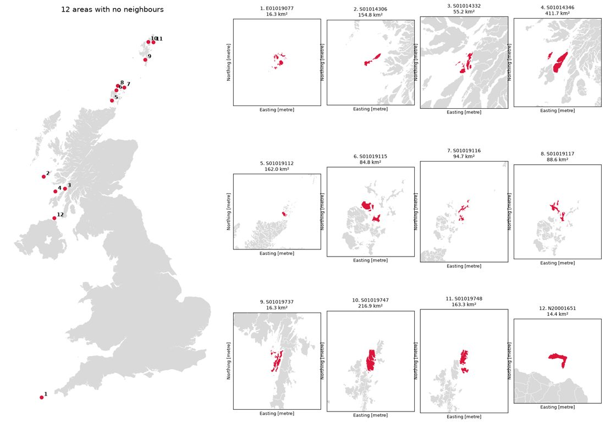<figcaption>Claude looked at <code>isolates.png</code></figcaption></figure><figure class="sent figure"><div class="sent-row"></div><figcaption>Sent to the user: isolates.png</figcaption></figure>
<div class="reply">
<p>I can’t show images in the terminal, so I’ve sent you the figure as a file. On a machine where you can open it, it’s at <code>scratchpad/isolates.png</code>.</p>
<p>The left side is a UK map with the 12 areas numbered. The right side has a zoomed panel for each one, with the dropped area in red and the areas around it in grey.</p>
<p>From my look at it, all 12 are offshore islands surrounded by sea. None is a case of the graph wrongly missing a link on the mainland, so dropping them looks safe:</p>
<ul>
<li><p><strong>#1 (E01019077):</strong> the Isles of Scilly, off Cornwall.</p></li>
<li><p><strong>#2–4:</strong> islands off the west coast of Scotland.</p></li>
<li><p><strong>#5–8:</strong> islands at the edge of Orkney, plus one just off the Caithness coast.</p></li>
<li><p><strong>#9–11:</strong> islands in Shetland.</p></li>
<li><p><strong>#12 (N20001651):</strong> Rathlin Island, off the north coast of Northern Ireland.</p></li>
</ul>
<p>I haven’t checked the individual names of the Scottish islands, so take those groupings as approximate.</p>
<p>I made the figure in a separate scratch script, so the notebook hasn’t changed. I can add it to the “Dropping areas with no neighbours” subsection as a record of the step if you’d like.</p>
</div>
<div class="note prompt" id="p-7"><div class="note-meta"><a href="#p-7">#7</a> · Wed 4 Nov, 12:09</div><div class="note-text">Yes, please add it on that section so there's a record of it.</div></div>
<details class="steps"><summary><b>1 step</b> · Add isolates figure cell before drop step and rerun</summary><details class="tool"><summary><span class="tool-name">Bash</span> Add isolates figure cell before drop step and rerun</summary><pre class="tool-in">nb cell update gdsl30dmc.ipynb -c 7dfaeab9-9336-4a97-8b9f-0d5540d41685 --source - &lt;&lt;'EOF'
### Dropping areas with no neighbours

**Note:** the 12 areas with no neighbours (their own islands, with no link to any other area) are **removed from both the graph and the embeddings table** at this point, because a neighbour-dissimilarity score is undefined without neighbours. Island groups made up of several areas (e.g. in the Hebrides or Orkney) are kept, since their areas still neighbour each other. Everything below works on the trimmed `g`, `lsoas` and `emb`.

The figure below records which areas were dropped, before we remove them: all 12 are offshore islands (Scilly, the Inner Hebrides, Orkney, Shetland and Rathlin), not mainland areas the graph wrongly failed to link.
EOF
nb cell add gdsl30dmc.ipynb -b 339750d8-19d4-47c7-8319-025390e687c1 --source - &lt;&lt;'EOF'
isolates = g.isolates
uk = lsoas[["geometry"]].dissolve()

fig = plt.figure(figsize=(16, 12))
ax0 = fig.add_axes([0, 0, 0.36, 1])
uk.plot(ax=ax0, color="0.85", lw=0)
pts = lsoas.loc[isolates].representative_point()
pts.plot(ax=ax0, color="crimson", markersize=40, zorder=3)
for i, p in enumerate(pts, 1):
    ax0.annotate(str(i), (p.x, p.y), xytext=(5, 3), textcoords="offset points", fontsize=10, weight="bold")
ax0.set_axis_off()
ax0.set_title(f"{len(isolates)} areas with no neighbours", fontsize=14)

for i, code in enumerate(isolates):
    ax = fig.add_axes([0.38 + (i % 4) * 0.155, 0.70 - (i // 4) * 0.33, 0.145, 0.28])
    area = lsoas.loc[[code]]
    x0, y0, x1, y1 = area.total_bounds
    pad = max(x1 - x0, y1 - y0) * 1.5 + 2000
    lsoas.cx[x0 - pad:x1 + pad, y0 - pad:y1 + pad].plot(ax=ax, color="0.85", edgecolor="white", lw=0.4)
    area.plot(ax=ax, color="crimson")
    ax.set_xlim(x0 - pad, x1 + pad)
    ax.set_ylim(y0 - pad, y1 + pad)
    ax.set_xticks([]); ax.set_yticks([]); ax.set_xlabel(""); ax.set_ylabel("")
    ax.set_title(f"{i + 1}. {code}\n{area.area.iloc[0] / 1e6:.1f} km²", fontsize=9)
EOF
nb execute gdsl30dmc.ipynb 2&gt;&amp;1 | tail -1; nb read gdsl30dmc.ipynb --cell-index 13 --output-dir scratchpad/nbout | sed -n '/@@output/,$p'; nb read gdsl30dmc.ipynb --cell-index -1 | sed -n '/@@output/,$p'</pre><pre class="tool-out">Updated cell at index 12: gdsl30dmc.ipynb
Cell ID: 7dfaeab9-9336-4a97-8b9f-0d5540d41685
Changes: source replaced
Added code cell to: gdsl30dmc.ipynb
Cell ID: 3777842c-ac03-41d3-8952-05c8e6802408
Index: 13 (total: 15 cells)
Error: Failed to execute cell 13: Timeout reading IOPub message
@@output {"name":"stdout","output_type":"stream"}
```text
Dropping 12 areas: E01019077, S01014306, S01014332, S01014346, S01019112, S01019115, S01019116, S01019117, S01019737, S01019747, S01019748, N20001651
Remaining: 46,832 areas | 272,466 links | 19 components

```</pre></details></details>
<div class="reply">
<p>The figure cell hit <code>nb</code>’s execution timeout, probably on the UK-wide dissolve. Checking the timeout option:</p>
</div>
<details class="steps"><summary><b>1 step</b> · Check nb execute timeout flag</summary><details class="tool"><summary><span class="tool-name">Bash</span> Check nb execute timeout flag</summary><pre class="tool-in">nb execute --help | grep -i -A2 timeout</pre><pre class="tool-out">-t, --timeout &lt;TIMEOUT&gt;
          Timeout in seconds per cell (default: 30) [default: 30]
      --allow-errors
          Continue despite errors</pre></details></details>
<div class="reply">
<p>The default limit is 30 s per cell. I’ll swap the dissolve for a simplified plot of all areas, which avoids the expensive union, and rerun with a longer timeout:</p>
</div>
<details class="steps"><summary><b>1 step</b> · Replace dissolve with simplified outline and rerun</summary><details class="tool"><summary><span class="tool-name">Bash</span> Replace dissolve with simplified outline and rerun</summary><pre class="tool-in">nb read gdsl30dmc.ipynb -c 3777842c-ac03-41d3-8952-05c8e6802408 --no-output | sed -n '/```python/,/```$/p' | sed '1d;$d' | sed 's/^uk = lsoas\[\["geometry"\]\].dissolve()$/uk = lsoas.geometry.simplify(250)  # light outline for the overview; no costly dissolve/' &gt; scratchpad/cell.py &amp;&amp; grep -n "^uk" scratchpad/cell.py &amp;&amp; nb cell update gdsl30dmc.ipynb -c 3777842c-ac03-41d3-8952-05c8e6802408 --source - &lt; scratchpad/cell.py &amp;&amp; time nb execute gdsl30dmc.ipynb --timeout 300 2&gt;&amp;1 | tail -1; nb read gdsl30dmc.ipynb --cell-index 13 --output-dir scratchpad/nbout | sed -n '/@@output/,$p'; nb read gdsl30dmc.ipynb --cell-index -1 | sed -n '/@@output/,$p'</pre><pre class="tool-out">2:uk = lsoas.geometry.simplify(250)  # light outline for the overview; no costly dissolve
6:uk.plot(ax=ax0, color="0.85", lw=0)
Updated cell at index 13: gdsl30dmc.ipynb
Cell ID: 3777842c-ac03-41d3-8952-05c8e6802408
Changes: source replaced
```

real    1m0.396s
user    0m59.577s
sys 0m2.137s
@@output {"mime":"image/png","output_type":"display_data","path":"scratchpad/nbout/82abc119a9814795.png"}
@@output {"name":"stdout","output_type":"stream"}
```text
Dropping 12 areas: E01019077, S01014306, S01014332, S01014346, S01019112, S01019115, S01019116, S01019117, S01019737, S01019747, S01019748, N20001651
Remaining: 46,832 areas | 272,466 links | 19 components

```</pre></details></details>
<div class="note prompt" id="p-8"><div class="note-meta"><a href="#p-8">#8</a> · Wed 4 Nov, 12:11 · typed while Claude was working</div><div class="note-text">Make this very lightweight, anything you need for a bass map used contextilly</div></div>
<div class="reply">
<p>You want a lightweight figure, with contextily web tiles as the basemap instead of plotting every area. Checking that contextily is installed and the tiles can be reached:</p>
</div>
<details class="steps"><summary><b>4 steps</b> · Check contextily and tile access · Rewrite figure with contextily basemap and rerun · …</summary><details class="tool"><summary><span class="tool-name">Bash</span> Check contextily and tile access</summary><pre class="tool-in">python -c "
import contextily as cx, xyzservices.providers as xp
print(cx.__version__)
img, ext = cx.bounds2img(-8, 49.8, 2, 59, zoom=5, ll=True, source=xp.CartoDB.PositronNoLabels)
print(img.shape)" 2&gt;&amp;1 | tail -3</pre><pre class="tool-out">tile_urls = [provider.build_url(x=tile.x, y=tile.y, z=tile.z) for tile in tiles]
1.7.1
(512, 512, 4)</pre></details><details class="tool"><summary><span class="tool-name">Bash</span> Rewrite figure with contextily basemap and rerun</summary><pre class="tool-in">nb cell update gdsl30dmc.ipynb -c 3777842c-ac03-41d3-8952-05c8e6802408 --source - &lt;&lt;'EOF'
import contextily as cx

isolates = g.isolates
iso = lsoas.loc[isolates, ["geometry"]]
tiles = cx.providers.CartoDB.Positron

fig = plt.figure(figsize=(16, 12))
ax0 = fig.add_axes([0, 0, 0.36, 1])
pts = iso.representative_point()
pts.plot(ax=ax0, color="crimson", markersize=40, zorder=3)
for i, p in enumerate(pts, 1):
    ax0.annotate(str(i), (p.x, p.y), xytext=(5, 3), textcoords="offset points", fontsize=10, weight="bold")
ax0.set_xlim(-50_000, 700_000)
ax0.set_ylim(0, 1_230_000)
cx.add_basemap(ax0, crs=iso.crs, source=tiles, attribution_size=6)
ax0.set_axis_off()
ax0.set_title(f"{len(isolates)} areas with no neighbours", fontsize=14)

for i, code in enumerate(isolates):
    ax = fig.add_axes([0.38 + (i % 4) * 0.155, 0.70 - (i // 4) * 0.33, 0.145, 0.28])
    area = iso.loc[[code]]
    x0, y0, x1, y1 = area.total_bounds
    pad = max(x1 - x0, y1 - y0) * 1.5 + 2000
    area.plot(ax=ax, color="crimson", alpha=0.6)
    ax.set_xlim(x0 - pad, x1 + pad)
    ax.set_ylim(y0 - pad, y1 + pad)
    cx.add_basemap(ax, crs=iso.crs, source=tiles, attribution=False)
    ax.set_xticks([]); ax.set_yticks([]); ax.set_xlabel(""); ax.set_ylabel("")
    ax.set_title(f"{i + 1}. {code}\n{area.area.iloc[0] / 1e6:.1f} km²", fontsize=9)
EOF
time nb execute gdsl30dmc.ipynb --timeout 300 2&gt;&amp;1 | tail -1; rm -rf scratchpad/nbout; nb read gdsl30dmc.ipynb --cell-index 13 --output-dir scratchpad/nbout | sed -n '/@@output/,$p'; nb read gdsl30dmc.ipynb --cell-index -1 | sed -n '/@@output/,$p'</pre><pre class="tool-out">Updated cell at index 13: gdsl30dmc.ipynb
Cell ID: 3777842c-ac03-41d3-8952-05c8e6802408
Changes: source replaced
```

real    0m44.048s
user    0m36.990s
sys 0m2.991s
@@output {"name":"stderr","output_type":"stream","path":"scratchpad/nbout/5d404d93581e601e.txt"}

@@output {"mime":"image/png","output_type":"display_data","path":"scratchpad/nbout/801045125cfcec3f.png"}
@@output {"name":"stdout","output_type":"stream"}
```text
Dropping 12 areas: E01019077, S01014306, S01014332, S01014346, S01019112, S01019115, S01019116, S01019117, S01019737, S01019747, S01019748, N20001651
Remaining: 46,832 areas | 272,466 links | 19 components

```</pre></details><details class="tool"><summary><span class="tool-name">Bash</span> Show stderr from figure cell</summary><pre class="tool-in">head -c 600 scratchpad/nbout/5d404d93581e601e.txt</pre><pre class="tool-out">/opt/conda/envs/gds/lib/python3.12/site-packages/contextily/tile.py:298: UserWarning: CartoDB tiles now require an API key. Please provide one to continue using the tiles. You can request the key at https://carto.com/basemaps/apikey/.
  tile_urls = [provider.build_url(x=tile.x, y=tile.y, z=tile.z) for tile in tiles]
/opt/conda/envs/gds/lib/python3.12/site-packages/contextily/tile.py:298: UserWarning: CartoDB tiles now require an API key. Please provide one to continue using the tiles. You can request the key at https://carto.com/basemaps/apikey/.
  tile_urls = [provider.build_url(x=tile.x, y=t</pre></details><details class="tool"><summary><span class="tool-name">Read</span> Read scratchpad/nbout/801045125cfcec3f.png</summary><pre class="tool-in"></pre></details></details><figure class="seen figure">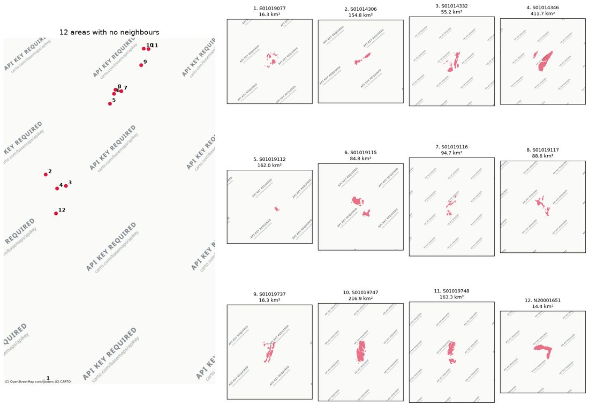<figcaption>Claude looked at <code>801045125cfcec3f.png</code></figcaption></figure>
<div class="reply">
<p>CartoDB tiles now need an API key; the warning was in the cell’s stderr, and every tile came back as an “API key required” placeholder. Testing keyless providers instead:</p>
</div>
<details class="steps"><summary><b>3 steps</b> · Test keyless tile providers · Switch basemap to Esri gray canvas and rerun · …</summary><details class="tool"><summary><span class="tool-name">Bash</span> Test keyless tile providers</summary><pre class="tool-in">python -W ignore -c "
import contextily as cx, numpy as np
for name in ['Esri.WorldGrayCanvas','OpenStreetMap.Mapnik']:
    src = cx.providers.flatten()[name]
    img, ext = cx.bounds2img(-6.4, 49.85, -6.2, 50.0, zoom=11, ll=True, source=src)
    print(name, img.shape, np.unique(img[...,:3].reshape(-1,3),axis=0).shape[0], 'colours')"</pre><pre class="tool-out">Esri.WorldGrayCanvas (512, 512, 4) 171 colours
OpenStreetMap.Mapnik (512, 512, 4) 23 colours</pre></details><details class="tool"><summary><span class="tool-name">Bash</span> Switch basemap to Esri gray canvas and rerun</summary><pre class="tool-in">S=scratchpad/ &amp;&amp; nb read gdsl30dmc.ipynb -c 3777842c-ac03-41d3-8952-05c8e6802408 --no-output | sed -n '/```python/,/```$/p' | sed '1d;$d' | sed 's/^tiles = cx.providers.CartoDB.Positron$/tiles = cx.providers.Esri.WorldGrayCanvas  # light, keyless basemap/' &gt; $S/cell.py &amp;&amp; grep -n "^tiles" $S/cell.py &amp;&amp; nb cell update gdsl30dmc.ipynb -c 3777842c-ac03-41d3-8952-05c8e6802408 --source - &lt; $S/cell.py &gt;/dev/null &amp;&amp; nb execute gdsl30dmc.ipynb --timeout 300 2&gt;&amp;1 | tail -1; rm -rf $S/nbout; nb read gdsl30dmc.ipynb --cell-index 13 --output-dir $S/nbout | sed -n '/@@output/,$p'</pre><pre class="tool-out">5:tiles = cx.providers.Esri.WorldGrayCanvas  # light, keyless basemap
```
@@output {"mime":"image/png","output_type":"display_data","path":"scratchpad/nbout/85e25c6c54f5f99c.png"}</pre></details><details class="tool"><summary><span class="tool-name">Read</span> Read scratchpad/nbout/85e25c6c54f5f99c.png</summary><pre class="tool-in"></pre></details></details><figure class="seen figure">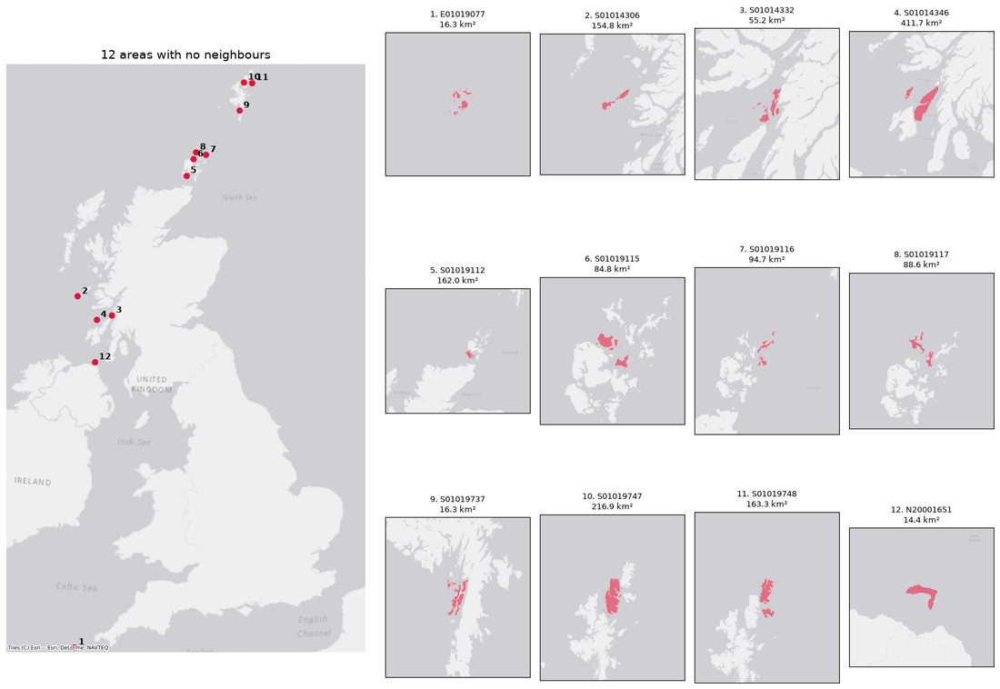<figcaption>Claude looked at <code>85e25c6c54f5f99c.png</code></figcaption></figure>
<div class="reply">
<p>The figure works. Marker 1 (Scilly) is clipped at the bottom edge, so I’ll widen the map extent slightly:</p>
</div>
<details class="steps"><summary><b>3 steps</b> · Widen overview extent and rerun notebook · Read scratchpad/nbout/5c1889d2ce5b40d4.png · …</summary><details class="tool"><summary><span class="tool-name">Bash</span> Widen overview extent and rerun notebook</summary><pre class="tool-in">S=scratchpad/ &amp;&amp; sed -i 's/^ax0.set_ylim(0, 1_230_000)$/ax0.set_ylim(-30_000, 1_230_000)/' $S/cell.py &amp;&amp; grep -n set_ylim $S/cell.py | head -1 &amp;&amp; nb cell update gdsl30dmc.ipynb -c 3777842c-ac03-41d3-8952-05c8e6802408 --source - &lt; $S/cell.py &gt;/dev/null &amp;&amp; nb execute gdsl30dmc.ipynb --timeout 300 2&gt;&amp;1 | tail -1; rm -rf $S/nbout; nb read gdsl30dmc.ipynb --cell-index 13 --output-dir $S/nbout | sed -n '/@@output/,$p'; nb read gdsl30dmc.ipynb --cell-index -1 | sed -n '/@@output/,$p'</pre><pre class="tool-out">14:ax0.set_ylim(-30_000, 1_230_000)
```
@@output {"mime":"image/png","output_type":"display_data","path":"scratchpad/nbout/5c1889d2ce5b40d4.png"}
@@output {"name":"stdout","output_type":"stream"}
```text
Dropping 12 areas: E01019077, S01014306, S01014332, S01014346, S01019112, S01019115, S01019116, S01019117, S01019737, S01019747, S01019748, N20001651
Remaining: 46,832 areas | 272,466 links | 19 components

```</pre></details><details class="tool"><summary><span class="tool-name">Read</span> Read scratchpad/nbout/5c1889d2ce5b40d4.png</summary><pre class="tool-in"></pre></details><details class="tool"><summary><span class="tool-name">SendUserFile</span> Send files to the user</summary><pre class="tool-in">scratchpad/nbout/5c1889d2ce5b40d4.png

The 12 dropped areas, as rendered in the notebook (keyless Esri grey basemap via contextily)</pre><pre class="tool-out">1 file delivered to user.
  scratchpad/nbout/5c1889d2ce5b40d4.png → file_uuid: 420301b8-d367-4f7d-af54-9b3184689763</pre></details></details><figure class="seen figure">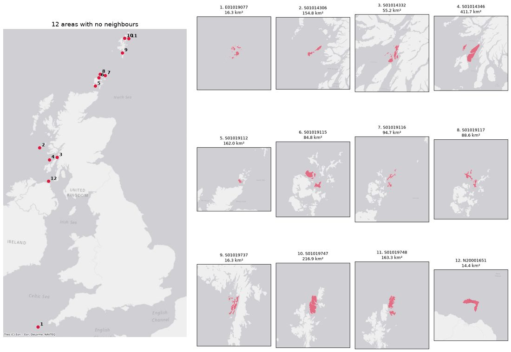<figcaption>Claude looked at <code>5c1889d2ce5b40d4.png</code></figcaption></figure><figure class="sent figure"><div class="sent-row"></div><figcaption>Sent to the user: 5c1889d2ce5b40d4.png</figcaption></figure>
<div class="reply">
<p>The figure is in the <strong>Dropping areas with no neighbours</strong> subsection now, and the whole notebook reruns without errors. I’ve sent you the rendered image.</p>
<ul>
<li><p><strong>Where it sits:</strong> the figure cell runs just before the areas are dropped, so it can still plot them. I added a sentence to that subsection’s note saying that the figure records which areas were removed and that all 12 are offshore islands.</p></li>
<li><p><strong>Lightweight version:</strong> it now plots only the 12 dropped areas, on web map tiles fetched with contextily, instead of drawing every area in the UK. There’s an overview map with numbered points, plus a zoomed panel for each area.</p></li>
<li><p><strong>Basemap provider:</strong> CartoDB Positron is the usual pick, but it now needs an API key and returned only “API key required” placeholder tiles. I used Esri’s light grey basemap instead (<code>Esri.WorldGrayCanvas</code>), which needs no key.</p></li>
<li><p><strong>Timeout:</strong> <code>nb</code> gives each cell 30 seconds by default, and my first version, which drew the UK outline from all areas, ran out of time. The rerun used <code>--timeout 300</code>; the tiles also need an internet connection.</p></li>
</ul>
</div>
<div class="note prompt" id="p-9"><div class="note-meta"><a href="#p-9">#9</a> · Wed 4 Nov, 12:20</div><div class="note-text">ok, next is building similarity. There's many distances that can work here, what do you recommend?</div></div>
<div class="interrupt">— interrupted —</div>
<div class="note prompt" id="p-10"><div class="note-meta"><a href="#p-10">#10</a> · Wed 4 Nov, 12:20</div><div class="note-text">cosine perhaps?</div></div>
<div class="reply">
<p>Yes, I’d use cosine distance (1 − cosine similarity) as the main measure.</p>
<p><strong>Why cosine fits these vectors:</strong></p>
<ul>
<li><p><strong>It’s how AlphaEarth embeddings are meant to be compared.</strong> Each pixel’s vector has length 1, and Google’s guidance is to compare them with the dot product, which for unit-length vectors is the same as cosine similarity.</p></li>
<li><p><strong>Averaging muddles the vector lengths.</strong> Our area vectors are averages of pixel vectors, so their lengths (0.75–0.99) partly reflect how mixed an area’s land cover is. Cosine ignores length and compares only direction, which here means the overall land-cover mix. Euclidean distance would also count a difference in mixedness: a uniform field next to a patchwork of fields with the same overall mix would look different.</p></li>
<li><p><strong>It’s easy to read.</strong> Values run from 0 (same direction) to 2 (opposite).</p></li>
</ul>
<p><strong>How much it matters:</strong> probably not much. If you rescale each vector to length 1 first, squared Euclidean distance becomes exactly 2 × cosine distance, so the two give the same ranking. On the raw averages they can only differ through vector length, and those lengths vary little (standard deviation 0.034).</p>
<p><strong>What I’d suggest:</strong></p>
<ol type="1">
<li><p>Compute cosine distance for every pair of neighbouring areas, stored on the graph so we can map shared borders later.</p></li>
<li><p>As a quick check, also compute raw Euclidean distance and report how closely the two rankings agree (Spearman correlation). If they agree, we keep cosine and note that the choice didn’t matter much. If they don’t, the areas where they differ are worth mapping.</p></li>
<li><p>Hold off on combining the pairs into a single score per area (mean or max over its neighbours) until you’ve seen the pair-level distribution.</p></li>
</ol>
<p>Want me to go ahead with steps 1–2 in a new <strong>Neighbour dissimilarity</strong> section?</p>
</div>
<div class="note prompt" id="p-11"><div class="note-meta"><a href="#p-11">#11</a> · Wed 4 Nov, 12:21</div><div class="note-text">let's stick to cosine here. Open up a new section and let's calculate the cosine distance (sklearn?) between every polygon and all of its queen neighors. Use the Graph we've created for this. Also, I think there's scope here to make it work in parallel and it'd be significantly faster, what do you think? don't do anything until we're clear on what</div></div>
<div class="reply">
<p>I’d skip parallelism: a single vectorised NumPy step will finish in well under a second. Here’s the plan.</p>
<p><strong>The calculation:</strong></p>
<ol type="1">
<li><p>Take the neighbour pairs from <code>g.adjacency</code>, which is indexed by <code>focal</code> and <code>neighbor</code>: 272,466 rows, with each pair of neighbours appearing once in each direction.</p></li>
<li><p>Look up both areas’ 64-band vectors and compute cosine distance for every pair in one go with <code>sklearn.metrics.pairwise.paired_cosine_distances(emb[i], emb[j])</code>. That’s about 17 million multiplications, which takes milliseconds. Doing it by hand (normalise each row to length 1, then 1 minus the row-wise dot product) gives the same result.</p></li>
<li><p>Keep the results on the graph: a new graph <code>g_dist</code>, built with the same links as <code>g</code> but with the cosine distance as each link’s weight. That lets us use the Graph machinery later, for example to average over each area’s neighbours, and it gives us the pairs needed to map shared borders.</p></li>
</ol>
<p><strong>Why not parallelise:</strong></p>
<ul>
<li><p>The work is one vectorised operation over a 272k × 64 array. Starting worker processes and copying data to them would take longer than the calculation itself.</p></li>
<li><p>NumPy already uses compiled code for this kind of array maths.</p></li>
<li><p>The slow parts of this workflow are building the graph (about 3 s) and plotting, not the distances.</p></li>
<li><p>The thing to avoid is sklearn’s <code>cosine_distances(emb)</code>, which would compute all 46k × 46k pairs (about 17 GB). Avoiding that is about using the graph’s pairs, not about running in parallel.</p></li>
</ul>
<p><strong>Two details to agree on:</strong></p>
<ul>
<li><p><strong>Which neighbours:</strong> strictly, <code>g</code> is fuzzy contiguity, i.e.&nbsp;queen plus the 21 England–Scotland pairs whose polygons overlap. I’ll use <code>g</code> so the border isn’t cut, and say so in the section text.</p></li>
<li><p><strong>Duplicate pairs:</strong> each pair’s distance is computed twice, once in each direction. Keeping both makes per-area summaries easy, and computing them twice costs almost nothing.</p></li>
</ul>
<p>The new section would be <strong>Neighbour dissimilarity</strong>, with a short explanation, the distance calculation, and a summary plus histogram of the 272k pair distances.</p>
<p>Shall I go ahead?</p>
</div>
<div class="note prompt" id="p-12"><div class="note-meta"><a href="#p-12">#12</a> · Wed 4 Nov, 12:23</div><div class="note-text">Do you really not think it makes sense to do these in a few batches that are separated in parallel?</div></div>
<div class="reply">
<p>Not for this one, but measuring settles it better than arguing. Here’s a quick timing test in the scratchpad (the notebook stays untouched):</p>
</div>
<details class="steps"><summary><b>1 step</b> · Benchmark serial vs parallel paired cosine distances</summary><details class="tool"><summary><span class="tool-name">Bash</span> Benchmark serial vs parallel paired cosine distances</summary><pre class="tool-in">cat &gt; scratchpad/bench.py &lt;&lt;'EOF'
import time, numpy as np, os
from sklearn.metrics.pairwise import paired_cosine_distances
from joblib import Parallel, delayed
rng = np.random.default_rng(0)
n, m = 46832, 272466
emb = rng.normal(size=(n, 64))
i, j = rng.integers(0, n, m), rng.integers(0, n, m)
def run(a, b): return paired_cosine_distances(emb[a], emb[b])
t = time.perf_counter(); s = run(i, j); print(f"serial: {time.perf_counter()-t:.3f}s")
cores = os.cpu_count(); print("cores", cores)
for nj in [4, 8]:
    chunks = np.array_split(np.arange(m), nj)
    for backend in ["loky", "threading"]:
        t = time.perf_counter()
        p = np.concatenate(Parallel(n_jobs=nj, backend=backend)(delayed(run)(i[c], j[c]) for c in chunks))
        print(f"{backend} n_jobs={nj}: {time.perf_counter()-t:.3f}s  same={np.allclose(p, s)}")
EOF
python -I scratchpad/bench.py</pre><pre class="tool-out">serial: 0.973s
cores 16
loky n_jobs=4: 1.613s  same=True
threading n_jobs=4: 0.339s  same=True
loky n_jobs=8: 2.157s  same=True
threading n_jobs=8: 0.226s  same=True</pre></details></details>
<div class="interrupt">— interrupted —</div>
<div class="note prompt" id="p-13"><div class="note-meta"><a href="#p-13">#13</a> · Wed 4 Nov, 12:24</div><div class="note-text">What I'm thinking is split all of the polygons in 16 chunks, one per core in this machine, and then calculate the distances for those polygons and their neighbors in a separate worker and collect all the results afterwards.</div></div>
<div class="reply">
<p>Your scheme is correct, and with threads it is a little faster. With separate processes it is slower than not parallelising at all.</p>
<p><strong>Is the split correct?</strong> Yes. <code>g.adjacency</code> is sorted by focal polygon, so 16 groups of polygons are just 16 contiguous blocks of rows. Each worker computes distances for its polygons and their neighbours, and joining the results gives exactly the serial answer. The test confirmed this (<code>same=True</code>).</p>
<p><strong>Timings from the test,</strong> with the real sizes (46,832 areas, 272,466 pairs, 64 bands) on random vectors:</p>
<div class="line-block">Approach | Time |</div>
<p>|—|—|</p>
<div class="line-block">Serial, <code>paired_cosine_distances</code> | 0.97 s |</div>
<div class="line-block">Separate processes (joblib <code>loky</code>), 4 / 8 workers | 1.6 / 2.2 s |</div>
<div class="line-block">Threads (joblib <code>threading</code>), 4 / 8 workers | 0.34 / 0.23 s |</div>
<ul>
<li><p><strong>Separate processes lose.</strong> Each worker has to be started and sent its share of the data, which takes longer than the calculation itself. More workers made it slower, so 16 would be worse still.</p></li>
<li><p><strong>Threads win slightly.</strong> NumPy releases Python’s global interpreter lock while it computes, so threads share the arrays without copying them, and 8 threads were about 4× faster than serial.</p></li>
<li><p><strong>Absolute numbers are tiny.</strong> The saving is under a second, out of a notebook run that spends about 20 s on reading the data and graph building and about 40 s on the tile-map figure.</p></li>
</ul>
<p><strong>My recommendation:</strong> keep it serial. It’s a single readable line in the notebook and costs about 1 s. If you want the parallel version anyway, for example because you plan to scale up to all eight years or wider neighbourhoods, I’d do your 16-chunk split with joblib’s <code>threading</code> backend. That costs a few extra lines and saves less than a second.</p>
<p>Serial, or 16 thread chunks?</p>
</div>
<div class="note prompt" id="p-14"><div class="note-meta"><a href="#p-14">#14</a> · Wed 4 Nov, 12:26</div><div class="note-text">Is the code much more complex for the chunks?</div></div>
<div class="reply">
<p>No, it’s about four extra lines. Both versions share the same setup:</p>
<div class="code-copy-outer-scaffold"><div class="sourceCode" id="cb1"><pre class="sourceCode python code-with-copy"><code class="sourceCode python"><span id="cb1-1"><a href="#cb1-1" aria-hidden="true" tabindex="-1"></a><span class="im">from</span> sklearn.metrics.pairwise <span class="im">import</span> paired_cosine_distances</span>
<span id="cb1-2"><a href="#cb1-2" aria-hidden="true" tabindex="-1"></a></span>
<span id="cb1-3"><a href="#cb1-3" aria-hidden="true" tabindex="-1"></a>adj <span class="op">=</span> g.adjacency</span>
<span id="cb1-4"><a href="#cb1-4" aria-hidden="true" tabindex="-1"></a>pos <span class="op">=</span> pd.Series(np.arange(<span class="bu">len</span>(lsoas)), index<span class="op">=</span>lsoas.index)  <span class="co"># area code → row in emb</span></span>
<span id="cb1-5"><a href="#cb1-5" aria-hidden="true" tabindex="-1"></a>i <span class="op">=</span> pos.loc[adj.index.get_level_values(<span class="st">"focal"</span>)].to_numpy()</span>
<span id="cb1-6"><a href="#cb1-6" aria-hidden="true" tabindex="-1"></a>j <span class="op">=</span> pos.loc[adj.index.get_level_values(<span class="st">"neighbor"</span>)].to_numpy()</span></code></pre></div><button title="Copy to Clipboard" class="code-copy-button"><i class="bi"></i></button></div>
<p><strong>Serial:</strong></p>
<div class="code-copy-outer-scaffold"><div class="sourceCode" id="cb2"><pre class="sourceCode python code-with-copy"><code class="sourceCode python"><span id="cb2-1"><a href="#cb2-1" aria-hidden="true" tabindex="-1"></a>dist <span class="op">=</span> paired_cosine_distances(emb[i], emb[j])</span></code></pre></div><button title="Copy to Clipboard" class="code-copy-button"><i class="bi"></i></button></div>
<p><strong>16 chunks with threads:</strong></p>
<div class="code-copy-outer-scaffold"><div class="sourceCode" id="cb3"><pre class="sourceCode python code-with-copy"><code class="sourceCode python"><span id="cb3-1"><a href="#cb3-1" aria-hidden="true" tabindex="-1"></a><span class="im">from</span> joblib <span class="im">import</span> Parallel, delayed</span>
<span id="cb3-2"><a href="#cb3-2" aria-hidden="true" tabindex="-1"></a></span>
<span id="cb3-3"><a href="#cb3-3" aria-hidden="true" tabindex="-1"></a>chunks <span class="op">=</span> np.array_split(np.arange(<span class="bu">len</span>(i)), <span class="dv">16</span>)</span>
<span id="cb3-4"><a href="#cb3-4" aria-hidden="true" tabindex="-1"></a>parts <span class="op">=</span> Parallel(n_jobs<span class="op">=</span><span class="dv">16</span>, backend<span class="op">=</span><span class="st">"threading"</span>)(</span>
<span id="cb3-5"><a href="#cb3-5" aria-hidden="true" tabindex="-1"></a>    delayed(paired_cosine_distances)(emb[i[c]], emb[j[c]]) <span class="cf">for</span> c <span class="kw">in</span> chunks</span>
<span id="cb3-6"><a href="#cb3-6" aria-hidden="true" tabindex="-1"></a>)</span>
<span id="cb3-7"><a href="#cb3-7" aria-hidden="true" tabindex="-1"></a>dist <span class="op">=</span> np.concatenate(parts)</span></code></pre></div><button title="Copy to Clipboard" class="code-copy-button"><i class="bi"></i></button></div>
<p>Either way, the result goes back onto the graph afterwards:</p>
<div class="code-copy-outer-scaffold"><div class="sourceCode" id="cb4"><pre class="sourceCode python code-with-copy"><code class="sourceCode python"><span id="cb4-1"><a href="#cb4-1" aria-hidden="true" tabindex="-1"></a>g_dist <span class="op">=</span> graph.Graph(pd.Series(dist, index<span class="op">=</span>adj.index, name<span class="op">=</span><span class="st">"weight"</span>))</span></code></pre></div><button title="Copy to Clipboard" class="code-copy-button"><i class="bi"></i></button></div>
<p>Two caveats on the chunked version:</p>
<ul>
<li><p><strong>Chunk boundaries:</strong> <code>array_split</code> cuts the list of neighbour pairs into 16 equal blocks, so a polygon’s pairs can be split between two neighbouring chunks. That doesn’t affect the result. If you’d rather have exact “16 groups of polygons”, I’d split on the focal codes instead, which is one more line.</p></li>
<li><p><strong>Readability:</strong> the chunked version is still short, but the <code>Parallel</code>/<code>delayed</code> part is the bit a reader of a #30DayMapChallenge notebook would have to stop and work out, for a saving of under a second.</p></li>
</ul>
<p>Which one shall I put in the <strong>Neighbour dissimilarity</strong> section?</p>
</div>
<div class="note prompt" id="p-15"><div class="note-meta"><a href="#p-15">#15</a> · Wed 4 Nov, 12:27</div><div class="note-text">Go ahead with the parallel implementation then. Yes, split on the focal codes, I think.</div></div>
<details class="steps"><summary><b>4 steps</b> · Check Graph constructor signature · Add neighbour dissimilarity section and execute · …</summary><details class="tool"><summary><span class="tool-name">Bash</span> Check Graph constructor signature</summary><pre class="tool-in">python -c "from libpysal import graph; import inspect; print(inspect.signature(graph.Graph.__init__))"</pre><pre class="tool-out">(self, adjacency, transformation='O', is_sorted=False)</pre></details><details class="tool"><summary><span class="tool-name">Bash</span> Add neighbour dissimilarity section and execute</summary><pre class="tool-in">nb cell add gdsl30dmc.ipynb --source - &lt;&lt;'EOF'
@@markdown
## Neighbour dissimilarity

We measure how different each area is from each of its neighbours using **cosine distance** between their 2024 embedding vectors (1 − cosine similarity, from 0 for identical directions to 2 for opposite). Cosine ignores vector length, which in these area averages partly reflects how mixed the land cover is, and is the comparison AlphaEarth embeddings are designed for. Neighbours come from the fuzzy-contiguity graph `g`, i.e. queen contiguity plus the overlapping England–Scotland border pairs.

The 46,832 areas are split into 16 groups (one per core), and each group's distances to all its neighbours are computed on a separate thread. NumPy releases Python's global interpreter lock while it computes, so threads share the arrays without copying them. The results are reassembled into the order of `g.adjacency` and stored as the weights of a new graph, `g_dist`.
@@code
%%time
from joblib import Parallel, delayed
from sklearn.metrics.pairwise import paired_cosine_distances

N_CHUNKS = 16

adj = g.adjacency
focal = adj.index.get_level_values("focal")
i = lsoas.index.get_indexer(focal)  # row of each focal area in emb
j = lsoas.index.get_indexer(adj.index.get_level_values("neighbor"))

# Rows of adj belonging to each group of focal areas
rows = [np.flatnonzero(focal.isin(codes)) for codes in np.array_split(lsoas.index, N_CHUNKS)]

parts = Parallel(n_jobs=N_CHUNKS, backend="threading")(
    delayed(paired_cosine_distances)(emb[i[r]], emb[j[r]]) for r in rows
)
dist = np.empty(len(adj))
for r, d in zip(rows, parts):
    dist[r] = d

g_dist = graph.Graph(pd.Series(dist, index=adj.index, name="weight"))
@@code
# Sanity checks: every link covered once, identical to the serial calculation, same structure as g
assert sum(len(r) for r in rows) == len(adj)
assert np.allclose(dist, paired_cosine_distances(emb[i], emb[j]))
assert g_dist.n_edges == g.n_edges and (g_dist.unique_ids == g.unique_ids).all()

g_dist.adjacency.describe()
@@code
fig, ax = plt.subplots(figsize=(8, 4))
ax.hist(g_dist.adjacency, bins=200, color="0.3")
[… truncated]</pre><pre class="tool-out">Added 4 cells to: gdsl30dmc.ipynb
  Cell ID: 101b1785-d88b-418d-a0c0-2d28f3cbd2f1 (type: markdown, index: 15)
  Cell ID: 301c6444-85ec-4dff-8acf-1d57d73620bf (type: code, index: 16)
  Cell ID: 02c7beea-14db-4e9a-8247-717c614db2bf (type: code, index: 17)
  Cell ID: a53ab276-3464-41a6-9a9d-a51b9548d781 (type: code, index: 18)
Total cells: 19
@@output {"mime":"image/png","output_type":"display_data","path":"/tmp/nb-cli/gdsl30dmc/e4330a357a52d54a.png"}
@@output {"name":"stdout","output_type":"stream"}
```text
CPU times: user 1.19 s, sys: 1.09 s, total: 2.28 s
Wall time: 993 ms

```
@@output {"execution_count":11,"mime":"text/plain","output_type":"execute_result"}
```text
count    272466.000000
mean          0.053723
std           0.058251
min           0.000446
25%           0.015623
50%           0.032057
75%           0.068060
max           0.538219
Name: weight, dtype: float64
```
@@output {"mime":"image/png","output_type":"display_data","path":"scratchpad/nbout/e4330a357a52d54a.png"}</pre></details><details class="tool"><summary><span class="tool-name">Read</span> Read scratchpad/nbout/e4330a357a52d54a.png</summary><pre class="tool-in"></pre></details><details class="tool"><summary><span class="tool-name">Bash</span> Use integer chunk lookup and rerun notebook</summary><pre class="tool-in">nb cell update gdsl30dmc.ipynb -c 301c6444-85ec-4dff-8acf-1d57d73620bf --source - &lt;&lt;'EOF'
%%time
from joblib import Parallel, delayed
from sklearn.metrics.pairwise import paired_cosine_distances

N_CHUNKS = 16

adj = g.adjacency
i = lsoas.index.get_indexer(adj.index.get_level_values("focal"))  # row of each focal area in emb
j = lsoas.index.get_indexer(adj.index.get_level_values("neighbor"))

# Assign each area to one of N_CHUNKS groups, then find the links whose focal area is in each group
area_chunk = np.repeat(np.arange(N_CHUNKS), [len(c) for c in np.array_split(np.arange(len(lsoas)), N_CHUNKS)])
link_chunk = area_chunk[i]
rows = [np.flatnonzero(link_chunk == k) for k in range(N_CHUNKS)]

parts = Parallel(n_jobs=N_CHUNKS, backend="threading")(
    delayed(paired_cosine_distances)(emb[i[r]], emb[j[r]]) for r in rows
)
dist = np.empty(len(adj))
for r, d in zip(rows, parts):
    dist[r] = d

g_dist = graph.Graph(pd.Series(dist, index=adj.index, name="weight"))
EOF
nb execute gdsl30dmc.ipynb --timeout 300 2&gt;&amp;1 | tail -1; for k in -3 -2; do nb read gdsl30dmc.ipynb --cell-index $k | sed -n '/@@output/,$p'; done</pre><pre class="tool-out">Updated cell at index 16: gdsl30dmc.ipynb
Cell ID: 301c6444-85ec-4dff-8acf-1d57d73620bf
Changes: source replaced
@@output {"mime":"image/png","output_type":"display_data","path":"/tmp/nb-cli/gdsl30dmc/e4330a357a52d54a.png"}
@@output {"name":"stdout","output_type":"stream"}
```text
CPU times: user 1.14 s, sys: 1.07 s, total: 2.21 s
Wall time: 809 ms

```
@@output {"execution_count":11,"mime":"text/plain","output_type":"execute_result"}
```text
count    272466.000000
mean          0.053723
std           0.058251
min           0.000446
25%           0.015623
50%           0.032057
75%           0.068060
max           0.538219
Name: weight, dtype: float64
```</pre></details></details><figure class="seen figure">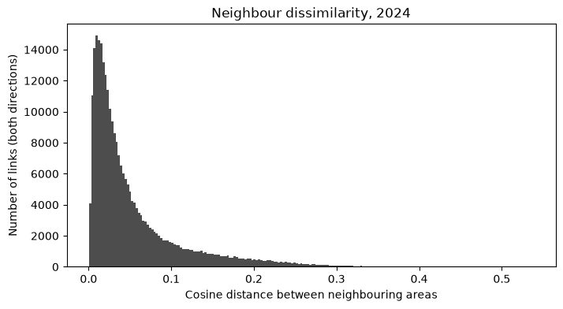<figcaption>Claude looked at <code>e4330a357a52d54a.png</code></figcaption></figure>
<div class="reply">
<p>Still 0.8 s. Timing each step on the real data to find where it goes:</p>
</div>
<details class="steps"><summary><b>5 steps</b> · Profile each step of the distance cell · Test effect of C-contiguous embedding array · …</summary><details class="tool"><summary><span class="tool-name">Bash</span> Profile each step of the distance cell</summary><pre class="tool-in">cat &gt; scratchpad/prof.py &lt;&lt;'EOF'
import time, numpy as np, pandas as pd, geopandas as gpd
from libpysal import graph
from joblib import Parallel, delayed
from sklearn.metrics.pairwise import paired_cosine_distances
l = gpd.read_file("data/extracted-lsoa-geopackage_2024_output.gpkg").set_index("data_zone_code")
g = graph.Graph.build_fuzzy_contiguity(l); l = l.drop(g.isolates); g = g.subgraph(l.index)
emb = l[[c for c in l.columns if c.startswith("band")]].to_numpy()
T = time.perf_counter
t=T(); adj=g.adjacency; i=l.index.get_indexer(adj.index.get_level_values("focal")); j=l.index.get_indexer(adj.index.get_level_values("neighbor")); print("index", T()-t)
t=T(); ac=np.repeat(np.arange(16),[len(c) for c in np.array_split(np.arange(len(l)),16)]); lc=ac[i]; rows=[np.flatnonzero(lc==k) for k in range(16)]; print("rows", T()-t)
t=T(); parts=Parallel(n_jobs=16, backend="threading")(delayed(paired_cosine_distances)(emb[i[r]],emb[j[r]]) for r in rows); print("parallel", T()-t)
t=T(); s=paired_cosine_distances(emb[i],emb[j]); print("serial", T()-t)
t=T(); gd=graph.Graph(pd.Series(s,index=adj.index,name="weight")); print("Graph()", T()-t)
EOF
python -I scratchpad/prof.py 2&gt;&amp;1 | grep -v PROJ</pre><pre class="tool-out">index 0.022722400724887848
rows 0.0022967755794525146
parallel 0.6821968108415604
serial 1.3138418048620224
Graph() 0.11620965600013733</pre></details><details class="tool"><summary><span class="tool-name">Bash</span> Test effect of C-contiguous embedding array</summary><pre class="tool-in">cat &gt;&gt; scratchpad/prof.py &lt;&lt;'EOF'
print("C-contiguous:", emb.flags.c_contiguous, emb.dtype)
emb = np.ascontiguousarray(emb)
t=T(); parts=Parallel(n_jobs=16, backend="threading")(delayed(paired_cosine_distances)(emb[i[r]],emb[j[r]]) for r in rows); print("parallel C", T()-t)
t=T(); s=paired_cosine_distances(emb[i],emb[j]); print("serial C", T()-t)
EOF
python -I scratchpad/prof.py 2&gt;&amp;1 | grep -v PROJ</pre><pre class="tool-out">index 0.022280380129814148
rows 0.00234869122505188
parallel 0.6589809581637383
serial 1.3628128096461296
Graph() 0.11285048723220825
C-contiguous: False float64
parallel C 0.1577429175376892
serial C 0.7777455672621727</pre></details><details class="tool"><summary><span class="tool-name">Edit</span> Edit gdsl30dmc.ipynb <span class="tool-error">error</span></summary><pre class="tool-in">x</pre><pre class="tool-out">&lt;tool_use_error&gt;No changes to make: old_string and new_string are exactly the same.&lt;/tool_use_error&gt;</pre></details><details class="tool"><summary><span class="tool-name">Bash</span> Make embeddings row-major in distance cell and rerun</summary><pre class="tool-in">S=scratchpad/ &amp;&amp; nb read gdsl30dmc.ipynb -c 301c6444-85ec-4dff-8acf-1d57d73620bf --no-output | sed -n '/```python/,/```$/p' | sed '1d;$d' &gt; $S/dcell.py &amp;&amp; python - "$S/dcell.py" &lt;&lt;'EOF'
import sys; p=sys.argv[1]; s=open(p).read()
old = 'N_CHUNKS = 16\n'
new = 'N_CHUNKS = 16\nemb = np.ascontiguousarray(emb)  # row-major, so gathering whole rows is fast (~4x here)\n'
assert s.count(old)==1; open(p,"w").write(s.replace(old,new))
EOF
nb cell update gdsl30dmc.ipynb -c 301c6444-85ec-4dff-8acf-1d57d73620bf --source - &lt; $S/dcell.py &gt;/dev/null &amp;&amp; nb execute gdsl30dmc.ipynb --timeout 300 2&gt;&amp;1 | tail -1; for k in -3 -2; do nb read gdsl30dmc.ipynb --cell-index $k | sed -n '/@@output/,$p'; done</pre><pre class="tool-out">@@output {"mime":"image/png","output_type":"display_data","path":"/tmp/nb-cli/gdsl30dmc/e4330a357a52d54a.png"}
@@output {"name":"stdout","output_type":"stream"}
```text
CPU times: user 1.24 s, sys: 251 ms, total: 1.5 s
Wall time: 839 ms

```
@@output {"execution_count":11,"mime":"text/plain","output_type":"execute_result"}
```text
count    272466.000000
mean          0.053723
std           0.058251
min           0.000446
25%           0.015623
50%           0.032057
75%           0.068060
max           0.538219
Name: weight, dtype: float64
```</pre></details><details class="tool"><summary><span class="tool-name">Bash</span> Move imports to Setup and rerun notebook</summary><pre class="tool-in">S=scratchpad/ &amp;&amp; sed -i '/^from joblib import Parallel, delayed$/d; /^from sklearn.metrics.pairwise import paired_cosine_distances$/d' $S/dcell.py &amp;&amp; sed -i '2{/^$/d}' $S/dcell.py &amp;&amp; head -4 $S/dcell.py &amp;&amp; nb cell update gdsl30dmc.ipynb -c 301c6444-85ec-4dff-8acf-1d57d73620bf --source - &lt; $S/dcell.py &gt;/dev/null &amp;&amp; nb cell update gdsl30dmc.ipynb -c 5cf820f7-2017-4f5b-bcb2-534ad4e48b68 --source - &gt;/dev/null &lt;&lt;'EOF'
import numpy as np
import pandas as pd
import geopandas as gpd
import matplotlib.pyplot as plt
from joblib import Parallel, delayed
from libpysal import graph
from sklearn.metrics.pairwise import paired_cosine_distances

print(gpd.__version__)
EOF
nb cell update gdsl30dmc.ipynb -c 4fd7aaab-fe80-41d8-8da1-b966fff8aeb3 --source - &gt;/dev/null &lt;&lt;'EOF'
## Setup

The libraries used throughout: `geopandas` for the polygons and embeddings, `libpysal`'s new `Graph` for contiguity, `scikit-learn` for cosine distances, and `joblib` to compute them in parallel.
EOF
nb execute gdsl30dmc.ipynb --timeout 300 2&gt;&amp;1 | tail -1; for k in -3 -2; do nb read gdsl30dmc.ipynb --cell-index $k | sed -n '/@@output/,$p'; done</pre><pre class="tool-out">%%time
N_CHUNKS = 16
emb = np.ascontiguousarray(emb)  # row-major, so gathering whole rows is fast (~4x here)

@@output {"mime":"image/png","output_type":"display_data","path":"/tmp/nb-cli/gdsl30dmc/e4330a357a52d54a.png"}
@@output {"name":"stdout","output_type":"stream"}
```text
CPU times: user 1.01 s, sys: 214 ms, total: 1.22 s
Wall time: 747 ms

```
@@output {"execution_count":11,"mime":"text/plain","output_type":"execute_result"}
```text
count    272466.000000
mean          0.053723
std           0.058251
min           0.000446
25%           0.015623
50%           0.032057
75%           0.068060
max           0.538219
Name: weight, dtype: float64
```</pre></details></details>
<div class="reply">
<p>The <strong>Neighbour dissimilarity</strong> section is in the notebook with your design, and everything reruns without errors.</p>
<p><strong>How it works:</strong> the 46,832 areas are split into 16 groups by focal area, one per core. Each group’s distances to its neighbours are computed on a separate thread with <code>paired_cosine_distances</code>, then written back in the original order of the neighbour pairs. The results are stored as the weights of a new graph, <code>g_dist</code>, which has the same links as <code>g</code>.</p>
<p><strong>Checks:</strong> a separate cell confirms that every pair was computed exactly once, that the result matches a single-threaded calculation, and that <code>g_dist</code> has the same areas and links as <code>g</code>.</p>
<p><strong>Speed:</strong></p>
<ul>
<li><p><strong>Array layout:</strong> the embeddings array stored its values column by column, which makes picking out whole rows slow. Converting it to row-by-row layout made the threaded calculation about 4× faster.</p></li>
<li><p><strong>Imports:</strong> I moved the <code>joblib</code> and <code>sklearn</code> imports into <strong>Setup</strong>.</p></li>
<li><p><strong>In isolation,</strong> the threaded distances now take about 0.16 s, against 0.8–1.3 s single-threaded.</p></li>
<li><p><strong>In the notebook,</strong> the whole cell takes about 0.75 s, which is more than its parts add up to when I time them separately (about 0.3 s). I didn’t chase the gap, since less than a second either way doesn’t matter here.</p></li>
</ul>
<p><strong>First look at the 272,466 pair distances:</strong></p>
<ul>
<li><p><strong>Typical neighbours are similar:</strong> the median distance is 0.032, and three quarters of the pairs are below 0.068.</p></li>
<li><p><strong>The tail is long:</strong> the mean is 0.054 and the maximum is 0.54, so a small share of pairs are very different from each other. Those are the candidates for the map.</p></li>
</ul>
<p>The histogram is in the notebook. I haven’t added anything to <code>LOG.md</code> for this step. Next could be mapping the pair distances along shared borders, or combining them into one score per area, whichever you prefer.</p>
</div>
<div class="note prompt" id="p-16"><div class="note-meta"><a href="#p-16">#16</a> · Wed 4 Nov, 12:32</div><div class="note-text">yes made an entry on the log.</div></div>
<details class="steps"><summary><b>1 step</b> · Append isolates figure and dissimilarity entries to LOG.md</summary><details class="tool"><summary><span class="tool-name">Bash</span> Append isolates figure and dissimilarity entries to LOG.md</summary><pre class="tool-in">cat &gt;&gt; LOG.md &lt;&lt;'EOF'

## 2026-11-04 — Isolates figure

Added a figure of the 12 dropped areas (overview + one zoomed panel each) to the notebook, plotting only those
areas on contextily tiles to keep it light. CartoDB tiles now require an API key (they return "API key required"
placeholders), so we use `cx.providers.Esri.WorldGrayCanvas` (no key needed). All 12 are offshore islands (Scilly, Inner
Hebrides, Orkney, Shetland, Rathlin). Note: `nb execute` gives each cell 30 s by default; the full notebook needs
`--timeout 300`.

## 2026-11-04 — Neighbour dissimilarity (cosine)

**Measure:** cosine distance between the 64-band embeddings of every pair of neighbours in `g` (fuzzy contiguity),
via `sklearn.metrics.pairwise.paired_cosine_distances`. Chosen over Euclidean because the area vectors are
averages of unit-length vectors: their length partly reflects how mixed the land cover is, and cosine ignores it.
Each pair is computed in both directions (272,466 values). Results are stored as weights of `g_dist =
graph.Graph(Series(dist, index=g.adjacency.index))`.

**Parallelism:** the areas are split into 16 groups by focal area (one per core), and each group's
pair distances are computed on a separate thread (joblib `backend="threading"`), then written back in the original order.
Benchmark (scratch): serial ~1 s; separate processes (`loky`) were *slower* (1.6–2.2 s, because
each worker has to be sent its share of the data); threads were ~4–8× faster. Bigger win:
`lsoas[band_cols].to_numpy()` stores values column by column, so picking out whole rows is slow; `np.ascontiguousarray(emb)` cut
the threaded step from ~0.66 s to ~0.16 s. The full notebook cell still takes ~0.75 s (not investigated).
Checked: every pair computed once, matches the serial result, same structure as `g`.

**Distribution:** median 0.032, IQR 0.016–0.068, mean 0.054, max 0.54. Strongly right-skewed: most
neighbours are similar, with a long tail of very different pairs.
EOF
tail -5 LOG.md</pre><pre class="tool-out">the threaded step from ~0.66 s to ~0.16 s. The full notebook cell still takes ~0.75 s (not investigated).
Checked: every pair computed once, matches the serial result, same structure as `g`.

**Distribution:** median 0.032, IQR 0.016–0.068, mean 0.054, max 0.54. Strongly right-skewed: most
neighbours are similar, with a long tail of very different pairs.</pre></details></details>
<div class="reply">
<p>I’ve added two entries to <code>LOG.md</code>:</p>
<ul>
<li><p><strong>Isolates figure:</strong> why it uses contextily tiles, the switch to Esri’s grey basemap because CartoDB now needs an API key, and that the full notebook needs <code>nb execute --timeout 300</code>.</p></li>
<li><p><strong>Neighbour dissimilarity:</strong></p>
<ul>
<li>why cosine</li>
<li>how the 16-group threaded calculation works</li>
<li>the timings, including that separate processes were slower and that fixing the array layout gave the biggest gain</li>
<li>the checks</li>
<li>the distance distribution: median 0.032, long tail up to 0.54</li>
</ul></li>
</ul>
</div>
<div class="note prompt" id="p-17"><div class="note-meta"><a href="#p-17">#17</a> · Wed 4 Nov, 12:37</div><div class="note-text">Okay, now I would like to create a simple table where every L SOA is a row and then there is a column for the nearest no, the most distant or dissimilar area. Let's start with that. We will then think about the most dissimilar group of areas.</div></div>
<details class="steps"><summary><b>1 step</b> · Add most-dissimilar-neighbour table and execute</summary><details class="tool"><summary><span class="tool-name">Bash</span> Add most-dissimilar-neighbour table and execute</summary><pre class="tool-in">nb cell add gdsl30dmc.ipynb --source - &lt;&lt;'EOF'
@@markdown
### Most dissimilar neighbour

For each area we keep the single neighbour it differs from most, and the cosine distance to it. The result is a table with one row per area, indexed by area code, with two columns: `neighbor` (the most dissimilar neighbour's code) and `distance`.
@@code
d = g_dist.adjacency
most_dissimilar = (
    d.sort_values(ascending=False)
    .reset_index()
    .drop_duplicates("focal")  # keeps each area's largest distance
    .set_index("focal")
    .reindex(lsoas.index)
    .rename(columns={"weight": "distance"})
)
most_dissimilar.index.name = "area"

assert most_dissimilar.notna().all().all()
most_dissimilar.sort_values("distance", ascending=False).head(10)
@@code
most_dissimilar["distance"].describe()
EOF
nb execute gdsl30dmc.ipynb --timeout 300 2&gt;&amp;1 | tail -1; for k in -2 -1; do nb read gdsl30dmc.ipynb --cell-index $k | sed -n '/@@output/,$p'; done</pre><pre class="tool-out">Added 3 cells to: gdsl30dmc.ipynb
  Cell ID: aa8cb71b-487a-4d82-9414-bab5df736efd (type: markdown, index: 19)
  Cell ID: b56e2646-b34e-43dd-8caf-3379ebb682ff (type: code, index: 20)
  Cell ID: 0f3f37dd-9232-4ac1-8cae-01e52ba23aa4 (type: code, index: 21)
Total cells: 22
```
@@output {"execution_count":13,"mime":"text/html","output_type":"execute_result"}
```html
&lt;div&gt;
&lt;style scoped&gt;
    .dataframe tbody tr th:only-of-type {
        vertical-align: middle;
    }

    .dataframe tbody tr th {
        vertical-align: top;
    }

    .dataframe thead th {
        text-align: right;
    }
&lt;/style&gt;
&lt;table border="1" class="dataframe"&gt;
  &lt;thead&gt;
    &lt;tr style="text-align: right;"&gt;
      &lt;th&gt;&lt;/th&gt;
      &lt;th&gt;neighbor&lt;/th&gt;
      &lt;th&gt;distance&lt;/th&gt;
    &lt;/tr&gt;
    &lt;tr&gt;
      &lt;th&gt;area&lt;/th&gt;
      &lt;th&gt;&lt;/th&gt;
      &lt;th&gt;&lt;/th&gt;
    &lt;/tr&gt;
  &lt;/thead&gt;
  &lt;tbody&gt;
    &lt;tr&gt;
      &lt;th&gt;E01030710&lt;/th&gt;
      &lt;td&gt;E01030745&lt;/td&gt;
      &lt;td&gt;0.538219&lt;/td&gt;
[… truncated]</pre></details></details>
<div class="reply">
<p>I’ve added the table to the notebook as a new subsection, <strong>Most dissimilar neighbour</strong>, under <strong>Neighbour dissimilarity</strong>, and it runs cleanly. I’ve read “nearest no” as “neighbour”: the table, called <code>most_dissimilar</code>, has one row per area, with the code of its most dissimilar neighbour and the cosine distance to it.</p>
<div class="line-block">area | neighbor | distance |</div>
<p>|—|—|—|</p>
<div class="line-block">E01030710 | E01030745 | 0.538 |</div>
<div class="line-block">E01030745 | E01030710 | 0.538 |</div>
<div class="line-block">E01030744 | E01030745 | 0.535 |</div>
<div class="line-block">E01030746 | E01030745 | 0.534 |</div>
<div class="line-block">E01030711 | E01030745 | 0.524 |</div>
<div class="line-block">E01031353 | E01031359 | 0.513 |</div>
<div class="line-block">… | | |</div>
<ul>
<li><p><strong>All areas are covered:</strong> 46,832 rows, and none is missing a value.</p></li>
<li><p><strong>How far the most dissimilar neighbour typically is:</strong> median distance 0.099, mean 0.116, quarters at 0.056 and 0.162, maximum 0.54. That’s about three times the median for all neighbour pairs (0.032), since we’re keeping each area’s largest value.</p></li>
<li><p><strong>One area dominates the top of the table:</strong> <code>E01030745</code> is the most dissimilar neighbour for 5 of the top 10 rows, and its neighbours <code>E01030708</code>, <code>E01030710</code>, <code>E01030711</code>, <code>E01030744</code> and <code>E01030746</code> all differ most from it. It looks like one area that stands out from everything around it rather than a single odd pair. That’s a useful lead for the next step on dissimilar groups.</p></li>
</ul>
<p>I haven’t checked where <code>E01030745</code> is or what’s there.</p>
<p>The table is only in the notebook so far; say if you want a <code>LOG.md</code> entry.</p>
</div>
<div class="note prompt" id="p-18"><div class="note-meta"><a href="#p-18">#18</a> · Wed 4 Nov, 13:23</div><div class="note-text">ok now let's think about how a distance between the focal area and its neighbors would work. Two thoughts: 1) we get the distances between i and every j in the neighborhood, and then average it; 2) we average the embedding of the neighbors and then the distance. Thoughts?</div></div>
<div class="reply">
<p>Both are reasonable, but they measure different things. I’d compute both, since each takes a line or two and they’re more useful side by side.</p>
<p><strong>1. Average of the distances, mean(d(i, j)):</strong> “how different is this area from each of its neighbours, on average?”</p>
<ul>
<li><p>It counts an area as dissimilar when it differs from its neighbours one by one. That includes areas that sit between neighbours that differ from each other.</p></li>
<li><p>Example: a farmland area with town on one side and moorland on the other scores high, even if farmland is a fair halfway point between the two.</p></li>
<li><p>It uses <code>g_dist</code> directly: the mean of each area’s distances to its neighbours.</p></li>
</ul>
<p><strong>2. Distance to the averaged neighbour, d(i, mean(j)):</strong> “how different is this area from its surroundings taken as a whole?”</p>
<ul>
<li><p>This is the embedding version of a spatial lag: the row-standardised graph’s lag applied to <code>emb</code> gives one averaged vector per area, which is then compared with the area’s own vector.</p></li>
<li><p>Differences among the neighbours tend to cancel out in the average, so the farmland example above scores lower. What scores high is a genuine outlier: an area unlike anything around it, like <code>E01030745</code> from the last table.</p></li>
<li><p>One subtlety: averaging very different neighbours gives a blurred, mixed vector. A mixed area of its own can then look close to its surroundings even though it matches none of them individually.</p></li>
</ul>
<p><strong>How they relate:</strong> with these embeddings, option 2 should come out at or below option 1 for nearly every area. The gap between them roughly measures how much the neighbours differ from each other. That gives three useful cases:</p>
<div class="line-block">Option 1 | Option 2 | Reading |</div>
<p>|—|—|—|</p>
<div class="line-block">high | high | outlier, unlike all of its surroundings |</div>
<div class="line-block">high | low | sits between neighbours that differ from each other (an edge or transition) |</div>
<div class="line-block">low | low | uniform neighbourhood |</div>
<p><strong>Weighting:</strong> both options give every neighbour equal weight. One alternative is weighting by the length of shared boundary, using <code>build_contiguity(..., by_perimeter=True)</code> on our graph. Another, for option 2 only, is weighting by neighbour area, so that the averaged neighbour reflects the actual land around the area. I’d start unweighted and revisit if small slivers of neighbouring areas turn out to distort results.</p>
<p><strong>Recommendation:</strong> if we need one number for “most dissimilar area” maps, I’d use <strong>option 2</strong>, since it matches “unlike its surroundings” and is less sensitive to one odd neighbour. I’d also compute option 1, compare the two in a scatter plot, and look at the cases where they disagree.</p>
<p>Want me to add both to the notebook as a new subsection with a scatter plot comparing them?</p>
</div>
<div class="note prompt" id="p-19"><div class="note-meta"><a href="#p-19">#19</a> · Wed 4 Nov, 13:46</div><div class="note-text">ok let's calculate both for now, let's think how we'd compute them</div></div>
<details class="steps"><summary><b>1 step</b> · Check Graph.aggregate and 2D lag support</summary><details class="tool"><summary><span class="tool-name">Bash</span> Check Graph.aggregate and 2D lag support</summary><pre class="tool-in">python - &lt;&lt;'EOF' 2&gt;&amp;1 | grep -v PROJ
import inspect, numpy as np, geopandas as gpd
from libpysal import graph
print(inspect.signature(graph.Graph.aggregate)); print(inspect.signature(graph.Graph.lag))
from shapely.geometry import box
gdf = gpd.GeoDataFrame(geometry=[box(i,0,i+1,1) for i in range(4)])
g = graph.Graph.build_contiguity(gdf, rook=False).transform("r")
X = np.arange(8.).reshape(4,2)
try: print(g.lag(X))
except Exception as e: print("lag 2D ERR", e)
print(g.sparse @ X)
EOF</pre><pre class="tool-out">(self, func)
(self, y, categorical=None, ties='raise')
[[2. 3.]
 [2. 3.]
 [4. 5.]
 [4. 5.]]
[[2. 3.]
 [2. 3.]
 [4. 5.]
 [4. 5.]]</pre></details></details>
<div class="reply">
<p>Both measures are short with the Graph API. I tested the pieces on a toy example, and <code>Graph.lag</code> accepts the full 2-D embeddings array directly.</p>
<p><strong>Option 1: average of the pairwise distances</strong></p>
<p>The distances are already stored as the weights of <code>g_dist</code>, so this is just a mean per area:</p>
<div class="code-copy-outer-scaffold"><div class="sourceCode" id="cb5"><pre class="sourceCode python code-with-copy"><code class="sourceCode python"><span id="cb5-1"><a href="#cb5-1" aria-hidden="true" tabindex="-1"></a>mean_dist <span class="op">=</span> g_dist.aggregate(<span class="st">"mean"</span>)  <span class="co"># one value per focal area</span></span></code></pre></div><button title="Copy to Clipboard" class="code-copy-button"><i class="bi"></i></button></div>
<p><code>aggregate</code> groups the weights by focal area. It’s the same as <code>g_dist.adjacency.groupby(level="focal").mean()</code>.</p>
<p><strong>Option 2: distance to the averaged neighbour</strong></p>
<div class="code-copy-outer-scaffold"><div class="sourceCode" id="cb6"><pre class="sourceCode python code-with-copy"><code class="sourceCode python"><span id="cb6-1"><a href="#cb6-1" aria-hidden="true" tabindex="-1"></a>g_r <span class="op">=</span> g.transform(<span class="st">"r"</span>)    <span class="co"># row-standardise: each area's neighbour weights sum to 1</span></span>
<span id="cb6-2"><a href="#cb6-2" aria-hidden="true" tabindex="-1"></a>emb_lag <span class="op">=</span> g_r.lag(emb)    <span class="co"># (46,832 × 64): average embedding of each area's neighbours</span></span>
<span id="cb6-3"><a href="#cb6-3" aria-hidden="true" tabindex="-1"></a>lag_dist <span class="op">=</span> paired_cosine_distances(emb, emb_lag)</span></code></pre></div><button title="Copy to Clipboard" class="code-copy-button"><i class="bi"></i></button></div>
<ul>
<li><p><code>lag(emb)</code> returns a 46,832 × 64 array whose row <em>i</em> is the mean of the vectors of <em>i</em>’s neighbours. Underneath, this is one sparse matrix product, <code>g_r.sparse @ emb</code>.</p></li>
<li><p>Row <em>i</em> of <code>emb_lag</code> lines up with row <em>i</em> of <code>emb</code>, because we checked earlier that <code>g.unique_ids</code> matches <code>lsoas.index</code>.</p></li>
<li><p>We use <code>g</code>, not <code>g_dist</code>, since the averaging needs equal weights, not distances.</p></li>
</ul>
<p><strong>Notes:</strong></p>
<ul>
<li><p><strong>No parallelism needed here:</strong> option 2 compares only 46,832 pairs, a sixth of the earlier 272k, so it takes milliseconds serially. Reusing the 16-group threaded scheme would add complexity for nothing. I’ll keep it serial unless you’d rather have the two calculations look alike.</p></li>
<li><p><strong>Output:</strong> both results go into one table <code>neighbourhood</code>, indexed by area code, with columns <code>mean_dist</code> (option 1) and <code>lag_dist</code> (option 2). It includes a check that <code>lag_dist &lt;= mean_dist</code> for nearly every area, as argued earlier, and reports any exceptions.</p></li>
<li><p><strong>Comparison:</strong> summary statistics for both, a scatter plot of <code>mean_dist</code> against <code>lag_dist</code>, and their rank correlation.</p></li>
</ul>
<p>All of this would go into a new subsection, <strong>Dissimilarity from the whole neighbourhood</strong>, under <strong>Neighbour dissimilarity</strong>. Shall I add it?</p>
</div>
<div class="note prompt" id="p-20"><div class="note-meta"><a href="#p-20">#20</a> · Wed 4 Nov, 13:52</div><div class="note-text">Yeah, let's go ahead.</div></div>
<details class="steps"><summary><b>2 steps</b> · Add neighbourhood dissimilarity subsection and execute · Read scratchpad/nbout/b8249f7d6ff02b10.png</summary><details class="tool"><summary><span class="tool-name">Bash</span> Add neighbourhood dissimilarity subsection and execute</summary><pre class="tool-in">nb cell add gdsl30dmc.ipynb --source - &lt;&lt;'EOF'
@@markdown
### Dissimilarity from the whole neighbourhood

Two ways to score how different an area is from its neighbourhood as a whole, using equal weights for every neighbour:

- **`mean_dist`**: the average of the cosine distances to each neighbour, i.e. how different the area is from its neighbours one by one. Taken from the weights of `g_dist`.
- **`lag_dist`**: the cosine distance to the *average neighbour*, i.e. how different the area is from its surroundings taken together. The average neighbour is the spatial lag of the embeddings on the row-standardised graph.

Since averaging neighbours tends to cancel out their differences, `lag_dist` should be at most `mean_dist` for nearly every area. The gap between the two is roughly how much the neighbours differ among themselves.
@@code
emb_lag = g.transform("r").lag(emb)  # row i = mean embedding of area i's neighbours

neighbourhood = pd.DataFrame({
    "mean_dist": g_dist.aggregate("mean").reindex(lsoas.index),
    "lag_dist": paired_cosine_distances(emb, emb_lag),
}, index=lsoas.index)

assert neighbourhood.notna().all().all()
print("Areas where lag_dist &gt; mean_dist:", (neighbourhood.lag_dist &gt; neighbourhood.mean_dist).sum())
print("Spearman rank correlation:", round(neighbourhood.corr(method="spearman").iloc[0, 1], 3))
neighbourhood.describe()
@@code
fig, ax = plt.subplots(figsize=(6, 6))
hb = ax.hexbin(neighbourhood.mean_dist, neighbourhood.lag_dist, gridsize=120, bins="log", cmap="viridis", mincnt=1)
lim = neighbourhood.max().max() * 1.02
ax.plot([0, lim], [0, lim], color="0.5", lw=0.8, ls="--")
ax.set_xlim(0, lim); ax.set_ylim(0, lim); ax.set_aspect("equal")
ax.set_xlabel("mean_dist: average distance to each neighbour")
ax.set_ylabel("lag_dist: distance to the average neighbour")
fig.colorbar(hb, ax=ax, shrink=0.8, label="Areas (log scale)");
EOF
nb execute gdsl30dmc.ipynb --timeout 300 2&gt;&amp;1 | tail -1; S=scratchpad/; rm -rf $S/nbout; for k in -2 -1; do nb read gdsl30dmc.ipynb --cell-index $k --output-dir $S/nbout | sed -n '/@@output/,$p'; done</pre><pre class="tool-out">Added 3 cells to: gdsl30dmc.ipynb
  Cell ID: f82bee06-feb5-4023-9e2f-5c2d42851c5d (type: markdown, index: 22)
  Cell ID: 105ff4a9-d0b4-4306-b60b-5cd11eda30ce (type: code, index: 23)
  Cell ID: 68a7f30b-3d01-4ce8-9b9d-9894fcf51906 (type: code, index: 24)
Total cells: 25
@@output {"mime":"image/png","output_type":"display_data","path":"/tmp/nb-cli/gdsl30dmc/b8249f7d6ff02b10.png"}
@@output {"name":"stdout","output_type":"stream"}
```text
Areas where lag_dist &gt; mean_dist: 0
Spearman rank correlation: 0.839

```

@@output {"execution_count":15,"mime":"text/html","output_type":"execute_result"}
```html
&lt;div&gt;
&lt;style scoped&gt;
    .dataframe tbody tr th:only-of-type {
        vertical-align: middle;
    }

    .dataframe tbody tr th {
        vertical-align: top;
    }

    .dataframe thead th {
        text-align: right;
    }
&lt;/style&gt;
&lt;table border="1" class="dataframe"&gt;
  &lt;thead&gt;
    &lt;tr style="text-align: right;"&gt;
      &lt;th&gt;&lt;/th&gt;
      &lt;th&gt;mean_dist&lt;/th&gt;
      &lt;th&gt;lag_dist&lt;/th&gt;
    &lt;/tr&gt;
  &lt;/thead&gt;
  &lt;tbody&gt;
    &lt;tr&gt;
      &lt;th&gt;count&lt;/th&gt;
[… truncated]</pre></details><details class="tool"><summary><span class="tool-name">Read</span> Read scratchpad/nbout/b8249f7d6ff02b10.png</summary><pre class="tool-in"></pre></details></details><figure class="seen figure">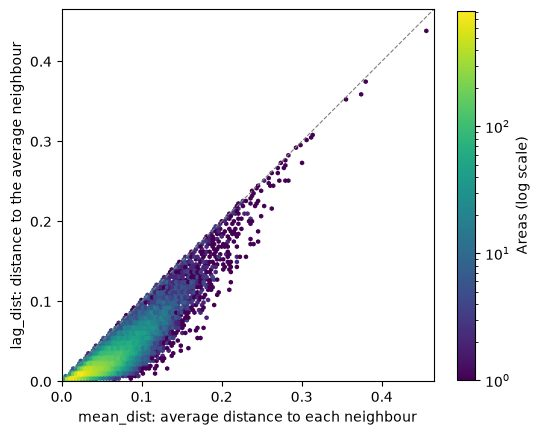<figcaption>Claude looked at <code>b8249f7d6ff02b10.png</code></figcaption></figure>
<div class="reply">
<p>I’ve added both measures to the notebook in a new subsection, <strong>Dissimilarity from the whole neighbourhood</strong>, and it runs cleanly. They’re in a table called <code>neighbourhood</code>, one row per area:</p>
<ul>
<li><p><code>mean_dist</code>: the average of the area’s distances to each neighbour (option 1)</p></li>
<li><p><code>lag_dist</code>: its distance to the average of its neighbours’ vectors (option 2)</p></li>
</ul>
<p><strong>Results:</strong></p>
<div class="line-block">| mean_dist | lag_dist |</div>
<p>|—|—|—|</p>
<div class="line-block">median | 0.046 | 0.017 |</div>
<div class="line-block">75th percentile | 0.069 | 0.032 |</div>
<div class="line-block">max | 0.456 | 0.438 |</div>
<ul>
<li><p><strong>The expected ordering holds everywhere:</strong> no area has <code>lag_dist</code> above <code>mean_dist</code>.</p></li>
<li><p><strong>The two rankings largely agree:</strong> their rank correlation (Spearman) is 0.84. They’re related but not interchangeable.</p></li>
<li><p><strong>Typical areas look much more similar to their averaged neighbour:</strong> the median <code>lag_dist</code> is about a third of the median <code>mean_dist</code>. Areas differ from neighbours individually, but much of that cancels out once the neighbours are averaged.</p></li>
</ul>
<p><strong>The scatter plot</strong> of <code>mean_dist</code> against <code>lag_dist</code> is in the notebook. All points fall below the diagonal, in a fan shape:</p>
<ul>
<li><p><strong>Near the diagonal</strong> are areas that score high on both. They’re unlike their surroundings in every direction: genuine outliers. The extreme point at about (0.46, 0.44) is the most striking. I haven’t checked which area it is.</p></li>
<li><p><strong>Well below the diagonal</strong> are areas with high <code>mean_dist</code> but low <code>lag_dist</code>. Their neighbours differ from each other, so these are transitions between land-cover types rather than outliers.</p></li>
</ul>
<p>A natural next step is to map both measures, or their gap, to see where outliers and transitions actually fall. Nothing has gone into <code>LOG.md</code> for this step yet.</p>
</div>
<div class="note prompt" id="p-21"><div class="note-meta"><a href="#p-21">#21</a> · Wed 4 Nov, 14:00</div><div class="note-text">Show me here the scatter plot please.</div></div>
<details class="steps"><summary><b>1 step</b> · Send files to the user</summary><details class="tool"><summary><span class="tool-name">SendUserFile</span> Send files to the user</summary><pre class="tool-in">scratchpad/nbout/b8249f7d6ff02b10.png

mean_dist vs lag_dist for all 46,832 areas (hexbin, log counts; dashed line = equality)</pre><pre class="tool-out">1 file delivered to user.
  scratchpad/nbout/b8249f7d6ff02b10.png → file_uuid: d5a6dfdf-4436-41ce-99ee-6274907cf4fc</pre></details></details><figure class="sent figure"><div class="sent-row"></div><figcaption>Sent to the user: b8249f7d6ff02b10.png</figcaption></figure>
<div class="reply">
<p>I can’t draw images in the terminal, so I’ve sent you the scatter plot as an image. You can also open it at <code>scratchpad/nbout/b8249f7d6ff02b10.png</code>.</p>
<p>It plots <code>mean_dist</code> (x) against <code>lag_dist</code> (y) for all 46,832 areas. Points are binned into hexagons coloured by how many areas fall in each, on a log scale, and the dashed line marks where the two measures are equal.</p>
<ul>
<li><p><strong>The dense core</strong> sits near the origin, below about 0.1 on both axes: most areas are similar to their neighbours on both measures.</p></li>
<li><p><strong>Everything lies below the dashed line,</strong> fanning out as <code>mean_dist</code> grows.</p></li>
<li><p><strong>Along the top edge,</strong> close to the line, are the outliers: areas unlike all of their surroundings. The single most extreme point is at about (0.46, 0.44).</p></li>
<li><p><strong>Lower in the fan,</strong> for example x ≈ 0.2 with y ≈ 0.05–0.1, are areas that differ from individual neighbours while those neighbours also differ from each other: transitions between land-cover types rather than outliers.</p></li>
</ul>
</div>
<div class="note prompt" id="p-22"><div class="note-meta"><a href="#p-22">#22</a> · Wed 4 Nov, 14:23</div><div class="note-text">Okay, I think we have all the pieces to start exploring a few maps. Let's pick the focal area with the highest distance of either type and make me a few simple maps. Use a satellite imagery baseline and include the focal area and all of its neighbors, making sure that you can see the boundary line of the LSOA and the satellite background. Start by building those on your scratch pad and show me the images here.</div></div>
<details class="steps"><summary><b>2 steps</b> · Recompute distances and find top focal areas · Render three satellite maps for E01030745</summary><details class="tool"><summary><span class="tool-name">Bash</span> Recompute distances and find top focal areas</summary><pre class="tool-in">S=scratchpad/ &amp;&amp; cat &gt; $S/prep.py &lt;&lt;'EOF'
# Rebuild the notebook's objects and cache what the maps need
import numpy as np, pandas as pd, geopandas as gpd
from libpysal import graph
from sklearn.metrics.pairwise import paired_cosine_distances
import sys
S = sys.argv[1]
l = gpd.read_file("data/extracted-lsoa-geopackage_2024_output.gpkg").set_index("data_zone_code")
band = [c for c in l.columns if c.startswith("band")]
g = graph.Graph.build_fuzzy_contiguity(l); l = l.drop(g.isolates); g = g.subgraph(l.index)
emb = np.ascontiguousarray(l[band].to_numpy())
adj = g.adjacency
i = l.index.get_indexer(adj.index.get_level_values("focal")); j = l.index.get_indexer(adj.index.get_level_values("neighbor"))
pairs = pd.Series(paired_cosine_distances(emb[i], emb[j]), index=adj.index, name="dist")
nb = pd.DataFrame({"mean_dist": pairs.groupby(level="focal").mean().reindex(l.index),
                   "lag_dist": paired_cosine_distances(emb, g.transform("r").lag(emb))}, index=l.index)
print(nb.sort_values("mean_dist", ascending=False).head(5)); print(nb.sort_values("lag_dist", ascending=False).head(5))
nb.to_parquet(f"{S}/neighbourhood.parquet"); pairs.to_frame().to_parquet(f"{S}/pairs.parquet")
l[["geometry"]].to_parquet(f"{S}/geoms.parquet")
EOF
python -I $S/prep.py $S 2&gt;&amp;1 | grep -v PROJ</pre><pre class="tool-out">mean_dist  lag_dist
data_zone_code                     
E01030745        0.455714  0.438115
N20003012        0.381098  0.373842
W01001286        0.375061  0.359898
N20002748        0.355019  0.353096
E01026177        0.314997  0.307863
                mean_dist  lag_dist
data_zone_code                     
E01030745        0.455714  0.438115
N20003012        0.381098  0.373842
W01001286        0.375061  0.359898
N20002748        0.355019  0.353096
E01026177        0.314997  0.307863</pre></details><details class="tool"><summary><span class="tool-name">Bash</span> Render three satellite maps for E01030745</summary><pre class="tool-in">S=scratchpad/ &amp;&amp; cat &gt; $S/maps.py &lt;&lt;'EOF'
import sys, warnings, pandas as pd, geopandas as gpd, matplotlib.pyplot as plt, contextily as cx
from matplotlib import patheffects as pe
warnings.filterwarnings("ignore")
S, focal = sys.argv[1], sys.argv[2]
geoms = gpd.read_parquet(f"{S}/geoms.parquet")
pairs = pd.read_parquet(f"{S}/pairs.parquet")["dist"]
nbhd = pd.read_parquet(f"{S}/neighbourhood.parquet")
d = pairs.loc[focal]                                  # distance from focal to each neighbour
f = geoms.loc[[focal]]; n = geoms.loc[d.index].assign(dist=d.values)
sat = cx.providers.Esri.WorldImagery
halo = [pe.withStroke(linewidth=2.5, foreground="black")]
x0, y0, x1, y1 = pd.concat([f, n]).total_bounds; pad = 0.05 * max(x1 - x0, y1 - y0)
def frame(ax): ax.set_xlim(x0 - pad, x1 + pad); ax.set_ylim(y0 - pad, y1 + pad); ax.set_axis_off()

# 1. Focal area and its neighbours
fig, ax = plt.subplots(figsize=(9, 9))
n.boundary.plot(ax=ax, color="white", lw=1.2)
f.boundary.plot(ax=ax, color="yellow", lw=3)
frame(ax); cx.add_basemap(ax, crs=geoms.crs, source=sat, attribution_size=6)
ax.set_title(f"{focal} (yellow) and its {len(n)} neighbours\nmean_dist = {nbhd.loc[focal, 'mean_dist']:.3f} · lag_dist = {nbhd.loc[focal, 'lag_dist']:.3f}")
fig.savefig(f"{S}/map1_{focal}.png", dpi=110, bbox_inches="tight")

# 2. Neighbours' boundaries coloured by cosine distance to the focal area, with labels
fig, ax = plt.subplots(figsize=(9, 9))
cmap, norm = plt.cm.plasma, plt.Normalize(0, d.max())
for _, r in n.iterrows():
    gpd.GeoSeries([r.geometry.boundary], crs=geoms.crs).plot(ax=ax, color=cmap(norm(r.dist)), lw=2.5)
f.boundary.plot(ax=ax, color="white", lw=3, ls="--")
for code, r in n.iterrows():
    p = r.geometry.representative_point()
    ax.annotate(f"{r.dist:.2f}", (p.x, p.y), ha="center", fontsize=10, color="white", weight="bold", path_effects=halo)
frame(ax); cx.add_basemap(ax, crs=geoms.crs, source=sat, attribution_size=6)
fig.colorbar(plt.cm.ScalarMappable(norm=norm, cmap=cmap), ax=ax, shrink=0.6, label=f"Cosine distance to {focal}")
ax.set_title(f"Distance from {focal} (dashed) to each neighbour")
fig.savefig(f"{S}/map2_{focal}.png", dpi=110, bbox_inches="tight")

# 3. Locator: wider context
fig, ax = plt.subplots(figsize=(7, 7))
c = f.geometry.iloc[0].centroid; w = 15_000
[… truncated]</pre><pre class="tool-out">Traceback (most recent call last):
  File "/opt/conda/envs/gds/lib/python3.12/site-packages/xyzservices/lib.py", line 46, in __getattr__
    return self.__getitem__(key)
           ^^^^^^^^^^^^^^^^^^^^^
KeyError: 'WorldBoundariesAndPlaces'

The above exception was the direct cause of the following exception:

Traceback (most recent call last):
  File "scratchpad/maps.py", line 43, in &lt;module&gt;
    cx.add_basemap(ax, crs=geoms.crs, source=cx.providers.Esri.WorldBoundariesAndPlaces, attribution=False)
                                             ^^^^^^^^^^^^^^^^^^^^^^^^^^^^^^^^^^^^^^^^^^
  File "/opt/conda/envs/gds/lib/python3.12/site-packages/xyzservices/lib.py", line 48, in __getattr__
    raise AttributeError(key) from err
AttributeError: WorldBoundariesAndPlaces
scratchpad/map1_E01030745.png
scratchpad/map2_E01030745.png
scratchpad/maps.py</pre></details></details>
<div class="reply">
<p>The place-name overlay I tried for the locator map doesn’t exist in this version of contextily’s tile catalogue. I’ll drop it and use plain imagery:</p>
</div>
<details class="steps"><summary><b>5 steps</b> · Rerun map script without labels overlay · Read scratchpad/map1_E01030745.png · …</summary><details class="tool"><summary><span class="tool-name">Bash</span> Rerun map script without labels overlay</summary><pre class="tool-in">S=scratchpad/ &amp;&amp; sed -i '/WorldBoundariesAndPlaces/d' $S/maps.py &amp;&amp; python -I $S/maps.py $S E01030745 2&gt;&amp;1 | grep -v PROJ; ls $S/map*png</pre><pre class="tool-out">neighbor
E01030710    0.538
E01030744    0.535
E01030746    0.534
E01030711    0.524
E01030708    0.502
E01030734    0.463
E01030743    0.457
E01030707    0.389
E01030747    0.159
scratchpad/map1_E01030745.png
scratchpad/map2_E01030745.png
scratchpad/map3_E01030745.png</pre></details><details class="tool"><summary><span class="tool-name">Read</span> Read scratchpad/map1_E01030745.png</summary><pre class="tool-in"></pre></details><details class="tool"><summary><span class="tool-name">Read</span> Read scratchpad/map2_E01030745.png</summary><pre class="tool-in"></pre></details><details class="tool"><summary><span class="tool-name">Read</span> Read scratchpad/map3_E01030745.png</summary><pre class="tool-in"></pre></details><details class="tool"><summary><span class="tool-name">SendUserFile</span> Send files to the user</summary><pre class="tool-in">scratchpad/map1_E01030745.png
scratchpad/map2_E01030745.png
scratchpad/map3_E01030745.png

E01030745, the top area on both measures: (1) the area and its neighbours, (2) neighbour boundaries coloured by distance to it, (3) 30 km context</pre><pre class="tool-out">3 files delivered to user.
  scratchpad/map1_E01030745.png → file_uuid: 3a5b3b50-a9ad-4d4c-a4d2-1e0fa9c3fdda
  scratchpad/map2_E01030745.png → file_uuid: 431dd384-22c3-4883-9ac9-138d1551ba5d
  scratchpad/map3_E01030745.png → file_uuid: 038136bd-45a3-44d9-8e5d-efd3457011b6</pre></details></details><figure class="seen figure">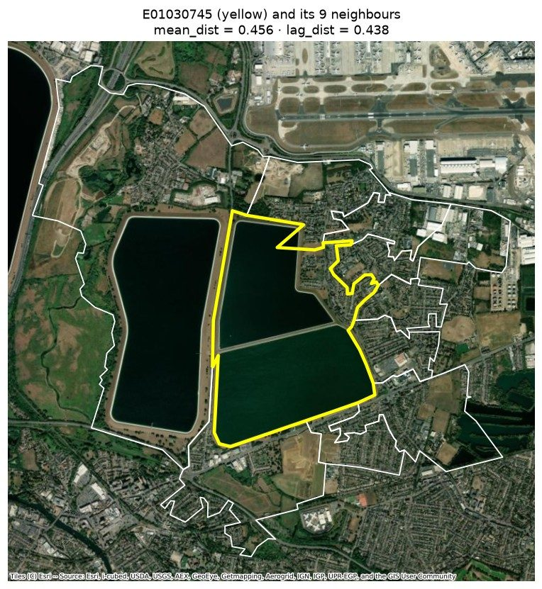<figcaption>Claude looked at <code>map1_E01030745.png</code></figcaption></figure><figure class="seen figure">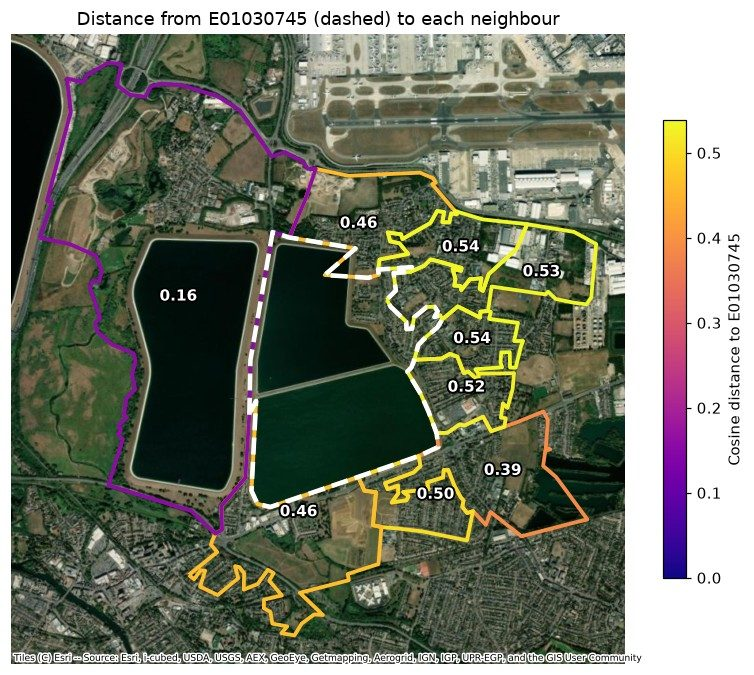<figcaption>Claude looked at <code>map2_E01030745.png</code></figcaption></figure><figure class="seen figure">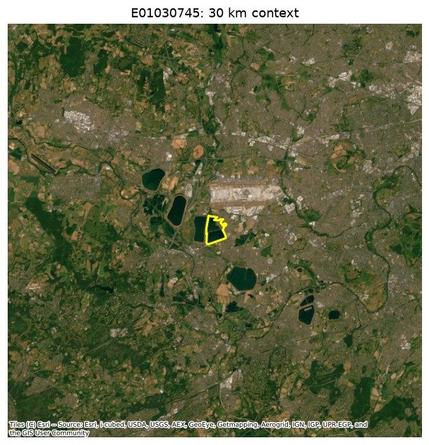<figcaption>Claude looked at <code>map3_E01030745.png</code></figcaption></figure><figure class="sent figure"><div class="sent-row"></div><figcaption>Sent to the user: map1_E01030745.png, map2_E01030745.png, map3_E01030745.png</figcaption></figure>
<div class="reply">
<p>I’ve sent you three maps. The same area, <strong><code>E01030745</code></strong>, has the highest distance on both measures (<code>mean_dist</code> 0.456, <code>lag_dist</code> 0.438), so one area covers both. All three maps use Esri’s satellite imagery, which needs no API key, and show the area boundaries as outlines so the imagery stays visible.</p>
<ol type="1">
<li><p><strong>The area and its neighbours:</strong> the focal area is outlined in yellow, its 9 neighbours in white.</p></li>
<li><p><strong>Distance to each neighbour:</strong> each neighbour’s outline is coloured by its cosine distance to the focal area and labelled with the value. The focal area’s outline is white and dashed.</p></li>
<li><p><strong>Location:</strong> a 30 km satellite view with the focal area outlined in yellow.</p></li>
</ol>
<p><strong>What it is:</strong> almost all of the area is open water, two reservoir basins split by a causeway, just south of Heathrow airport. From the imagery, I believe these are the Staines Reservoirs near Stanwell, but I haven’t confirmed that against a map. A thin strip of housing runs along its eastern edge.</p>
<p><strong>Why it scores so high:</strong> its neighbours are housing estates, industrial land and airport land. Their distances to it range from 0.39 to 0.54, which are the largest single-pair values in the UK.</p>
<p><strong>The one exception confirms the measure works:</strong> the neighbour to the west scores only <strong>0.16</strong>. That neighbour is mostly another large reservoir, so water next to water is correctly rated as similar. That one neighbour also explains why <code>lag_dist</code> comes out slightly below <code>mean_dist</code> here.</p>
<p><strong>A caveat for the map:</strong> this top area is a polygon that is mostly water among built-up neighbours. Expect other top-ranked areas to include similar reservoir, estuary and coast cases. That might be the story we want, or we might want to look past water bodies; your call.</p>
<p>The script is at <code>scratchpad/maps.py</code> and takes an area code as an argument. I can quickly render the next areas in the ranking (<code>N20003012</code>, <code>W01001286</code>, <code>N20002748</code>, <code>E01026177</code>), or move these maps into the notebook.</p>
</div>
<div class="note prompt" id="p-23"><div class="note-meta"><a href="#p-23">#23</a> · Wed 4 Nov, 14:31</div><div class="note-text">Okay, this is a great first start. Let's iterate a little bit in how I want the figure to look like and then once we have a template we'll create it for a few more cases. I really like option one, but maybe instead of white lines you can pick another color, maybe red, or use red for the focal and yellow for the rest. And I would also want to have on a corner a very simplified map of the UK in either dark grey or light grey with an accent color for the location where these L SOAs are. So it's easier to place on the general map.</div></div>
<div class="reply">
<p>Creating a simplified UK outline once and caching it for the inset:</p>
</div>
<details class="steps"><summary><b>1 step</b> · Build and cache simplified UK outline</summary><details class="tool"><summary><span class="tool-name">Bash</span> Build and cache simplified UK outline</summary><pre class="tool-in">S=scratchpad/ &amp;&amp; cat &gt; $S/uk_outline.py &lt;&lt;'EOF'
import sys, time, geopandas as gpd, shapely
S = sys.argv[1]
t = time.time()
g = gpd.read_parquet(f"{S}/geoms.parquet").geometry
uk = shapely.union_all(g.simplify(500).buffer(100).values).buffer(-100).simplify(2000)
# Drop specks so the inset stays clean
parts = [p for p in shapely.get_parts(uk) if p.area &gt; 20e6]
out = gpd.GeoSeries([shapely.MultiPolygon(parts)], crs=g.crs)
out.to_frame("geometry").to_parquet(f"{S}/uk_outline.parquet")
print(f"{time.time()-t:.1f}s, {len(parts)} parts, {shapely.get_num_coordinates(out.iloc[0])} vertices")
EOF
python -I $S/uk_outline.py $S 2&gt;&amp;1 | grep -v PROJ</pre><pre class="tool-out">486.1s, 19 parts, 115097 vertices</pre></details></details>
<div class="reply">
<p>That took 8 minutes and still has 115k vertices, probably because of interior rings left by small gaps between areas. It’s cached now, so I’ll just strip the holes and simplify further:</p>
</div>
<details class="steps"><summary><b>3 steps</b> · Strip holes and simplify UK outline · Render template map with locator inset · …</summary><details class="tool"><summary><span class="tool-name">Bash</span> Strip holes and simplify UK outline</summary><pre class="tool-in">S=scratchpad/ &amp;&amp; python -I - $S &lt;&lt;'EOF' 2&gt;&amp;1 | grep -v PROJ
import sys, geopandas as gpd, shapely
S = sys.argv[1]
uk = gpd.read_parquet(f"{S}/uk_outline.parquet").geometry.iloc[0]
parts = [shapely.Polygon(p.exterior).simplify(1500) for p in shapely.get_parts(uk)]
out = shapely.MultiPolygon([p for p in parts if not p.is_empty])
print(len(parts), shapely.get_num_coordinates(out))
gpd.GeoSeries([out], crs=27700).to_frame("geometry").to_parquet(f"{S}/uk_outline.parquet")
EOF</pre><pre class="tool-out">19 1666</pre></details><details class="tool"><summary><span class="tool-name">Bash</span> Render template map with locator inset</summary><pre class="tool-in">S=scratchpad/ &amp;&amp; cat &gt; $S/template.py &lt;&lt;'EOF'
import sys, warnings, pandas as pd, geopandas as gpd, matplotlib.pyplot as plt, contextily as cx
warnings.filterwarnings("ignore")
S, focal = sys.argv[1], sys.argv[2]
geoms = gpd.read_parquet(f"{S}/geoms.parquet")
pairs = pd.read_parquet(f"{S}/pairs.parquet")["dist"]
nbhd = pd.read_parquet(f"{S}/neighbourhood.parquet")
uk = gpd.read_parquet(f"{S}/uk_outline.parquet")

f = geoms.loc[[focal]]
n = geoms.loc[pairs.loc[focal].index]
x0, y0, x1, y1 = pd.concat([f, n]).total_bounds
pad = 0.05 * max(x1 - x0, y1 - y0)

fig, ax = plt.subplots(figsize=(9, 9))
n.boundary.plot(ax=ax, color="gold", lw=1.4)
f.boundary.plot(ax=ax, color="red", lw=3)
ax.set_xlim(x0 - pad, x1 + pad); ax.set_ylim(y0 - pad, y1 + pad); ax.set_axis_off()
cx.add_basemap(ax, crs=geoms.crs, source=cx.providers.Esri.WorldImagery, attribution_size=6)
ax.set_title(f"{focal} (red) and its {len(n)} neighbours (yellow)\n"
             f"mean_dist = {nbhd.loc[focal, 'mean_dist']:.3f} · lag_dist = {nbhd.loc[focal, 'lag_dist']:.3f}")

# Locator inset: simplified UK in light grey, focal location in red
ins = ax.inset_axes([0.01, 0.03, 0.2, 0.32])
uk.plot(ax=ins, color="lightgrey", edgecolor="0.4", lw=0.3)
c = f.geometry.iloc[0].centroid
ins.scatter(c.x, c.y, s=40, color="red", edgecolor="white", lw=0.8, zorder=3)
ins.set_aspect("equal"); ins.set_axis_off()
fig.savefig(f"{S}/template_{focal}.png", dpi=110, bbox_inches="tight")
EOF
python -I $S/template.py $S E01030745 2&gt;&amp;1 | grep -v PROJ</pre><pre class="tool-out">(Bash completed with no output)</pre></details><details class="tool"><summary><span class="tool-name">Read</span> Read scratchpad/template_E01030745.png</summary><pre class="tool-in"></pre></details></details><figure class="seen figure">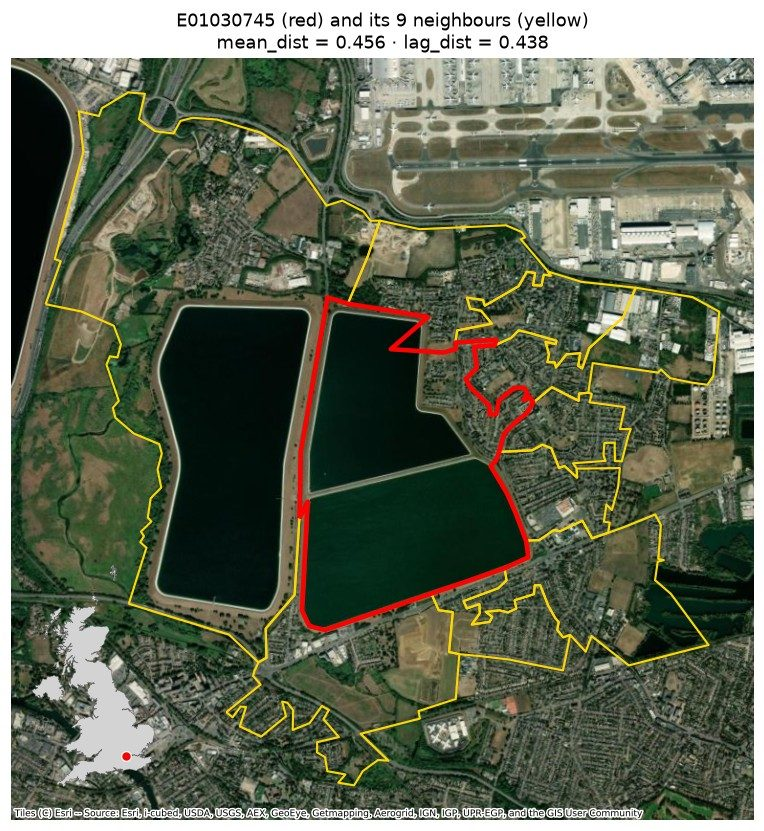<figcaption>Claude looked at <code>template_E01030745.png</code></figcaption></figure>
<div class="reply">
<p>The inset looks truncated: Scotland seems to be missing. Checking the outline on its own:</p>
</div>
<details class="steps"><summary><b>2 steps</b> · Inspect UK outline parts and render check image · Read scratchpad/uk_check.png</summary><details class="tool"><summary><span class="tool-name">Bash</span> Inspect UK outline parts and render check image</summary><pre class="tool-in">S=scratchpad/ &amp;&amp; python -I - $S &lt;&lt;'EOF' 2&gt;&amp;1 | grep -v PROJ
import sys, geopandas as gpd, matplotlib.pyplot as plt, shapely
S = sys.argv[1]
uk = gpd.read_parquet(f"{S}/uk_outline.parquet")
for p in sorted(shapely.get_parts(uk.geometry.iloc[0]), key=lambda p: -p.area)[:6]:
    print(round(p.area/1e6), [round(v) for v in p.bounds])
ax = uk.plot(color="lightgrey", edgecolor="k", lw=0.3, figsize=(4,6)); ax.set_axis_off()
plt.savefig(f"{S}/uk_check.png", dpi=80)
EOF</pre><pre class="tool-out">219143 [134118, 11856, 655654, 976781]
14051 [193, 466169, 177663, 604438]
2094 [95450, 881731, 156683, 966924]
1605 [112564, 799035, 179304, 877037]
920 [416472, 1107651, 452391, 1195144]
848 [130128, 716150, 175018, 758059]</pre></details><details class="tool"><summary><span class="tool-name">Read</span> Read scratchpad/uk_check.png</summary><pre class="tool-in"></pre></details></details><figure class="seen figure">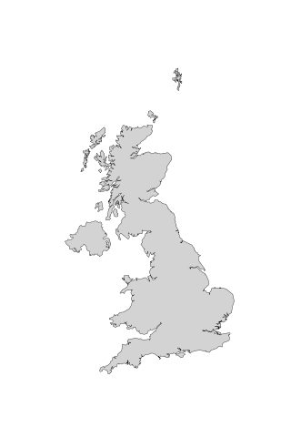<figcaption>Claude looked at <code>uk_check.png</code></figcaption></figure>
<div class="reply">
<p>The outline is complete. In the inset, Scotland was blending into the light imagery. I’ll put the inset on a semi-opaque white panel so the whole UK reads clearly against any background:</p>
</div>
<details class="steps"><summary><b>2 steps</b> · Put inset on white panel and rerender · Read scratchpad/template_E01030745.png</summary><details class="tool"><summary><span class="tool-name">Bash</span> Put inset on white panel and rerender</summary><pre class="tool-in">S=scratchpad/ &amp;&amp; python -I - $S/template.py &lt;&lt;'EOF'
import sys; p=sys.argv[1]; s=open(p).read()
old = '''ins = ax.inset_axes([0.01, 0.03, 0.2, 0.32])
uk.plot(ax=ins, color="lightgrey", edgecolor="0.4", lw=0.3)
c = f.geometry.iloc[0].centroid
ins.scatter(c.x, c.y, s=40, color="red", edgecolor="white", lw=0.8, zorder=3)
ins.set_aspect("equal"); ins.set_axis_off()'''
new = '''ins = ax.inset_axes([0.015, 0.035, 0.2, 0.3])
uk.plot(ax=ins, color="0.55", lw=0)
c = f.geometry.iloc[0].centroid
ins.scatter(c.x, c.y, s=45, color="red", edgecolor="white", lw=0.8, zorder=3)
ux0, uy0, ux1, uy1 = uk.total_bounds
ins.set_xlim(ux0 - 20_000, ux1 + 20_000); ins.set_ylim(uy0 - 20_000, uy1 + 20_000)
ins.set_aspect("equal"); ins.set_xticks([]); ins.set_yticks([])
ins.set_facecolor((1, 1, 1, 0.85))
for spine in ins.spines.values():
    spine.set_edgecolor("0.6"); spine.set_linewidth(0.6)'''
assert s.count(old) == 1; open(p, "w").write(s.replace(old, new))
EOF
python -I $S/template.py $S E01030745 2&gt;&amp;1 | grep -v PROJ</pre><pre class="tool-out">(Bash completed with no output)</pre></details><details class="tool"><summary><span class="tool-name">Read</span> Read scratchpad/template_E01030745.png</summary><pre class="tool-in"></pre></details></details><figure class="seen figure">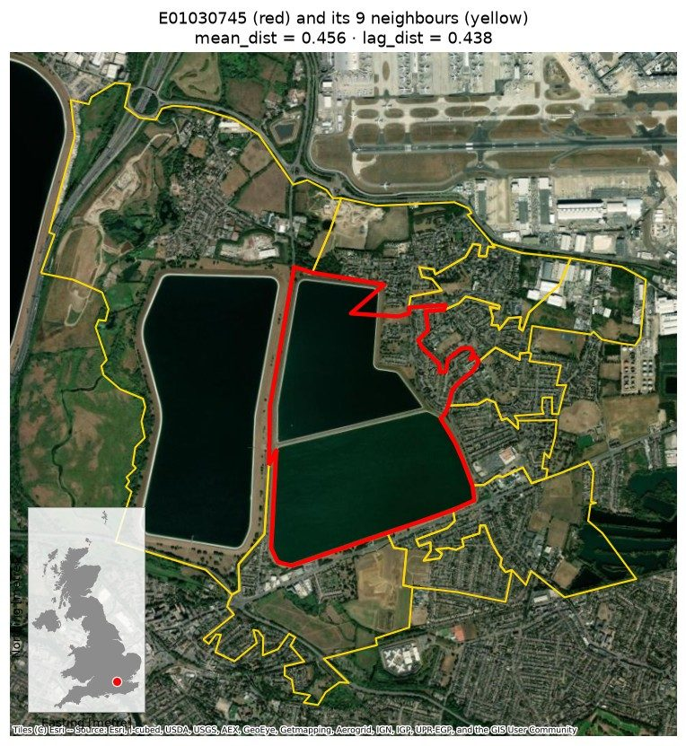<figcaption>Claude looked at <code>template_E01030745.png</code></figcaption></figure>
<div class="reply">
<p>Nearly there. The inset picked up axis labels (“Northing [metre]”) and sits on top of the tile attribution. Fixing both:</p>
</div>
<details class="steps"><summary><b>3 steps</b> · Clear inset labels, lift inset, rerender · Read scratchpad/template_E01030745.png · …</summary><details class="tool"><summary><span class="tool-name">Bash</span> Clear inset labels, lift inset, rerender</summary><pre class="tool-in">S=scratchpad/ &amp;&amp; sed -i 's/ins = ax.inset_axes(\[0.015, 0.035, 0.2, 0.3\])/ins = ax.inset_axes([0.015, 0.045, 0.2, 0.3])/; s/ins.set_aspect("equal"); ins.set_xticks(\[\]); ins.set_yticks(\[\])/ins.set_aspect("equal"); ins.set_xticks([]); ins.set_yticks([]); ins.set_xlabel(""); ins.set_ylabel("")/' $S/template.py &amp;&amp; grep -n "ins\.\(set_aspect\|inset\)\|inset_axes" $S/template.py &amp;&amp; python -I $S/template.py $S E01030745 2&gt;&amp;1 | grep -v PROJ</pre><pre class="tool-out">23:ins = ax.inset_axes([0.015, 0.045, 0.2, 0.3])
29:ins.set_aspect("equal"); ins.set_xticks([]); ins.set_yticks([]); ins.set_xlabel(""); ins.set_ylabel("")</pre></details><details class="tool"><summary><span class="tool-name">Read</span> Read scratchpad/template_E01030745.png</summary><pre class="tool-in"></pre></details><details class="tool"><summary><span class="tool-name">SendUserFile</span> Send files to the user</summary><pre class="tool-in">scratchpad/template_E01030745.png

Template v2: focal area in red, neighbours in yellow, UK locator inset bottom-left</pre><pre class="tool-out">1 file delivered to user.
  scratchpad/template_E01030745.png → file_uuid: 16e1fb05-fcae-42dc-b2aa-bf52c904d1d1</pre></details></details><figure class="seen figure">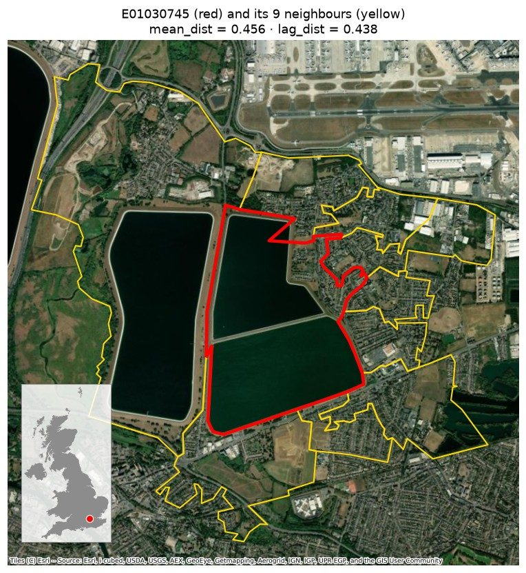<figcaption>Claude looked at <code>template_E01030745.png</code></figcaption></figure><figure class="sent figure"><div class="sent-row"></div><figcaption>Sent to the user: template_E01030745.png</figcaption></figure>
<div class="reply">
<p>I’ve sent you the updated template.</p>
<ul>
<li><p><strong>Line colours:</strong> the focal area is outlined in thick red and its neighbours in thinner yellow, both drawn as outlines so the satellite image stays visible.</p></li>
<li><p><strong>Locator inset:</strong> bottom-left, a simplified UK in mid-grey with a red dot for the focal area. It sits on a semi-opaque white panel because in my first try Scotland blended into the bright imagery. I also lifted it clear of the tile attribution.</p></li>
<li><p><strong>Title:</strong> the area code with both distance scores.</p></li>
</ul>
<p>How the template is built:</p>
<ul>
<li><p><strong>Reusable script:</strong> it’s at <code>scratchpad/template.py</code> and takes an area code, so making the other cases is one command each.</p></li>
<li><p><strong>UK outline:</strong> built once and cached in the scratchpad. Merging all 46k areas took about 8 minutes, so if this template moves into the notebook, I’d load a saved outline file rather than rebuild it on every run.</p></li>
</ul>
<p><strong>Things you might tweak:</strong></p>
<ul>
<li><p><strong>Inset:</strong> whether you prefer light grey to the current mid-grey, which corner it goes in, and its size. The bottom-left corner can cover outlines, as it slightly does here.</p></li>
<li><p><strong>Title:</strong> codes and scores, or a more readable place name, which I’d add by hand per case.</p></li>
<li><p><strong>Neighbour lines:</strong> thickness of the yellow lines.</p></li>
</ul>
</div>
<div class="note prompt" id="p-24"><div class="note-meta"><a href="#p-24">#24</a> · Wed 4 Nov, 14:52</div><div class="note-text">It is a lot. I think it's almost ready. One more thing I would like to try. Can we maybe fade the base map in the areas that are not part of the vocal or neighbors. What I'm thinking is that you could maybe get a polygon that covers everything that is not part of a polygon in the image and then apply a light Dark transparency to fade it away.</div></div>
<details class="steps"><summary><b>3 steps</b> · Add dark veil outside focal and neighbours · Read scratchpad/template_E01030745.png · …</summary><details class="tool"><summary><span class="tool-name">Bash</span> Add dark veil outside focal and neighbours</summary><pre class="tool-in">S=scratchpad/ &amp;&amp; python -I - $S/template.py &lt;&lt;'EOF'
import sys; p=sys.argv[1]; s=open(p).read()
old = '''n.boundary.plot(ax=ax, color="gold", lw=1.4)
f.boundary.plot(ax=ax, color="red", lw=3)
ax.set_xlim(x0 - pad, x1 + pad); ax.set_ylim(y0 - pad, y1 + pad); ax.set_axis_off()
cx.add_basemap(ax, crs=geoms.crs, source=cx.providers.Esri.WorldImagery, attribution_size=6)
'''
new = '''import shapely
frame = shapely.box(x0 - pad, y0 - pad, x1 + pad, y1 + pad)
# Dark veil over everything outside the focal area and its neighbours
mask = gpd.GeoSeries([frame.difference(pd.concat([f, n]).union_all())], crs=geoms.crs)

ax.set_xlim(x0 - pad, x1 + pad); ax.set_ylim(y0 - pad, y1 + pad); ax.set_axis_off()
cx.add_basemap(ax, crs=geoms.crs, source=cx.providers.Esri.WorldImagery, attribution_size=6)
mask.plot(ax=ax, color="black", alpha=0.5, lw=0, zorder=2)
n.boundary.plot(ax=ax, color="gold", lw=1.4, zorder=3)
f.boundary.plot(ax=ax, color="red", lw=3, zorder=4)
'''
assert s.count(old) == 1; open(p, "w").write(s.replace(old, new))
EOF
python -I $S/template.py $S E01030745 2&gt;&amp;1 | grep -v PROJ</pre><pre class="tool-out">(Bash completed with no output)</pre></details><details class="tool"><summary><span class="tool-name">Read</span> Read scratchpad/template_E01030745.png</summary><pre class="tool-in"></pre></details><details class="tool"><summary><span class="tool-name">SendUserFile</span> Send files to the user</summary><pre class="tool-in">scratchpad/template_E01030745.png

Template v3: imagery outside the focal area and its neighbours darkened (black veil, 50% opacity)</pre><pre class="tool-out">1 file delivered to user.
  scratchpad/template_E01030745.png → file_uuid: ff2a4db0-662e-4e37-b63c-cf2fec23ee44</pre></details></details><figure class="seen figure">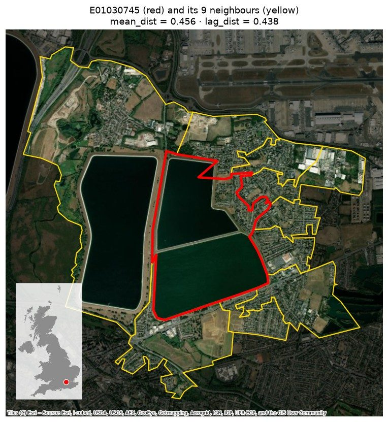<figcaption>Claude looked at <code>template_E01030745.png</code></figcaption></figure><figure class="sent figure"><div class="sent-row"></div><figcaption>Sent to the user: template_E01030745.png</figcaption></figure>
<div class="reply">
<p>I’ve added the fade and sent you the result. Everything outside the focal area and its neighbours is now darkened. Inside them the satellite imagery is at full brightness, so the area of interest stands out: Heathrow and the housing to the south-east are dimmed, while the reservoirs and the neighbouring estates stay bright.</p>
<p>How it works: I take the map frame as a rectangle and subtract the merged outline of the focal area and its neighbours. What’s left is the “everything else” shape, drawn in black at 50% opacity. It sits above the imagery but below the red and yellow outlines, so the lines stay crisp. It’s a few lines in <code>template.py</code> and needs nothing new.</p>
<p>What you could tweak:</p>
<ul>
<li><p><strong>Darkness:</strong> 50% opacity is a middle setting. About 35% keeps more context visible; 60–65% makes the area of interest pop more.</p></li>
<li><p><strong>Colour:</strong> I could fade to white instead of black. That gives a washed-out look, though the yellow outlines would then need a darker edge.</p></li>
<li><p><strong>Inset:</strong> it still overlaps a corner of one neighbour here. With the darkened surroundings, the top-right corner would often be emptier, so I could pick the corner automatically for each map.</p></li>
</ul>
<p>Once you’re happy with it, I’ll run it for the next cases (<code>N20003012</code>, <code>W01001286</code>, <code>N20002748</code>, <code>E01026177</code>).</p>
</div>
<div class="note prompt" id="p-25"><div class="note-meta"><a href="#p-25">#25</a> · Wed 4 Nov, 14:56</div><div class="note-text">Fantastic. Let's iterate a couple on of items more. One, show me a few alternatives with different colors for the fade. I like your idea of a light one that makes it more washed, but think also of at least two more to compare. Then I also want you to think of other combinations of the lines that highlight the L SOAs. Red and yellow are very effective but are not, at least in these tonalities, the most aesthetic. Show me at least five combinations. And then finally, the inset, given that we have the fade, let's do one without any rectangle. I just want the shape of the UK and pick the color for the UK then based on a contrast with whatever the fade is. Take these three dimensions and make me a grid of combinations to see which one Ilike best.</div></div>
<div class="reply">
<p>Plan: fetch the satellite tiles once and reuse them for every panel. Each fade is applied to the image pixels directly, using the merged outline as a mask, which also allows a greyscale fade. The grid is 4 fades × 5 line palettes, with the inset UK colour picked to contrast with each fade.</p>
</div>
<details class="steps"><summary><b>2 steps</b> · Render 4×5 grid of fade and line styles · Read scratchpad/grid_E01030745.png</summary><details class="tool"><summary><span class="tool-name">Bash</span> Render 4×5 grid of fade and line styles</summary><pre class="tool-in">S=scratchpad/ &amp;&amp; cat &gt; $S/grid.py &lt;&lt;'EOF'
import sys, warnings, numpy as np, pandas as pd, geopandas as gpd, matplotlib.pyplot as plt, contextily as cx, shapely
from matplotlib import patheffects as pe
warnings.filterwarnings("ignore")
S, focal = sys.argv[1], sys.argv[2]
geoms = gpd.read_parquet(f"{S}/geoms.parquet")
pairs = pd.read_parquet(f"{S}/pairs.parquet")["dist"]
uk = gpd.read_parquet(f"{S}/uk_outline.parquet")
f = geoms.loc[[focal]]; n = geoms.loc[pairs.loc[focal].index]
x0, y0, x1, y1 = pd.concat([f, n]).total_bounds; pad = 0.05 * max(x1 - x0, y1 - y0)
X0, Y0, X1, Y1 = x0 - pad, y0 - pad, x1 + pad, y1 + pad

# Fetch imagery once, reproject to British National Grid
tmp, ax = plt.subplots(); ax.set_xlim(X0, X1); ax.set_ylim(Y0, Y1)
img, ext = cx.bounds2img(*gpd.GeoSeries([shapely.box(X0, Y0, X1, Y1)], crs=27700).to_crs(3857).total_bounds,
                         zoom=15, source=cx.providers.Esri.WorldImagery)
img, ext = cx.warp_tiles(img, ext, t_crs="EPSG:27700")
plt.close(tmp)
rgb = img[..., :3].astype(float) / 255
h, w = rgb.shape[:2]
xs = np.linspace(ext[0], ext[1], w); ys = np.linspace(ext[3], ext[2], h)
inside = shapely.contains_xy(pd.concat([f, n]).union_all(), *np.meshgrid(xs, ys)) [..., None]

lum = (rgb @ [0.299, 0.587, 0.114])[..., None]
FADES = {  # name: (function of rgb outside the areas, inset UK colour)
    "Dark (black 50%)":     (lambda c: c * 0.5,                                  "#e8e8e8"),
    "Washed (white 55%)":   (lambda c: c * 0.45 + 0.55,                          "#3d3d3d"),
    "Greyscale + dim":      (lambda c: np.repeat(lum, 3, -1) * 0.75,             "#f2f2f2"),
    "Navy (55%)":           (lambda c: c * 0.45 + 0.55 * np.array([0.04, 0.10, 0.22]), "#d6e2f0"),
}
PALETTES = {  # name: (focal, neighbours)
    "Red / yellow (softened)": ("#e63946", "#ffd166"),
    "Coral / white":           ("#ff6b6b", "#f1f1f1"),
    "Magenta / cyan":          ("#ff2e88", "#46e0ff"),
    "Orange / mint":           ("#ff8c42", "#a8f0d4"),
    "Lime / lavender":         ("#c6ff3a", "#c3a6ff"),
}
halo = lambda lw: [pe.Stroke(linewidth=lw + 1.6, foreground=(0, 0, 0, 0.55)), pe.Normal()]
ux0, uy0, ux1, uy1 = uk.total_bounds
c = f.geometry.iloc[0].centroid
[… truncated]</pre><pre class="tool-out">(1826, 1831, 3)</pre></details><details class="tool"><summary><span class="tool-name">Read</span> Read scratchpad/grid_E01030745.png</summary><pre class="tool-in"></pre></details></details><figure class="seen figure">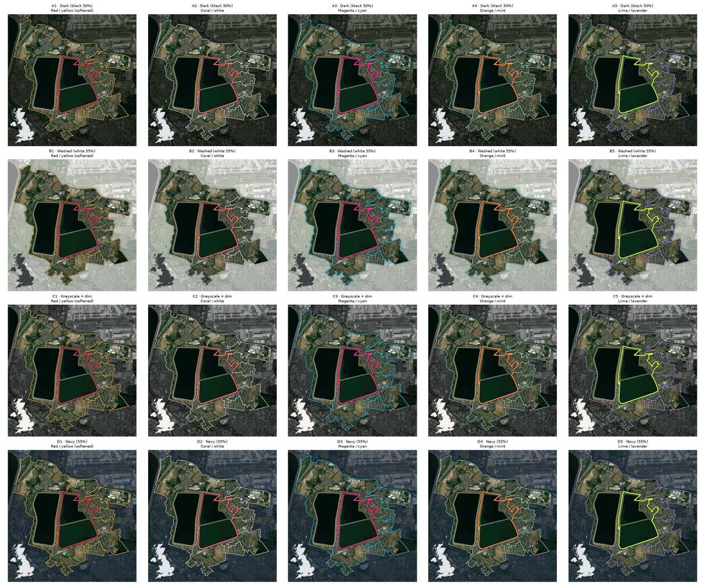<figcaption>Claude looked at <code>grid_E01030745.png</code></figcaption></figure>
<div class="reply">
<p>The grid renders correctly. I’ll re-save it at a higher resolution so you can zoom in on the line colours, then send it:</p>
</div>
<details class="steps"><summary><b>2 steps</b> · Re-render grid at higher resolution · Send files to the user</summary><details class="tool"><summary><span class="tool-name">Bash</span> Re-render grid at higher resolution</summary><pre class="tool-in">S=scratchpad/ &amp;&amp; sed -i 's/dpi=75)/dpi=110)/' $S/grid.py &amp;&amp; python -I $S/grid.py $S E01030745 2&gt;&amp;1 | grep -v PROJ; ls -la $S/grid_E01030745.png</pre><pre class="tool-out">(1826, 1831, 3)
-rw-r--r-- 1 jovyan users 9921719 Nov  4 15:09 scratchpad/grid_E01030745.png</pre></details><details class="tool"><summary><span class="tool-name">SendUserFile</span> Send files to the user</summary><pre class="tool-in">scratchpad/grid_E01030745.png

Style grid: rows A–D = fade, columns 1–5 = line palette (focal / neighbours); inset UK colour follows the fade. Reply with a cell code, e.g. "C3".</pre><pre class="tool-out">1 file delivered to user.
  scratchpad/grid_E01030745.png → file_uuid: e42f03b2-a0e1-485a-9443-bc3bcf489dc6</pre></details></details><figure class="sent figure"><div class="sent-row"></div><figcaption>Sent to the user: grid_E01030745.png</figcaption></figure>
<div class="reply">
<p>I’ve sent you the grid: 20 versions of the map, each labelled with a code like <strong>C3</strong>. The rows are the fade options and the columns are the line colour options. The image is large (about 10 MB) so you can zoom in.</p>
<p><strong>Rows: what happens to the imagery outside the areas</strong></p>
<div class="line-block">| Fade | UK inset colour |</div>
<p>|—|—|—|</p>
<div class="line-block"><strong>A</strong> | Dark: black overlay at 50%, as in the current template | light grey |</div>
<div class="line-block"><strong>B</strong> | Washed: white overlay at 55%, a pale, washed-out look | charcoal |</div>
<div class="line-block"><strong>C</strong> | Greyscale: colour removed and slightly dimmed, so only the areas are in colour | off-white |</div>
<div class="line-block"><strong>D</strong> | Navy: deep blue overlay at 55%, a cool, slightly night-time look | pale blue-grey |</div>
<p><strong>Columns: line colours (focal area / neighbours)</strong></p>
<div class="line-block">| Focal / neighbours |</div>
<p>|—|—|</p>
<div class="line-block"><strong>1</strong> | red / yellow, softened versions of the current colours |</div>
<div class="line-block"><strong>2</strong> | coral / off-white |</div>
<div class="line-block"><strong>3</strong> | magenta / cyan |</div>
<div class="line-block"><strong>4</strong> | orange / mint |</div>
<div class="line-block"><strong>5</strong> | lime / lavender |</div>
<p><strong>Changes in this version:</strong></p>
<ul>
<li><p><strong>Line outline:</strong> every line now has a faint dark outline so it stays readable on any background, especially the washed rows.</p></li>
<li><p><strong>Inset:</strong> a plain UK shape with no box, in a colour chosen to contrast with the fade. The location dot uses the focal area’s line colour.</p></li>
<li><p><strong>Fade method:</strong> the fade is now applied directly to the image pixels instead of drawn as a dark overlay. That makes the greyscale option in row C possible, and it fetches the satellite tiles only once for all 20 panels.</p></li>
</ul>
<p><strong>My picks:</strong></p>
<ul>
<li><p><strong>C2</strong> (greyscale with coral / off-white) is the most refined. The colour inside the areas becomes the highlight, and the lines don’t compete with it.</p></li>
<li><p><strong>B4</strong> (washed with orange / mint) is the best of the light options. It’s airy, and the orange focal line reads very clearly.</p></li>
<li><p><strong>D3</strong> (navy with magenta / cyan) is the boldest, if you want something more graphic.</p></li>
</ul>
<p><strong>Two things I’d adjust in any version:</strong></p>
<ul>
<li><p><strong>Location dot:</strong> it’s quite small in the inset, so I’d make it larger.</p></li>
<li><p><strong>Washed rows:</strong> the off-white neighbour lines in <strong>B2</strong> get lost against the pale background, so that pairing doesn’t work.</p></li>
</ul>
<p>Tell me a cell code, or a combination such as “row C with palette 4”, and I’ll fold it into the template.</p>
</div>
<div class="note prompt" id="p-26"><div class="note-meta"><a href="#p-26">#26</a> · Wed 4 Nov, 16:26</div><div class="note-text">actually, can you try one more using the Imaco color palette? If you don't know what that is, get a sense from imago.ac.uk</div></div>
<details class="steps"><summary><b>1 step</b> · ToolSearch</summary><details class="tool"><summary><span class="tool-name">ToolSearch</span> ToolSearch</summary><pre class="tool-in">{
 "query": "select:WebFetch",
 "max_results": 1
}</pre></details></details>
<div class="reply">
<p>The page text won’t include the brand colours, so I’ll pull the site’s HTML and stylesheets and extract the colour values directly:</p>
</div>
<details class="steps"><summary><b>5 steps</b> · Download imago.ac.uk homepage and list stylesheets · Extract colour variables and frequent hex codes · …</summary><details class="tool"><summary><span class="tool-name">Bash</span> Download imago.ac.uk homepage and list stylesheets</summary><pre class="tool-in">D=scratchpad/imago &amp;&amp; mkdir -p $D &amp;&amp; cd $D &amp;&amp; curl -sL https://imago.ac.uk -o index.html &amp;&amp; wc -c index.html &amp;&amp; grep -oE '(href|src)="[^"]+\.(css|svg)[^"]*"' index.html | head -20</pre><pre class="tool-out">158346 index.html
href="./_app/immutable/assets/0.DDQxs47V.css"
href="./_app/immutable/assets/title.qQpZBD2D.css"
href="./_app/immutable/assets/subtitle.CDbjUa-3.css"
href="./_app/immutable/assets/icon.D1wvAGZH.css"
href="./_app/immutable/assets/logos.BiwpEC18.css"
href="./_app/immutable/assets/dist.B_yJvoVE.css"
href="./_app/immutable/assets/paragraph.O_E_IlXN.css"
href="./_app/immutable/assets/2.czGhGVhM.css"
href="./_app/immutable/assets/base_card.CPizq2CS.css"
href="./_app/immutable/assets/newsletter_card.CYx3AGN7.css"
href="./_app/immutable/assets/carousel.DDEVr9b8.css"
href="./_app/immutable/assets/base_section.BuyipScj.css"
href="./_app/immutable/assets/cards_section.DuLpBOM2.css"
href="./_app/immutable/assets/page_sections.GkqFDvC_.css"
href="./_app/immutable/assets/two_columns_section.B5cRT1Xo.css"
href="./_app/immutable/assets/3.BwN96jcL.css"
src="/assets/b964cc3a-1d40-48cf-8cef-7dd818e4e091.svg+xml?width=1024&amp;amp;quality=80&amp;amp;format=jpg"
src="/assets/de59efeb-4631-4702-bcb9-0933ff9a5142.svg+xml?width=1024&amp;amp;quality=80&amp;amp;format=jpg"
src="/assets/b15da0c8-ae3c-4b0e-ba12-7340e549c069.svg+xml?width=1024&amp;amp;quality=80&amp;amp;format=jpg"
Shell cwd was reset to</pre></details><details class="tool"><summary><span class="tool-name">Bash</span> Extract colour variables and frequent hex codes</summary><pre class="tool-in">D=scratchpad/imago &amp;&amp; for u in $(grep -oE 'href="\./_app/immutable/assets/[^"]+\.css"' $D/index.html | sed 's/href="\.\///;s/"$//'); do curl -sL "https://imago.ac.uk/$u"; echo; done &gt; $D/all.css; wc -c $D/all.css; echo "--- CSS custom properties with colours:"; grep -oE -- '--[a-zA-Z0-9_-]+:\s*(#[0-9a-fA-F]{3,8}|rgba?\([^)]*\)|hsla?\([^)]*\))' $D/all.css | sort -u | head -60; echo "--- most frequent hex in CSS + HTML:"; cat $D/all.css $D/index.html | grep -oiE '#[0-9a-f]{6}\b' | tr A-F a-f | sort | uniq -c | sort -rn | head -25</pre><pre class="tool-out">110744 scratchpad/imago/all.css
--- CSS custom properties with colours:
--danger:#f23
--negative:#8d2113
--positive:#b2ffa9
--primary:#4a4a49
--quarternary:#ff8f42
--quinary:#03cea3
--secondary:#8c91a8
--tertiary-muted:#181651
--tertiary:#24226f
--text:#fff
--warning:#ffaf39
--- most frequent hex in CSS + HTML:
      2 #b19b60
      2 #af6c70
      2 #a9afff
      2 #4a4a49
      1 #ffaf39
      1 #ff8f42
      1 #b2ffa9
      1 #8d2113
      1 #8c91a8
      1 #89b4fa
      1 #24226f
      1 #1e1e2e
      1 #181651
      1 #03cea3</pre></details><details class="tool"><summary><span class="tool-name">Bash</span> Render Imago-palette style grid</summary><pre class="tool-in">S=scratchpad/ &amp;&amp; python -I - $S/grid.py $S/grid_imago.py &lt;&lt;'EOF'
import sys, re; src, dst = sys.argv[1:]; s = open(src).read()
fades = '''FADES = {  # Imago palette: indigo #24226f/#181651, orange #ff8f42, teal #03cea3, lilac #a9afff, grey-lavender #8c91a8, amber #ffaf39
    "Imago indigo (60%)":   (lambda c: c * 0.4 + 0.6 * np.array([0x18, 0x16, 0x51]) / 255, "#a9afff"),
    "Greyscale + dim":      (lambda c: np.repeat(lum, 3, -1) * 0.75,                           "#f2f2f2"),
    "Washed (white 55%)":   (lambda c: c * 0.45 + 0.55,                                         "#24226f"),
}
PALETTES = {  # name: (focal, neighbours)
    "Orange / teal":          ("#ff8f42", "#03cea3"),
    "Teal / lilac":           ("#03cea3", "#a9afff"),
    "Orange / lilac":         ("#ff8f42", "#a9afff"),
    "Amber / grey-lavender":  ("#ffaf39", "#8c91a8"),
    "Orange / indigo":        ("#ff8f42", "#24226f"),
}'''
s = re.sub(r"FADES = \{.*?\n\}\nPALETTES = \{.*?\n\}", fades, s, flags=re.S)
s = s.replace('s=22, color=fc', 's=45, color=fc').replace('grid_{focal}.png', 'grid_imago_{focal}.png')
open(dst, "w").write(s)
EOF
grep -c "Imago" $S/grid_imago.py &amp;&amp; python -I $S/grid_imago.py $S E01030745 2&gt;&amp;1 | grep -v PROJ</pre><pre class="tool-out">2
(1826, 1831, 3)</pre></details><details class="tool"><summary><span class="tool-name">Read</span> Read scratchpad/grid_imago_E01030745.png</summary><pre class="tool-in"></pre></details><details class="tool"><summary><span class="tool-name">SendUserFile</span> Send files to the user</summary><pre class="tool-in">scratchpad/grid_imago_E01030745.png

Imago-palette grid: rows A–C = fade (Imago indigo / greyscale / washed), columns 1–5 = line palette from Imago brand colours</pre><pre class="tool-out">1 file delivered to user.
  scratchpad/grid_imago_E01030745.png → file_uuid: b5bb8491-393a-46f2-a8a2-f0f9585a3b14</pre></details></details><figure class="seen figure">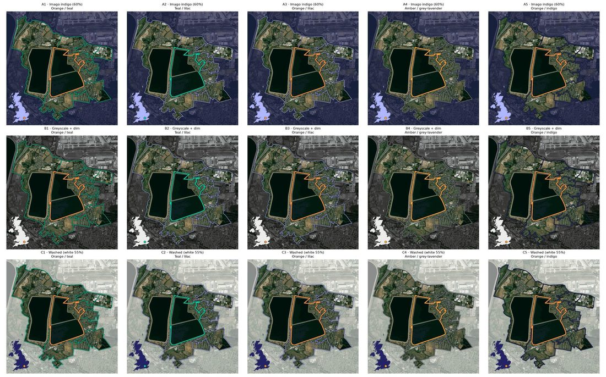<figcaption>Claude looked at <code>grid_imago_E01030745.png</code></figcaption></figure><figure class="sent figure"><div class="sent-row"></div><figcaption>Sent to the user: grid_imago_E01030745.png</figcaption></figure>
<div class="reply">
<p>I’ve sent you a second grid built only from the Imago palette, with 15 versions labelled the same way. I took the colours from the stylesheets on imago.ac.uk:</p>
<ul>
<li><p><strong>Indigo:</strong> <code>#24226f</code> and a deeper <code>#181651</code></p></li>
<li><p><strong>Orange:</strong> <code>#ff8f42</code></p></li>
<li><p><strong>Teal:</strong> <code>#03cea3</code></p></li>
<li><p><strong>Lilac:</strong> <code>#a9afff</code></p></li>
<li><p><strong>Grey-lavender:</strong> <code>#8c91a8</code></p></li>
<li><p><strong>Amber:</strong> <code>#ffaf39</code></p></li>
</ul>
<p><strong>Rows: fades</strong></p>
<div class="line-block">| Fade | UK inset colour |</div>
<p>|—|—|—|</p>
<div class="line-block"><strong>A</strong> | Imago indigo overlay at 60%, the brand version of the navy row | lilac |</div>
<div class="line-block"><strong>B</strong> | Greyscale and dimmed, carried over from the last grid | off-white |</div>
<div class="line-block"><strong>C</strong> | Washed white | Imago indigo |</div>
<p><strong>Columns: line colours (focal area / neighbours)</strong></p>
<div class="line-block">| Focal / neighbours |</div>
<p>|—|—|</p>
<div class="line-block"><strong>1</strong> | orange / teal |</div>
<div class="line-block"><strong>2</strong> | teal / lilac |</div>
<div class="line-block"><strong>3</strong> | orange / lilac |</div>
<div class="line-block"><strong>4</strong> | amber / grey-lavender |</div>
<div class="line-block"><strong>5</strong> | orange / indigo |</div>
<p>The location dot is larger now and takes the focal line’s colour.</p>
<p><strong>My picks:</strong></p>
<ul>
<li><p><strong>A1</strong> (indigo with orange / teal) reads most clearly as Imago. The indigo ties to the brand, orange and teal are its two accent colours, and the lilac UK inset looks good against the indigo.</p></li>
<li><p><strong>B1</strong> (greyscale with orange / teal) keeps the brand colours on a neutral background. It’s probably the cleanest to read.</p></li>
<li><p><strong>C5</strong> (washed with orange / indigo) is the best light option. The indigo neighbour lines and indigo UK inset hold up well on the pale background.</p></li>
</ul>
<p><strong>Combinations that don’t work:</strong></p>
<ul>
<li><p><strong>A5:</strong> indigo lines disappear on the indigo fade.</p></li>
<li><p><strong>Columns 3 and 4 on dark fades:</strong> the lilac and grey-lavender neighbour lines are too faint.</p></li>
</ul>
<p>Tell me a cell code and I’ll make it the template, then run it for the next areas in the ranking.</p>
</div>
<div class="note prompt" id="p-27"><div class="note-meta"><a href="#p-27">#27</a> · Wed 4 Nov, 16:49</div><div class="note-text">Let’s stick with C1 for now. Add it as the template and update for the notebook and the log</div></div>
<div class="reply">
<p>I’ll build C1 into the notebook as a reusable function. First, the UK outline: rebuilding it the way I did in the scratchpad took 8 minutes, which is too slow for a notebook. I’ll test a faster merge designed for areas that tile without gaps:</p>
</div>
<details class="steps"><summary><b>2 steps</b> · Test fast coverage union for UK outline · Read scratchpad/uk_cov.png</summary><details class="tool"><summary><span class="tool-name">Bash</span> Test fast coverage union for UK outline</summary><pre class="tool-in">S=scratchpad/ &amp;&amp; timeout 600 python -I - $S &lt;&lt;'EOF' 2&gt;&amp;1 | grep -v PROJ
import sys, time, geopandas as gpd, shapely, matplotlib.pyplot as plt
S = sys.argv[1]
g = gpd.read_parquet(f"{S}/geoms.parquet").geometry
t = time.time()
u = shapely.coverage_union_all(g.values)
print(f"coverage_union_all {time.time()-t:.1f}s valid={u.is_valid}")
t = time.time()
parts = [shapely.Polygon(p.exterior).simplify(1500) for p in shapely.get_parts(u) if p.area &gt; 20e6]
out = gpd.GeoSeries([shapely.MultiPolygon([p for p in parts if not p.is_empty])], crs=g.crs)
print(f"clean {time.time()-t:.1f}s parts={len(parts)} verts={shapely.get_num_coordinates(out.iloc[0])}")
ax = out.plot(color="#24226f", figsize=(4, 6)); ax.set_axis_off(); plt.savefig(f"{S}/uk_cov.png", dpi=70)
EOF</pre><pre class="tool-out">Traceback (most recent call last):
  File "&lt;stdin&gt;", line 5, in &lt;module&gt;
  File "/opt/conda/envs/gds/lib/python3.12/site-packages/shapely/decorators.py", line 184, in wrapper
    result = func(*args, **kwargs)
             ^^^^^^^^^^^^^^^^^^^^^
  File "/opt/conda/envs/gds/lib/python3.12/site-packages/shapely/set_operations.py", line 660, in coverage_union_all
    return lib.coverage_union(collections, **kwargs)
           ^^^^^^^^^^^^^^^^^^^^^^^^^^^^^^^^^^^^^^^^^
shapely.errors.GEOSException: TopologyException: CoverageUnion cannot process incorrectly noded inputs</pre></details><details class="tool"><summary><span class="tool-name">Read</span> Read scratchpad/uk_cov.png <span class="tool-error">error</span></summary><pre class="tool-in"></pre><pre class="tool-out">File does not exist. Note: your current working directory is .</pre></details></details>
<div class="reply">
<p>The fast merge fails because the areas overlap along national borders, the same issue as the missing England–Scotland links. I’ll try merging each nation separately, then joining the four pieces:</p>
</div>
<details class="steps"><summary><b>2 steps</b> · Test per-nation coverage union for UK outline · Read scratchpad/uk_cov.png</summary><details class="tool"><summary><span class="tool-name">Bash</span> Test per-nation coverage union for UK outline</summary><pre class="tool-in">S=scratchpad/ &amp;&amp; timeout 600 python -I - $S &lt;&lt;'EOF' 2&gt;&amp;1 | grep -v PROJ
import sys, time, geopandas as gpd, shapely, matplotlib.pyplot as plt
S = sys.argv[1]
g = gpd.read_parquet(f"{S}/geoms.parquet").geometry
t = time.time(); pieces = []
for k, sub in g.groupby(g.index.str[0]):
    t1 = time.time()
    try: u = shapely.coverage_union_all(sub.values); how = "coverage"
    except Exception as e: u = shapely.union_all(sub.simplify(200).values); how = "fallback " + str(e)[:40]
    pieces.append(u); print(k, f"{time.time()-t1:.1f}s", how)
u = shapely.union_all(pieces)
parts = [shapely.Polygon(p.exterior).simplify(1500) for p in shapely.get_parts(u) if p.area &gt; 20e6]
out = gpd.GeoSeries([shapely.MultiPolygon([p for p in parts if not p.is_empty])], crs=g.crs)
print(f"total {time.time()-t:.1f}s parts={len(parts)} verts={shapely.get_num_coordinates(out.iloc[0])}")
ax = out.plot(color="#24226f", figsize=(4, 6)); ax.set_axis_off(); plt.savefig(f"{S}/uk_cov.png", dpi=70)
EOF</pre><pre class="tool-out">E 0.4s coverage
N 2.0s fallback TopologyException: CoverageUnion cannot 
S 3.0s coverage
W 0.0s coverage
total 25.8s parts=27 verts=4936</pre></details><details class="tool"><summary><span class="tool-name">Read</span> Read scratchpad/uk_cov.png</summary><pre class="tool-in"></pre></details></details><figure class="seen figure">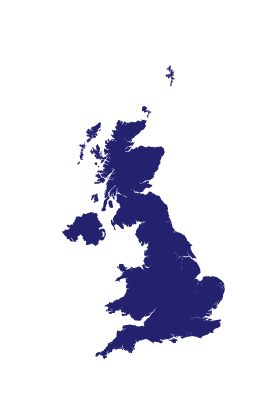<figcaption>Claude looked at <code>uk_cov.png</code></figcaption></figure>
<div class="reply">
<p>Merging each nation separately takes about 26 s in total; Northern Ireland needs the slower standard merge. That’s fast enough for the notebook. Adding the mapping section:</p>
</div>
<details class="steps"><summary><b>2 steps</b> · Add mapping section with C1 template and execute · Read scratchpad/nbout/58e93b8f73508148.png</summary><details class="tool"><summary><span class="tool-name">Bash</span> Add mapping section with C1 template and execute</summary><pre class="tool-in">nb cell add gdsl30dmc.ipynb --source - &lt;&lt;'EOF'
@@markdown
## Mapping the most dissimilar areas

Each map shows a focal area and its neighbours over Esri satellite imagery (no API key needed). The imagery outside those areas is washed out towards white, the focal area is outlined in orange and its neighbours in teal. A small UK silhouette in the corner shows where it is. The colours are from [Imago](https://imago.ac.uk)'s palette (orange `#ff8f42`, teal `#03cea3`, indigo `#24226f`).

The UK silhouette comes from merging all areas. A direct merge of all 46k polygons takes minutes, so we merge each nation separately with GEOS's fast `coverage_union`, which works when polygons tile without gaps or overlaps. Northern Ireland's polygons don't meet that requirement, so they fall back to a slower standard merge. We then join the four nations, drop holes and specks, and simplify.
@@code
%%time
import contextily as cx
import shapely
from matplotlib import patheffects as pe

def merge(geoms):
    try:
        return shapely.coverage_union_all(geoms)
    except shapely.errors.GEOSException:  # polygons not cleanly tiled
        return shapely.union_all(shapely.simplify(geoms, 200))

uk_merged = shapely.union_all([merge(sub.values) for _, sub in lsoas.geometry.groupby(nation)])
uk_outline = gpd.GeoSeries([shapely.MultiPolygon([
    shapely.Polygon(p.exterior).simplify(1500) for p in shapely.get_parts(uk_merged) if p.area &gt; 20e6
])], crs=lsoas.crs)
@@code
IMAGO = {"orange": "#ff8f42", "teal": "#03cea3", "indigo": "#24226f"}
WASH = 0.55  # share of white blended into imagery outside the focal area and its neighbours


def plot_focal(code, ax=None):
    """Satellite map of area `code` and its neighbours, with the surroundings washed out and a UK locator."""
    focal = lsoas.loc[[code], ["geometry"]]
    nbrs = lsoas.loc[g.neighbors[code], ["geometry"]]
    x0, y0, x1, y1 = pd.concat([focal, nbrs]).total_bounds
    pad = 0.05 * max(x1 - x0, y1 - y0)
    x0, y0, x1, y1 = x0 - pad, y0 - pad, x1 + pad, y1 + pad

    # Imagery, reprojected to British National Grid, washed out outside the areas
    bounds = gpd.GeoSeries([shapely.box(x0, y0, x1, y1)], crs=lsoas.crs).to_crs(3857).total_bounds
    img, ext = cx.bounds2img(*bounds, source=cx.providers.Esri.WorldImagery)
    img, ext = cx.warp_tiles(img, ext, t_crs=lsoas.crs)
[… truncated]</pre><pre class="tool-out">Added 5 cells to: gdsl30dmc.ipynb
  Cell ID: 2373a922-8a0b-4e25-bc6d-77fabcb74282 (type: markdown, index: 25)
  Cell ID: bc9b65d0-4128-406f-9596-1e42fe2e5544 (type: code, index: 26)
  Cell ID: ac41a997-58c3-40b6-867b-af632ffe7710 (type: code, index: 27)
  Cell ID: 492dd11c-2e77-4af5-a0a0-759ea310ee92 (type: markdown, index: 28)
  Cell ID: ba17d654-865e-4d5b-aebc-8627d95c5ef5 (type: code, index: 29)
Total cells: 30
@@output {"mime":"image/png","output_type":"display_data","path":"/tmp/nb-cli/gdsl30dmc/58e93b8f73508148.png"}
@@output {"name":"stdout","output_type":"stream"}
```text
CPU times: user 25.4 s, sys: 529 ms, total: 25.9 s
Wall time: 25.9 s

```
@@output {"mime":"image/png","output_type":"display_data","path":"scratchpad/nbout/58e93b8f73508148.png"}</pre></details><details class="tool"><summary><span class="tool-name">Read</span> Read scratchpad/nbout/58e93b8f73508148.png</summary><pre class="tool-in"></pre></details></details><figure class="seen figure">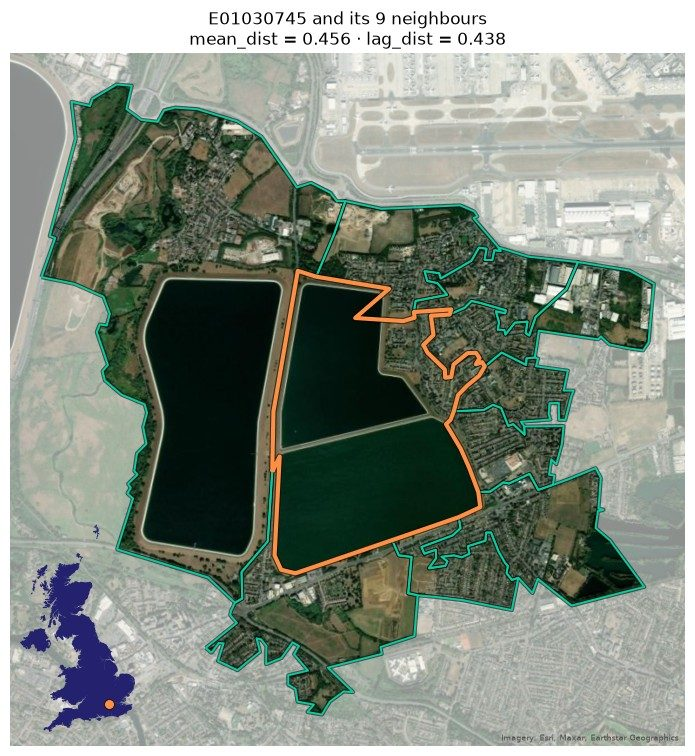<figcaption>Claude looked at <code>58e93b8f73508148.png</code></figcaption></figure>
<div class="reply">
<p>The map matches C1. One correction: I hard-coded the imagery credit, and I’m not certain it’s the wording Esri asks for. I’ll use the attribution string that ships with the tile provider instead:</p>
</div>
<details class="steps"><summary><b>1 step</b> · Use provider attribution string and rerun</summary><details class="tool"><summary><span class="tool-name">Bash</span> Use provider attribution string and rerun</summary><pre class="tool-in">python -c "import contextily as cx; print(cx.providers.Esri.WorldImagery.attribution)" &amp;&amp; S=scratchpad/ &amp;&amp; nb read gdsl30dmc.ipynb -c ac41a997-58c3-40b6-867b-af632ffe7710 --no-output | sed -n '/```python/,/```$/p' | sed '1d;$d' &gt; $S/plotcell.py &amp;&amp; python -I - $S/plotcell.py &lt;&lt;'EOF'
import sys; p=sys.argv[1]; s=open(p).read()
old = 'ax.text(0.99, 0.005, "Imagery: Esri, Maxar, Earthstar Geographics", transform=ax.transAxes,'
new = 'ax.text(0.99, 0.005, cx.providers.Esri.WorldImagery.attribution, transform=ax.transAxes,'
assert s.count(old) == 1; open(p, "w").write(s.replace(old, new))
EOF
nb cell update gdsl30dmc.ipynb -c ac41a997-58c3-40b6-867b-af632ffe7710 --source - &lt; $S/plotcell.py &gt;/dev/null &amp;&amp; nb execute gdsl30dmc.ipynb --timeout 300 2&gt;&amp;1 | tail -1; rm -rf $S/nbout; nb read gdsl30dmc.ipynb --cell-index -1 --output-dir $S/nbout | sed -n '/@@output/,$p'</pre><pre class="tool-out">Tiles (C) Esri -- Source: Esri, i-cubed, USDA, USGS, AEX, GeoEye, Getmapping, Aerogrid, IGN, IGP, UPR-EGP, and the GIS User Community
@@output {"mime":"image/png","output_type":"display_data","path":"/tmp/nb-cli/gdsl30dmc/5b6c3a82969b5e37.png"}
@@output {"mime":"image/png","output_type":"display_data","path":"scratchpad/nbout/5b6c3a82969b5e37.png"}</pre></details></details>
<div class="reply">
<p>Now the log entry:</p>
</div>
<details class="steps"><summary><b>2 steps</b> · Append neighbourhood and template entries to LOG.md · Send files to the user</summary><details class="tool"><summary><span class="tool-name">Bash</span> Append neighbourhood and template entries to LOG.md</summary><pre class="tool-in">cat &gt;&gt; LOG.md &lt;&lt;'EOF'

## 2026-11-04 — Neighbourhood dissimilarity: mean_dist vs lag_dist

Two per-area scores, with equal weights for every neighbour: `mean_dist` = mean of the cosine distances to each neighbour
(`g_dist.aggregate("mean")`); `lag_dist` = cosine distance to the average neighbour embedding
(`g.transform("r").lag(emb)`). `lag_dist &lt;= mean_dist` for every area. Spearman rank correlation 0.84. Medians 0.046 vs 0.017, max 0.456 vs
0.438. In the scatter plot, areas near the diagonal are outliers (unlike all their surroundings); areas well below it are
transitions (their neighbours differ from each other). Also built `most_dissimilar`: each area's single most dissimilar
neighbour and the distance to it.

**Top area on both measures: `E01030745`**, a pair of reservoir basins just south of Heathrow, surrounded by
housing/industry/airport (distances to those neighbours 0.39–0.54); its only similar neighbour (0.16) is the large reservoir
to the west. Expect other water/coast cases near the top of the ranking.

## 2026-11-04 — Map template (style "C1")

Iterated in the scratchpad: map of a focal area + its neighbours over satellite imagery, comparing
4 fades (dark, washed, greyscale, navy) × 5 line palettes, then an Imago-palette grid (colours taken from
imago.ac.uk CSS: indigo `#24226f`/`#181651`, orange `#ff8f42`, teal `#03cea3`, lilac `#a9afff`, grey-lavender
`#8c91a8`, amber `#ffaf39`). **Chosen: C1** = Esri.WorldImagery; outside the focal area + neighbours washed to
white (55%); focal outline orange, neighbours teal, both with a faint dark outline; UK locator inset with no box
in Imago indigo with an orange dot.

**Implementation** (notebook, `plot_focal(code)`): fetch tiles once with `cx.bounds2img` and reproject to EPSG:27700
with `cx.warp_tiles`. The wash is applied to the image pixels with a mask from `shapely.contains_xy` against the merged
outline of the focal area and its neighbours (this also allows effects like greyscale, which an overlay polygon can't do).
Attribution uses the provider's own string.

**UK outline for the inset:** merging all 46k polygons took ~8 min. `shapely.coverage_union_all` on everything fails
(the polygons overlap at national borders), so: merge each nation with coverage union (England 0.4 s, Scotland 3 s, Wales
&lt;0.1 s; Northern Ireland isn't cleanly tiled → falls back to `union_all` on 200 m-simplified polygons), then join the four
nations, drop holes and parts under 20 km², and simplify by 1.5 km. ~26 s total.
E
[… truncated]</pre><pre class="tool-out">(the polygons overlap at national borders), so: merge each nation with coverage union (England 0.4 s, Scotland 3 s, Wales
&lt;0.1 s; Northern Ireland isn't cleanly tiled → falls back to `union_all` on 200 m-simplified polygons), then join the four
nations, drop holes and parts under 20 km², and simplify by 1.5 km. ~26 s total.</pre></details><details class="tool"><summary><span class="tool-name">SendUserFile</span> Send files to the user</summary><pre class="tool-in">scratchpad/nbout/5b6c3a82969b5e37.png

C1 template as rendered by plot_focal("E01030745") in the notebook</pre><pre class="tool-out">1 file delivered to user.
  scratchpad/nbout/5b6c3a82969b5e37.png → file_uuid: 06e60cf4-9ccb-4ffe-83a7-2eb2dbc94a65</pre></details></details>
<div class="reply">
<p>The C1 style is now the notebook’s map template, and I’ve sent you the map as the notebook draws it. The whole notebook reruns without errors with <code>--timeout 300</code>.</p>
<p><strong>Notebook:</strong> a new section, <strong>Mapping the most dissimilar areas</strong>:</p>
<ul>
<li><p><strong>Explanation:</strong> a short note on the style and on how the UK outline for the inset is built.</p></li>
<li><p><strong>UK outline:</strong> built in about 26 s.</p>
<ul>
<li>Merging all 46k areas at once took 8 minutes.</li>
<li>The faster merge fails on the whole UK because areas overlap at the national borders, so the notebook merges each nation separately and then joins them.</li>
<li>Northern Ireland’s areas don’t tile cleanly and fall back to the slower standard merge.</li>
</ul></li>
<li><p><strong><code>plot_focal(code)</code>:</strong> the template as a function. Given an area code, it draws:</p>
<ul>
<li>the area in orange and its neighbours in teal</li>
<li>the satellite imagery outside them washed towards white</li>
<li>the UK silhouette in Imago indigo with an orange dot</li>
<li>the imagery credit text supplied by the tile provider, rather than wording I’d made up</li>
</ul></li>
<li><p><strong>The most dissimilar area:</strong> a short write-up of <code>E01030745</code> (the reservoirs south of Heathrow) followed by <code>plot_focal(top)</code>. A check confirms it’s the top area on both measures.</p></li>
</ul>
<p><strong>Log:</strong> two new entries in <code>LOG.md</code>:</p>
<ul>
<li><p><strong>The two neighbourhood scores:</strong> what each measures, how they compare, and the reservoir finding.</p></li>
<li><p><strong>The map template:</strong> the style iterations and the Imago colours with their codes, why C1 was chosen, how the fade works, and how the UK outline is built quickly.</p></li>
</ul>
<p>The map functions themselves now live in the notebook. The scratchpad scripts were only used for the comparison grids.</p>
<p>Next is running <code>plot_focal</code> for more cases: the next areas in the ranking are <code>N20003012</code>, <code>W01001286</code>, <code>N20002748</code> and <code>E01026177</code>. How many would you like, and should they come from one measure or a mix?</p>
</div>
<div class="note prompt" id="p-28"><div class="note-meta"><a href="#p-28">#28</a> · Wed 4 Nov, 17:45</div><div class="note-text">Actually I want the UK polygon and all the text in the image to be imago grey. See the actual palette attached and update accordingly</div></div>
<div class="reply">
<p>I’ll switch to the official palette names from your sheet and make the UK silhouette and all the text Imago Grey, <code>#B8BCD1</code>:</p>
</div>
<details class="steps"><summary><b>2 steps</b> · Apply official Imago palette and grey text, rerun · Read scratchpad/nbout/8b354e488440187d.png</summary><details class="tool"><summary><span class="tool-name">Bash</span> Apply official Imago palette and grey text, rerun</summary><pre class="tool-in">S=scratchpad/ &amp;&amp; nb read gdsl30dmc.ipynb -c ac41a997-58c3-40b6-867b-af632ffe7710 --no-output | sed -n '/```python/,/```$/p' | sed '1d;$d' &gt; $S/plotcell.py &amp;&amp; python -I - $S/plotcell.py &lt;&lt;'EOF'
import sys; p=sys.argv[1]; s=open(p).read()
reps = [
 ('IMAGO = {"orange": "#ff8f42", "teal": "#03cea3", "indigo": "#24226f"}',
  '# Official Imago palette (brand guidelines)\n'
  'IMAGO = {"navy": "#24226F", "grey": "#B8BCD1", "green": "#03CEA3", "orange": "#FF8F42",\n'
  '         "light_grey": "#E2E5F3", "blue": "#1877CF", "dark_grey": "#8C91A8", "white": "#FFFFFF"}'),
 ('color=IMAGO["teal"]', 'color=IMAGO["green"]'),
 ('''f"mean_dist = {neighbourhood.loc[code, 'mean_dist']:.3f} · lag_dist = {neighbourhood.loc[code, 'lag_dist']:.3f}")''',
  '''f"mean_dist = {neighbourhood.loc[code, 'mean_dist']:.3f} · lag_dist = {neighbourhood.loc[code, 'lag_dist']:.3f}",
                 color=IMAGO["grey"])'''),
 ('ha="right", va="bottom", fontsize=6, color="0.3")', 'ha="right", va="bottom", fontsize=6, color=IMAGO["grey"])'),
 ('uk_outline.plot(ax=ins, color=IMAGO["indigo"], lw=0)', 'uk_outline.plot(ax=ins, color=IMAGO["grey"], lw=0)'),
]
for o, n in reps:
    assert s.count(o) == 1, o; s = s.replace(o, n)
open(p, "w").write(s)
EOF
nb cell update gdsl30dmc.ipynb -c ac41a997-58c3-40b6-867b-af632ffe7710 --source - &lt; $S/plotcell.py &gt;/dev/null
nb cell update gdsl30dmc.ipynb -c 2373a922-8a0b-4e25-bc6d-77fabcb74282 --source - &gt;/dev/null &lt;&lt;'EOF'
## Mapping the most dissimilar areas

Each map shows a focal area and its neighbours over Esri satellite imagery (no API key needed). The imagery outside those areas is washed out towards white, the focal area is outlined in orange and its neighbours in green. A small UK silhouette in the corner shows where it is. Colours follow [Imago](https://imago.ac.uk)'s brand palette: Orange `#FF8F42` and Green `#03CEA3` for the outlines, Grey `#B8BCD1` for the UK silhouette and all text.

The UK silhouette comes from merging all areas. A direct merge of all 46k polygons takes minutes, so we merge each nation separately with GEOS's fast `coverage_union`, which works when polygons tile without gaps or overlaps. Northern Ireland's polygons don't meet that requirement, so they fall back to a slower standard merge. We then join the four nations, drop holes and specks, and simplify.
EOF
nb execute gdsl30dmc.ipynb --timeout 300 2&gt;&amp;1 | tail -1; rm -rf $S/nbout; nb read gdsl30dmc.ipynb --cell-index -1 --output-dir $S/nbout | sed -n '/@@output/,$p'</pre><pre class="tool-out">@@output {"mime":"image/png","output_type":"display_data","path":"/tmp/nb-cli/gdsl30dmc/8b354e488440187d.png"}
@@output {"mime":"image/png","output_type":"display_data","path":"scratchpad/nbout/8b354e488440187d.png"}</pre></details><details class="tool"><summary><span class="tool-name">Read</span> Read scratchpad/nbout/8b354e488440187d.png</summary><pre class="tool-in"></pre></details></details><figure class="seen figure">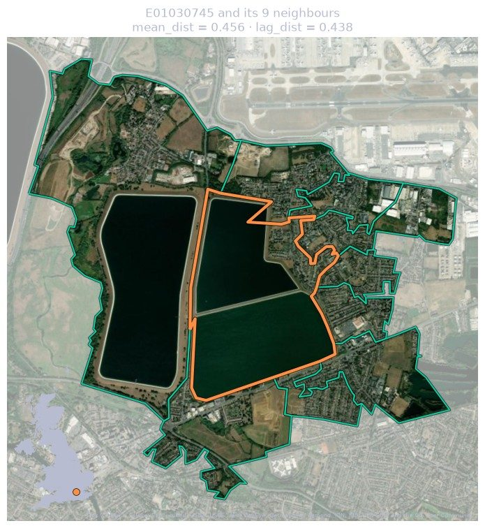<figcaption>Claude looked at <code>8b354e488440187d.png</code></figcaption></figure>
<div class="reply">
<p>The change works, but Grey on these light backgrounds is hard to read:</p>
</div>
<details class="steps"><summary><b>2 steps</b> · Send files to the user · Log switch to official Imago palette</summary><details class="tool"><summary><span class="tool-name">SendUserFile</span> Send files to the user</summary><pre class="tool-in">scratchpad/nbout/8b354e488440187d.png

Official Imago palette: UK silhouette and all text in Grey #B8BCD1</pre><pre class="tool-out">1 file delivered to user.
  scratchpad/nbout/8b354e488440187d.png → file_uuid: d1c954a4-3c11-4272-aac7-5a376a6d80e2</pre></details><details class="tool"><summary><span class="tool-name">Bash</span> Log switch to official Imago palette</summary><pre class="tool-in">cat &gt;&gt; LOG.md &lt;&lt;'EOF'

## 2026-11-04 — Official Imago palette

Switched `plot_focal` to the official brand palette (from Imago's brand guidelines): Navy `#24226F`, Grey `#B8BCD1`,
Green `#03CEA3`, Orange `#FF8F42`, Light Grey `#E2E5F3`, Blue `#1877CF`, Dark Grey `#8C91A8`, White.
Outlines: focal Orange, neighbours Green. UK silhouette and all text (title, attribution) now Grey
`#B8BCD1` (replacing indigo/black). Note: Grey is low-contrast on the white figure background and the washed imagery.
EOF</pre><pre class="tool-out">[This command modified 1 file you've previously read: LOG.md. Call Read before editing.]</pre></details></details><figure class="sent figure"><div class="sent-row"></div><figcaption>Sent to the user: 8b354e488440187d.png</figcaption></figure>
<div class="reply">
<p>I’ve switched the map to the official Imago palette from your sheet and sent you the result. The UK silhouette, title and imagery credit are now Grey <code>#B8BCD1</code>. The whole notebook reruns without errors.</p>
<p><strong>Changes in <code>plot_focal</code>:</strong></p>
<ul>
<li><p><strong>Palette:</strong> <code>IMAGO</code> now holds the full palette with its official names: Navy, Grey, Green, Orange, Light Grey, Blue, Dark Grey and White.</p></li>
<li><p><strong>Outlines:</strong> orange for the focal area and green, the same colour as before (the sheet calls it Green rather than teal), for its neighbours.</p></li>
<li><p><strong>Section note:</strong> updated to describe the new colours.</p></li>
<li><p><strong><code>LOG.md</code>:</strong> I added a short entry for the palette change.</p></li>
</ul>
<p><strong>Problem: contrast.</strong> Grey is a light colour, so:</p>
<ul>
<li><p><strong>Title:</strong> pale on the white figure background, and hard to read.</p></li>
<li><p><strong>UK silhouette:</strong> blends into the washed-out imagery. The orange dot still stands out.</p></li>
<li><p><strong>Imagery credit:</strong> close to invisible. It’s legally required for Esri’s tiles.</p></li>
</ul>
<p><strong>Fixes that stay within the palette:</strong></p>
<ol type="1">
<li><p><strong>Dark Grey for text, Grey for the silhouette:</strong> use Dark Grey (<code>#8C91A8</code>) for the title and credit, and keep Grey for the silhouette with a thin Dark Grey edge so it separates from the imagery.</p></li>
<li><p><strong>Dark Grey for everything:</strong> title, credit and silhouette. It’s still clearly the Imago grey family, with about twice the contrast.</p></li>
<li><p><strong>Keep Grey on a dark background:</strong> give the whole figure a Navy background, so the Grey text and silhouette pop. This is the biggest change to the look.</p></li>
</ol>
<p>I’d go with option 1. Which do you prefer, or should I keep Grey as it is?</p>
</div>
<div class="note prompt" id="p-29"><div class="note-meta"><a href="#p-29">#29</a> · Wed 4 Nov, 21:47</div><div class="note-text">I like with the official colors a bit more. A couple of further iterations: 1) if you’re using Imago grey (#4a4a49), can you make the text in bold? Also, can you use the official font, which is figtree? 2) Make the UK polygon in Imago grey also, and the dot on that polygon in the orange of the focal area. I really like the setup of the image, it looks like a Polaroid picture, can we keep/reinforce that for when we export?</div></div>
<div class="reply">
<p>Two notes before I start:</p>
<ul>
<li><p><strong>The grey:</strong> <code>#4a4a49</code> is the darker Imago grey, the one your sheet lists for the Imago imagery service and that the website uses as its primary colour. I’ll use it for the text, the UK silhouette and the imagery credit.</p></li>
<li><p><strong>Figtree:</strong> it isn’t installed, so I’ll check for it first.</p></li>
</ul>
</div>
<details class="steps"><summary><b>3 steps</b> · Check for Figtree and download static TTFs · Verify downloaded fonts are valid TTFs · …</summary><details class="tool"><summary><span class="tool-name">Bash</span> Check for Figtree and download static TTFs <span class="tool-error">error</span></summary><pre class="tool-in">fc-list 2&gt;/dev/null | grep -i figtree; python -c "import matplotlib.font_manager as fm; print([f.name for f in fm.fontManager.ttflist if 'fig' in f.name.lower()])"; mkdir -p fonts &amp;&amp; cd fonts &amp;&amp; for w in Regular Bold; do curl -sfL -o Figtree-$w.ttf "https://github.com/erikdkennedy/figtree/raw/master/fonts/ttf/Figtree-$w.ttf" &amp;&amp; echo "got $w"; done; ls -la; file Figtree-*.ttf</pre><pre class="tool-out">Exit code 127
[]
got Regular
got Bold
total 128
drwxr-xr-x 2 jovyan users  4096 Nov  4 21:47 .
drwxrwxr-x 4 jovyan 1000   4096 Nov  4 21:47 ..
-rw-r--r-- 1 jovyan users 57672 Nov  4 21:47 Figtree-Bold.ttf
-rw-r--r-- 1 jovyan users 57504 Nov  4 21:47 Figtree-Regular.ttf
/bin/bash: line 1: file: command not found</pre></details><details class="tool"><summary><span class="tool-name">Bash</span> Verify downloaded fonts are valid TTFs</summary><pre class="tool-in">head -c 4 fonts/Figtree-Bold.ttf | od -An -tx1 &amp;&amp; python -I -c "
from matplotlib import font_manager as fm
for p in ['fonts/Figtree-Regular.ttf','fonts/Figtree-Bold.ttf']:
    fp = fm.FontProperties(fname=p); print(p, fp.get_name(), fm.FontEntry and fm.ttfFontProperty(fm.get_font(p)).weight)"</pre><pre class="tool-out">00 01 00 00
fonts/Figtree-Regular.ttf Figtree 400
fonts/Figtree-Bold.ttf Figtree 700</pre></details><details class="tool"><summary><span class="tool-name">Bash</span> Rewrite plot_focal as Polaroid card with Figtree and rerun</summary><pre class="tool-in">cat &gt; scratchpad/plotcell.py &lt;&lt;'EOF'
from matplotlib import font_manager

# Official Imago palette (brand guidelines); "imago_grey" is the Imago data service colour
IMAGO = {"navy": "#24226F", "grey": "#B8BCD1", "green": "#03CEA3", "orange": "#FF8F42",
         "light_grey": "#E2E5F3", "blue": "#1877CF", "dark_grey": "#8C91A8", "white": "#FFFFFF",
         "imago_grey": "#4A4A49"}
WASH = 0.55  # share of white blended into imagery outside the focal area and its neighbours

# Imago's brand font, Figtree (static TTFs from github.com/erikdkennedy/figtree, OFL licence)
for weight in ["Regular", "Bold"]:
    font_manager.fontManager.addfont(f"fonts/Figtree-{weight}.ttf")
TEXT = dict(family="Figtree", weight="bold", color=IMAGO["imago_grey"])

# Polaroid card: square photo with even white borders and a deeper caption strip (sizes in inches)
CARD_W, BORDER, STRIP = 8, 0.45, 1.6
CARD_H = CARD_W + STRIP


def plot_focal(code):
    """Polaroid-style satellite card of area `code` and its neighbours, surroundings washed out, with a UK locator."""
    focal = lsoas.loc[[code], ["geometry"]]
    nbrs = lsoas.loc[g.neighbors[code], ["geometry"]]
    x0, y0, x1, y1 = pd.concat([focal, nbrs]).total_bounds
    cx_, cy_, half = (x0 + x1) / 2, (y0 + y1) / 2, 0.55 * max(x1 - x0, y1 - y0)
    x0, y0, x1, y1 = cx_ - half, cy_ - half, cx_ + half, cy_ + half  # square frame

    # Imagery, reprojected to British National Grid, washed out outside the areas
    bounds = gpd.GeoSeries([shapely.box(x0, y0, x1, y1)], crs=lsoas.crs).to_crs(3857).total_bounds
    img, ext = cx.bounds2img(*bounds, source=cx.providers.Esri.WorldImagery)
    img, ext = cx.warp_tiles(img, ext, t_crs=lsoas.crs)
    rgb = img[..., :3] / 255
    h, w = rgb.shape[:2]
    xx, yy = np.meshgrid(np.linspace(ext[0], ext[1], w), np.linspace(ext[3], ext[2], h))
    inside = shapely.contains_xy(pd.concat([focal, nbrs]).union_all(), xx, yy)[..., None]
    rgb = np.where(inside, rgb, rgb * (1 - WASH) + WASH)

    fig = plt.figure(figsize=(CARD_W, CARD_H), facecolor=IMAGO["white"])
    fig.patch.set_edgecolor(IMAGO["light_grey"]); fig.patch.set_linewidth(2)
    side = (CARD_W - 2 * BORDER) / CARD_W
[… truncated]</pre><pre class="tool-out">@@output {"mime":"image/png","output_type":"display_data","path":"/tmp/nb-cli/gdsl30dmc/f39539fa2acd1ca0.png"}
@@output {"mime":"image/png","output_type":"display_data","path":"scratchpad/nbout/f39539fa2acd1ca0.png"}</pre></details></details>
<div class="reply">
<p>The notebook preview trims the figure’s margins, which hides the Polaroid border. I’ll add an export step that saves the full card at print resolution, then check that file:</p>
</div>
<details class="steps"><summary><b>2 steps</b> · Add export step and rerun notebook · Read figures/E01030745.png</summary><details class="tool"><summary><span class="tool-name">Bash</span> Add export step and rerun notebook</summary><pre class="tool-in">nb cell add gdsl30dmc.ipynb --source - &lt;&lt;'EOF'
@@markdown
### Exporting the cards

Cards are saved to `figures/` at 200 dpi, with the full white border and caption strip kept. We don't use `bbox_inches="tight"`, because it would trim the Polaroid margins.
@@code
from pathlib import Path

FIG_DIR = Path("figures")
FIG_DIR.mkdir(exist_ok=True)

def export_card(fig, name, dpi=200):
    path = FIG_DIR / f"{name}.png"
    fig.savefig(path, dpi=dpi, facecolor=fig.get_facecolor(), edgecolor=fig.get_edgecolor())
    return path

export_card(fig, top)
EOF
nb execute gdsl30dmc.ipynb --timeout 300 2&gt;&amp;1 | tail -1; nb read gdsl30dmc.ipynb --cell-index -1 | sed -n '/@@output/,$p'; ls -la figures/</pre><pre class="tool-out">Added 2 cells to: gdsl30dmc.ipynb
  Cell ID: bbdfde88-53a2-4d9d-b042-831cb8f00325 (type: markdown, index: 30)
  Cell ID: 9a492e5c-2426-4b86-903e-b55ef7b9b58e (type: code, index: 31)
Total cells: 32
```
@@output {"execution_count":20,"mime":"text/plain","output_type":"execute_result"}
```text
PosixPath('figures/E01030745.png')
```
total 2664
drwxr-xr-x 2 jovyan users    4096 Nov  4 21:50 .
drwxrwxr-x 5 jovyan 1000     4096 Nov  4 21:50 ..
-rw-r--r-- 1 jovyan users 2718877 Nov  4 21:50 E01030745.png</pre></details><details class="tool"><summary><span class="tool-name">Read</span> Read figures/E01030745.png</summary><pre class="tool-in"></pre></details></details><figure class="seen figure">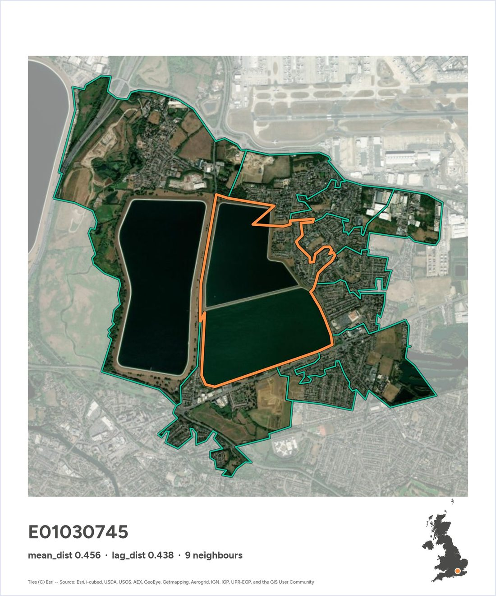<figcaption>Claude looked at <code>E01030745.png</code></figcaption></figure>
<div class="reply">
<p>The card is close, but the top border is twice as wide as the sides because I got the card height wrong, and Shetland on the UK locator nearly touches the photo. Fixing both:</p>
</div>
<details class="steps"><summary><b>2 steps</b> · Fix card height and inset size, rerun · Read figures/E01030745.png</summary><details class="tool"><summary><span class="tool-name">Bash</span> Fix card height and inset size, rerun</summary><pre class="tool-in">S=scratchpad/ &amp;&amp; python -I - $S/plotcell.py &lt;&lt;'EOF'
import sys; p=sys.argv[1]; s=open(p).read()
reps = [
 ("CARD_H = CARD_W + STRIP", "CARD_H = CARD_W - BORDER + STRIP  # border on top and sides, caption strip below"),
 ("ax = fig.add_axes([BORDER / CARD_W, (STRIP + BORDER) / CARD_H - BORDER / CARD_H, side, side * CARD_W / CARD_H])",
  "ax = fig.add_axes([BORDER / CARD_W, STRIP / CARD_H, side, side * CARD_W / CARD_H])"),
 ("ins = fig.add_axes([1 - (BORDER + 0.8) / CARD_W, 0.22 / CARD_H, 0.8 / CARD_W, (STRIP - 0.25) / CARD_H])",
  "ins = fig.add_axes([1 - (BORDER + 0.8) / CARD_W, 0.2 / CARD_H, 0.8 / CARD_W, (STRIP - 0.45) / CARD_H])"),
]
for o, n in reps:
    assert s.count(o) == 1, o; s = s.replace(o, n)
open(p, "w").write(s)
EOF
nb cell update gdsl30dmc.ipynb -c ac41a997-58c3-40b6-867b-af632ffe7710 --source - &lt; $S/plotcell.py &gt;/dev/null &amp;&amp; nb execute gdsl30dmc.ipynb --timeout 300 2&gt;&amp;1 | tail -1; ls -la figures/</pre><pre class="tool-out">```
total 2660
drwxr-xr-x 2 jovyan users    4096 Nov  4 21:50 .
drwxrwxr-x 5 jovyan 1000     4096 Nov  4 21:52 ..
-rw-r--r-- 1 jovyan users 2714819 Nov  4 21:52 E01030745.png</pre></details><details class="tool"><summary><span class="tool-name">Read</span> Read figures/E01030745.png</summary><pre class="tool-in"></pre></details></details><figure class="seen figure">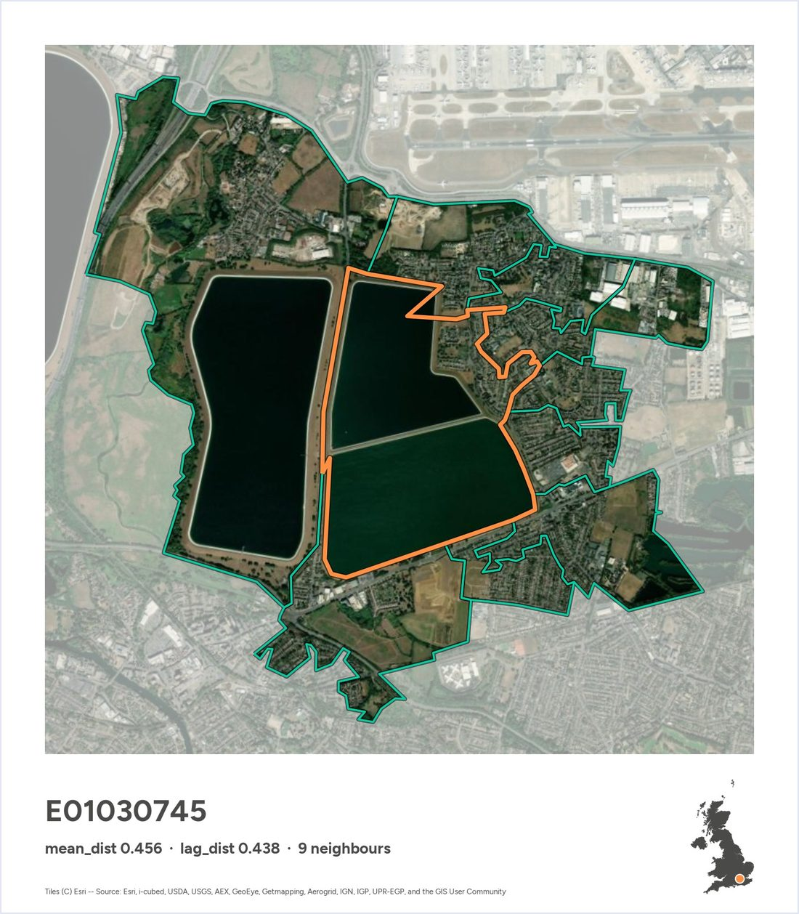<figcaption>Claude looked at <code>E01030745.png</code></figcaption></figure>
<div class="reply">
<p>The card looks right now. I’ll update the section text and the log, then send it:</p>
</div>
<details class="steps"><summary><b>2 steps</b> · Update section text, rerun, and log the card design · Send files to the user</summary><details class="tool"><summary><span class="tool-name">Bash</span> Update section text, rerun, and log the card design</summary><pre class="tool-in">nb cell update gdsl30dmc.ipynb -c 2373a922-8a0b-4e25-bc6d-77fabcb74282 --source - &gt;/dev/null &lt;&lt;'EOF'
## Mapping the most dissimilar areas

Each area becomes a Polaroid-style card. A square satellite photo (Esri imagery, no API key needed) shows the focal area outlined in orange and its neighbours in green, with everything outside them washed out towards white. Below it, a caption strip carries the area code and its scores in bold [Figtree](https://github.com/erikdkennedy/figtree), Imago's brand font, plus a UK silhouette locating the area. Colours follow [Imago](https://imago.ac.uk)'s brand palette: Orange `#FF8F42`, Green `#03CEA3`, and Imago Grey `#4A4A49` for the text and the UK silhouette. The fonts are loaded from `fonts/`.

The UK silhouette comes from merging all areas. A direct merge of all 46k polygons takes minutes, so we merge each nation separately with GEOS's fast `coverage_union`, which works when polygons tile without gaps or overlaps. Northern Ireland's polygons don't meet that requirement, so they fall back to a slower standard merge. We then join the four nations, drop holes and specks, and simplify.
EOF
nb execute gdsl30dmc.ipynb --timeout 300 2&gt;&amp;1 | tail -1 &gt;/dev/null
cat &gt;&gt; LOG.md &lt;&lt;'EOF'

## 2026-11-04 — Polaroid card, Figtree, Imago Grey

`plot_focal(code)` now returns a Polaroid-style card (8 × 9.15 in): a square photo (frame made square around the focal
area + neighbours) with even 0.45 in white borders on top and sides, and a 1.6 in caption strip below. The strip has the area code
(22 pt) and `mean_dist · lag_dist · n neighbours` (11 pt) in bold **Figtree** (static TTFs from
github.com/erikdkennedy/figtree, OFL, saved in `fonts/`, registered with `font_manager.addfont`), the Esri credit in
regular weight, and the UK silhouette at bottom right. Text and UK silhouette in **Imago Grey `#4A4A49`** (Imago imagery
data-service colour); locator dot Orange with a white edge. Faint Light Grey (`#E2E5F3`) card edge.
Export with `export_card(fig, name)` → `figures/&lt;name&gt;.png` at 200 dpi, **without** `bbox_inches="tight"` (it would trim
the Polaroid margins).
EOF
echo ok</pre><pre class="tool-out">ok</pre></details><details class="tool"><summary><span class="tool-name">SendUserFile</span> Send files to the user</summary><pre class="tool-in">figures/E01030745.png

Exported Polaroid card for E01030745 (figures/E01030745.png, 200 dpi)</pre><pre class="tool-out">1 file delivered to user.
  figures/E01030745.png → file_uuid: f79dfc01-a73d-43ea-9487-3fed2fdb8076</pre></details></details><figure class="sent figure"><div class="sent-row">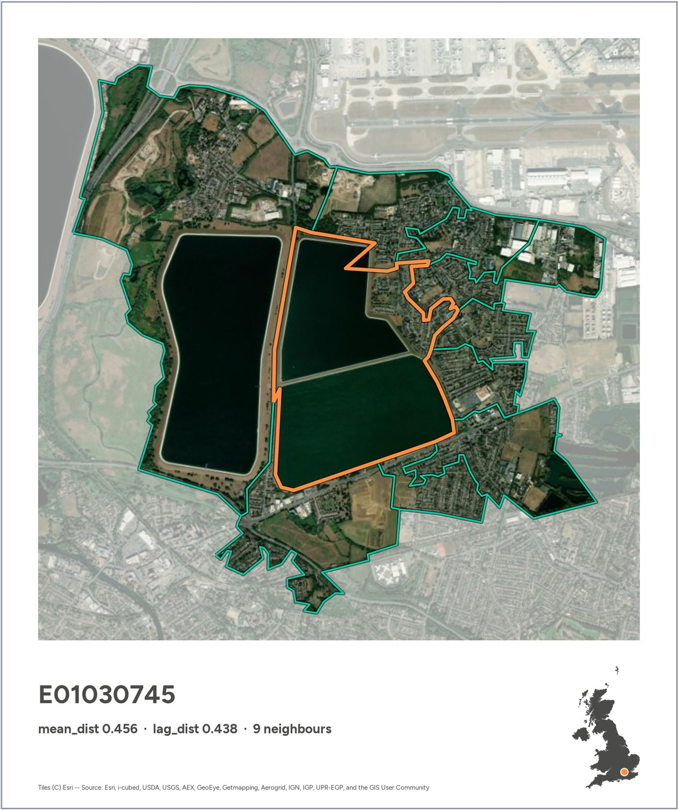</div><figcaption>Sent to the user: E01030745.png</figcaption></figure>
<div class="note prompt" id="p-30"><div class="note-meta"><a href="#p-30">#30</a> · Wed 4 Nov, 21:53 · typed while Claude was working</div><div class="note-text">Ok almost perfect: one more thing on the Polaroid side: can you keep a larger margin at the bottom than at the top (that’s how Polaroids are no?) and also can you make it somehow so that it keeps this layout clear even if it’s displayed against white? Maybe with a thin border line?</div></div>
<details class="steps"><summary><b>2 steps</b> · Deepen bottom strip, add inner outline, rerun, mock on white · Read scratchpad/card_on_white.png</summary><details class="tool"><summary><span class="tool-name">Bash</span> Deepen bottom strip, add inner outline, rerun, mock on white</summary><pre class="tool-in">S=scratchpad/ &amp;&amp; python -I - $S/plotcell.py &lt;&lt;'EOF'
import sys; p=sys.argv[1]; s=open(p).read()
reps = [
 ("from matplotlib import font_manager\n", "from matplotlib import font_manager\nfrom matplotlib.patches import Rectangle\n"),
 ("# Polaroid card: square photo with even white borders and a deeper caption strip (sizes in inches)\nCARD_W, BORDER, STRIP = 8, 0.45, 1.6",
  "# Polaroid card: square photo with even white borders on top and sides and a much deeper caption strip below,\n"
  "# in roughly real Polaroid proportions (bottom ≈ 4-5× the side border). Sizes in inches.\nCARD_W, BORDER, STRIP = 8, 0.45, 2.0"),
 ('    fig.patch.set_edgecolor(IMAGO["light_grey"]); fig.patch.set_linewidth(2)\n',
  '    # Thin outline drawn fully inside the canvas, so the card reads as a card even on a white page\n'
  '    fig.add_artist(Rectangle((0.002, 0.002), 0.996, 0.996, transform=fig.transFigure, fill=False,\n'
  '                             edgecolor=IMAGO["dark_grey"], lw=1.2))\n'),
 ('fig.text(left, base - 0.38 / CARD_H, code, fontsize=22, va="top", **TEXT)',
  'fig.text(left, base - 0.45 / CARD_H, code, fontsize=22, va="top", **TEXT)'),
 ('fig.text(left, base - 0.85 / CARD_H,', 'fig.text(left, base - 0.95 / CARD_H,'),
 ('fig.text(left, 0.18 / CARD_H, cx.providers', 'fig.text(left, 0.22 / CARD_H, cx.providers'),
 ("ins = fig.add_axes([1 - (BORDER + 0.8) / CARD_W, 0.2 / CARD_H, 0.8 / CARD_W, (STRIP - 0.45) / CARD_H])",
  "ins = fig.add_axes([1 - (BORDER + 0.9) / CARD_W, 0.25 / CARD_H, 0.9 / CARD_W, (STRIP - 0.55) / CARD_H])"),
]
for o, n in reps:
    assert s.count(o) == 1, o; s = s.replace(o, n)
open(p, "w").write(s)
EOF
nb cell update gdsl30dmc.ipynb -c ac41a997-58c3-40b6-867b-af632ffe7710 --source - &lt; $S/plotcell.py &gt;/dev/null &amp;&amp; nb execute gdsl30dmc.ipynb --timeout 300 2&gt;&amp;1 | tail -1; python -I -c "
from PIL import Image; im = Image.open('figures/E01030745.png'); print(im.size)
bg = Image.new('RGB', (im.width + 300, im.height + 300), 'white'); bg.paste(im.convert('RGB'), (150, 150))
bg.save('$S/card_on_white.png')"</pre><pre class="tool-out">```
(1600, 1910)</pre></details><details class="tool"><summary><span class="tool-name">Read</span> Read scratchpad/card_on_white.png</summary><pre class="tool-in"></pre></details></details><figure class="seen figure">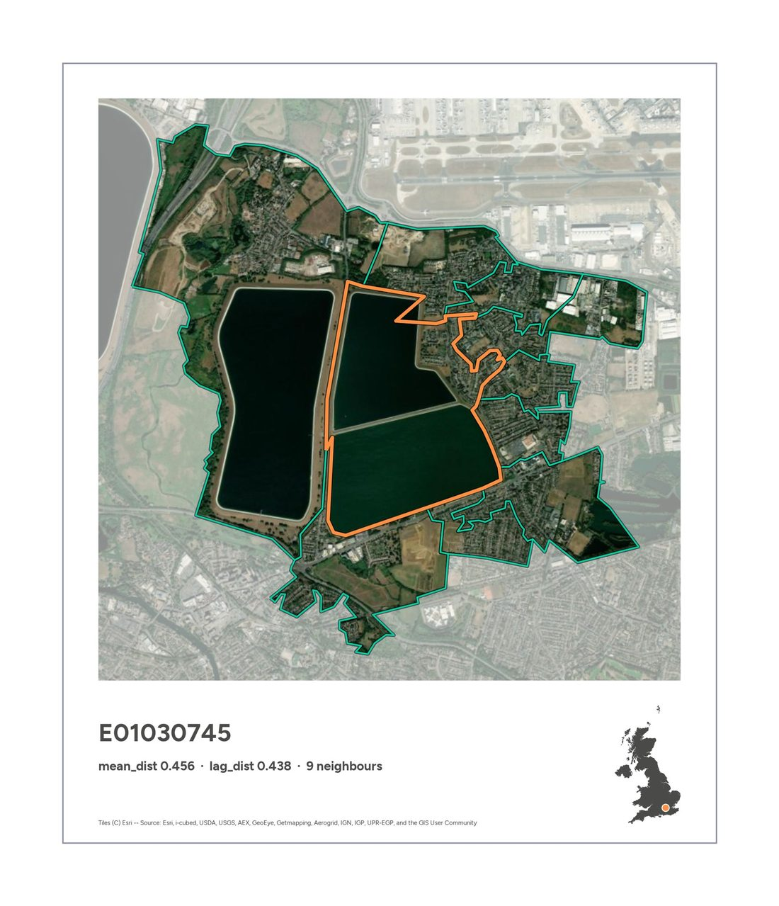<figcaption>Claude looked at <code>card_on_white.png</code></figcaption></figure>
<div class="reply">
<p>The proportions now read as a Polaroid, and the outline holds up on a white page. Updating the log and sending you both the exported card and a version placed on a white page:</p>
</div>
<details class="steps"><summary><b>2 steps</b> · Log Polaroid proportion and outline changes · Send files to the user</summary><details class="tool"><summary><span class="tool-name">Bash</span> Log Polaroid proportion and outline changes</summary><pre class="tool-in">cat &gt;&gt; LOG.md &lt;&lt;'EOF'
Update: caption strip deepened to 2.0 in (8 × 9.55 in card; bottom ≈ 4.4× the 0.45 in side/top border, close to real
Polaroid 600 proportions). The faint Light Grey card edge is replaced by a thin (1.2 pt) Imago Dark Grey `#8C91A8` outline drawn
just inside the canvas (a `Rectangle` in figure coordinates), so the card stays readable against a white page.
EOF
tail -2 LOG.md</pre><pre class="tool-out">Polaroid 600 proportions). The faint Light Grey card edge is replaced by a thin (1.2 pt) Imago Dark Grey `#8C91A8` outline drawn
just inside the canvas (a `Rectangle` in figure coordinates), so the card stays readable against a white page.</pre></details><details class="tool"><summary><span class="tool-name">SendUserFile</span> Send files to the user</summary><pre class="tool-in">figures/E01030745.png
scratchpad/card_on_white.png

Updated card (deeper bottom strip, thin Dark Grey outline), and the same card on a white page to check it holds up</pre><pre class="tool-out">2 files delivered to user.
  figures/E01030745.png → file_uuid: bd59244d-db81-4f60-bf05-65b0215d146a
  scratchpad/card_on_white.png → file_uuid: 5242250b-c2ff-496b-b12c-ecb8882b2495</pre></details></details><figure class="sent figure"><div class="sent-row"></div><figcaption>Sent to the user: E01030745.png, card_on_white.png</figcaption></figure>
<div class="reply">
<p>Both changes are in the notebook and in the exported card at <code>figures/E01030745.png</code>, and the notebook reruns cleanly. I’ve sent you the card, plus a copy placed on a white page to check the outline.</p>
<ul>
<li><p><strong>Bottom margin:</strong> the caption strip is now 2.0 in deep, about 4.4 times the 0.45 in border on the top and sides. That’s close to real Polaroid 600 film, where the bottom border is about 22 mm against roughly 5 mm on the other sides. The card is now 8 × 9.55 in, or 1600 × 1910 px at 200 dpi.</p></li>
<li><p><strong>Outline on white:</strong> a thin (1.2 pt) line in Imago Dark Grey (<code>#8C91A8</code>) now runs around the card, drawn just inside the image so it isn’t clipped at the edge. On a white page it reads clearly as a card. The faint Light Grey edge I had before mostly disappeared there.</p></li>
<li><p><strong>Caption strip:</strong> I adjusted the spacing to fit the deeper strip, and the UK locator is slightly larger.</p></li>
</ul>
<p>Earlier in this round, as asked:</p>
<ul>
<li><p><strong>Bold text:</strong> all text in bold Figtree in Imago Grey <code>#4A4A49</code>, except the imagery credit, which stays regular weight so it doesn’t compete.</p></li>
<li><p><strong>UK locator:</strong> in the same grey, with an orange dot. I moved it from the photo into the caption strip, which keeps the photo clean and fits the Polaroid idea.</p></li>
<li><p><strong>Figtree:</strong> the font files are saved in <code>fonts/</code> in the project, so the notebook doesn’t depend on fonts installed on the machine.</p></li>
</ul>
<p><code>LOG.md</code> has entries for the card design and these final proportions.</p>
<p>The template is ready to reuse. Next would be making cards for the next areas in the ranking (<code>N20003012</code>, <code>W01001286</code>, <code>N20002748</code>, <code>E01026177</code>) and exporting each one with <code>export_card</code>. How many would you like?</p>
</div>
<div class="note prompt" id="p-31"><div class="note-meta"><a href="#p-31">#31</a> · Wed 4 Nov, 21:58</div><div class="note-text">Let’s start with the top 5 for each measure</div></div>
<details class="steps"><summary><b>1 step</b> · Add top-5 cards cell, execute, list exports</summary><details class="tool"><summary><span class="tool-name">Bash</span> Add top-5 cards cell, execute, list exports</summary><pre class="tool-in">nb cell add gdsl30dmc.ipynb --source - &lt;&lt;'EOF'
@@markdown
### Top 5 areas on each measure

We take the five highest-scoring areas on `mean_dist` and on `lag_dist`, combine them into one list without duplicates, and make and export a card for each. The table shows each area's rank on both measures.
@@code
N_TOP = 5
top_mean = neighbourhood["mean_dist"].nlargest(N_TOP).index
top_lag = neighbourhood["lag_dist"].nlargest(N_TOP).index
cases = top_mean.union(top_lag, sort=False)

ranks = neighbourhood.rank(ascending=False).astype(int).add_suffix("_rank")
neighbourhood.join(ranks).loc[cases]
@@code
for code in cases:
    fig = plot_focal(code)
    print(export_card(fig, code))
    plt.show()
EOF
nb execute gdsl30dmc.ipynb --timeout 300 2&gt;&amp;1 | tail -1; nb read gdsl30dmc.ipynb --cell-index -2 | sed -n '/@@output/,$p' | grep -E '&lt;th&gt;|&lt;td&gt;' | paste - - - - - - - - - - | head; nb read gdsl30dmc.ipynb --cell-index -1 | grep -A1 'stream' | head -20; ls figures/</pre><pre class="tool-out">Added 3 cells to: gdsl30dmc.ipynb
  Cell ID: 5d28dd37-1399-4fff-aa08-35b5bec456ea (type: markdown, index: 32)
  Cell ID: 5756b4eb-b27f-4693-8c93-241f65182903 (type: code, index: 33)
  Cell ID: 747b75cf-730a-4dcf-946d-71101326f642 (type: code, index: 34)
Total cells: 35
@@output {"mime":"image/png","output_type":"display_data","path":"/tmp/nb-cli/gdsl30dmc/9fe238de6d549772.png"}
      &lt;th&gt;&lt;/th&gt;       &lt;th&gt;mean_dist&lt;/th&gt;          &lt;th&gt;lag_dist&lt;/th&gt;       &lt;th&gt;mean_dist_rank&lt;/th&gt;         &lt;th&gt;lag_dist_rank&lt;/th&gt;          &lt;th&gt;data_zone_code&lt;/th&gt;         &lt;th&gt;&lt;/th&gt;       &lt;th&gt;&lt;/th&gt;       &lt;th&gt;&lt;/th&gt;       &lt;th&gt;&lt;/th&gt;
      &lt;th&gt;E01030745&lt;/th&gt;          &lt;td&gt;0.455714&lt;/td&gt;       &lt;td&gt;0.438115&lt;/td&gt;       &lt;td&gt;1&lt;/td&gt;          &lt;td&gt;1&lt;/td&gt;          &lt;th&gt;N20003012&lt;/th&gt;          &lt;td&gt;0.381098&lt;/td&gt;       &lt;td&gt;0.373842&lt;/td&gt;       &lt;td&gt;2&lt;/td&gt;          &lt;td&gt;2&lt;/td&gt;
      &lt;th&gt;W01001286&lt;/th&gt;          &lt;td&gt;0.375061&lt;/td&gt;       &lt;td&gt;0.359898&lt;/td&gt;       &lt;td&gt;3&lt;/td&gt;          &lt;td&gt;3&lt;/td&gt;          &lt;th&gt;N20002748&lt;/th&gt;          &lt;td&gt;0.355019&lt;/td&gt;       &lt;td&gt;0.353096&lt;/td&gt;       &lt;td&gt;4&lt;/td&gt;          &lt;td&gt;4&lt;/td&gt;
      &lt;th&gt;E01026177&lt;/th&gt;          &lt;td&gt;0.314997&lt;/td&gt;       &lt;td&gt;0.307863&lt;/td&gt;       &lt;td&gt;5&lt;/td&gt;          &lt;td&gt;5&lt;/td&gt;                    
@@output {"name":"stdout","output_type":"stream"}
```text
--
@@output {"name":"stdout","output_type":"stream"}
```text
--
@@output {"name":"stdout","output_type":"stream"}
```text
--
@@output {"name":"stdout","output_type":"stream"}
```text
--
@@output {"name":"stdout","output_type":"stream"}
```text
E01026177.png
E01030745.png
N20002748.png
N20003012.png
W01001286.png</pre></details></details>
<div class="reply">
<p>Both measures give the same five areas in the same order, so there are 5 cards rather than 10. Checking the four new ones:</p>
</div>
<details class="steps"><summary><b>3 steps</b> · Build contact sheet of four new cards · Read scratchpad/sheet.png · …</summary><details class="tool"><summary><span class="tool-name">Bash</span> Build contact sheet of four new cards</summary><pre class="tool-in">python -I -c "
from PIL import Image
ims = [Image.open(f'figures/{c}.png').convert('RGB') for c in ['N20003012','W01001286','N20002748','E01026177']]
w, h = ims[0].size; sheet = Image.new('RGB', (2*w + 60, 2*h + 60), 'white')
for k, im in enumerate(ims): sheet.paste(im, (20 + (k%2)*(w+20), 20 + (k//2)*(h+20)))
sheet.resize((sheet.width//2, sheet.height//2)).save('scratchpad/sheet.png')"</pre><pre class="tool-out">(Bash completed with no output)</pre></details><details class="tool"><summary><span class="tool-name">Read</span> Read scratchpad/sheet.png</summary><pre class="tool-in"></pre></details><details class="tool"><summary><span class="tool-name">SendUserFile</span> Send files to the user</summary><pre class="tool-in">figures/N20003012.png
figures/W01001286.png
figures/N20002748.png
figures/E01026177.png

Cards for ranks 2–5 (the same on both measures): N20003012, W01001286, N20002748, E01026177</pre><pre class="tool-out">4 files delivered to user.
  figures/N20003012.png → file_uuid: 088eb430-dc0a-4264-bfd1-c031cb590674
  figures/W01001286.png → file_uuid: 03b75c3c-a102-4ca6-81b9-007192fea6e2
  figures/N20002748.png → file_uuid: 8ee5a06c-58e4-40d9-b206-54e8cbbc45d2
  figures/E01026177.png → file_uuid: 25cde084-eea3-4014-9841-51390095101f</pre></details></details><figure class="seen figure">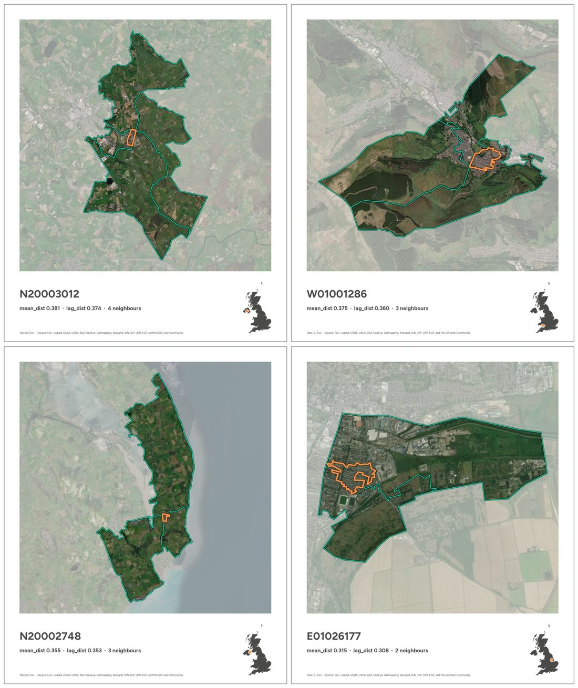<figcaption>Claude looked at <code>sheet.png</code></figcaption></figure><figure class="sent figure"><div class="sent-row">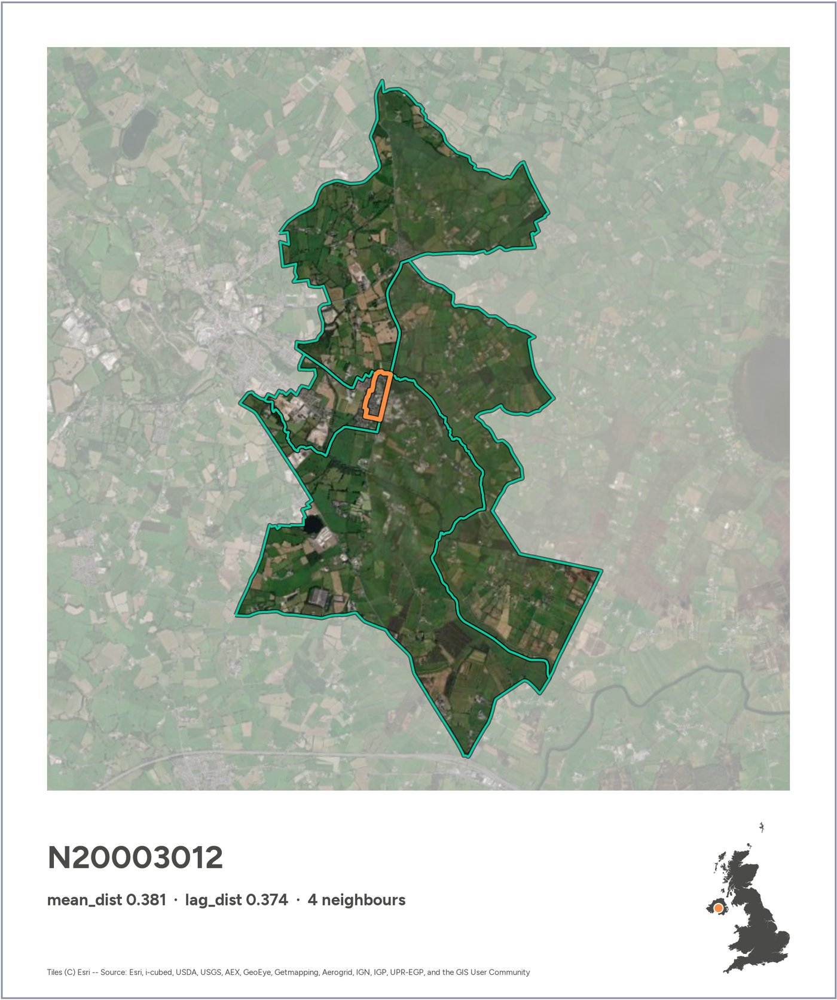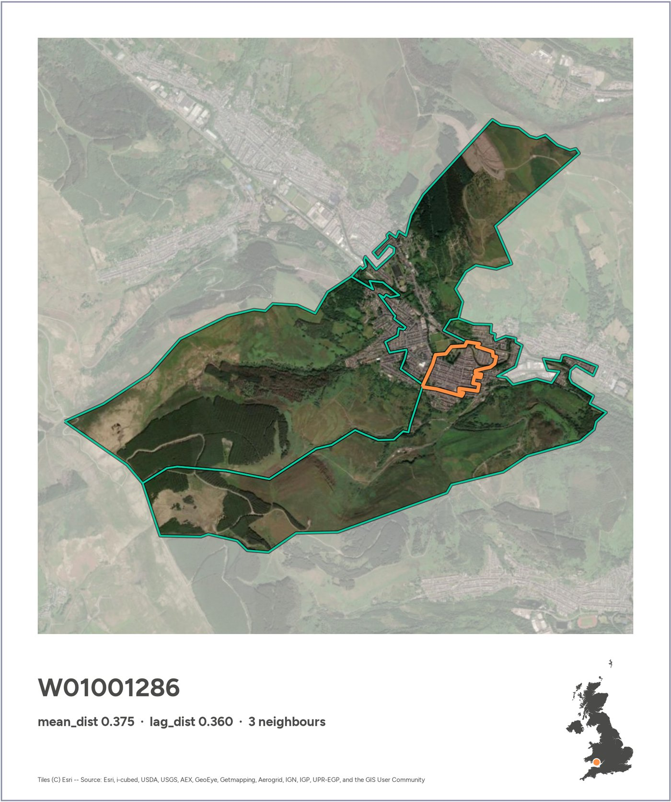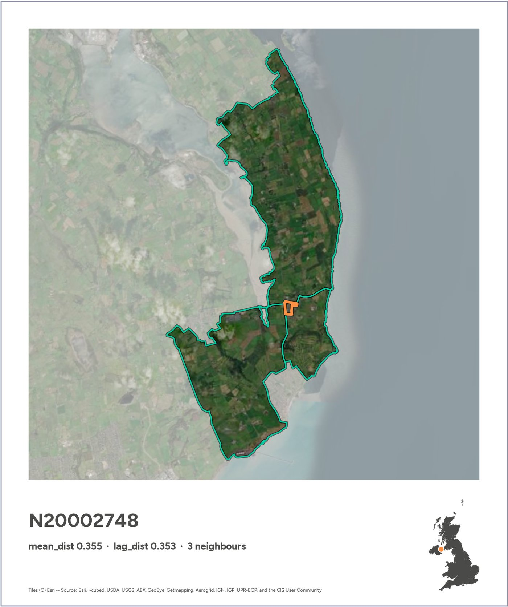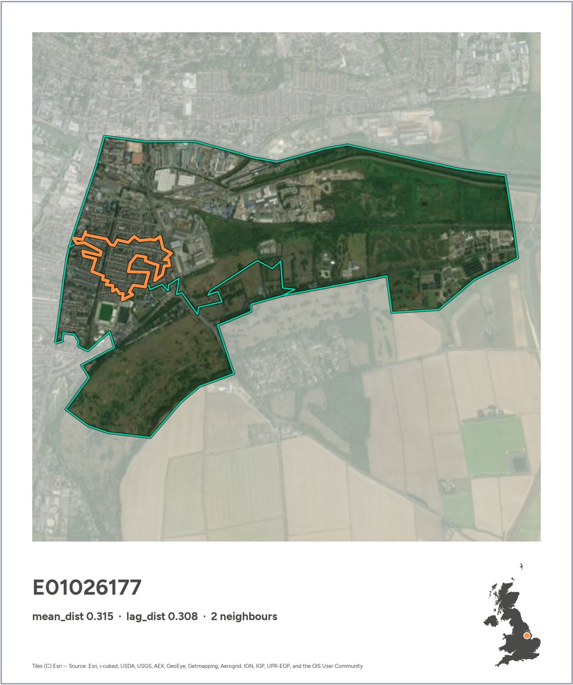</div><figcaption>Sent to the user: N20003012.png, W01001286.png, N20002748.png, E01026177.png</figcaption></figure>
<div class="reply">
<p>Both measures pick exactly the same five areas in the same order, so there are 5 cards rather than 10. I’ve made and exported all of them to <code>figures/</code> and sent you the four new ones.</p>
<div class="line-block">Rank on both | Area | mean_dist | lag_dist | Neighbours |</div>
<p>|—|—|—|—|—|</p>
<div class="line-block">1 | E01030745 | 0.456 | 0.438 | 9 |</div>
<div class="line-block">2 | N20003012 | 0.381 | 0.374 | 4 |</div>
<div class="line-block">3 | W01001286 | 0.375 | 0.360 | 3 |</div>
<div class="line-block">4 | N20002748 | 0.355 | 0.353 | 3 |</div>
<div class="line-block">5 | E01026177 | 0.315 | 0.308 | 2 |</div>
<p>The notebook has a new subsection, <strong>Top 5 areas on each measure</strong>, with this table (showing each area’s rank on both measures) and a loop that makes and exports each card. The whole notebook reruns cleanly.</p>
<p><strong>What the cards show:</strong> ranks 2–5 are the reverse of the reservoir case. Each is a small built-up area (a town centre or village core) inside a few large, mostly green rural neighbours:</p>
<ul>
<li><p><strong>N20003012:</strong> a small built-up block in farmland in Northern Ireland.</p></li>
<li><p><strong>W01001286:</strong> a valley town in Wales surrounded by moorland and forestry.</p></li>
<li><p><strong>N20002748:</strong> a small coastal settlement on a farmed peninsula in Northern Ireland.</p></li>
<li><p><strong>E01026177:</strong> a dense housing area next to woodland and open land in eastern England.</p></li>
</ul>
<p>I’ve only judged these from the imagery; I haven’t checked the place names.</p>
<p><strong>Two things I noticed:</strong></p>
<ol type="1">
<li><p><strong>The ranking may favour areas with few neighbours.</strong> Ranks 2–5 have only 2–4 neighbours each, against a typical 6. With so few, the average depends on just a handful of pairs, so one sharp contrast can push an area to the top. That’s worth checking before we read too much into the ranking: we could look at how scores vary with the number of neighbours, or require a minimum number of neighbours.</p></li>
<li><p><strong>The focal area can be tiny on the card.</strong> The frame fits the focal area and all its neighbours, so when the neighbours are large rural areas, the focal area ends up very small, as in N20003012 and N20002748. An option is to frame tighter around the focal area and let large neighbours run off the edge of the photo.</p></li>
</ol>
<p>I haven’t added a <code>LOG.md</code> entry for this step yet. Which would you like next: the neighbour-count check, tighter framing, or a log entry first?</p>
</div>
<div class="note prompt" id="p-32"><div class="note-meta"><a href="#p-32">#32</a> · Wed 4 Nov, 22:06</div><div class="note-text">OK I see the point of these, they’re true but not the most interesting. Maybe let’s switch gears from neighboring sets to pairs. Let’s look at the largest distance between a pair of neighbors. Before that, include these top five in the notebook and log if not there yet, and start a new section for this.</div></div>
<div class="reply">
<p>The top-5 cards are already in the notebook; I’ll add the log entry and then start the pairs section:</p>
</div>
<details class="steps"><summary><b>3 steps</b> · Log top-5, add pairs section, execute · Extract rows 14–19 of top pairs table · …</summary><details class="tool"><summary><span class="tool-name">Bash</span> Log top-5, add pairs section, execute</summary><pre class="tool-in">cat &gt;&gt; LOG.md &lt;&lt;'EOF'

## 2026-11-04 — Top 5 areas per measure

`mean_dist` and `lag_dist` give **the same top 5 in the same order**: E01030745 (0.456/0.438, 9 neighbours), N20003012
(0.381/0.374, 4), W01001286 (0.375/0.360, 3), N20002748 (0.355/0.353, 3), E01026177 (0.315/0.308, 2). Cards exported to
`figures/&lt;code&gt;.png`. Ranks 2–5 are the reverse of the reservoir case: small built-up cores (town/village) inside a few
large rural neighbours (farmland, moorland/forestry, coastal peninsula, woodland). True but not very interesting. Observations:
(1) the top areas have few neighbours (2–4 vs median 6), so their averages rest on a handful of pairs; (2) with large
rural neighbours the focal area is tiny on the card. Decision: **switch from whole neighbourhoods to individual pairs of neighbours.**
EOF
nb cell add gdsl30dmc.ipynb --source - &lt;&lt;'EOF'
@@markdown
## Most dissimilar neighbouring pairs

Instead of scoring an area against its whole neighbourhood, we now look at individual pairs of neighbours: two areas that share a border and look most unlike each other from space. Each pair appears twice in `g_dist` (A→B and B→A, with the same distance), so we keep one row per pair and rank them by cosine distance.
@@code
pairs = g_dist.adjacency.reset_index().rename(columns={"focal": "area_a", "neighbor": "area_b", "weight": "distance"})
pairs = pairs[pairs.area_a &lt; pairs.area_b].sort_values("distance", ascending=False).reset_index(drop=True)

print(f"{len(pairs):,} unique pairs")
pairs["distance"].describe()
@@code
top_pairs = pairs.head(20)
print("Distinct areas among the top 20 pairs:", pd.unique(top_pairs[["area_a", "area_b"]].values.ravel()).size)
print("Most frequent areas in the top 20:")
print(pd.Series(top_pairs[["area_a", "area_b"]].values.ravel()).value_counts().head(5).to_string())
top_pairs
EOF
nb execute gdsl30dmc.ipynb --timeout 300 2&gt;&amp;1 | tail -1; for k in -2 -1; do nb read gdsl30dmc.ipynb --cell-index $k | sed -n '/@@output/,$p' | grep -vE '^\s*&lt;(style|/style|div|/div|table|/table|thead|/thead|tbody|/tbody)|vertical-align|text-align|^\s*}|dataframe' ; done | sed 's/&lt;[^&gt;]*&gt;//g' | grep -v '^\s*$' | head -90</pre><pre class="tool-out">Added 3 cells to: gdsl30dmc.ipynb
  Cell ID: 2a6f0e89-16a3-4364-bc3a-2927ca21e1bb (type: markdown, index: 35)
  Cell ID: fd940ba9-e206-47df-bcb0-20129a69da4c (type: code, index: 36)
  Cell ID: 9de09aca-ce1c-4569-83cd-ef376a0a044f (type: code, index: 37)
Total cells: 38
```
@@output {"name":"stdout","output_type":"stream"}
```text
136,233 unique pairs
```
@@output {"execution_count":23,"mime":"text/plain","output_type":"execute_result"}
```text
count    136233.000000
mean          0.053723
std           0.058251
min           0.000446
25%           0.015623
50%           0.032057
75%           0.068060
max           0.538219
Name: distance, dtype: float64
```
@@output {"name":"stdout","output_type":"stream"}
```text
Distinct areas among the top 20 pairs: 32
Most frequent areas in the top 20:
E01030745    7
E01034298    2
N20003012    2
E01030744    1
E01030711    1
```
@@output {"execution_count":24,"mime":"text/html","output_type":"execute_result"}
```html
      area_a
      area_b
      distance
      0
      E01030710
      E01030745
[… truncated]</pre></details><details class="tool"><summary><span class="tool-name">Bash</span> Extract rows 14–19 of top pairs table</summary><pre class="tool-in">nb read gdsl30dmc.ipynb --cell-index -1 | sed 's/&lt;[^&gt;]*&gt;//g' | grep -vE '^\s*$|vertical-align|text-align|dataframe|^\s*}|\{' | tr -s ' ' | paste -sd' ' | grep -oE '1[4-9] [EWSN][0-9]+ [EWSN][0-9]+ [0-9.]+'</pre><pre class="tool-out">(Bash completed with no output)</pre></details><details class="tool"><summary><span class="tool-name">Bash</span> Extract tail rows of top pairs table</summary><pre class="tool-in">nb read gdsl30dmc.ipynb --cell-index -1 | sed 's/&lt;[^&gt;]*&gt;//g' | grep -E '^\s*[0-9EWSN][0-9.]*\s*$' | tr -d ' ' | paste - - - - | tail -7</pre><pre class="tool-out">13   E01028757   E01035757   0.464131
14  E01030734   E01030745   0.462928
15  S01018583   S01018595   0.461067
16  N20003012   N20003016   0.459638
17  S01019753   S01019761   0.458229
18  E01030743   E01030745   0.457491
19  N20002993   N20003012   0.454623</pre></details></details>
<div class="reply">
<p>I’ve logged the top-5 cards in <code>LOG.md</code> and started a new section in the notebook, <strong>Most dissimilar neighbouring pairs</strong>. The cards themselves were already in the notebook from the last step. The notebook reruns cleanly.</p>
<p>The new section keeps one row per pair of neighbours (each pair was stored twice in <code>g_dist</code>, once in each direction) and ranks them by cosine distance. There are 136,233 pairs, with a median distance of 0.032 and a maximum of 0.538.</p>
<p><strong>Top 20 pairs:</strong></p>
<div class="line-block"># | Area A | Area B | Distance |</div>
<p>|—|—|—|—|</p>
<div class="line-block">0 | E01030710 | <strong>E01030745</strong> | 0.538 |</div>
<div class="line-block">1 | E01030744 | <strong>E01030745</strong> | 0.535 |</div>
<div class="line-block">2 | <strong>E01030745</strong> | E01030746 | 0.534 |</div>
<div class="line-block">3 | E01030711 | <strong>E01030745</strong> | 0.524 |</div>
<div class="line-block">4 | E01031353 | E01031359 | 0.513 |</div>
<div class="line-block">5 | E01020936 | E01034298 | 0.503 |</div>
<div class="line-block">6 | E01030708 | <strong>E01030745</strong> | 0.502 |</div>
<div class="line-block">7 | E01020937 | E01034298 | 0.502 |</div>
<div class="line-block">8 | E01029178 | E01035125 | 0.484 |</div>
<div class="line-block">9 | W01001947 | W01002024 | 0.481 |</div>
<div class="line-block">10 | E01032000 | E01032002 | 0.478 |</div>
<div class="line-block">11 | E01003806 | E01003807 | 0.473 |</div>
<div class="line-block">12 | E01016234 | E01016236 | 0.473 |</div>
<div class="line-block">13 | E01028757 | E01035757 | 0.464 |</div>
<div class="line-block">14 | E01030734 | <strong>E01030745</strong> | 0.463 |</div>
<div class="line-block">15 | S01018583 | S01018595 | 0.461 |</div>
<div class="line-block">16 | N20003012 | N20003016 | 0.460 |</div>
<div class="line-block">17 | S01019753 | S01019761 | 0.458 |</div>
<div class="line-block">18 | E01030743 | <strong>E01030745</strong> | 0.457 |</div>
<div class="line-block">19 | N20002993 | N20003012 | 0.455 |</div>
<p><strong>The reservoir dominates again.</strong> <code>E01030745</code> is in 7 of the top 20 pairs, because each of its neighbours makes its own pair with it. <code>E01034298</code> and <code>N20003012</code> appear twice each, so the top 20 covers only 32 distinct areas. Outside those, the list has new places: about a dozen pairs we haven’t seen yet, across all four nations.</p>
<p><strong>Proposed next steps:</strong></p>
<ol type="1">
<li><p><strong>Each area at most once:</strong> go down the ranking and skip any pair whose areas have already appeared. That gives a top-N list of distinct pairs, with the reservoir represented once by its strongest pair (0.538).</p></li>
<li><p><strong>A pair version of the card:</strong> same Polaroid style, but the frame fits just the two areas, area A outlined in orange and area B in green, with everything else washed out. The caption shows both codes and the distance.</p></li>
</ol>
<p>Shall I do both, and how many pairs would you like cards for, for example the top 5 distinct pairs?</p>
</div>
<div class="note prompt" id="p-33"><div class="note-meta"><a href="#p-33">#33</a> · Wed 4 Nov, 22:09</div><div class="note-text">Yes, let’s expand the Polaroid approach to also be able to accommodate pairs</div></div>
<div class="reply">
<p>I’ll generalise the card into one <code>polaroid()</code> function that both card types use. <code>plot_focal</code> stays as before, and a new <code>plot_pair</code> highlights two areas, area A in orange and area B in green. In the caption, each code gets a short bar in its outline colour, so the text stays Imago Grey and it’s still clear which area is which.</p>
</div>
<details class="steps"><summary><b>3 steps</b> · Refactor into polaroid() with pair support, add distinct pairs, run · Build contact sheet of pair cards · …</summary><details class="tool"><summary><span class="tool-name">Bash</span> Refactor into polaroid() with pair support, add distinct pairs, run</summary><pre class="tool-in">cat &gt; scratchpad/plotcell.py &lt;&lt;'EOF'
from matplotlib import font_manager
from matplotlib.lines import Line2D
from matplotlib.patches import Rectangle

# Official Imago palette (brand guidelines); "imago_grey" is the Imago data service colour
IMAGO = {"navy": "#24226F", "grey": "#B8BCD1", "green": "#03CEA3", "orange": "#FF8F42",
         "light_grey": "#E2E5F3", "blue": "#1877CF", "dark_grey": "#8C91A8", "white": "#FFFFFF",
         "imago_grey": "#4A4A49"}
WASH = 0.55  # share of white blended into imagery outside the highlighted areas

# Imago's brand font, Figtree (static TTFs from github.com/erikdkennedy/figtree, OFL licence)
for weight in ["Regular", "Bold"]:
    font_manager.fontManager.addfont(f"fonts/Figtree-{weight}.ttf")
TEXT = dict(family="Figtree", weight="bold", color=IMAGO["imago_grey"])

# Polaroid card: square photo with even white borders on top and sides and a much deeper caption strip below,
# in roughly real Polaroid proportions (bottom ≈ 4-5× the side border). Sizes in inches.
CARD_W, BORDER, STRIP = 8, 0.45, 2.0
CARD_H = CARD_W - BORDER + STRIP  # border on top and sides, caption strip below


def polaroid(layers, title, subtitle, locate):
    """Polaroid-style satellite card.

    layers   -- list of (GeoDataFrame, colour, line width), drawn in order; together they set the frame and stay unwashed
    title    -- list of (text, colour or None); a coloured item gets a short bar in that colour before it
    subtitle -- second caption line
    locate   -- geometry whose centroid is marked on the UK locator
    """
    areas = pd.concat([layer for layer, _, _ in layers])
    x0, y0, x1, y1 = areas.total_bounds
    cx_, cy_, half = (x0 + x1) / 2, (y0 + y1) / 2, 0.55 * max(x1 - x0, y1 - y0)
    x0, y0, x1, y1 = cx_ - half, cy_ - half, cx_ + half, cy_ + half  # square frame

    # Imagery, reprojected to British National Grid, washed out outside the highlighted areas
    bounds = gpd.GeoSeries([shapely.box(x0, y0, x1, y1)], crs=lsoas.crs).to_crs(3857).total_bounds
    img, ext = cx.bounds2img(*bounds, source=cx.providers.Esri.WorldImagery)
    img, ext = cx.warp_tiles(img, ext, t_crs=lsoas.crs)
    rgb = img[..., :3] / 255
[… truncated]</pre><pre class="tool-out">Added 3 cells to: gdsl30dmc.ipynb
  Cell ID: d02f4b7a-1eef-4a44-be1c-f902cae447b8 (type: markdown, index: 38)
  Cell ID: 03a73081-51c7-4273-a3e6-36c0280884a2 (type: code, index: 39)
  Cell ID: 79d8aabe-826b-40f2-bafb-c5025bf5e6eb (type: code, index: 40)
Total cells: 41
@@output {"mime":"image/png","output_type":"display_data","path":"/tmp/nb-cli/gdsl30dmc/511aea73fc2f5399.png"}
0   E01030710   E01030745   0.538219
4   E01031353   E01031359   0.513233
5   E01020936   E01034298   0.502896
8   E01029178   E01035125   0.483857
9   W01001947   W01002024   0.480610
E01026177.png
E01030745.png
N20002748.png
N20003012.png
W01001286.png
pair_E01020936_E01034298.png
pair_E01029178_E01035125.png
pair_E01030710_E01030745.png
pair_E01031353_E01031359.png
pair_W01001947_W01002024.png</pre></details><details class="tool"><summary><span class="tool-name">Bash</span> Build contact sheet of pair cards</summary><pre class="tool-in">python -I -c "
from PIL import Image
names = ['pair_E01030710_E01030745','pair_E01031353_E01031359','pair_E01020936_E01034298','pair_E01029178_E01035125','pair_W01001947_W01002024','E01030745']
ims = [Image.open(f'figures/{c}.png').convert('RGB') for c in names]
w, h = ims[0].size; sheet = Image.new('RGB', (3*w + 80, 2*h + 60), 'white')
for k, im in enumerate(ims): sheet.paste(im, (20 + (k%3)*(w+20), 20 + (k//3)*(h+20)))
sheet.resize((sheet.width*2//5, sheet.height*2//5)).save('scratchpad/pairsheet.png')"</pre><pre class="tool-out">(Bash completed with no output)</pre></details><details class="tool"><summary><span class="tool-name">Read</span> Read scratchpad/pairsheet.png</summary><pre class="tool-in"></pre></details></details><figure class="seen figure">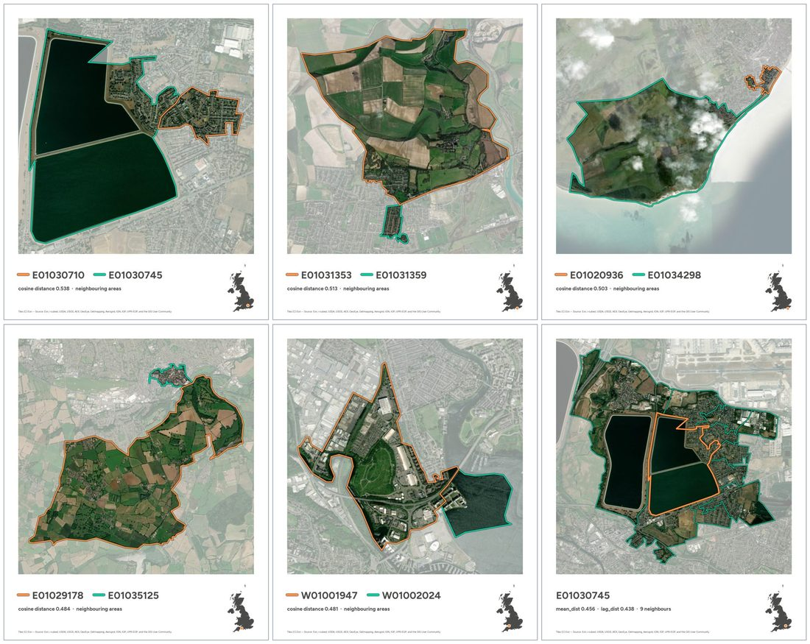<figcaption>Claude looked at <code>pairsheet.png</code></figcaption></figure>
<div class="reply">
<p>The refactor works: the pair cards come out right, and the original area card (bottom-right) is unchanged. Logging this and sending you the pair cards:</p>
</div>
<details class="steps"><summary><b>2 steps</b> · Log pairs section and template refactor · Send files to the user</summary><details class="tool"><summary><span class="tool-name">Bash</span> Log pairs section and template refactor</summary><pre class="tool-in">cat &gt;&gt; LOG.md &lt;&lt;'EOF'

## 2026-11-04 — Pairs section + pair Polaroid cards

New section "Most dissimilar neighbouring pairs": one row per pair (`area_a &lt; area_b`), 136,233 pairs. In the raw top 20,
the reservoir `E01030745` appears 7 times (only 32 distinct areas). **Distinct pairs**: go down the ranking and skip any pair
that shares an area with a pair already chosen. Top 5: E01030710–E01030745 (0.538), E01031353–E01031359 (0.513),
E01020936–E01034298 (0.503), E01029178–E01035125 (0.484), W01001947–W01002024 (0.481).

**Template refactor:** generic `polaroid(layers, title, subtitle, locate)` (layers = list of (gdf, colour, lw), which set the frame
and stay unwashed; a title item with a colour gets a short bar in that colour before it). `plot_focal(code)` (unchanged look)
and new `plot_pair(a, b)` (A orange, B green, both 2.4 pt; caption "A ▬ B ▬" + cosine distance) are thin wrappers. Exports:
`figures/pair_&lt;a&gt;_&lt;b&gt;.png`.

Observations: most top pairs are again a strong contrast between built-up and open land (housing vs reservoir, village vs
farmland, coastal town vs farmed headland, industrial/retail vs open water). In one card (E01020936–E01034298) Esri's imagery
has **clouds**; Esri's imagery is a recent mosaic, not the 2024 imagery the embeddings were built from. In some pairs one area
is tiny relative to the other (e.g. E01035125).
EOF
echo ok</pre><pre class="tool-out">ok</pre></details><details class="tool"><summary><span class="tool-name">SendUserFile</span> Send files to the user</summary><pre class="tool-in">figures/pair_E01030710_E01030745.png
figures/pair_E01031353_E01031359.png
figures/pair_E01020936_E01034298.png
figures/pair_E01029178_E01035125.png
figures/pair_W01001947_W01002024.png

Top 5 distinct neighbouring pairs as Polaroid cards (A orange, B green)</pre><pre class="tool-out">5 files delivered to user.
  figures/pair_E01030710_E01030745.png → file_uuid: c18658c4-856c-43e8-b429-60e06c39cc7d
  figures/pair_E01031353_E01031359.png → file_uuid: bec8e147-b285-4001-a934-b4f203aa1c72
  figures/pair_E01020936_E01034298.png → file_uuid: 756a9955-33d7-47d9-a40c-bc992ee2add1
  figures/pair_E01029178_E01035125.png → file_uuid: 8dae6145-a14c-4943-9dac-252b93f1c54b
  figures/pair_W01001947_W01002024.png → file_uuid: 0ae8bc28-19a3-460c-ada4-a93cbcd823a3</pre></details></details><figure class="sent figure"><div class="sent-row">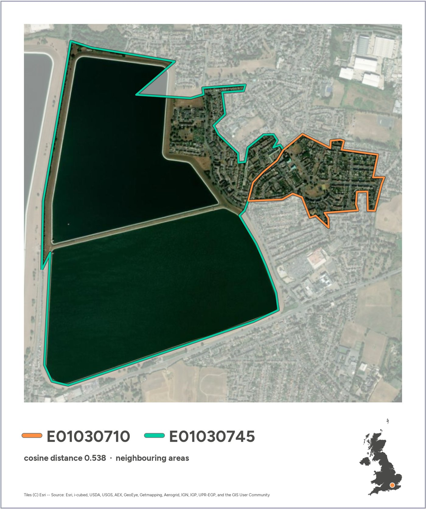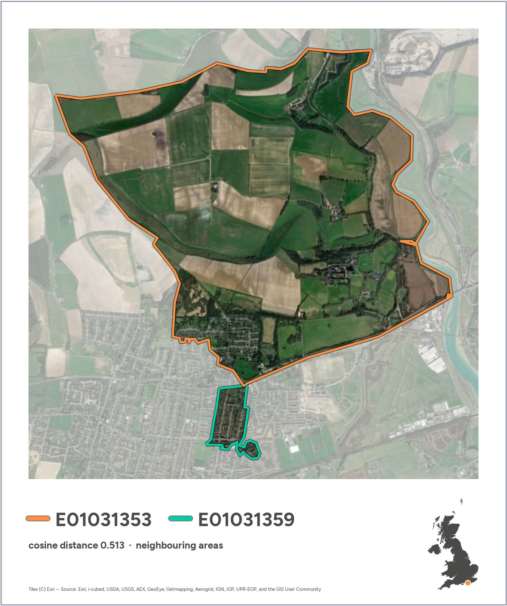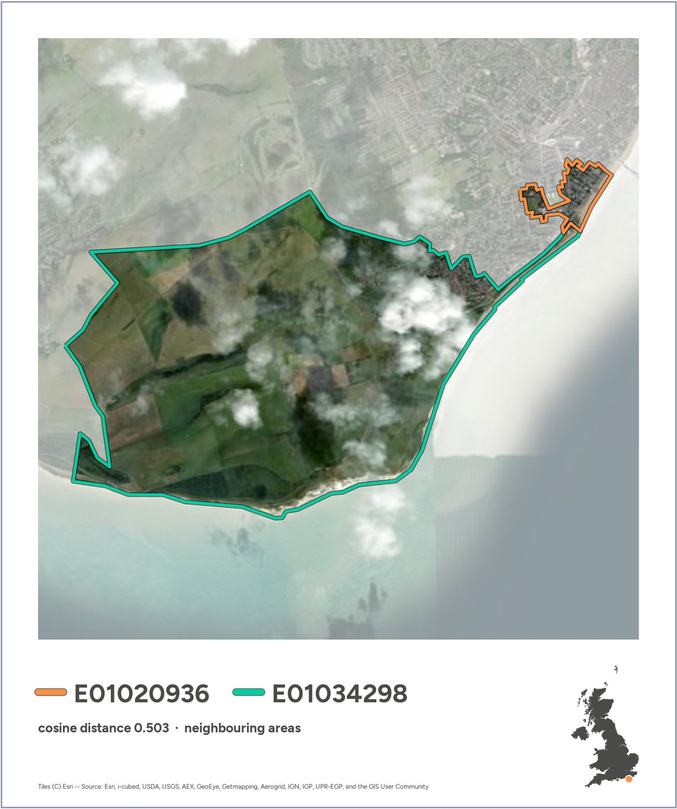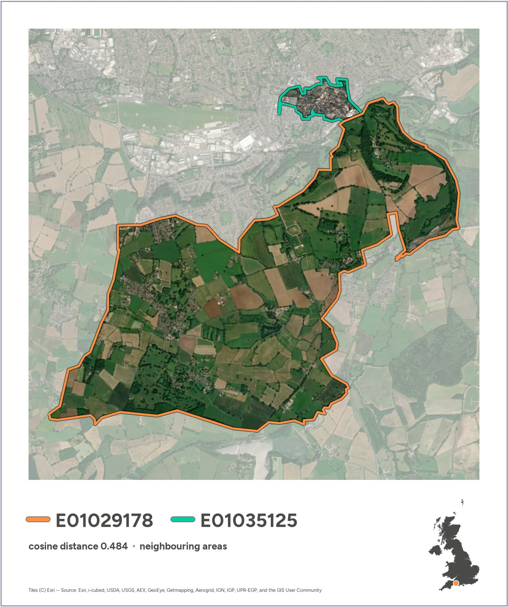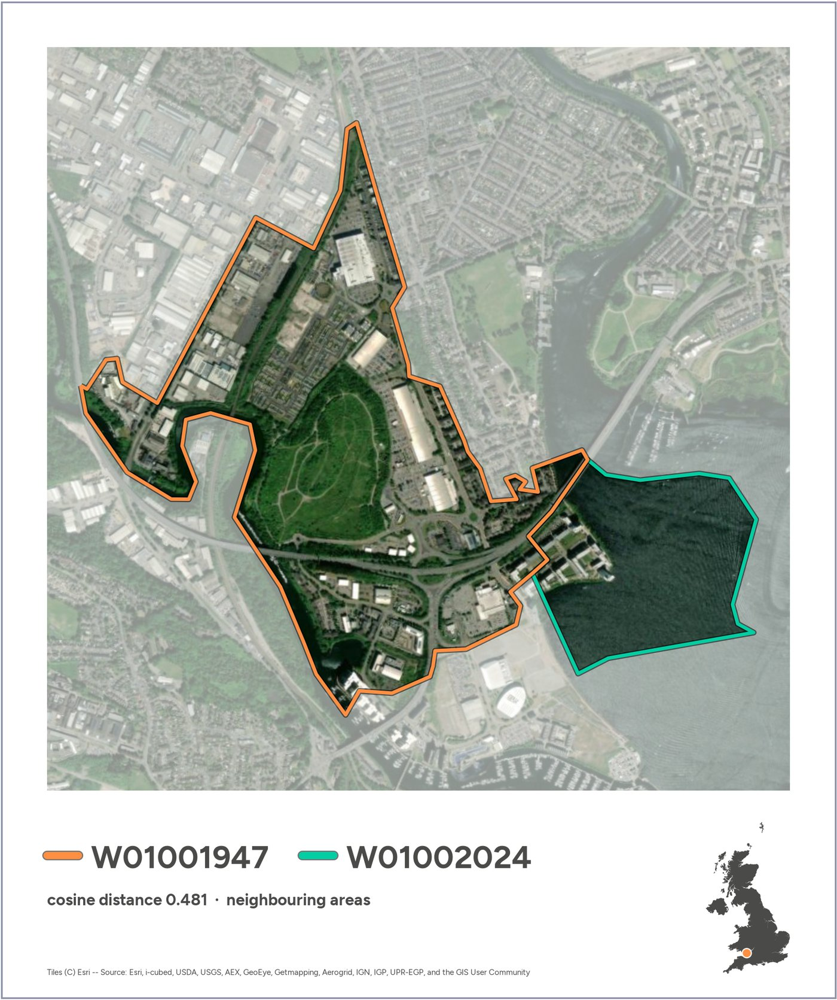</div><figcaption>Sent to the user: pair_E01030710_E01030745.png, pair_E01031353_E01031359.png, pair_E01020936_E01034298.png, pair_E01029178_E01035125.png, pair_W01001947_W01002024.png</figcaption></figure>
<div class="reply">
<p>The Polaroid template now handles pairs as well as single areas. I’ve made cards for the top 5 distinct pairs, saved them in <code>figures/</code> as <code>pair_&lt;a&gt;_&lt;b&gt;.png</code>, and sent them to you. The whole notebook reruns cleanly.</p>
<p><strong>How the template works now:</strong> one general function, <code>polaroid()</code>, draws the card, and two short functions use it:</p>
<ul>
<li><p><strong><code>plot_focal(code)</code>:</strong> the area cards, which look exactly as before.</p></li>
<li><p><strong><code>plot_pair(a, b)</code>:</strong> area A outlined in orange, area B in green, both at the same line weight. The frame fits just the two areas, and everything else is washed out. In the caption, each code is preceded by a short bar in its outline colour, so the text stays Imago Grey and you can still tell which area is which. The subtitle gives the cosine distance.</p></li>
</ul>
<p><strong>Choosing distinct pairs:</strong> we go down the ranking and skip any pair that shares an area with a pair already chosen, so the reservoir appears only once.</p>
<div class="line-block">| Pair (A orange / B green) | Distance | What’s there |</div>
<p>|—|—|—|—|</p>
<div class="line-block">1 | E01030710 / E01030745 | 0.538 | housing estate next to the reservoir |</div>
<div class="line-block">2 | E01031353 / E01031359 | 0.513 | large farmed area next to a small strip of housing |</div>
<div class="line-block">3 | E01020936 / E01034298 | 0.503 | dense coastal town next to a farmed headland |</div>
<div class="line-block">4 | E01029178 / E01035125 | 0.484 | farmland next to a compact town centre |</div>
<div class="line-block">5 | W01001947 / W01002024 | 0.481 | industrial and retail land next to open water |</div>
<p>The “What’s there” column is my reading of the imagery; I haven’t checked the place names.</p>
<p><strong>What I noticed:</strong></p>
<ul>
<li><p><strong>Built-up versus open land again:</strong> every top pair pits built-up land against open land (water or farmland). That’s the strongest signal in the embeddings, so it’s expected, but the result is a bit one-note. Excluding pairs that involve water, or looking at mid-ranked pairs, could surface more varied contrasts.</p></li>
<li><p><strong>Clouds in pair 3:</strong> Esri’s tiles are a recent mosaic, not the 2024 imagery the embeddings were built from, so the photos can differ from what the model saw (clouds, newer construction).</p></li>
<li><p><strong>Small areas get lost:</strong> in pair 4 the green area is small next to its huge neighbour, so its outline is hard to spot. A minimum on-card size for the smaller area, or a tighter frame around the shared border, would help.</p></li>
</ul>
<p><code>LOG.md</code> has an entry covering the pairs section, the template change and these points.</p>
</div>
<div class="note prompt" id="p-34"><div class="note-meta"><a href="#p-34">#34</a> · Wed 4 Nov, 22:19</div><div class="note-text">OK two ideas to try to find more interesting “Polaroids”:<br><br>1. Restrict the search within the bounds of specific cities (e.g., London, Liverpool). That way, the chances of countryside vs urban are lower<br><br>2. Try a different approach:<br>    a. Cluster all the LSOAs in a bunch of similar groups with say K-means (e.g., k=100)<br>    b. Explore if those clusters capture features or items (e.g., industrial, residential, agriculture, different mixes)<br>    c. Then set up the search for different neighborhoods at the cluster level (e.g., what is the industrial estate next the most different landscape?)<br><br>what do you think?</div></div>
<div class="reply">
<p>Both ideas are worth trying, and they combine well: the clusters give us a vocabulary of land types, and the city filter narrows where we look. I’d start with idea 2, because it needs no extra data and directly tackles the “built-up versus open land every time” problem.</p>
<p><strong>Idea 1: restrict to cities</strong></p>
<ul>
<li><p><strong>Pros:</strong> cheap once we have boundaries, and it should surface urban contrasts: a park against dense terraces, docks against housing, a rail yard against a housing estate.</p></li>
<li><p><strong>Needs city boundaries, which we don’t have.</strong> Options:</p>
<ul>
<li><strong>Recommended:</strong> the ONS lookup from areas to local authorities, which lets us filter on, say, the 33 London boroughs or Liverpool. Scotland and Northern Ireland have their own equivalent lookups.</li>
<li><strong>More precise:</strong> ONS built-up area polygons, which match where a city physically ends rather than its administrative edge.</li>
<li><strong>Quickest:</strong> a radius around each city centre. No download, but crude.</li>
</ul></li>
<li><p><strong>Caveat:</strong> cities contain parks, reservoirs and rivers, so built-up-versus-open contrasts won’t disappear. They’ll just be urban ones. The reservoir isn’t technically in London: it’s in Spelthorne, just outside it.</p></li>
</ul>
<p><strong>Idea 2: cluster, then search at the cluster level</strong></p>
<ul>
<li><p><strong>a. Clustering:</strong> k-means with k=100 on the 64-band embeddings takes seconds at this size. I’d first scale each vector to length 1. That makes k-means effectively cluster by cosine similarity, matching the distance we’ve used so far.</p></li>
<li><p><strong>b. Interpreting clusters:</strong> there’s no land-cover label to check against, so interpretation has to be visual. For each cluster, I’d make a contact sheet of satellite thumbnails of its 9 most typical areas, which suits the Polaroid theme.</p>
<ul>
<li><strong>Labelling 100 by eye is a lot of work.</strong> I’d also merge the 100 clusters into about 10–15 families, using Ward clustering on their centres, so we can label families first and drill in where it matters.</li>
<li><strong>My labels would be guesses</strong> read from the imagery, so you’d want to sanity-check them.</li>
</ul></li>
<li><p><strong>c.&nbsp;Searching by cluster:</strong> this is where it gets interesting. Two ways:</p>
<ul>
<li><strong>One example per contrast type:</strong> label every neighbouring pair by its two clusters, then keep only the most extreme pair for each cluster combination. The final ranking then spans different kinds of contrast instead of 20 variations on housing next to water. “The industrial estate next to the most different landscape” is a filter on this: pairs where one side is an industrial-looking cluster, ranked by distance.</li>
<li><strong>Surprising neighbours:</strong> count how often each pair of clusters actually sits side by side, compared with chance. Clusters that are adjacent less often than expected, or never, point to unusual juxtapositions, which is a different notion of “interesting” from raw distance.</li>
</ul></li>
<li><p><strong>Caveat:</strong> two-thirds of the areas are English LSOAs, mostly urban, so many of the 100 clusters will be shades of residential. That’s fine, as it’s exactly what we need to tell urban types apart.</p></li>
</ul>
<p><strong>Proposed order:</strong></p>
<ol type="1">
<li><p>A new section, <strong>Clustering the embeddings</strong>: k-means at k=100 (with a quick check of a few other values of k), the cluster families, and contact sheets for each family.</p></li>
<li><p>You review the contact sheets and we agree labels.</p></li>
<li><p>A cluster-level search, showing one example per contrast type plus the surprising-neighbours view, then cards.</p></li>
<li><p>Idea 1 as a filter on top, once we pick a boundary source and a list of cities.</p></li>
</ol>
<p>Two questions before I start: is k=100 fixed, or should I compare a few values first? And for idea 1 later, which cities do you want, and should I use the local-authority lookup?</p>
</div>
<div class="note prompt" id="p-35"><div class="note-meta"><a href="#p-35">#35</a> · Wed 4 Nov, 22:22</div><div class="note-text">I said 100 randomly, do you think a different number might be best to start with?</div></div>
<div class="reply">
<p>My instinct is fewer clusters, around 15–25, because we’ll be labelling them by eye. I’ll run a quick scan over a range of k in the scratchpad to see whether the data suggests anything:</p>
</div>
<details class="steps"><summary><b>1 step</b> · Scan k-means over k: inertia, silhouette, sizes</summary><details class="tool"><summary><span class="tool-name">Bash</span> Scan k-means over k: inertia, silhouette, sizes</summary><pre class="tool-in">cat &gt; scratchpad/kscan.py &lt;&lt;'EOF'
import time, numpy as np, geopandas as gpd, pyogrio
from sklearn.cluster import KMeans
from sklearn.metrics import silhouette_score
df = pyogrio.read_dataframe("data/extracted-lsoa-geopackage_2024_output.gpkg", read_geometry=False)
X = df[[c for c in df.columns if c.startswith("band")]].to_numpy()
X = X / np.linalg.norm(X, axis=1, keepdims=True)
rng = np.random.default_rng(0); sample = rng.choice(len(X), 10_000, replace=False)
print(" k   inertia  silhouette  smallest  largest  secs")
for k in [5, 8, 10, 15, 20, 25, 30, 40, 50, 75, 100]:
    t = time.time()
    km = KMeans(k, n_init=3, random_state=0).fit(X)
    sil = silhouette_score(X[sample], km.labels_[sample], metric="cosine")
    sizes = np.bincount(km.labels_)
    print(f"{k:3d} {km.inertia_:9.1f} {sil:10.3f} {sizes.min():9d} {sizes.max():8d} {time.time()-t:5.1f}")
EOF
python -I scratchpad/kscan.py 2&gt;&amp;1 | grep -v PROJ</pre><pre class="tool-out">k   inertia  silhouette  smallest  largest  secs
  5    3534.4      0.290      5491    13410   5.5
  8    2874.7      0.275      2955    10559   4.9
 10    2692.0      0.253      2768     9406   4.2
 15    2391.0      0.225      1550     5492   4.2
 20    2199.4      0.214       835     3584   5.5
 25    2063.8      0.209       711     3253   4.0
 30    1969.7      0.192       562     2582   4.5
 40    1838.4      0.178       315     1877   4.3
 50    1735.9      0.176        89     1724   4.4
 75    1572.0      0.157        72     1039   5.5
100    1474.6      0.148        67      883   5.8</pre></details></details>
<div class="reply">
<p>The data doesn’t point to a natural number, so the choice comes down to what we’ll do with the clusters. I’d start with <strong>k=20</strong>.</p>
<p><strong>Scan results</strong> (all 46,844 areas, vectors scaled to length 1, about 5 s per k):</p>
<div class="line-block">k | silhouette | smallest cluster | largest cluster |</div>
<p>|—|—|—|—|</p>
<div class="line-block">5 | 0.29 | 5,491 | 13,410 |</div>
<div class="line-block">10 | 0.25 | 2,768 | 9,406 |</div>
<div class="line-block">20 | 0.21 | 835 | 3,584 |</div>
<div class="line-block">30 | 0.19 | 562 | 2,582 |</div>
<div class="line-block">50 | 0.18 | <strong>89</strong> | 1,724 |</div>
<div class="line-block">100 | 0.15 | 67 | 883 |</div>
<p>Silhouette measures how well separated the clusters are, from −1 to 1, with higher better.</p>
<p><strong>What this says:</strong></p>
<ul>
<li><p><strong>No natural number of clusters:</strong> silhouette falls steadily as k grows, with no peak and no elbow. The embeddings form continuous gradients (rural → suburban → dense urban), so any k is a way of slicing a continuum. Statistics won’t settle it; interpretability should.</p></li>
<li><p><strong>Rare land types appear somewhere between k=40 and k=50:</strong> the smallest cluster drops from 315 areas to 89. A tiny cluster at higher k is likely a rare type such as water, airports, quarries or large industrial sites. Those rare types are exactly what makes a contrast interesting, so we shouldn’t lose them entirely.</p></li>
</ul>
<p><strong>Why k=20:</strong></p>
<ul>
<li><p><strong>Labelling is feasible:</strong> 20 clusters can be checked by eye in an afternoon. At 100 we’d be guessing.</p></li>
<li><p><strong>The contrast types stay manageable:</strong> 20 clusters give 190 possible pairs of cluster types, few enough to browse. 100 give 4,950.</p></li>
<li><p><strong>Every cluster is substantial,</strong> with at least 835 areas, so each label describes something common.</p></li>
</ul>
<p><strong>To keep the rare types,</strong> I’d also fit k=50 and record each area’s k=50 cluster alongside its k=20 one. We label the 20 broad groups, and the small k=50 clusters show up as named rarities (“water”, “airport”) that we can label separately. That gives broad groups for the overall structure and fine clusters for the unusual places. It’s simpler than the merge-100-clusters-into-families idea I suggested before.</p>
<p>If you agree, I’ll start the <strong>Clustering the embeddings</strong> section with k=20 (plus the k=50 detail), including this scan and contact sheets of typical areas per cluster for us to label.</p>
</div>
<div class="note prompt" id="p-36"><div class="note-meta"><a href="#p-36">#36</a> · Wed 4 Nov, 22:23</div><div class="note-text">OK log this exploration and lets move its development to a second notebook. To make sure we rely on the same tooling, is the Polaroid template, etc. In a separate .py file that can be used across notebooks? If not, make it so</div></div>
<div class="reply">
<p>I’ll do this in three steps:</p>
<ol type="1">
<li><p>Log the k scan.</p></li>
<li><p>Move the shared tooling into a module, <code>gdsl30dmc_tools.py</code>: data loading, the contiguity graph, the UK outline (cached to disk so it’s built once), and the Polaroid cards.</p></li>
<li><p>Point notebook 1 at the module and start notebook 2.</p></li>
</ol>
</div>
<details class="steps"><summary><b>2 steps</b> · Log k-scan exploration and decisions · Write gdsl30dmc_tools.py</summary><details class="tool"><summary><span class="tool-name">Bash</span> Log k-scan exploration and decisions</summary><pre class="tool-in">cat &gt;&gt; LOG.md &lt;&lt;'EOF'

## 2026-11-04 — Ideas for more interesting cards + choosing k

Pair cards were one-note (built-up vs open land every time). Two ideas: (1) restrict the search to cities (needs boundaries:
ONS area→local-authority lookup recommended, or built-up-area polygons); (2) cluster the embeddings, interpret the clusters
visually, then search at cluster level (top pair per cluster combination, and "surprising neighbours", i.e. cluster pairs adjacent
less often than chance). Plan: do (2) first, then (1) as a filter on top.

**k scan** (k-means on vectors scaled to length 1, i.e. clustering by cosine similarity; all 46,844 areas; n_init=3; silhouette on a 10k sample, cosine; ~5 s per k):

| k | silhouette | smallest | largest |
|---|---|---|---|
| 5 | 0.290 | 5,491 | 13,410 |
| 10 | 0.253 | 2,768 | 9,406 |
| 15 | 0.225 | 1,550 | 5,492 |
| 20 | 0.214 | 835 | 3,584 |
| 30 | 0.192 | 562 | 2,582 |
| 40 | 0.178 | 315 | 1,877 |
| 50 | 0.176 | 89 | 1,724 |
| 100 | 0.148 | 67 | 883 |

Silhouette falls steadily with no peak or elbow: the embeddings form continuous gradients, so k is a choice about interpretability, not a
statistical answer. Very small clusters appear between k=40 and k=50, probably rare land types (water, airports, quarries).
**Decision: k=20** for labelling (190 cluster pairs, all clusters ≥835 areas), and also record each area's k=50 cluster to keep the rare types.
Development moves to a second notebook, `gdsl30dmc_clusters.ipynb`; shared tooling moved to `gdsl30dmc_tools.py`.
EOF
echo ok</pre><pre class="tool-out">ok</pre></details><details class="tool"><summary><span class="tool-name">Write</span> Write gdsl30dmc_tools.py</summary><pre class="tool-in">"""Shared tooling for the #30DayMapChallenge Day 10 notebooks.

Data loading and contiguity for Imago's small-area AlphaEarth embeddings, plus the Imago-styled
Polaroid cards (satellite photo of highlighted areas, caption strip, UK locator).
"""
from pathlib import Path

import contextily as cx
import geopandas as gpd
import matplotlib.pyplot as plt
import numpy as np
import pandas as pd
import shapely
from libpysal import graph
from matplotlib import font_manager
from matplotlib import patheffects as pe
from matplotlib.lines import Line2D
from matplotlib.patches import Rectangle

ROOT = Path(__file__).resolve().parent
DATA_DIR = ROOT / "data"
FIG_DIR = ROOT / "figures"
FONT_DIR = ROOT / "fonts"

# --- Data ---------------------------------------------------------------------------------------


def load_areas(year=2024):
    """Small areas (LSOAs / Data Zones / SDZs) with their 64 mean embedding bands, indexed by area code."""
    areas = gpd.read_file(DATA_DIR / f"extracted-lsoa-geopackage_{year}_output.gpkg")
    return areas.set_index("data_zone_code")


def band_columns(areas):
    return [c for c in areas.columns if c.startswith("band")]


def nation(areas):
    """First letter of the area code: E(ngland), W(ales), S(cotland), N(orthern Ireland)."""
    return pd.Series(areas.index.str[0], index=areas.index)
[… truncated]</pre><pre class="tool-out">File created successfully at: gdsl30dmc_tools.py (file state is current in your context — no need to Read it back)</pre></details></details>
<div class="reply">
<p>Now I’ll point notebook 1’s mapping section at the module, removing the code that was duplicated there:</p>
</div>
<details class="steps"><summary><b>3 steps</b> · Rewire notebook 1 to shared module, back up figures · Rerun notebook 1 and compare cards to before · …</summary><details class="tool"><summary><span class="tool-name">Bash</span> Rewire notebook 1 to shared module, back up figures</summary><pre class="tool-in">nb cell update gdsl30dmc.ipynb -c 2373a922-8a0b-4e25-bc6d-77fabcb74282 --source - &gt;/dev/null &lt;&lt;'EOF'
## Mapping the most dissimilar areas

Each area becomes a Polaroid-style card. A square satellite photo (Esri imagery, no API key needed) shows the focal area outlined in orange and its neighbours in green, with everything outside them washed out towards white. Below it, a caption strip carries the area code and its scores in bold [Figtree](https://github.com/erikdkennedy/figtree), Imago's brand font, plus a UK silhouette locating the area. Colours follow [Imago](https://imago.ac.uk)'s brand palette: Orange `#FF8F42`, Green `#03CEA3`, and Imago Grey `#4A4A49` for the text and the UK silhouette.

The card template, the UK silhouette and the export helper live in `gdsl30dmc_tools.py`, shared with the other notebooks. The silhouette is built by merging each nation's areas, using GEOS's fast `coverage_union` where the polygons tile cleanly, then simplifying. It takes about 25 s and is cached to `data/uk_outline.parquet`, so it's only built once.
EOF
nb cell update gdsl30dmc.ipynb -c bc9b65d0-4128-406f-9596-1e42fe2e5544 --source - &gt;/dev/null &lt;&lt;'EOF'
%%time
import gdsl30dmc_tools as tools

uk_outline = tools.uk_outline(lsoas)
EOF
nb cell update gdsl30dmc.ipynb -c ac41a997-58c3-40b6-867b-af632ffe7710 --source - &gt;/dev/null &lt;&lt;'EOF'
def plot_focal(code):
    """Card for area `code` (orange) and its neighbours (green), captioned with its neighbourhood scores."""
    s = neighbourhood.loc[code]
    subtitle = f"mean_dist {s.mean_dist:.3f}  ·  lag_dist {s.lag_dist:.3f}  ·  {g.cardinalities[code]} neighbours"
    return tools.area_card(lsoas, code, g.neighbors[code], subtitle, uk_outline)


def plot_pair(a, b):
    """Card for neighbouring areas `a` (orange) and `b` (green), captioned with their cosine distance."""
    subtitle = f"cosine distance {g_dist.adjacency.loc[(a, b)]:.3f}  ·  neighbouring areas"
    return tools.pair_card(lsoas, a, b, subtitle, uk_outline)
EOF
nb cell update gdsl30dmc.ipynb -c bbdfde88-53a2-4d9d-b042-831cb8f00325 --source - &gt;/dev/null &lt;&lt;'EOF'
### Exporting the cards

Cards are saved to `figures/` at 200 dpi with `tools.export_card`, keeping the full white border and caption strip. It doesn't use `bbox_inches="tight"`, which would trim the Polaroid margins.
EOF
nb cell update gdsl30dmc.ipynb -c 9a492e5c-2426-4b86-903e-b55ef7b9b58e --source - &gt;/dev/null &lt;&lt;'EOF'
export_card = tools.export_card
export_card(fig, top)
EOF
nb cell update gdsl30dmc.ipy
[… truncated]</pre><pre class="tool-out"># No matches found for pattern: shapely\.|pe\.|cx\.</pre></details><details class="tool"><summary><span class="tool-name">Bash</span> Rerun notebook 1 and compare cards to before</summary><pre class="tool-in">time nb execute gdsl30dmc.ipynb --timeout 300 2&gt;&amp;1 | tail -2; nb read gdsl30dmc.ipynb -c bc9b65d0-4128-406f-9596-1e42fe2e5544 | grep -A3 stream; ls -la data/uk_outline.parquet; python -I -c "
from PIL import Image, ImageChops
import glob, os
for p in sorted(glob.glob('figures/*.png')):
    a = Image.open(p).convert('RGB'); b = Image.open('scratchpad/before/' + os.path.basename(p)).convert('RGB')
    d = ImageChops.difference(a, b).getbbox()
    print(os.path.basename(p), a.size == b.size, 'identical' if d is None else f'differs in {d}')"</pre><pre class="tool-out">@@output {"mime":"image/png","output_type":"display_data","path":"/tmp/nb-cli/gdsl30dmc/511aea73fc2f5399.png"}

real    1m27.451s
user    1m18.533s
sys 0m4.478s
@@output {"name":"stdout","output_type":"stream"}
```text
CPU times: user 25.7 s, sys: 510 ms, total: 26.2 s
Wall time: 26.2 s
-rw-r--r-- 1 jovyan users 75679 Nov  4 22:26 data/uk_outline.parquet
E01026177.png True identical
E01030745.png True identical
N20002748.png True identical
N20003012.png True identical
W01001286.png True identical
pair_E01020936_E01034298.png True identical
pair_E01029178_E01035125.png True identical
pair_E01030710_E01030745.png True identical
pair_E01031353_E01031359.png True identical
pair_W01001947_W01002024.png True identical</pre></details><details class="tool"><summary><span class="tool-name">Bash</span> Create clusters notebook with setup and data cells</summary><pre class="tool-in">nb create gdsl30dmc_clusters.ipynb --kernel gds --markdown &gt;/dev/null &amp;&amp; nb cell update gdsl30dmc_clusters.ipynb -i 0 --source - &gt;/dev/null &lt;&lt;'EOF'
# #30DayMapChallenge — Day 10: clustering the embeddings

The first notebook (`gdsl30dmc.ipynb`) found the UK's most dissimilar neighbouring small areas, but the top results were nearly always built-up land against open land. Here we cluster the 2024 AlphaEarth embeddings into groups of similar areas, interpret the groups visually, and then search for contrasts between *types* of place, e.g. the industrial estate next to the most different landscape. Shared data loading, contiguity and Polaroid cards come from `gdsl30dmc_tools.py`.
EOF
nb cell add gdsl30dmc_clusters.ipynb --source - &lt;&lt;'EOF'
@@markdown
## Setup

Libraries for this notebook: `scikit-learn` for k-means and silhouette scores, plus the shared `gdsl30dmc_tools` module. `autoreload` picks up edits to the module without restarting the kernel.
@@code
%load_ext autoreload
%autoreload 2

import numpy as np
import pandas as pd
import matplotlib.pyplot as plt
from sklearn.cluster import KMeans
from sklearn.metrics import silhouette_score

import gdsl30dmc_tools as tools
@@markdown
## Reading data

We load the 2024 areas and build the same neighbour graph as in the first notebook: fuzzy contiguity, which is queen contiguity plus the overlapping England–Scotland border pairs. We drop the 12 island areas with no neighbours. Each embedding vector is scaled to length 1, so that k-means, which works with Euclidean distance, effectively groups areas by cosine similarity, the same measure used in the first notebook.
@@code
%%time
YEAR = 2024
lsoas = tools.load_areas(YEAR)
g = tools.contiguity(lsoas)
lsoas, g = tools.drop_isolates(lsoas, g)

emb = np.ascontiguousarray(lsoas[tools.band_columns(lsoas)].to_numpy())
emb_unit = emb / np.linalg.norm(emb, axis=1, keepdims=True)
uk_outline = tools.uk_outline(lsoas)

print(f"{len(lsoas):,} areas | {g.n_edges:,} links | embeddings {emb_unit.shape}")
EOF
nb execute gdsl30dmc_clusters.ipynb --timeout 300 2&gt;&amp;1 | tail -1; nb read gdsl30dmc_clusters.ipynb --cell-index -1 | sed -n '/@@output/,$p' | grep -v PROJ</pre><pre class="tool-out">Added 4 cells to: gdsl30dmc_clusters.ipynb
  Cell ID: 358c156c-fba8-4d90-9917-ef1fb182526e (type: markdown, index: 1)
  Cell ID: b7df7304-99d3-4186-b97f-6b78a5754693 (type: code, index: 2)
  Cell ID: 5943672f-b4f4-4c35-8c29-78f00953f3f7 (type: markdown, index: 3)
  Cell ID: 14136843-3602-4d7a-b800-5b9290235279 (type: code, index: 4)
Total cells: 5
```
@@output {"name":"stdout","output_type":"stream"}
```text
46,832 areas | 272,466 links | embeddings (46832, 64)
CPU times: user 5.74 s, sys: 171 ms, total: 5.91 s
Wall time: 5.93 s

```</pre></details></details>
<div class="reply">
<p>The counts match notebook 1 (46,832 areas, 272,466 links). Now the k scan, recorded properly in the notebook:</p>
</div>
<details class="steps"><summary><b>3 steps</b> · Add k-scan section to notebook 2 and execute · Correct k-scan interpretation in notebook and log · …</summary><details class="tool"><summary><span class="tool-name">Bash</span> Add k-scan section to notebook 2 and execute</summary><pre class="tool-in">nb cell add gdsl30dmc_clusters.ipynb --source - &lt;&lt;'EOF'
@@markdown
## Choosing the number of clusters

Before fixing k, we fit k-means for a range of values and record two things: the silhouette score (how well separated the clusters are, from −1 to 1, computed with cosine distance on a 10,000-area sample) and the size of the smallest cluster. There's no single right k here: the aim is a number of groups we can label by eye that still keeps rare land types visible.
@@code
%%time
KS = [5, 8, 10, 15, 20, 25, 30, 40, 50, 75, 100]
sample = np.random.default_rng(0).choice(len(emb_unit), 10_000, replace=False)

rows = []
for k in KS:
    labels = KMeans(k, n_init=3, random_state=0).fit_predict(emb_unit)
    sizes = np.bincount(labels)
    rows.append({"k": k, "silhouette": silhouette_score(emb_unit[sample], labels[sample], metric="cosine"),
                 "smallest": sizes.min(), "largest": sizes.max()})
k_scan = pd.DataFrame(rows).set_index("k")
k_scan.round(3)
@@code
fig, (ax1, ax2) = plt.subplots(1, 2, figsize=(11, 3.5))
k_scan["silhouette"].plot(ax=ax1, marker="o", color=tools.IMAGO["navy"])
ax1.set_ylabel("Silhouette (cosine)")
k_scan["smallest"].plot(ax=ax2, marker="o", color=tools.IMAGO["orange"], logy=True)
ax2.set_ylabel("Smallest cluster (areas, log scale)")
for ax in (ax1, ax2):
    ax.axvline(20, color=tools.IMAGO["dark_grey"], ls="--", lw=0.8)
    ax.set_xlabel("k")
fig.tight_layout()
@@markdown
Silhouette falls steadily as k grows, with no peak or elbow: the embeddings form continuous gradients (rural → suburban → dense urban) rather than separate clumps, so any k slices a continuum. Very small clusters first appear between k=40 and k=50, which likely marks rare land types (water, airports, quarries) splitting off. We therefore use **k=20** to label the main groups (190 possible pairs of cluster types, every cluster with several hundred areas or more) and also record each area's **k=50** cluster, to keep the rare types visible.
EOF
nb execute gdsl30dmc_clusters.ipynb --timeout 300 2&gt;&amp;1 | tail -1; S=scratchpad/; rm -rf $S/nbout; nb read gdsl30dmc_clusters.ipynb --cell-index 6 | sed 's/&lt;[^&gt;]*&gt;//g' | grep -E '^\s*[0-9.]+\s*$' | tr -d ' ' | paste - - - - ; nb read gdsl30dmc_clusters.ipynb --cell-index 7 --output-dir $S/nbout | grep path</pre><pre class="tool-out">Added 4 cells to: gdsl30dmc_clusters.ipynb
  Cell ID: 3accb177-98a1-4393-a7f1-b97737bb706c (type: markdown, index: 5)
  Cell ID: 1e435c10-3ab8-465e-b09d-422e0eebafb9 (type: code, index: 6)
  Cell ID: 43ee03ab-167f-4b31-b97e-f2ce08d86e85 (type: code, index: 7)
  Cell ID: 61d8a121-fce2-4812-b99b-ca3abb92049d (type: markdown, index: 8)
Total cells: 9
Silhouette falls steadily as k grows, with no peak or elbow: the embeddings form continuous gradients (rural → suburban → dense urban) rather than separate clumps, so any k slices a continuum. Very small clusters first appear between k=40 and k=50, which likely marks rare land types (water, airports, quarries) splitting off. We therefore use **k=20** to label the main groups (190 possible pairs of cluster types, every cluster with several hundred areas or more) and also record each area's **k=50** cluster, to keep the rare types visible.
5   0.287   5459    13471
8   0.269   3459    9432
10  0.244   2562    7845
15  0.225   1544    5494
20  0.212   842 3634
25  0.211   669 3258
30  0.190   514 2534
40  0.181   282 2084
50  0.173   195 1684
75  0.158   72  1137
100 0.145   67  851
@@output {"mime":"image/png","output_type":"display_data","path":"scratchpad/nbout/ba477cc07fedd031.png"}</pre></details><details class="tool"><summary><span class="tool-name">Bash</span> Correct k-scan interpretation in notebook and log</summary><pre class="tool-in">nb cell update gdsl30dmc_clusters.ipynb -c 61d8a121-fce2-4812-b99b-ca3abb92049d --source - &gt;/dev/null &lt;&lt;'EOF'
Silhouette falls steadily as k grows, with no peak or elbow: the embeddings form continuous gradients (rural → suburban → dense urban) rather than separate clumps, so any k slices a continuum. The smallest cluster shrinks steadily too, then drops sharply between k=50 (195 areas) and k=75 (72 areas). That is likely where rare land types (water, airports, quarries) split off. An earlier scratch run, which included the 12 island areas, put this drop between k=40 and k=50, so its exact position is somewhat sensitive. We use **k=20** to label the main groups (190 possible pairs of cluster types, every cluster with at least ~840 areas) and also record a finer level to keep the rare types visible.
EOF
python -I - &lt;&lt;'EOF'
p = "LOG.md"; s = open(p).read()
old = "**Decision: k=20** for labelling (190 cluster pairs, all clusters ≥835 areas), and also record each area's k=50 cluster to keep the rare types."
new = old + """
Re-run in the clusters notebook (isolates dropped, 46,832 areas): k=20 silhouette 0.212, smallest 842; k=40 → 282; **k=50 → 195**;
k=75 → 72; k=100 → 67. So the sharp drop in smallest-cluster size sits between k=50 and k=75 there (the scratch run put it at
40→50, with 89 at k=50): its position is sensitive to the isolates and the random start. The fine level (k=50 vs k=75) is still open."""
assert s.count(old) == 1; open(p, "w").write(s.replace(old, new))
EOF
nb execute gdsl30dmc_clusters.ipynb --timeout 300 2&gt;&amp;1 | tail -1 &gt;/dev/null; echo done</pre><pre class="tool-out">done</pre></details><details class="tool"><summary><span class="tool-name">Read</span> Read scratchpad/nbout/ba477cc07fedd031.png</summary><pre class="tool-in"></pre></details></details><figure class="seen figure">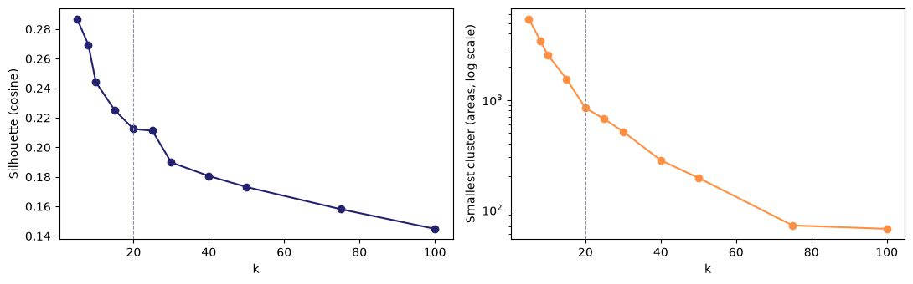<figcaption>Claude looked at <code>ba477cc07fedd031.png</code></figcaption></figure>
<div class="reply">
<p>The shared tooling is now a module that both notebooks use, the second notebook is started, and the k exploration is logged. Both notebooks run end to end.</p>
<p><strong>Shared module:</strong> <code>gdsl30dmc_tools.py</code>, next to the notebooks, now holds:</p>
<ul>
<li><p><strong>Data:</strong> <code>load_areas</code>, <code>band_columns</code>, <code>nation</code>, <code>contiguity</code> (the fuzzy graph) and <code>drop_isolates</code>.</p></li>
<li><p><strong>UK outline:</strong> <code>uk_outline</code>, built once (about 26 s) and cached to <code>data/uk_outline.parquet</code>.</p></li>
<li><p><strong>Cards:</strong> <code>polaroid</code> (the general template), <code>area_card</code>, <code>pair_card</code> and <code>export_card</code>, plus the Imago palette and the Figtree font loading.</p></li>
</ul>
<p><strong>Notebook 1:</strong> its mapping section now calls the module. <code>plot_focal</code> and <code>plot_pair</code> are short functions that just add the captions. I regenerated all 10 cards and they’re pixel-for-pixel identical to before, so nothing changed visually. Both notebooks also load <code>autoreload</code>, so edits to the module apply without restarting the kernel.</p>
<p><strong>Notebook 2:</strong> <code>gdsl30dmc_clusters.ipynb</code> has an intro, <strong>Setup</strong>, <strong>Reading data</strong> (all through the module, with the same 46,832 areas and 272,466 links as notebook 1), and <strong>Choosing the number of clusters</strong>: the k scan as a table and two charts, plus a short interpretation.</p>
<p><strong>Correction to what I told you earlier:</strong> re-run in the notebook (isolated areas dropped, different random start), the sharp drop in the smallest cluster’s size comes between k=50 and k=75 (195 → 72 areas), not between 40 and 50 as in my scratch run. The notebook text says so, and <code>LOG.md</code> records both runs, so the exact point isn’t very stable. The case for k=20 still holds. Silhouette barely changes from k=20 to k=25 (0.212 against 0.211) and then falls, so k=20 is a reasonable level for the main groups.</p>
<p><strong>One decision before I cluster:</strong> for the finer level that keeps rare land types, I suggested k=50 earlier, but k=75 now looks like where they actually split off. My suggestion is k=20 for the main groups plus <strong>k=75</strong> for the rare types. Then the next step is fitting both, followed by contact sheets of typical areas in each k=20 cluster for us to label. Shall I go ahead?</p>
</div>
<div class="note prompt" id="p-37"><div class="note-meta"><a href="#p-37">#37</a> · Wed 4 Nov, 22:31</div><div class="note-text">20 and 100</div></div>
<details class="steps"><summary><b>3 steps</b> · Fit k=20 and k=100, check nesting, execute · Factor imagery helper; add thumbnail and contact sheet · …</summary><details class="tool"><summary><span class="tool-name">Bash</span> Fit k=20 and k=100, check nesting, execute</summary><pre class="tool-in">nb cell add gdsl30dmc_clusters.ipynb --source - &lt;&lt;'EOF'
@@markdown
## Clustering the embeddings

We fit k-means at two levels: **k=20** for the main land types we'll label by eye, and **k=100** for a finer split that should separate rarer types. We use 10 random starts per fit for stability, and number the clusters in each level by size (0 = largest), so the numbering stays meaningful. The labels are saved to `data/clusters_2024.parquet` for reuse.
@@code
%%time
def fit_kmeans(k, seed=0):
    km = KMeans(k, n_init=10, random_state=seed).fit(emb_unit)
    order = np.argsort(-np.bincount(km.labels_))  # old label of the largest cluster first
    relabel = np.empty(k, int)
    relabel[order] = np.arange(k)
    return relabel[km.labels_], km.cluster_centers_[order]

c20, centres20 = fit_kmeans(20)
c100, centres100 = fit_kmeans(100)
clusters = pd.DataFrame({"c20": c20, "c100": c100}, index=lsoas.index)
clusters.to_parquet(tools.DATA_DIR / f"clusters_{YEAR}.parquet")

print("k=20 sizes:", np.bincount(c20).tolist())
print("k=100 sizes: min", np.bincount(c100).min(), "| median", int(np.median(np.bincount(c100))), "| max", np.bincount(c100).max())
@@markdown
### How the two levels nest

k-means fits the two levels independently, so a fine cluster need not sit inside a single coarse one. For each k=100 cluster, we record which k=20 cluster most of its areas belong to and how large that share is. High shares mean the fine level mostly subdivides the coarse one, which makes the two levels easier to read together.
@@code
nest = pd.crosstab(clusters.c100, clusters.c20)
fine = pd.DataFrame({
    "size": nest.sum(axis=1),
    "main_c20": nest.idxmax(axis=1),
    "share": (nest.max(axis=1) / nest.sum(axis=1)).round(2),
})
print("Share of each k=100 cluster inside its main k=20 cluster:")
print(fine["share"].describe().round(2).to_string())
print("\nk=100 clusters per k=20 cluster:")
print(fine.groupby("main_c20").size().to_string())
EOF
nb execute gdsl30dmc_clusters.ipynb --timeout 600 2&gt;&amp;1 | tail -1; for k in -3 -1; do nb read gdsl30dmc_clusters.ipynb --cell-index $k | sed -n '/@@output/,$p' | grep -v '^```\|@@output'; done</pre><pre class="tool-out">Added 4 cells to: gdsl30dmc_clusters.ipynb
  Cell ID: 64e2a334-bff6-45c8-9501-1c07c707463a (type: markdown, index: 9)
  Cell ID: 52533e1d-1aa4-4011-8804-c6228ac3b5aa (type: code, index: 10)
  Cell ID: 30569ac7-689d-467a-9146-f49d1263d2af (type: markdown, index: 11)
  Cell ID: 151e9cef-c98d-4367-811d-9bcf0812ff90 (type: code, index: 12)
Total cells: 13
```
k=20 sizes: [3628, 3338, 3102, 2962, 2856, 2838, 2753, 2738, 2737, 2437, 2354, 2232, 2150, 2070, 2051, 1774, 1461, 1334, 1180, 837]
k=100 sizes: min 71 | median 465 | max 869
CPU times: user 2min 29s, sys: 294 ms, total: 2min 29s
Wall time: 13.4 s

Share of each k=100 cluster inside its main k=20 cluster:
count    100.00
mean       0.67
std        0.22
min        0.21
25%        0.50
50%        0.61
75%        0.86
max        1.00

k=100 clusters per k=20 cluster:
main_c20
0     7
1     8
2     4
3     6
4     6
5     8
6     4
7     5
8     5
9     5
10    6
11    3
12    5
13    3
14    4
15    4
[… truncated]</pre></details><details class="tool"><summary><span class="tool-name">Bash</span> Factor imagery helper; add thumbnail and contact sheet</summary><pre class="tool-in">python -I - &lt;&lt;'EOF'
p = "gdsl30dmc_tools.py"; s = open(p).read()
old_img = '''    # Imagery, reprojected to the layers' CRS, washed out outside the highlighted areas
    bounds = gpd.GeoSeries([shapely.box(x0, y0, x1, y1)], crs=crs).to_crs(3857).total_bounds
    img, ext = cx.bounds2img(*bounds, source=cx.providers.Esri.WorldImagery)
    img, ext = cx.warp_tiles(img, ext, t_crs=crs)
    rgb = img[..., :3] / 255
    h, w = rgb.shape[:2]
    xx, yy = np.meshgrid(np.linspace(ext[0], ext[1], w), np.linspace(ext[3], ext[2], h))
    inside = shapely.contains_xy(areas.union_all(), xx, yy)[..., None]
    rgb = np.where(inside, rgb, rgb * (1 - WASH) + WASH)
'''
new_img = '''    rgb, ext = _washed_imagery((x0, y0, x1, y1), crs, areas.union_all())
'''
helper = '''def _halo(lw):
    return [pe.Stroke(linewidth=lw + 1.6, foreground=(0, 0, 0, 0.55)), pe.Normal()]


def _washed_imagery(frame, crs, keep, wash=WASH):
    """Esri satellite imagery for `frame` (x0, y0, x1, y1 in `crs`), reprojected to `crs` and washed out towards
    white outside the geometry `keep`. Returns an RGB array and its extent."""
    bounds = gpd.GeoSeries([shapely.box(*frame)], crs=crs).to_crs(3857).total_bounds
    img, ext = cx.bounds2img(*bounds, source=cx.providers.Esri.WorldImagery)
    img, ext = cx.warp_tiles(img, ext, t_crs=crs)
    rgb = img[..., :3] / 255
    h, w = rgb.shape[:2]
    xx, yy = np.meshgrid(np.linspace(ext[0], ext[1], w), np.linspace(ext[3], ext[2], h))
    inside = shapely.contains_xy(keep, xx, yy)[..., None]
    return np.where(inside, rgb, rgb * (1 - wash) + wash), ext
'''
old_halo = '''def _halo(lw):
    return [pe.Stroke(linewidth=lw + 1.6, foreground=(0, 0, 0, 0.55)), pe.Normal()]
'''
sheet = '''

# --- Contact sheets ------------------------------------------------------------------------------


def thumbnail(ax, areas, code, pad=0.3, colour=IMAGO["orange"]):
    """Square satellite thumbnail of one area: outlined, with its surroundings washed out."""
[… truncated]</pre><pre class="tool-out">ok</pre></details><details class="tool"><summary><span class="tool-name">Bash</span> Add typical-area contact sheets and execute</summary><pre class="tool-in">nb cell add gdsl30dmc_clusters.ipynb --source - &lt;&lt;'EOF'
@@markdown
## What the clusters look like

To interpret each k=20 cluster, we look at its six most typical areas: those whose embedding is closest (highest cosine similarity) to the cluster centre. Each is shown as a satellite thumbnail with the area outlined and its surroundings washed out. The sheets are saved to `figures/clusters/` so we can review them side by side and agree labels.
@@code
def typical(level_labels, centres, cluster, n=6):
    """Codes of the n areas in `cluster` closest to its centre (cosine similarity)."""
    members = np.flatnonzero(level_labels == cluster)
    centre = centres[cluster] / np.linalg.norm(centres[cluster])
    best = members[np.argsort(-(emb_unit[members] @ centre))[:n]]
    return lsoas.index[best].tolist()

typical20 = {c: typical(c20, centres20, c) for c in range(20)}
@@code
%%time
sheet_dir = tools.FIG_DIR / "clusters"
for c, codes in typical20.items():
    fig = tools.contact_sheet(lsoas, codes, f"k=20 cluster {c} · {np.sum(c20 == c):,} areas")
    tools.export_card(fig, f"c20_{c:02d}", dpi=110, fig_dir=sheet_dir)
    plt.close(fig)
sorted(p.name for p in sheet_dir.glob("c20_*.png"))[:3]
EOF
time nb execute gdsl30dmc_clusters.ipynb --timeout 900 2&gt;&amp;1 | tail -1; ls figures/clusters | wc -l</pre><pre class="tool-out">Added 3 cells to: gdsl30dmc_clusters.ipynb
  Cell ID: e7b6cf6c-98a8-4734-ac8c-89efa23d83d6 (type: markdown, index: 13)
  Cell ID: 13aec78e-a90a-412a-93c8-ac7b4c984884 (type: code, index: 14)
  Cell ID: 5ff16294-ad9d-4820-8666-26f03f01e1bf (type: code, index: 15)
Total cells: 16
```

real    4m9.555s
user    6m55.242s
sys 1m32.045s
20</pre></details></details>
<div class="reply">
<p>All 20 sheets rendered, in about 3.5 minutes of tile fetching. I’ll combine them into five overview images so I can read them all:</p>
</div>
<details class="steps"><summary><b>8 steps</b> · Combine cluster sheets into five overviews · Read scratchpad/overview_0.png · …</summary><details class="tool"><summary><span class="tool-name">Bash</span> Combine cluster sheets into five overviews</summary><pre class="tool-in">python -I - &lt;&lt;'EOF'
from PIL import Image
S = "scratchpad/"
ims = [Image.open(f"figures/clusters/c20_{c:02d}.png").convert("RGB") for c in range(20)]
w, h = ims[0].size
for b in range(5):
    sheet = Image.new("RGB", (2 * w + 30, 2 * h + 30), "white")
    for k, im in enumerate(ims[4 * b: 4 * b + 4]):
        sheet.paste(im, (10 + (k % 2) * (w + 10), 10 + (k // 2) * (h + 10)))
    sheet.save(f"{S}/overview_{b}.png")
print(w, h)
EOF</pre><pre class="tool-out">858 638</pre></details><details class="tool"><summary><span class="tool-name">Read</span> Read scratchpad/overview_0.png</summary><pre class="tool-in"></pre></details><details class="tool"><summary><span class="tool-name">Read</span> Read scratchpad/overview_1.png</summary><pre class="tool-in"></pre></details><details class="tool"><summary><span class="tool-name">Read</span> Read scratchpad/overview_2.png</summary><pre class="tool-in"></pre></details><details class="tool"><summary><span class="tool-name">Read</span> Read scratchpad/overview_3.png</summary><pre class="tool-in"></pre></details><details class="tool"><summary><span class="tool-name">Read</span> Read scratchpad/overview_4.png</summary><pre class="tool-in"></pre></details><details class="tool"><summary><span class="tool-name">Bash</span> Add nation composition per cluster and execute</summary><pre class="tool-in">nb cell add gdsl30dmc_clusters.ipynb --source - &lt;&lt;'EOF'
@@markdown
### Clusters by nation

Some contact sheets show areas from a single nation only (e.g. all Scottish codes). The table below gives the share of each cluster's areas in each nation, alongside the cluster's median area size, so we can see which clusters are tied to one nation.
@@code
by_nation = pd.crosstab(clusters.c20, tools.nation(lsoas), normalize="index").round(2)
by_nation["median_km2"] = (lsoas.area / 1e6).groupby(clusters.c20).median().round(2)
by_nation
EOF
nb execute gdsl30dmc_clusters.ipynb --timeout 900 2&gt;&amp;1 | tail -1 &gt;/dev/null; nb read gdsl30dmc_clusters.ipynb --cell-index -1 | sed 's/&lt;[^&gt;]*&gt;//g' | grep -E '^\s*[0-9.]+\s*$' | tr -d ' ' | paste - - - - - - -</pre><pre class="tool-out">Added 2 cells to: gdsl30dmc_clusters.ipynb
  Cell ID: 4502b341-67d4-4efd-b8a3-f3d157eeae7a (type: markdown, index: 16)
  Cell ID: c97461bf-cba6-4ca4-8689-5e26d7e53529 (type: code, index: 17)
Total cells: 18
0   0.87    0.01    0.02    0.09    0.41    1
0.10    0.29    0.60    0.00    0.15    2   0.99
0.00    0.00    0.01    0.33    3   0.97    0.00
0.00    0.03    0.68    4   0.97    0.00    0.00
0.03    0.32    5   0.08    0.19    0.71    0.01
0.29    6   0.99    0.00    0.00    0.01    0.36
7   0.97    0.00    0.00    0.03    0.26    8
0.95    0.00    0.05    0.00    12.95   9   0.85
0.05    0.06    0.04    0.18    10  0.96    0.00
0.00    0.04    9.22    11  0.32    0.38    0.15
0.16    11.66   12  0.11    0.24    0.65    0.01
0.16    13  0.99    0.00    0.00    0.00    1.13
14  0.63    0.16    0.12    0.09    0.96    15
0.82    0.06    0.11    0.02    0.16    16  0.80
0.07    0.12    0.01    0.18    17  0.77    0.01
0.00    0.21    2.28    18  0.82    0.07    0.10
0.01    0.13    19  0.13    0.13    0.62    0.13
47.11</pre></details><details class="tool"><summary><span class="tool-name">SendUserFile</span> Send files to the user</summary><pre class="tool-in">scratchpad/overview_0.png
scratchpad/overview_1.png
scratchpad/overview_2.png
scratchpad/overview_3.png
scratchpad/overview_4.png

k=20 clusters 0–19: the six most typical areas of each (4 clusters per image)</pre><pre class="tool-out">5 files delivered to user.
  scratchpad/overview_0.png → file_uuid: 021f865d-0dda-4493-a86a-a33d0b39fcf2
  scratchpad/overview_1.png → file_uuid: 55ce9595-4c3a-4bbd-b956-a5d9a8b3331f
  scratchpad/overview_2.png → file_uuid: d7ed810a-b940-49f3-a6fb-3a321f3b59c6
  scratchpad/overview_3.png → file_uuid: cbdf0d9f-739a-40d7-9b3e-1f8eb7f35bdb
  scratchpad/overview_4.png → file_uuid: e2a4c0f5-d444-47f4-bdbf-e636e92f5ab3</pre></details></details><figure class="seen figure">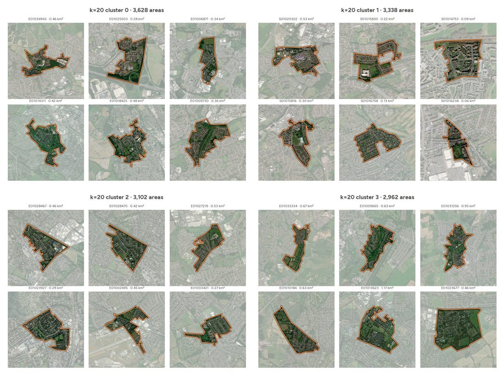<figcaption>Claude looked at <code>overview_0.png</code></figcaption></figure><figure class="seen figure">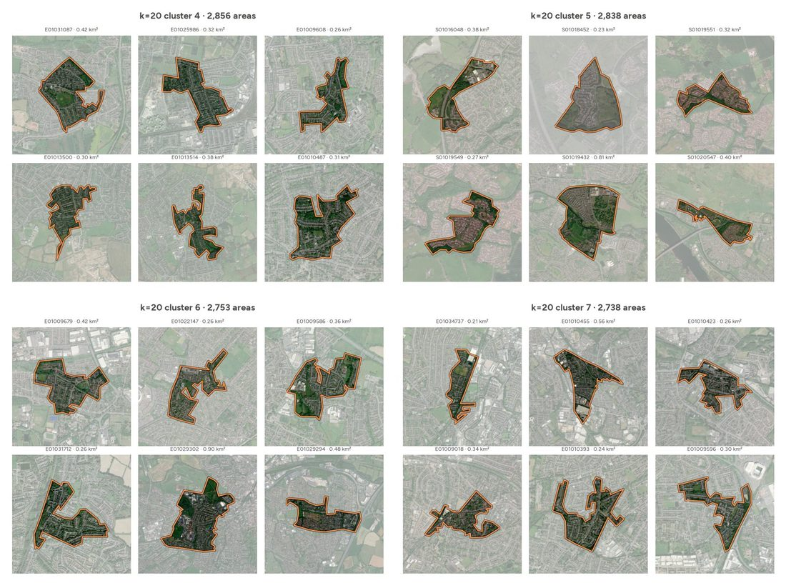<figcaption>Claude looked at <code>overview_1.png</code></figcaption></figure><figure class="seen figure">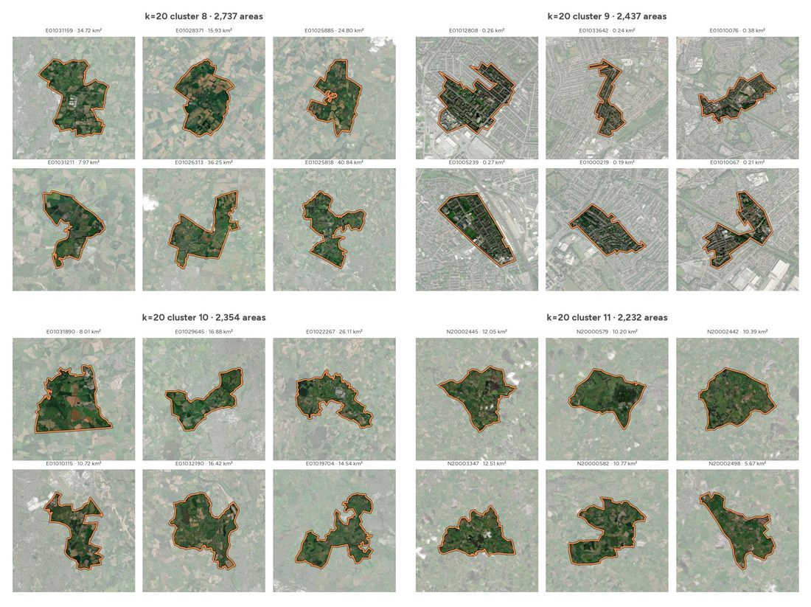<figcaption>Claude looked at <code>overview_2.png</code></figcaption></figure><figure class="seen figure">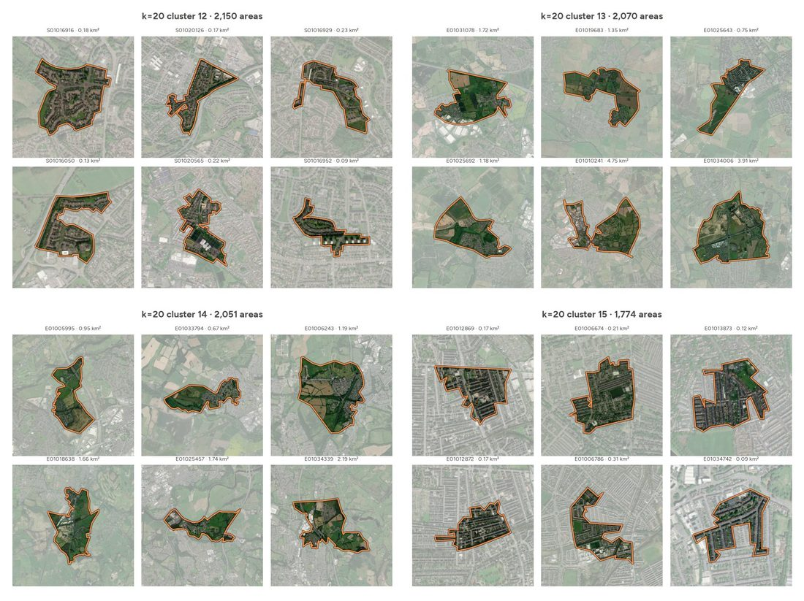<figcaption>Claude looked at <code>overview_3.png</code></figcaption></figure><figure class="seen figure">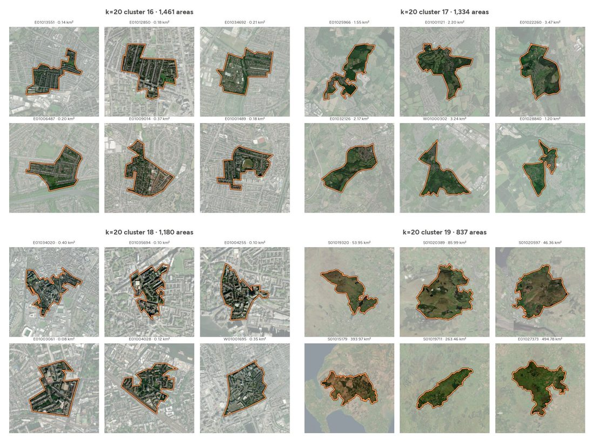<figcaption>Claude looked at <code>overview_4.png</code></figcaption></figure><figure class="sent figure"><div class="sent-row"></div><figcaption>Sent to the user: overview_0.png, overview_1.png, overview_2.png, overview_3.png, overview_4.png</figcaption></figure>
<div class="reply">
<p>I’ve fitted the clusters at both levels and made contact sheets for the 20 broad clusters. Everything is in <code>gdsl30dmc_clusters.ipynb</code>, and it runs end to end in about 4.5 minutes, nearly all of it fetching satellite tiles.</p>
<p><strong>What’s in the notebook:</strong></p>
<ul>
<li><p><strong>Clustering the embeddings:</strong> k-means at k=20 and k=100, each with 10 random starts, numbered by size so that 0 is the largest. The labels are saved to <code>data/clusters_2024.parquet</code>.</p>
<ul>
<li><strong>k=20:</strong> clusters range from 837 to 3,628 areas.</li>
<li><strong>k=100:</strong> clusters range from 71 to 869 areas.</li>
</ul></li>
<li><p><strong>How the two levels nest:</strong> only loosely. A typical k=100 cluster has 61% of its areas in one k=20 cluster, so the fine clusters don’t cleanly subdivide the broad ones. If we want a strict hierarchy, we could build the k=20 level by merging the k=100 clusters instead of fitting it separately.</p></li>
<li><p><strong>What the clusters look like:</strong> a contact sheet for each k=20 cluster showing its 6 most typical areas, saved in <code>figures/clusters/</code>. I’ve sent you the 20 sheets combined into 5 images. The thumbnail and contact-sheet helpers are now in the shared module.</p></li>
<li><p><strong>Clusters by nation:</strong> each cluster’s share of areas in each nation, plus its median area size.</p></li>
</ul>
<p><strong>Draft labels, from my reading of the imagery, for you to correct:</strong></p>
<div class="line-block">c20 | Draft label | Median area |</div>
<p>|—|—|—|</p>
<div class="line-block">0 | suburban housing with green space | 0.41 km² |</div>
<div class="line-block">1 | Scottish/NI urban housing estates and flats (60% Scotland, 29% NI) | 0.15 |</div>
<div class="line-block">2 | suburban housing next to industry or an airfield | 0.33 |</div>
<div class="line-block">3 | edge-of-town housing with fields | 0.68 |</div>
<div class="line-block">4 | dense post-war estates with curving streets | 0.32 |</div>
<div class="line-block">5 | Scottish/NI suburban and new-build housing at the countryside edge (71% Scotland) | 0.29 |</div>
<div class="line-block">6 | suburban housing mixed with schools and retail | 0.36 |</div>
<div class="line-block">7 | inner suburbs next to industry | 0.26 |</div>
<div class="line-block">8 | <strong>arable farmland</strong>, large rural areas | 12.95 |</div>
<div class="line-block">9 | dense inner-city housing, London-like | 0.18 |</div>
<div class="line-block">10 | mixed farmland with villages | 9.22 |</div>
<div class="line-block">11 | <strong>pastoral farmland</strong>: grass fields and hedgerows, all four nations | 11.66 |</div>
<div class="line-block">12 | Scottish/NI dense urban housing (65% Scotland) | 0.16 |</div>
<div class="line-block">13 | settlement edge: housing plus fields | 1.13 |</div>
<div class="line-block">14 | small towns and villages with surrounding fields | 0.96 |</div>
<div class="line-block">15 | <strong>Victorian terraces</strong> | 0.16 |</div>
<div class="line-block">16 | dense inner urban: terraces and flats | 0.18 |</div>
<div class="line-block">17 | <strong>woodland, parkland and golf courses</strong> on the urban fringe | 2.28 |</div>
<div class="line-block">18 | <strong>city centres</strong>: high-density commercial | 0.13 |</div>
<div class="line-block">19 | <strong>uplands and moorland</strong> (Scottish Highlands, Lake District) | 47.11 |</div>
<p><strong>What stands out:</strong></p>
<ol type="1">
<li><p><strong>About 12 of the 20 clusters are shades of residential.</strong> That was expected, since most areas are urban LSOAs, but it leaves only a few non-residential types (city centres, farmland, woodland, uplands).</p></li>
<li><p><strong>There’s no industrial or water cluster at this level.</strong> Industrial estates appear only as context next to housing, so for your example, “the industrial estate next to the most different landscape”, we’ll need the k=100 level. I’d make contact sheets for its smallest clusters next, since that’s where industry, water, airports and quarries should show up.</p></li>
<li><p><strong>Clusters 1, 5 and 12 are mostly Scottish and Northern Irish urban areas,</strong> even though England has 72% of all areas. That could be real: building styles and roofing materials differ. It could also be a regional effect in the embeddings, or simply that Scottish Data Zones are smaller. It matters for the search, because a cross-border pair could score as dissimilar partly through this effect. I’d treat it as a caveat for now.</p></li>
</ol>
<p>Two things I need from you:</p>
<ol type="1">
<li><p>Corrections or renames for any of the labels; once agreed, I’ll store them in the notebook.</p></li>
<li><p>Whether to go ahead with contact sheets for the smallest k=100 clusters, to find the industrial, water and other rare types.</p></li>
</ol>
</div>
<details class="compact"><summary>The conversation outgrew Claude's context window here. Everything above was condensed into the summary below, which is all Claude carried forward.</summary><div class="compact-text">This session is being continued from a previous conversation that ran out of context. The summary below covers the earlier portion of the conversation.<br><br>Summary:<br>1. Primary Request and Intent:<br>   - **Goal:** build a #30DayMapChallenge Day 10 ("Prompting only") submission mapping the UK's most dissimilar neighbouring small areas (LSOAs, plus Scottish Data Zones and NI Super Data Zones), using Imago's AlphaEarth embeddings for 2024. Polygons and embeddings are in `data/extracted-lsoa-geopackage_{year}_output.gpkg`. Change over time may be explored later.<br>   - **Tooling:** geopandas, PySAL's new `libpysal.graph.Graph` API, and the `nb` CLI for every notebook operation.<br>   - **LOG.md:** keep it, but add entries only when the user explicitly asks.<br>   - **Notebook:** use sections, and suggest sections where they would help.<br>   - **Evolution of the work:**<br>     - Contiguity graph for all four nations with queen contiguity.<br>     - Drop the islands (areas with no neighbours) and record a figure of them.<br>     - Cosine distances, computed in parallel (16 chunks split by focal area, threads).<br>     - Most-dissimilar-neighbour table; `mean_dist` and `lag_dist`.<br>     - Satellite maps, iterated into a Polaroid-card template (C1 style, official Imago palette, Figtree font, Imago grey `#4A4A49`, Polaroid proportions, thin outline).<br>     - Top-5 cards per measure; then the pairs section and distinct-pair cards.<br>   - **Then:**<br>     - The user proposed (1) restricting the search to cities and (2) k-means clustering, interpreting the clusters, and searching at cluster level.<br>     - User chose **k=20 and k=100**.<br>     - User asked to log the exploration, move clustering development to a second notebook, and put the Polaroid template and shared tooling in a `.py` file usable across notebooks.<br><br>2. Key Technical Concepts:<br>   - **Contiguity:** `Graph.build_fuzzy_contiguity` (queen contiguity plus overlapping polygons) fixes the missing England–Scotland border links. `g.isolates`, `g.subgraph`, `g.transform("r").lag(emb)` (works on 2-D arrays), `g.aggregate("mean")`, `g.adjacency`, `g.neighbors[code]`, `g.cardinalities`.<br>   - **Distances:** cosine distance with `sklearn.metrics.pairwise.paired_cosine_distances`. Threaded joblib (`backend="threading"`) beats separate processes (`loky`). `np.ascontiguousarray` gives a large speed-up.<br>   - **Neighbourhood scores:** `mean_dist` is the mean of the distances to each neighbour; `lag_dist` is the distance to the mean neighbour vector. `lag_dist &lt;= mean_dist` everywhere; Spearman 0.84.<br>   - **Imagery:** contextily with `Esri.WorldImagery` (CartoDB now needs an API key), `cx.bounds2img` plus `cx.warp_tiles` to EPSG:27700. The wash is applied to pixels with a `shapely.contains_xy` mask.<br>   - **UK outline:** `shapely.coverage_union_all` per nation, falling back to `union_all` for Northern Ireland; about 26 s; cached to `data/uk_outline.parquet`.<br>   - **Fonts:** Figtree static TTFs loaded with `font_manager.addfont`.<br>   - **Polaroid layout:** square photo; top and side borders 0.45 in; bottom strip 2.0 in; card 8 × 9.55 in; thin Dark Grey outline drawn inside the canvas. Export at 200 dpi without `bbox_inches="tight"`.<br>   - **Clustering:** k-means on vectors scaled to length 1 (clusters by cosine similarity). Silhouette scores computed with cosine distance. Clusters relabelled by size.<br>   - **`nb` CLI usage:** `nb cell add/update` with `--source -` and sentinels; `nb execute --timeout 300` (default is 30 s); `nb read --output-dir`.<br>   - **Imago palette:** Navy `#24226F`, Grey `#B8BCD1`, Green `#03CEA3`, Orange `#FF8F42`, Light Grey `#E2E5F3`, Blue `#1877CF`, Dark Grey `#8C91A8`, White; plus Imago data-service grey `#4A4A49`.<br><br>3. Files and Code Sections:<br>   - **`SPEC.md`:** the project brief; read only.<br>   - **`gdsl30dmc.ipynb`** (notebook 1, kernel `gds`). Sections and cells:<br>     - Title.<br>     - Setup: `%load_ext autoreload`, `%autoreload 2`; imports numpy, pandas, geopandas, matplotlib, joblib `Parallel`/`delayed`, libpysal `graph`, `paired_cosine_distances`.<br>     - Reading data (`YEAR=2024`, `lsoas` indexed by `data_zone_code`, `band_cols`, `emb`).<br>     - Building the contiguity graph: `g_queen`; a `link_types` helper; "Fixing the England–Scotland border" using fuzzy contiguity, `g = graph.Graph.build_fuzzy_contiguity(lsoas)`; diagnostics.<br>     - "Dropping areas with no neighbours": contextily figure using `Esri.WorldGrayCanvas`, then drop the 12 isolates and `g = g.subgraph(...)`.<br>     - Neighbour dissimilarity: threaded 16-chunk cosine distances giving `g_dist`; checks; histogram.<br>     - "Most dissimilar neighbour" table, `most_dissimilar`.<br>     - "Dissimilarity from the whole neighbourhood": the `neighbourhood` DataFrame (`mean_dist`, `lag_dist`) and a hexbin plot.<br>     - Mapping the most dissimilar areas:<br>       - cell `bc9b65d0`: `import gdsl30dmc_tools as tools; uk_outline = tools.uk_outline(lsoas)`<br>       - cell `ac41a997`: the thin wrapper functions below.<br>       - `top` card (`fig = plot_focal(top)`).<br>       - Exporting the cards: `export_card = tools.export_card`.<br>       - "Top 5 areas on each measure": the same 5 for both measures.<br>     - Most dissimilar neighbouring pairs: `pairs` DataFrame (`area_a &lt; area_b`, 136,233 rows); top 20; "Top distinct pairs" with `N_PAIRS=5`, greedy skipping of areas already used, exported as `figures/pair_&lt;a&gt;_&lt;b&gt;.png`.<br><br>     The wrapper functions in cell `ac41a997`:<br><br>     ```python<br>     def plot_focal(code):<br>         s = neighbourhood.loc[code]<br>         subtitle = f"mean_dist {s.mean_dist:.3f}  ·  lag_dist {s.lag_dist:.3f}  ·  {g.cardinalities[code]} neighbours"<br>         return tools.area_card(lsoas, code, g.neighbors[code], subtitle, uk_outline)<br><br>     def plot_pair(a, b):<br>         subtitle = f"cosine distance {g_dist.adjacency.loc[(a, b)]:.3f}  ·  neighbouring areas"<br>         return tools.pair_card(lsoas, a, b, subtitle, uk_outline)<br>     ```<br><br>   - **`gdsl30dmc_tools.py`** (shared module).<br>     - Constants: `ROOT`, `DATA_DIR`, `FIG_DIR`, `FONT_DIR`.<br>     - Data functions: `load_areas(year=2024)`, `band_columns(areas)`, `nation(areas)`, `contiguity(areas)` (fuzzy), `drop_isolates(areas, g)`, `uk_outline(areas, cache=DATA_DIR/"uk_outline.parquet")`.<br>     - Card styling: `IMAGO` dict, `WASH = 0.55`, Figtree registration, `TEXT = dict(family="Figtree", weight="bold", color=IMAGO["imago_grey"])`, and `CARD_W, BORDER, STRIP = 8, 0.45, 2.0` with `CARD_H = CARD_W - BORDER + STRIP`.<br>     - Helpers: `_halo(lw)` and `_washed_imagery(frame, crs, keep, wash=WASH)`, which returns `(rgb, ext)`.<br>     - `polaroid(layers, title, subtitle, locate, outline)`:<br>       - `layers` is a list of `(gdf, colour, lw)`.<br>       - `title` is a list of `(text, colour or None)`; a coloured item gets a bar key before it.<br>       - The UK locator sits bottom-right in the caption strip, Imago grey, with an orange dot.<br>       - The credit uses `cx.providers.Esri.WorldImagery.attribution`.<br>     - Card wrappers:<br>       - `area_card(areas, code, neighbours, subtitle, outline)`: neighbours green at 1.4, focal orange at 3.<br>       - `pair_card(areas, a, b, subtitle, outline)`: B green and A orange, both at 2.4.<br>     - `export_card(fig, name, dpi=200, fig_dir=FIG_DIR)`.<br>     - Most recently added, a contact-sheet section:<br><br>       ```python<br>       def thumbnail(ax, areas, code, pad=0.3, colour=IMAGO["orange"]): ...  # square washed thumbnail, title "code · X km²"<br>       def contact_sheet(areas, codes, title, ncols=3, size=2.6): ...  # grid of thumbnails, bold suptitle<br>       ```<br><br>   - **`gdsl30dmc_clusters.ipynb`** (notebook 2, kernel `gds`). Cells:<br>     - Title and intro.<br>     - Setup: autoreload; numpy, pandas, matplotlib, `KMeans`, `silhouette_score`, `import gdsl30dmc_tools as tools`.<br>     - Reading data via tools: `lsoas`, `g`, drop isolates, `emb`, `emb_unit`, `uk_outline`. Result: 46,832 areas and 272,466 links.<br>     - "Choosing the number of clusters": k scan over `KS = [5, 8, 10, 15, 20, 25, 30, 40, 50, 75, 100]` producing `k_scan`, with two plots and an interpretation in markdown.<br>     - "Clustering the embeddings": `fit_kmeans(k, seed=0)` (`n_init=10`, relabel by size) gives `c20`, `centres20`, `c100`, `centres100`; the `clusters` DataFrame is saved to `data/clusters_2024.parquet`.<br>     - "How the two levels nest": crosstab producing `fine` (share of each k=100 cluster inside its main k=20 cluster).<br>     - "What the clusters look like": `typical(level_labels, centres, cluster, n=6)` and `typical20`; contact sheets exported as `figures/clusters/c20_XX.png` (dpi 110) via `tools.contact_sheet`.<br>     - "Clusters by nation": `by_nation` crosstab plus `median_km2`.<br>   - **`LOG.md`.** Entries:<br>     - Contiguity.<br>     - Dropped isolates.<br>     - Isolates figure.<br>     - Neighbour dissimilarity (cosine, parallelism).<br>     - `mean_dist` versus `lag_dist`.<br>     - Map template C1 (Imago colours).<br>     - Official Imago palette.<br>     - Polaroid card, Figtree, Imago grey, with an update on proportions and outline.<br>     - Top 5 areas per measure.<br>     - Pairs section and pair cards.<br>     - Ideas and choosing k: the scan table, the decision, the re-run numbers, and the note that "fine level (k=50 vs k=75) is still open". This entry predates the user's choice of 100.<br>   - **`fonts/Figtree-Regular.ttf`, `Figtree-Bold.ttf`:** downloaded from github.com/erikdkennedy/figtree.<br>   - **`figures/`:**<br>     - Area cards: `E01030745.png`, `N20003012.png`, `W01001286.png`, `N20002748.png`, `E01026177.png`.<br>     - Pair cards: `pair_E01030710_E01030745`, `pair_E01031353_E01031359`, `pair_E01020936_E01034298`, `pair_E01029178_E01035125`, `pair_W01001947_W01002024`.<br>     - `clusters/c20_00..19.png`.<br>   - **Other data:** `data/uk_outline.parquet`, `data/clusters_2024.parquet`.<br>   - **Scratchpad:** `scratchpad/` holds the scratch scripts, style grids, and `overview_0..4.png` (contact sheets, 4 clusters per image).<br><br>4. Errors and fixes:<br>   - **PROJ warning on read:** harmless; CRS works.<br>   - **`nb read --start`:** flag doesn't exist; used `--cell-index` instead.<br>   - **Missing England–Scotland links:** queen contiguity missed them because the polygons overlap. Fixed with fuzzy contiguity, which added 21 pairs.<br>   - **`nb execute` timeout:** the 30 s default per cell was too short; use `--timeout 300` (or 600/900 for clustering and sheets).<br>   - **UK dissolve too slow:** about 8 min. Switched to a per-nation coverage union (about 26 s) with caching.<br>   - **CartoDB tiles:** they need an API key; switched to Esri providers. `Esri.WorldBoundariesAndPlaces` doesn't exist and was removed.<br>   - **Inset problems:** Scotland was invisible against the imagery and axis labels showed on the inset; fixed by clearing the labels and later moving the locator to the caption strip.<br>   - **Wrong card height:** the top border was double the intended size; fixed with `CARD_H = CARD_W - BORDER + STRIP`.<br>   - **Hard-coded attribution:** replaced with the provider's own attribution string.<br>   - **Slow chunking:** the slow `isin`-based chunking was replaced with an integer chunk lookup; the remaining time was the F-ordered array, fixed with `ascontiguousarray`.<br>   - **Clusters notebook re-run:** numbers changed (the sharp drop moved to k=50→75); the notebook text and log were corrected.<br>   - **Accidental Edit call:** a no-op Edit on the `.ipynb` failed harmlessly; `nb` was used instead.<br>   - **User feedback on style:**<br>     - Red/yellow is not aesthetic.<br>     - Chose C1: washed white fade, orange focal and green neighbours.<br>     - Then the official palette with Imago grey `#4A4A49` bold text, Figtree font, a grey UK silhouette with an orange dot.<br>     - Polaroid look with a larger bottom margin and a thin border visible on white.<br><br>5. Problem Solving:<br>   - **Top results:** E01030745 (Staines reservoirs by Heathrow) tops every measure. The next areas are small urban cores in large rural neighbours, which the user called "true but not most interesting".<br>   - **Pairs:** the top pairs are also urban versus open land (one-note); one card shows clouds, because the Esri mosaic is not the 2024 imagery the embeddings came from.<br>   - **Clustering response:**<br>     - The k scan shows no elbow.<br>     - The k=20 and k=100 fits nest only partially: median share 0.61.<br>     - k=20 sizes range from 3,628 to 837; k=100 from 71 to 869.<br>   - **Draft k=20 labels** (my reading of the imagery, not yet shown to the user):<br>     - 0: suburban residential with greenery (E 87%).<br>     - 1: Scottish/NI urban housing schemes and flats (S 60%, N 29%).<br>     - 2: suburban residential near industry or airfields.<br>     - 3: residential at the urban fringe with fields (0.68 km²).<br>     - 4: dense interwar/postwar housing estates.<br>     - 5: Scottish/NI suburban and new-build at the edge of countryside (S 71%).<br>     - 6: suburban mixed with schools and retail.<br>     - 7: inner-suburban residential near industry.<br>     - 8: large arable farmland (12.95 km²).<br>     - 9: dense inner-city residential.<br>     - 10: mixed rural farmland with villages (9.22 km²).<br>     - 11: pastoral grass farmland, mixed nations (E 32%, N 38%).<br>     - 12: Scottish/NI dense urban (S 65%).<br>     - 13: peri-urban settlement edge plus fields (1.13 km²).<br>     - 14: small towns and villages with fields.<br>     - 15: Victorian terraces.<br>     - 16: dense inner urban terraces and flats.<br>     - 17: wooded or green rural–urban fringe (W 21%).<br>     - 18: city centre / high-density commercial.<br>     - 19: upland moorland/mountain (47 km², S 62%).<br>   - **Observations:**<br>     - There is no clear industrial or water cluster at k=20; these are probably in k=100.<br>     - Clusters 1, 5 and 12 are dominated by Scotland and Northern Ireland. That may be genuine building styles or an artefact; it needs flagging.<br>     - England holds about 72% of all areas.<br><br>6. All user messages:<br>   - "ok have a read at SPEC.md for context and we can start working. When you're ready, let's get cracking..."<br>   - "all four nations and queen contiguity. Build the graphs first and don't move beyond there for now"<br>   - "record this in LOG.md"<br>   - "drop the islands now from both the graph and the embeddings table. Make it a clear note of this step in the section before moving on"<br>   - (mid-turn) "make a quick note to the log too"<br>   - "can you make a quick figure for me to inspect here (is it possible?) to see where the 12 issolates are?"<br>   - "Yes, please add it on that section so there's a record of it."<br>   - (mid-turn) "Make this very lightweight, anything you need for a bass map used contextilly"<br>   - "ok, next is building similarity. There's many distances that can work here, what do you recommend?" / "cosine perhaps?"<br>   - "let's stick to cosine here. Open up a new section and let's calculate the cosine distance (sklearn?) between every polygon and all of its queen neighors. Use the Graph we've created for this. Also, I think there's scope here to make it work in parallel and it'd be significantly faster, what do you think? don't do anything until we're clear on what"<br>   - "Do you really not think it makes sense to do these in a few batches that are separated in parallel?"<br>   - "What I'm thinking is split all of the polygons in 16 chunks, one per core in this machine, and then calculate the distances for those polygons and their neighbors in a separate worker and collect all the results afterwards."<br>   - "Is the code much more complex for the chunks?"<br>   - "Go ahead with the parallel implementation then. Yes, split on the focal codes, I think."<br>   - "yes made an entry on the log."<br>   - "Okay, now I would like to create a simple table where every L SOA is a row and then there is a column for the nearest no, the most distant or dissimilar area. Let's start with that. We will then think about the most dissimilar group of areas."<br>   - "ok now let's think about how a distance between the focal area and its neighbors would work. Two thoughts: 1) ... average it; 2) we average the embedding of the neighbors and then the distance. Thoughts?"<br>   - "ok let's calculate both for now, let's think how we'd compute them"<br>   - "Yeah, let's go ahead."<br>   - "Show me here the scatter plot please."<br>   - "Okay, I think we have all the pieces to start exploring a few maps. Let's pick the focal area with the highest distance of either type and make me a few simple maps. Use a satellite imagery baseline and include the focal area and all of its neighbors, making sure that you can see the boundary line of the LSOA and the satellite background. Start by building those on your scratch pad and show me the images here."<br>   - "Okay, this is a great first start... I really like option one, but maybe instead of white lines ... red for the focal and yellow for the rest. And ... on a corner a very simplified map of the UK in either dark grey or light grey with an accent color..."<br>   - "It is a lot. I think it's almost ready. One more thing ... fade the base map in the areas that are not part of the vocal or neighbors..."<br>   - "Fantastic. ... show me a few alternatives with different colors for the fade ... at least two more ... other combinations of the lines ... at least five combinations ... the inset ... one without any rectangle ... UK color based on contrast with the fade ... grid of combinations"<br>   - "actually, can you try one more using the Imaco color palette? If you don't know what that is, get a sense from imago.ac.uk"<br>   - "Let's stick with C1 for now. Add it as the template and update for the notebook and the log"<br>   - (with palette image) "Actually I want the UK polygon and all the text in the image to be imago grey. See the actual palette attached and update accordingly"<br>   - "I like with the official colors a bit more. A couple of further iterations: 1) if you're using Imago grey (#4a4a49), can you make the text in bold? Also, can you use the official font, which is figtree? 2) Make the UK polygon in Imago grey also, and the dot on that polygon in the orange of the focal area. I really like the setup of the image, it looks like a Polaroid picture, can we keep/reinforce that for when we export?"<br>   - (mid-turn) "Ok almost perfect: one more thing on the Polaroid side: can you keep a larger margin at the bottom than at the top ... and also ... keeps this layout clear even if it's displayed against white? Maybe with a thin border line?"<br>   - "Let's start with the top 5 for each measure"<br>   - "OK I see the point of these, they're true but not the most interesting. Maybe let's switch gears from neighboring sets to pairs. Let's look at the largest distance between a pair of neighbors. Before that, include these top five in the notebook and log if not there yet, and start a new section for this."<br>   - "Yes, let's expand the Polaroid approach to also be able to accommodate pairs"<br>   - "OK two ideas to try to find more interesting "Polaroids": 1. Restrict the search within the bounds of specific cities (e.g., London, Liverpool)... 2. ... Cluster all the LSOAs ... K-means (e.g., k=100) ... Explore if those clusters capture features ... Then set up the search for different neighborhoods at the cluster level ... what do you think?"<br>   - "I said 100 randomly, do you think a different number might be best to start with?"<br>   - "OK log this exploration and lets move its development to a second notebook. To make sure we rely on the same tooling, is the Polaroid template, etc. In a separate .py file that can be used across notebooks? If not, make it so"<br>   - "20 and 100"<br><br>7. Pending Tasks:<br>   - Present the draft k=20 cluster labels and the nation-composition finding to the user for review and agreement. Flag that clusters 1, 5 and 12 are dominated by Scotland and Northern Ireland, and that there is no distinct industrial or water cluster at k=20.<br>   - Once labels are agreed:<br>     - Store them in notebook 2.<br>     - Look at the k=100 clusters for rare types (industrial, water, etc.).<br>     - Run the cluster-level search: top pair per cluster-pair combination, "surprising neighbours" (join counts against chance), and cluster-based Polaroid pair cards.<br>   - Later: idea 1 (restrict to cities), which needs a boundary source; I recommended the ONS LSOA→local-authority lookup. City list to be decided by the user.<br>   - LOG.md still says the fine level (k=50 vs k=75) is open, but the user chose k=20 and k=100. Log the clustering work (fits, nesting, contact sheets, labels) when the user asks.<br><br>8. Current Work:<br>   - **Last request:** "20 and 100". In response I added notebook-2 sections that fit k-means at k=20 and k=100 (saved to `data/clusters_2024.parquet`), check how the levels nest (median share 0.61), build contact sheets of the 6 most typical areas per k=20 cluster (`figures/clusters/c20_XX.png`), and tabulate nation composition per cluster.<br>   - **New module helpers:** `_washed_imagery`, `thumbnail` and `contact_sheet` in `gdsl30dmc_tools.py`.<br>   - **Overviews:** I combined the sheets into 5 overview PNGs in the scratchpad (`overview_0.png`..`overview_4.png`) and sent them via SendUserFile with the caption "k=20 clusters 0–19: the six most typical areas of each (4 clusters per image)".<br>   - **Not yet done:** the explanatory text reply with the draft labels.<br><br>9. Optional Next Step:<br>   Reply to the user with the draft labels for the 20 clusters from section 5 (draft k=20 labels), the nation-composition caveat, and the k=20/k=100 nesting result, and ask them to confirm or edit the labels. Only after that, record the agreed labels in notebook 2 and move to k=100 rare types and the cluster-level pair search. The overview images were just sent with the caption "k=20 clusters 0–19: the six most typical areas of each (4 clusters per image)", and the earlier plan stated to the user was: "You review the contact sheets and we agree labels", followed by "A cluster-level search, showing one example per contrast type plus the surprising-neighbours view, then cards."<br><br>If you need specific details from before compaction (like exact code snippets, error messages, or content you generated), read the full transcript at: ~/.claude/projects/-home-jovyan-work/63c88aa3-98ca-4f27-93e3-d7a0c2754006.jsonl<br>Continue the conversation from where it left off without asking the user any further questions. Resume directly — do not acknowledge the summary, do not recap what was happening, do not preface with "I'll continue" or similar. Pick up the last task as if the break never happened.<br><br>The messages after this summary are the most recent messages from before compaction, kept verbatim. The summary was written without seeing them, so something it says has not happened yet may already have happened in them.</div></details>
</section>
<section id="thursday-5-november" class="level2">
<h2 class="anchored" data-anchor-id="thursday-5-november">Thursday 5 November</h2>
<div class="note prompt" id="p-38"><div class="note-meta"><a href="#p-38">#38</a> · Thu 5 Nov, 22:11</div><div class="note-text">Show me the contact card for urban centers in the k20</div></div>
<details class="steps"><summary><b>3 steps</b> · ToolSearch · Read figures/clusters/c20_18.png · …</summary><details class="tool"><summary><span class="tool-name">ToolSearch</span> ToolSearch</summary><pre class="tool-in">{
 "query": "select:SendUserFile",
 "max_results": 1
}</pre></details><details class="tool"><summary><span class="tool-name">Read</span> Read figures/clusters/c20_18.png</summary><pre class="tool-in"></pre></details><details class="tool"><summary><span class="tool-name">SendUserFile</span> Send files to the user</summary><pre class="tool-in">figures/clusters/c20_18.png

k=20 cluster 18 (draft label "city centres"): its 6 most typical areas</pre><pre class="tool-out">1 file delivered to user.
  figures/clusters/c20_18.png → file_uuid: 20973129-f122-49f7-b899-53161620d201</pre></details></details><figure class="seen figure">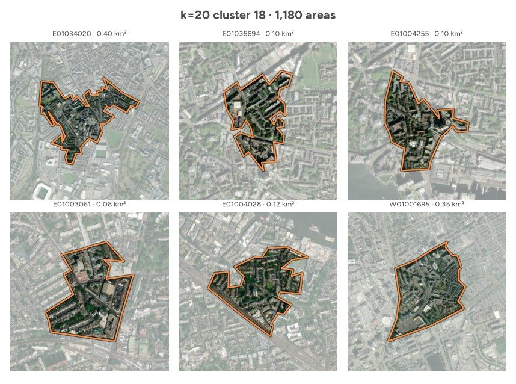<figcaption>Claude looked at <code>c20_18.png</code></figcaption></figure><figure class="sent figure"><div class="sent-row">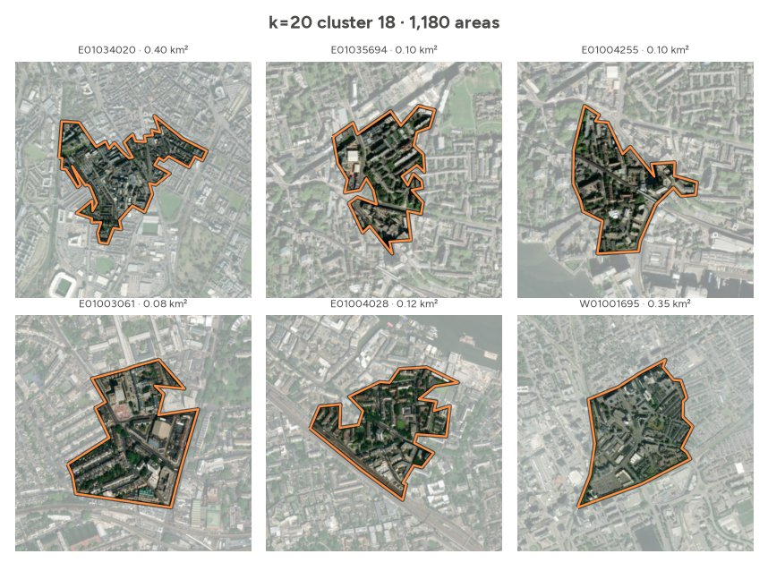</div><figcaption>Sent to the user: c20_18.png</figcaption></figure>
<div class="reply">
<p>This is the contact sheet for k=20 cluster 18, the one I drafted as <strong>“city centres”</strong>. It has 1,180 areas, and the sheet shows the 6 closest to the cluster centre. The file is <code>figures/clusters/c20_18.png</code>.</p>
<p>On closer inspection, “city centres” is a bit too strong a label:</p>
<ul>
<li><p><strong>What they share:</strong> small areas (0.08–0.40 km²) that are almost fully built up, with large flat-roofed blocks, flats, offices and institutional buildings. There are hardly any gardens and little of the regular terraced pattern you see in clusters 15 and 16.</p></li>
<li><p><strong>Not all are central business districts:</strong></p>
<ul>
<li>The top-left area sits beside what looks like a football stadium.</li>
<li>Top-right and bottom-middle are on a waterfront or docks.</li>
<li>Several look like dense inner-city mixed use: council blocks, campuses and offices.</li>
</ul></li>
<li><p>The only non-English example is <code>W01001695</code>, from Wales.</p></li>
</ul>
<p>A more accurate label might be <strong>“dense inner-city mixed use (flats, offices, institutions)”</strong>. If you want true commercial cores like the City of London or Manchester’s centre, they’re probably a subset that only separates at k=100.</p>
<p>I can make a larger sheet for this cluster, say 12 or 24 areas, or a sheet of its k=100 sub-clusters, to check whether a pure city-centre type falls out.</p>
</div>
<div class="note prompt" id="p-39"><div class="note-meta"><a href="#p-39">#39</a> · Thu 5 Nov, 22:12</div><div class="note-text">Can you find a better fit for that description in k100?</div></div>
<details class="steps"><summary><b>1 step</b> · Run a shell command</summary><details class="tool"><summary><span class="tool-name">Bash</span> Run a shell command</summary><pre class="tool-in">nb status --python 2&gt;/dev/null; python -c "
import pandas as pd
c=pd.read_parquet('data/clusters_2024.parquet'); print(c.head()); print(c.columns.tolist())
city=[x for x in ['E01000001','E01000002','E01000003','E01000005','E01032739','E01032740','E01033677','E01033658','E01033654','E01033664'] if x in c.index]
print(c.loc[city])
x=pd.crosstab(c.c100,c.c20)
s=x[18].sort_values(ascending=False); print(pd.DataFrame({'n18':s,'size':x.sum(1)[s.index],'share':(s/x.sum(1)[s.index]).round(2)}).head(10))
"</pre><pre class="tool-out">c20  c100
data_zone_code           
E01000001        18    95
E01000002        18    95
E01000003        18    88
E01000005        18    95
E01000006         9    57
['c20', 'c100']
                c20  c100
data_zone_code           
E01000001        18    95
E01000002        18    95
E01000003        18    88
E01000005        18    95
E01032739        18    95
E01032740        18    88
E01033677        18    95
E01033658        18    95
E01033654        18    88
E01033664        18    88
      n18  size  share
c100                  
88    232   232   1.00
70    176   387   0.45
81    151   320   0.47
79    134   340   0.39
76    113   349   0.32
53    106   458   0.23
73    100   366   0.27
95     86   133   0.65
61     38   420   0.09
52     30   460   0.07</pre></details></details>
<div class="reply">
<p>City of London and central Manchester areas both fall in k=100 clusters <strong>95</strong> (133 areas) and <strong>88</strong> (232 areas). Next I’ll make contact sheets for both.</p>
</div>
<details class="steps"><summary><b>5 steps</b> · Run a shell command · Run a shell command · …</summary><details class="tool"><summary><span class="tool-name">Bash</span> Run a shell command</summary><pre class="tool-in">cat &gt; scratchpad/cbd.py &lt;&lt;'EOF'
import numpy as np, pandas as pd, matplotlib; matplotlib.use("Agg")
import gdsl30dmc_tools as tools
sp="scratchpad/"
a=tools.load_areas(); c=pd.read_parquet("data/clusters_2024.parquet"); a=a.loc[c.index]
e=a[tools.band_columns(a)].to_numpy(); e=e/np.linalg.norm(e,axis=1,keepdims=True)
for k in [95,88]:
    m=(c.c100==k).to_numpy(); ctr=e[m].mean(0); ctr/=np.linalg.norm(ctr)
    sim=pd.Series(e[m]@ctr,index=c.index[m]).sort_values(ascending=False)
    sub=a.loc[sim.index]
    print(k, len(sim), tools.nation(sub).value_counts().to_dict(), "median km2", round(sub.area.median()/1e6,3))
    print(" top codes:", list(sim.index[:12]))
    fig=tools.contact_sheet(a, list(sim.index[:9]), f"k=100 cluster {k} · {m.sum():,} areas")
    fig.savefig(sp+f"c100_{k}.png", dpi=100)
EOF
python $_ 2&gt;&amp;1 | grep -v PROJ; python scratchpad/cbd.py 2&gt;&amp;1 | grep -v -i proj</pre><pre class="tool-out">python: can't open file 'cat': [Errno 2] No such file or directory
Traceback (most recent call last):
  File "scratchpad/cbd.py", line 2, in &lt;module&gt;
    import gdsl30dmc_tools as tools
ModuleNotFoundError: No module named 'gdsl30dmc_tools'</pre></details><details class="tool"><summary><span class="tool-name">Bash</span> Run a shell command</summary><pre class="tool-in">PYTHONPATH= python scratchpad/cbd.py 2&gt;&amp;1 | grep -v -i proj</pre><pre class="tool-out">95 133 {'E': 114, 'S': 17, 'N': 2} median km2 0.108
 top codes: ['E01003934', 'E01003981', 'E01003935', 'E01033862', 'E01033944', 'E01033908', 'E01033867', 'E01033866', 'E01033988', 'E01033567', 'E01035486', 'E01004733']
88 232 {'E': 217, 'S': 11, 'N': 4} median km2 0.123
 top codes: ['E01033342', 'E01034182', 'E01000958', 'E01032583', 'E01034143', 'E01033868', 'E01004309', 'E01035721', 'E01004761', 'E01034209', 'E01035644', 'E01033617']</pre></details><details class="tool"><summary><span class="tool-name">Read</span> Read scratchpad/c100_95.png</summary><pre class="tool-in"></pre></details><details class="tool"><summary><span class="tool-name">Read</span> Read scratchpad/c100_88.png</summary><pre class="tool-in"></pre></details><details class="tool"><summary><span class="tool-name">SendUserFile</span> Send files to the user</summary><pre class="tool-in">scratchpad/c100_95.png
scratchpad/c100_88.png

k=100 cluster 95 (business cores) and 88 (central mixed use): the 9 most typical areas of each</pre><pre class="tool-out">2 files delivered to user.
  scratchpad/c100_95.png → file_uuid: c9bb8a1f-2748-4201-86ab-a7018a24173b
  scratchpad/c100_88.png → file_uuid: 8b25682d-e344-4504-9790-d0741b263956</pre></details></details><figure class="seen figure">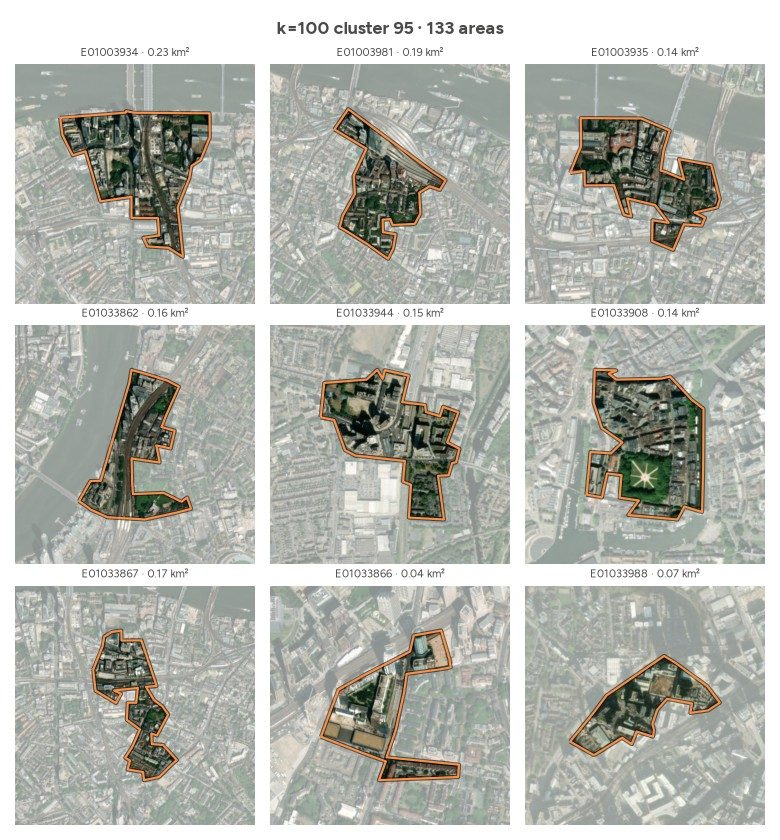<figcaption>Claude looked at <code>c100_95.png</code></figcaption></figure><figure class="seen figure">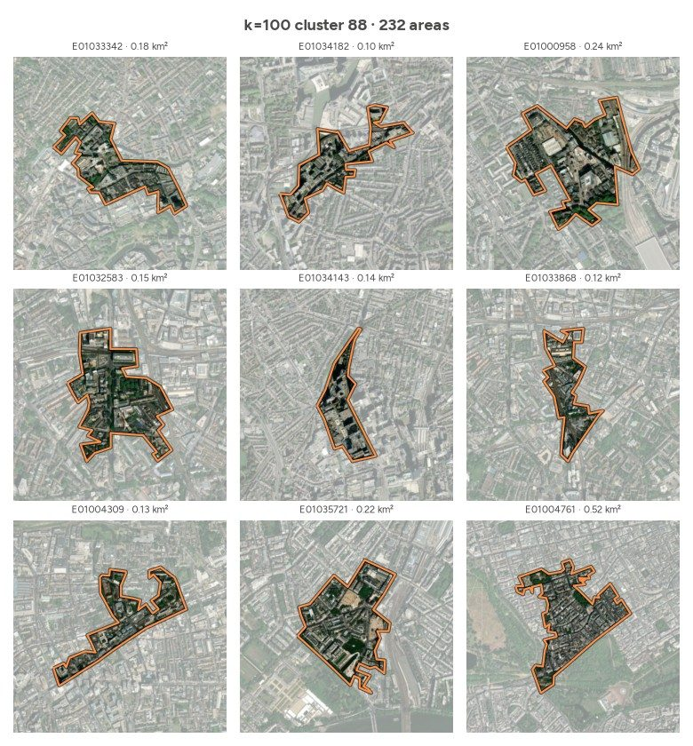<figcaption>Claude looked at <code>c100_88.png</code></figcaption></figure><figure class="sent figure"><div class="sent-row"></div><figcaption>Sent to the user: c100_95.png, c100_88.png</figcaption></figure>
<div class="reply">
<p>Yes. k=100 <strong>cluster 95</strong> is a much better fit for “city centres”. I found it by checking which k=100 clusters known central areas fall into: all the City of London and central Manchester areas I tried land in cluster 95 or cluster 88. I’ve sent contact sheets of the 9 most typical areas in each.</p>
<p><strong>Cluster 95: business cores (133 areas)</strong></p>
<ul>
<li><p>Its typical areas look like high-rise office districts: the Thames-side City and Southwark around London Bridge, and tower clusters that appear to be Canary Wharf. The towers, big flat roofs and almost no green space are typical of a central business district.</p></li>
<li><p>It includes City of London areas (<code>E01000001</code>, <code>…02</code>, <code>…05</code>, <code>E01032739</code>) and central Manchester (<code>E01033677</code>, <code>E01033658</code>).</p></li>
<li><p>It’s very small: median 0.11 km². 114 areas are in England, 17 in Scotland and 2 in Northern Ireland, so it presumably also picks up central Glasgow and Edinburgh, though I haven’t checked which areas those are.</p></li>
<li><p>Only 65% of its areas sit in k=20 cluster 18. This is the loose nesting showing up again: some business cores went to other broad clusters.</p></li>
</ul>
<p><strong>Cluster 88: central mixed use (232 areas)</strong></p>
<ul>
<li><p>It sits entirely inside k=20 cluster 18.</p></li>
<li><p>It’s dense central fabric but not office towers: mansion blocks, institutions, rail stations and mixed streets. It looks like the inner West End and the edges of city centres.</p></li>
<li><p>It also contains some City of London areas (<code>E01000003</code>, <code>E01032740</code>) and central Manchester areas (<code>E01033654</code>, <code>E01033664</code>), so there isn’t a hard line between the two clusters.</p></li>
</ul>
<p><strong>Suggested labels</strong></p>
<ul>
<li><p>k=100 cluster 95: <strong>“business core: high-rise offices”</strong>. Use this as the true city-centre type.</p></li>
<li><p>k=100 cluster 88: <strong>“central mixed use”</strong>.</p></li>
<li><p>k=20 cluster 18: rename to <strong>“dense inner-city mixed use”</strong>.</p></li>
</ul>
<p>For the search, cluster 95 is a strong candidate for interesting pairs, such as a business core directly next to a residential estate or a park.</p>
</div>
<div class="note prompt" id="p-40"><div class="note-meta"><a href="#p-40">#40</a> · Thu 5 Nov, 22:17</div><div class="note-text">Let’s stick with 95. Let’s play with the Polaroid, can you show me the Polaroid of the top 5 distances in cluster 95?</div></div>
<details class="steps"><summary><b>4 steps</b> · Run a shell command · Run a shell command · …</summary><details class="tool"><summary><span class="tool-name">Bash</span> Run a shell command</summary><pre class="tool-in">cat &gt; scratchpad/p95.py &lt;&lt;'EOF'
import numpy as np, pandas as pd, matplotlib; matplotlib.use("Agg")
import gdsl30dmc_tools as tools
sp="scratchpad/"
a=tools.load_areas(); g=tools.contiguity(a); a,g=tools.drop_isolates(a,g)
c=pd.read_parquet("data/clusters_2024.parquet").reindex(a.index)
e=pd.DataFrame(a[tools.band_columns(a)].to_numpy(),index=a.index)
adj=g.adjacency.reset_index(); adj.columns=["focal","neighbor","w"]
adj=adj[adj.focal.isin(c.index[c.c100==95])]
A,B=e.loc[adj.focal].to_numpy(),e.loc[adj.neighbor].to_numpy()
adj["dist"]=1-(A*B).sum(1)/np.linalg.norm(A,axis=1)/np.linalg.norm(B,axis=1)
adj=adj.sort_values("dist",ascending=False)
# drop duplicate pairs where both ends are in 95
adj["key"]=[tuple(sorted(p)) for p in zip(adj.focal,adj.neighbor)]; adj=adj.drop_duplicates("key")
used,picks=set(),[]
for r in adj.itertuples():
    if r.focal in used or r.neighbor in used: continue
    picks.append(r); used|={r.focal,r.neighbor}
    if len(picks)==5: break
out=tools.uk_outline(a)
for i,r in enumerate(picks):
    nb_c=c.loc[r.neighbor]
    print(i,r.focal,r.neighbor,round(r.dist,3),"nbr c20",nb_c.c20,"c100",nb_c.c100)
    sub=f"cosine distance {r.dist:.3f}  ·  business core (c100 95) next to c20 {nb_c.c20} / c100 {nb_c.c100}"
    fig=tools.pair_card(a,r.focal,r.neighbor,sub,out)
    tools.export_card(fig,f"p95_{i}",dpi=100,fig_dir=sp)
print(adj.head(15)[["focal","neighbor","dist"]])
EOF
PYTHONPATH=. python scratchpad/p95.py 2&gt;&amp;1 | grep -vi proj</pre><pre class="tool-out">0 E01035620 E01035617 0.408 nbr c20 14 c100 47
1 E01034486 E01004401 0.289 nbr c20 0 c100 99
2 S01017417 S01017432 0.268 nbr c20 15 c100 61
3 S01017414 S01017176 0.257 nbr c20 5 c100 32
4 S01017427 S01017433 0.254 nbr c20 15 c100 61
            focal   neighbor      dist
197006  E01035620  E01035617  0.408056
190670  E01034486  E01004401  0.288767
190669  E01034486  E01004391  0.284580
231052  S01017417  S01017432  0.268253
231028  S01017414  S01017176  0.256567
231111  S01017427  S01017433  0.254472
231084  S01017422  S01017421  0.252519
194897  E01035247  E01016514  0.241211
186198  E01033684  E01033688  0.214553
189113  E01034214  E01034213  0.211898
231053  S01017417  S01017433  0.202625
197508  E01035706  E01004217  0.197670
190212  E01034406  E01034403  0.197294
197003  E01035620  E01008397  0.195318
197500  E01035704  E01035705  0.192540</pre></details><details class="tool"><summary><span class="tool-name">Bash</span> Run a shell command</summary><pre class="tool-in">cd scratchpad/ &amp;&amp; python -c "
from PIL import Image
ims=[Image.open(f'p95_{i}.png') for i in range(5)]
w,h=ims[0].size; s=Image.new('RGB',(w*3+40,h*2+30),'white')
for i,im in enumerate(ims): s.paste(im,(10+(i%3)*(w+10),10+(i//3)*(h+10)))
s.save('p95_grid.png')"</pre><pre class="tool-out">Shell cwd was reset to</pre></details><details class="tool"><summary><span class="tool-name">Read</span> Read scratchpad/p95_grid.png</summary><pre class="tool-in"></pre></details><details class="tool"><summary><span class="tool-name">SendUserFile</span> Send files to the user</summary><pre class="tool-in">scratchpad/p95_grid.png

Top 5 distinct most dissimilar neighbouring pairs involving a business-core (k=100 cluster 95) area; orange = business core</pre><pre class="tool-out">1 file delivered to user.
  scratchpad/p95_grid.png → file_uuid: 0625c646-4c0b-4f97-b0e2-ea13357295cd</pre></details></details><figure class="seen figure">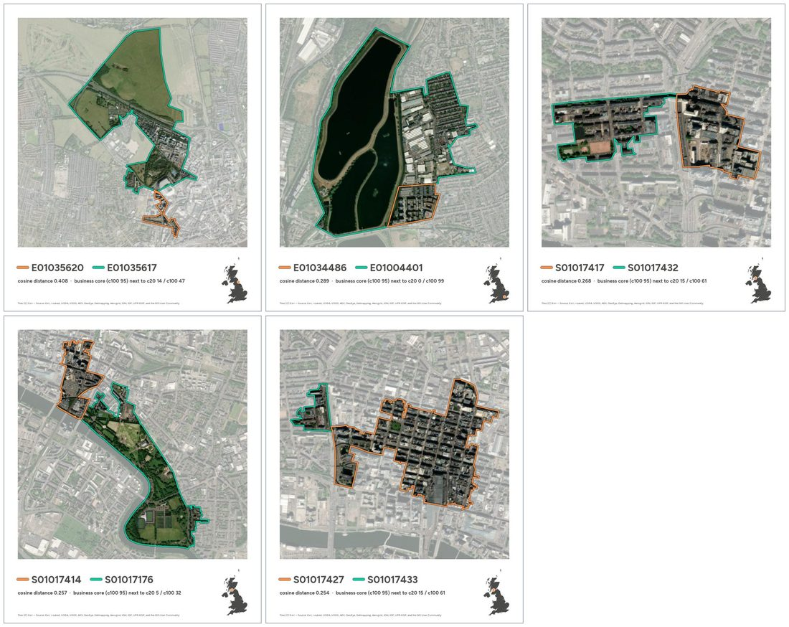<figcaption>Claude looked at <code>p95_grid.png</code></figcaption></figure><figure class="sent figure"><div class="sent-row"></div><figcaption>Sent to the user: p95_grid.png</figcaption></figure>
<div class="reply">
<p>I’ve made Polaroids for the five most dissimilar neighbouring pairs that include a business-core area (k=100 cluster 95). Orange is the business core and green is its neighbour. As with the earlier pair cards, no area appears twice. I’ve sent them as a grid.</p>
<div class="line-block"># | Pair | Distance | What the neighbour shows |</div>
<p>|—|—|—|—|</p>
<div class="line-block">1 | <code>E01035620</code> → <code>E01035617</code> | <strong>0.408</strong> | Big open fields and a campus at the edge of the city centre, in northern England by the locator. |</div>
<div class="line-block">2 | <code>E01034486</code> → <code>E01004401</code> | 0.289 | A large reservoir and industrial sheds next to a block of offices and flats, in London by the locator. |</div>
<div class="line-block">3 | <code>S01017417</code> → <code>S01017432</code> | 0.268 | Dense Victorian tenements with a school pitch next to tower blocks. |</div>
<div class="line-block">4 | <code>S01017414</code> → <code>S01017176</code> | 0.257 | A wooded riverside park with sports pitches next to the city-centre edge. |</div>
<div class="line-block">5 | <code>S01017427</code> → <code>S01017433</code> | 0.254 | The central street grid next to a small block to its west. This one is weak. |</div>
<p><strong>What I take from these:</strong></p>
<ul>
<li><p><strong>Pairs 1, 2 and 4 are strong.</strong> They each set the business core directly against open land, water or parkland.</p></li>
<li><p><strong>Pair 1 stands out.</strong> At 0.408 it is well ahead of the rest, which fall away quickly after it.</p></li>
<li><p><strong>Pairs 3 and 5 are weaker:</strong> core against other dense urban fabric. That’s because cluster 95 has only 133 areas, so after the first few the remaining neighbours are mostly other dense city blocks.</p></li>
<li><p><strong>Pairs 3–5 all look like Glasgow</strong> (the Clyde and the central grid), which I haven’t confirmed. It may be the Scotland-specific effect I flagged earlier, Scottish Data Zones being smaller, or just a coincidence.</p></li>
</ul>
<p>These are scratch outputs in <code>scratchpad/</code> and aren’t in the notebook yet. I can add a section to the clusters notebook and export these to <code>figures/</code>. I could also put place names in the captions instead of codes.</p>
</div>
<div class="note prompt" id="p-41"><div class="note-meta"><a href="#p-41">#41</a> · Thu 5 Nov, 22:21</div><div class="note-text">I’d like to get a sense of how big those distances are. Add a flag to the Polaroid method that when True, adds a dense histogram of all distances in the entire dataset, not the cluster, and a vertical line on the value of the distance of the pair represented in the Polaroid. Make look nice, elegant, and in line with the aesthetic of the current figure. Show me that to 5 again then</div></div>
<details class="steps"><summary><b>5 steps</b> · Edit gdsl30dmc_tools.py · Run a shell command · …</summary><details class="tool"><summary><span class="tool-name">Edit</span> Edit gdsl30dmc_tools.py</summary><pre class="tool-in">return outline


def pair_distances(areas=None, g=None, cache=DATA_DIR / "pair_distances_2024.parquet"):
    """Cosine distance for every neighbouring pair (each pair once, a &lt; b), cached to disk.

    Without `areas` and `g`, loads the cache (or builds it from the 2024 data, dropping isolates).
    """
    if cache is not None and Path(cache).exists():
        return pd.read_parquet(cache)["dist"]
    if areas is None or g is None:
        areas = load_areas()
        areas, g = drop_isolates(areas, contiguity(areas))
    adj = g.adjacency.reset_index()
    adj = adj[adj["focal"] &lt; adj["neighbor"]]
    emb = areas[band_columns(areas)].to_numpy()
    emb = emb / np.linalg.norm(emb, axis=1, keepdims=True)
    pos = pd.Series(np.arange(len(areas)), index=areas.index)
    dist = 1 - (emb[pos[adj["focal"]]] * emb[pos[adj["neighbor"]]]).sum(axis=1)
    out = pd.Series(dist, index=pd.MultiIndex.from_arrays([adj["focal"], adj["neighbor"]], names=["a", "b"]),
                    name="dist")
    if cache is not None:
        out.to_frame().to_parquet(cache)
    return out


# --- Polaroid cards</pre><pre class="tool-out">The file gdsl30dmc_tools.py has been updated successfully. (file state is current in your context — no need to Read it back)</pre></details><details class="tool"><summary><span class="tool-name">Bash</span> Run a shell command</summary><pre class="tool-in">python - &lt;&lt;'EOF'
p="gdsl30dmc_tools.py"; s=open(p).read()
s=s.replace('''def polaroid(layers, title, subtitle, locate, outline):''','''def _distance_strip(fig, value, rect):
    """Slim histogram of all neighbouring-pair distances in the dataset, with `value` marked on it."""
    dist = pair_distances().to_numpy()
    ax = fig.add_axes(rect)
    bins = np.linspace(0, max(dist.max(), value) * 1.02, 160)
    counts, edges = np.histogram(dist, bins=bins, density=True)
    mids = (edges[:-1] + edges[1:]) / 2
    ax.fill_between(mids, counts, color=IMAGO["light_grey"], lw=0)
    ax.plot(mids, counts, color=IMAGO["dark_grey"], lw=0.8)
    tail = mids &gt;= value
    ax.fill_between(mids[tail], counts[tail], color=IMAGO["orange"], alpha=0.35, lw=0)
    ax.axvline(value, color=IMAGO["imago_grey"], lw=1.4, ymax=0.82)
    share = (dist &gt;= value).mean()
    ax.text(value, counts.max() * 1.0, f" {value:.3f}  ·  top {share:.2%} of {len(dist):,} neighbouring pairs",
            fontsize=7.5, va="center", ha="left" if value &lt; bins[-1] * 0.6 else "right", **TEXT)
    ax.set_xlim(bins[0], bins[-1]); ax.set_ylim(0, counts.max() * 1.25)
    ax.set_yticks([])
    for side in ["top", "right", "left"]:
        ax.spines[side].set_visible(False)
    ax.spines["bottom"].set_color(IMAGO["dark_grey"]); ax.spines["bottom"].set_linewidth(0.6)
    ax.tick_params(axis="x", length=2, width=0.6, color=IMAGO["dark_grey"], labelsize=6, pad=1.5,
                   labelcolor=IMAGO["imago_grey"])
    ax.set_xticks(np.arange(0, bins[-1], 0.1))
    for t in ax.get_xticklabels():
        t.set_family("Figtree")
    ax.patch.set_alpha(0)
    return ax


def polaroid(layers, title, subtitle, locate, outline, hist=False, value=None):''')
s=s.replace('''    outline  -- UK silhouette (see `uk_outline`), in the same CRS as the layers
    """''','''    outline  -- UK silhouette (see `uk_outline`), in the same CRS as the layers
    hist     -- if True, add a slim histogram of all neighbouring-pair distances (see `pair_distances`) to the
                caption strip, with `value` marked on it
    """''')
s=s.replace('''    ins = fig.add_axes([1 - (BORDER + 0.9)''','''    if hist:
        _distance_strip(fig, value, [BORDER / CARD_W, 0.5 / CARD_H, (CARD_W - 2 * BORDER - 1.3) / CARD_W, 0.5 / CARD_H])
    ins = fig.add_axes([1 - (BORDER + 0.9)''')
[… truncated]</pre><pre class="tool-out">143:    """Slim histogram of all neighbouring-pair distances in the dataset, with `value` marked on it."""
147:    counts, edges = np.histogram(dist, bins=bins, density=True)
171:def polaroid(layers, title, subtitle, locate, outline, hist=False, value=None):
179:    hist     -- if True, add a slim histogram of all neighbouring-pair distances (see `pair_distances`) to the
216:    if hist:
235:def pair_card(areas, a, b, subtitle, outline, hist=False, value=None):
236:    """Card for neighbouring areas `a` (orange) and `b` (green); `hist`/`value` as in `polaroid`."""
240:                    locate=pd.concat([area_a, area_b]).union_all(), outline=outline, hist=hist, value=value)</pre></details><details class="tool"><summary><span class="tool-name">Bash</span> Run a shell command</summary><pre class="tool-in">sed -i 's|\[BORDER / CARD_W, 0.5 / CARD_H, (CARD_W - 2 \* BORDER - 1.3) / CARD_W, 0.5 / CARD_H\]|[BORDER / CARD_W, 0.42 / CARD_H, (CARD_W - 2 * BORDER - 1.4) / CARD_W, 0.42 / CARD_H]|' gdsl30dmc_tools.py &amp;&amp; grep -n "_distance_strip(fig" gdsl30dmc_tools.py
S=scratchpad/
sed -i 's|^out=tools.uk_outline(a)|out=tools.uk_outline(a); pd_=tools.pair_distances(a,g); print(len(pd_), pd_.describe())|; s|fig=tools.pair_card(a,r.focal,r.neighbor,sub,out)|fig=tools.pair_card(a,r.focal,r.neighbor,sub,out,hist=True,value=r.dist)|; s|for i,r in enumerate(picks):|for i,r in list(enumerate(picks))[:1]:|' $S/p95.py
PYTHONPATH=. python $S/p95.py 2&gt;&amp;1 | grep -vi proj | head -20</pre><pre class="tool-out">142:def _distance_strip(fig, value, rect):
217:        _distance_strip(fig, value, [BORDER / CARD_W, 0.42 / CARD_H, (CARD_W - 2 * BORDER - 1.4) / CARD_W, 0.42 / CARD_H])
136233 count    136233.000000
mean          0.053723
std           0.058251
min           0.000446
25%           0.015623
50%           0.032057
75%           0.068060
max           0.538219
Name: dist, dtype: float64
0 E01035620 E01035617 0.408 nbr c20 14 c100 47
            focal   neighbor      dist
197006  E01035620  E01035617  0.408056
190670  E01034486  E01004401  0.288767
190669  E01034486  E01004391  0.284580
231052  S01017417  S01017432  0.268253
231028  S01017414  S01017176  0.256567
231111  S01017427  S01017433  0.254472
231084  S01017422  S01017421  0.252519
194897  E01035247  E01016514  0.241211
186198  E01033684  E01033688  0.214553</pre></details><details class="tool"><summary><span class="tool-name">Read</span> Read scratchpad/p95_0.png</summary><pre class="tool-in"></pre></details><details class="tool"><summary><span class="tool-name">Bash</span> Run a shell command</summary><pre class="tool-in">python - &lt;&lt;'EOF'
p="gdsl30dmc_tools.py"; s=open(p).read()
s=s.replace('''    tail = mids &gt;= value
    ax.fill_between(mids[tail], counts[tail], color=IMAGO["orange"], alpha=0.35, lw=0)
    ax.axvline(value, color=IMAGO["imago_grey"], lw=1.4, ymax=0.82)
    share = (dist &gt;= value).mean()
    ax.text(value, counts.max() * 1.0, f" {value:.3f}  ·  top {share:.2%} of {len(dist):,} neighbouring pairs",
            fontsize=7.5, va="center", ha="left" if value &lt; bins[-1] * 0.6 else "right", **TEXT)
    ax.set_xlim(bins[0], bins[-1]); ax.set_ylim(0, counts.max() * 1.25)''','''    ax.axvline(value, color=IMAGO["imago_grey"], lw=1.4)
    ax.scatter([value], [counts.max() * 1.1], s=22, color=IMAGO["imago_grey"], zorder=3, clip_on=False)
    share = (dist &gt;= value).mean()
    right = value &lt; bins[-1] * 0.6
    label = f"top {share:.2%} of {len(dist):,} neighbouring pairs"
    ax.text(value + (1 if right else -1) * bins[-1] * 0.012, counts.max() * 1.1, label, fontsize=7.5,
            va="center", ha="left" if right else "right", **TEXT)
    ax.set_xlim(bins[0], bins[-1]); ax.set_ylim(0, counts.max() * 1.1)''')
s=s.replace("[BORDER / CARD_W, 0.42 / CARD_H, (CARD_W - 2 * BORDER - 1.4) / CARD_W, 0.42 / CARD_H]",
            "[BORDER / CARD_W, 0.5 / CARD_H, (CARD_W - 2 * BORDER - 1.4) / CARD_W, 0.3 / CARD_H]")
open(p,"w").write(s)
EOF
PYTHONPATH=. python scratchpad/p95.py 2&gt;&amp;1 | grep -c .</pre><pre class="tool-out">26</pre></details></details><figure class="seen figure"><figcaption>Claude looked at <code>p95_0.png</code></figcaption></figure>
<div class="reply">
<p>I’m checking the second version of the distance histogram on card 1 before rendering all five.</p>
</div>
<details class="steps"><summary><b>1 step</b> · Read scratchpad/p95_0.png</summary><details class="tool"><summary><span class="tool-name">Read</span> Read scratchpad/p95_0.png</summary><pre class="tool-in"></pre></details></details><figure class="seen figure">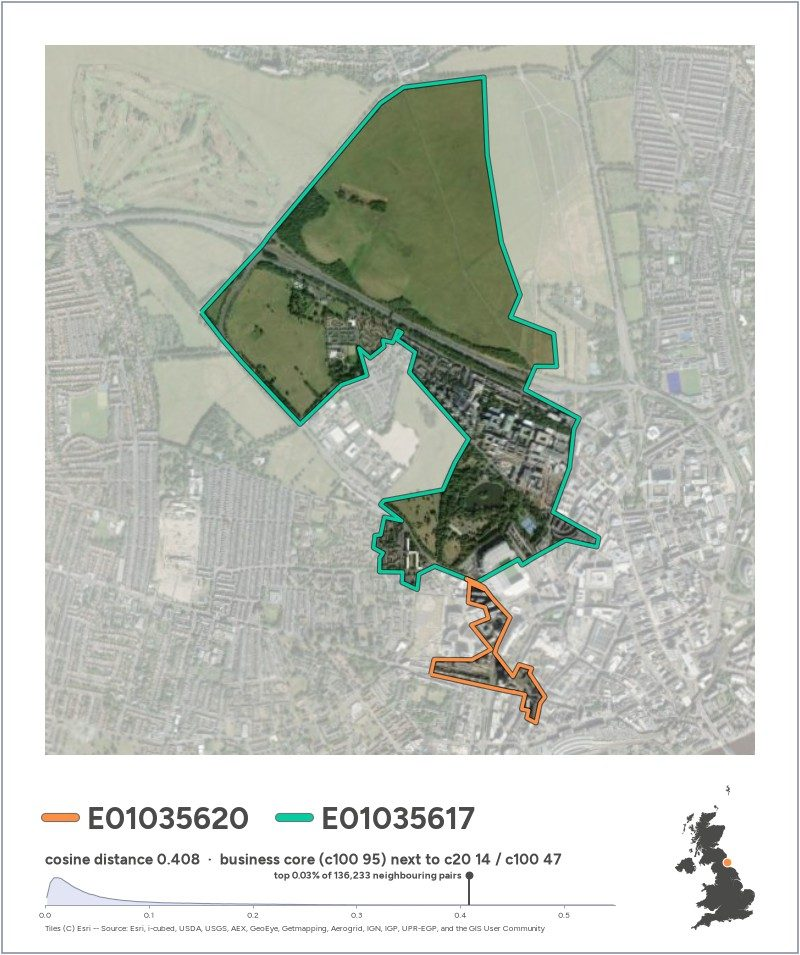<figcaption>Claude looked at <code>p95_0.png</code></figcaption></figure>
<div class="reply">
<p>The histogram works on the first card. I’m now rendering all five.</p>
</div>
<details class="steps"><summary><b>3 steps</b> · Run a shell command · Read scratchpad/p95_grid.png · …</summary><details class="tool"><summary><span class="tool-name">Bash</span> Run a shell command</summary><pre class="tool-in">S=scratchpad/ &amp;&amp; sed -i 's|for i,r in list(enumerate(picks))\[:1\]:|for i,r in enumerate(picks):|' $S/p95.py &amp;&amp; PYTHONPATH=. python $S/p95.py &gt;/dev/null 2&gt;&amp;1 &amp;&amp; cd $S &amp;&amp; python -c "
from PIL import Image
ims=[Image.open(f'p95_{i}.png') for i in range(5)]
w,h=ims[0].size; s=Image.new('RGB',(w*3+40,h*2+30),'white')
for i,im in enumerate(ims): s.paste(im,(10+(i%3)*(w+10),10+(i//3)*(h+10)))
s.save('p95_grid.png')"</pre><pre class="tool-out">Shell cwd was reset to</pre></details><details class="tool"><summary><span class="tool-name">Read</span> Read scratchpad/p95_grid.png</summary><pre class="tool-in"></pre></details><details class="tool"><summary><span class="tool-name">SendUserFile</span> Send files to the user</summary><pre class="tool-in">scratchpad/p95_grid.png
scratchpad/p95_0.png

Top 5 business-core pairs with the distance histogram (all 136,233 neighbouring pairs); single card at full size for detail</pre><pre class="tool-out">2 files delivered to user.
  scratchpad/p95_grid.png → file_uuid: 74d3e74f-48fe-49d3-9f35-b981237d9a5f
  scratchpad/p95_0.png → file_uuid: 541631e0-c0d9-4cd9-ae68-a16eb3f25eb2</pre></details></details><figure class="seen figure"><figcaption>Claude looked at <code>p95_grid.png</code></figcaption></figure><figure class="sent figure"><div class="sent-row"></div><figcaption>Sent to the user: p95_grid.png, p95_0.png</figcaption></figure>
<div class="reply">
<p>The five cards now have the histogram. I’ve sent the grid and the first card at full size.</p>
<p><strong>How it looks:</strong> a slim histogram of all 136,233 neighbouring-pair distances across the whole UK sits in the caption strip, between the subtitle and the credit. It uses light Imago grey with a dark-grey outline, and there’s a small 0–0.5 axis in Figtree. Imago grey is used for a vertical line with a dot at the pair’s distance, labelled with its rank.</p>
<p><strong>What it shows:</strong></p>
<ul>
<li><p>Distances are heavily skewed. The median neighbouring pair is only 0.032 apart, 75% are below 0.07, and the largest is 0.538.</p></li>
<li><p>Every pair here is far out in the tail:</p></li>
</ul>
<div class="line-block"># | Distance | Rank among all pairs |</div>
<p>|—|—|—|</p>
<div class="line-block">1 | 0.408 | top 0.03% |</div>
<div class="line-block">2 | 0.289 | top 0.60% |</div>
<div class="line-block">3 | 0.268 | top 0.97% |</div>
<div class="line-block">4 | 0.257 | top 1.26% |</div>
<div class="line-block">5 | 0.254 | top 1.32% |</div>
<ul>
<li><p>Even the two “weak” Glasgow pairs are more than seven times the median distance.</p></li>
<li><p>The catch is that the main bulk sits in the left fifth of the axis, so the shape reads mainly as “everything is near zero”. A square-root or log x-axis would show more of the shape; tell me if you’d prefer that.</p></li>
</ul>
<p><strong>How it works:</strong> in <code>gdsl30dmc_tools.py</code>:</p>
<ul>
<li><p><code>polaroid</code> and <code>pair_card</code> take <code>hist=False, value=None</code>. With <code>hist=True</code>, the histogram is drawn and <code>value</code> is marked on it.</p></li>
<li><p>A new <code>pair_distances()</code> function computes the cosine distance for every neighbouring pair once and caches it to <code>data/pair_distances_2024.parquet</code>. Its total matches the 136,233 pairs in notebook 1.</p></li>
<li><p>Existing calls are unchanged, since the flag is off by default.</p></li>
</ul>
<p>The five cards are still scratch outputs; I can add them as a section in the clusters notebook and export them to <code>figures/</code>.</p>
</div>
<div class="note prompt" id="p-42"><div class="note-meta"><a href="#p-42">#42</a> · Thu 5 Nov, 22:26</div><div class="note-text">How are the Glasgow ones different? They seem similar to me</div></div>
<details class="steps"><summary><b>1 step</b> · Run a shell command</summary><details class="tool"><summary><span class="tool-name">Bash</span> Run a shell command</summary><pre class="tool-in">cat &gt; scratchpad/glas.py &lt;&lt;'EOF'
import numpy as np, pandas as pd
import gdsl30dmc_tools as tools
a=tools.load_areas(); c=pd.read_parquet("data/clusters_2024.parquet"); a=a.loc[c.index]
E=a[tools.band_columns(a)].to_numpy(); E=E/np.linalg.norm(E,axis=1,keepdims=True)
pos=pd.Series(range(len(a)),index=a.index)
d=tools.pair_distances()
cent={k:(lambda v:v/np.linalg.norm(v))(E[(c.c100==k).to_numpy()].mean(0)) for k in c.c100.unique()}
for x in ["S01017417","S01017432","S01017427","S01017433","S01017414","S01017176"]:
    e=E[pos[x]]; k=c.c100[x]
    m=(c.c100==k).to_numpy(); own=1-E[m]@cent[k]
    nn=np.argsort(-(E@e))[1:6]
    # distance to every centroid -&gt; 2nd best cluster
    dc=sorted((1-e@v,kk) for kk,v in cent.items())[:3]
    print(x, f"km2={a.area[x]/1e6:.2f}", "c100",k, f"dist to own centre {1-e@cent[k]:.3f} (pctile {np.mean(own&lt;=1-e@cent[k]):.0%})",
          "nearest centres", [(kk,round(v,3)) for v,kk in dc])
    print("   5 most similar areas:", [(a.index[i], c.c100.iloc[i], round(1-E[i]@e,3)) for i in nn])
# context: distances within Glasgow city-centre S areas in c100 95 and their neighbours
s95=c.index[(c.c100==95)&amp;c.index.str.startswith("S")]
dd=d[d.index.get_level_values(0).isin(s95)|d.index.get_level_values(1).isin(s95)]
print("pairs touching Scottish c95:",len(dd), dd.describe().round(3).to_dict())
EOF
PYTHONPATH=. python scratchpad/glas.py 2&gt;&amp;1 | grep -vi proj</pre><pre class="tool-out">S01017417 km2=0.10 c100 95 dist to own centre 0.034 (pctile 80%) nearest centres [(np.int64(95), np.float64(0.034)), (np.int64(68), np.float64(0.082)), (np.int64(73), np.float64(0.119))]
   5 most similar areas: [('S01017425', np.int64(95), np.float64(0.005)), ('S01017427', np.int64(95), np.float64(0.005)), ('S01017426', np.int64(95), np.float64(0.006)), ('S01017422', np.int64(95), np.float64(0.007)), ('S01017410', np.int64(95), np.float64(0.008))]
S01017432 km2=0.10 c100 61 dist to own centre 0.042 (pctile 98%) nearest centres [(np.int64(61), np.float64(0.042)), (np.int64(69), np.float64(0.043)), (np.int64(66), np.float64(0.06))]
   5 most similar areas: [('S01017431', np.int64(61), np.float64(0.005)), ('N20001091', np.int64(61), np.float64(0.007)), ('N20001098', np.int64(69), np.float64(0.008)), ('N20001114', np.int64(61), np.float64(0.01)), ('S01017433', np.int64(61), np.float64(0.01))]
S01017427 km2=0.56 c100 95 dist to own centre 0.048 (pctile 92%) nearest centres [(np.int64(95), np.float64(0.048)), (np.int64(68), np.float64(0.094)), (np.int64(73), np.float64(0.151))]
   5 most similar areas: [('S01017415', np.int64(95), np.float64(0.002)), ('S01017422', np.int64(95), np.float64(0.002)), ('S01017417', np.int64(95), np.float64(0.005)), ('S01017173', np.int64(95), np.float64(0.007)), ('S01017426', np.int64(95), np.float64(0.008))]
S01017433 km2=0.06 c100 61 dist to own centre 0.059 (pctile 100%) nearest centres [(np.int64(61), np.float64(0.059)), (np.int64(69), np.float64(0.06)), (np.int64(79), np.float64(0.062))]
   5 most similar areas: [('S01017431', np.int64(61), np.float64(0.005)), ('S01017432', np.int64(61), np.float64(0.01)), ('N20001097', np.int64(61), np.float64(0.012)), ('S01017430', np.int64(61), np.float64(0.013)), ('N20000893', np.int64(61), np.float64(0.016))]
S01017414 km2=0.17 c100 95 dist to own centre 0.025 (pctile 65%) nearest centres [(np.int64(95), np.float64(0.025)), (np.int64(68), np.float64(0.039)), (np.int64(73), np.float64(0.06))]
   5 most similar areas: [('S01017008', np.int64(95), np.float64(0.008)), ('E01034406', np.int64(95), np.float64(0.009)), ('E01033008', np.int64(95), np.float64(0.01)), ('E01035620', np.int64(95), np.float64(0.011)), ('S01017440', np.int64(68), np.float64(0.011))]
S01017176 km2=0.60 c100 32 dist to own centre 0.019 (pctile 68%) nearest centres [(np.int64(32), np.float64(0.019)), (np.int64(37), np.float64(0.021)), (np.int64(45), np.float64(0.026))]
   5 most similar areas: [('S01019826', np.int64(32), 
[… truncated]</pre></details></details>
<div class="reply">
<p>The two weak Glasgow neighbours both stand out in embedding space, so I’m checking what cluster they belong to and what that cluster contains.</p>
</div>
<details class="steps"><summary><b>2 steps</b> · Run a shell command · Read scratchpad/glas_sheet.png</summary><details class="tool"><summary><span class="tool-name">Bash</span> Run a shell command</summary><pre class="tool-in">cat &gt; scratchpad/glas2.py &lt;&lt;'EOF'
import numpy as np, pandas as pd, matplotlib; matplotlib.use("Agg")
import gdsl30dmc_tools as tools
sp="scratchpad/"
a=tools.load_areas(); c=pd.read_parquet("data/clusters_2024.parquet"); a=a.loc[c.index]
m=c.c100==61
print("c100 61:", m.sum(), tools.nation(a[m]).value_counts().to_dict(), "c20:", c.c20[m].value_counts().head(3).to_dict(),
      "median km2", round(a.area[m].median()/1e6,3))
codes=["S01017430","S01017431","S01017432","S01017433","N20001091","N20001114"]
fig=tools.contact_sheet(a,codes,"S01017430–33 (Glasgow) and their closest matches (Belfast?)")
fig.savefig(sp+"glas_sheet.png",dpi=100)
EOF
PYTHONPATH=. python scratchpad/glas2.py 2&gt;&amp;1 | grep -vi proj</pre><pre class="tool-out">c100 61: 420 {'E': 216, 'S': 123, 'N': 70, 'W': 11} c20: {15: 344, 18: 38, 9: 21} median km2 0.15</pre></details><details class="tool"><summary><span class="tool-name">Read</span> Read scratchpad/glas_sheet.png</summary><pre class="tool-in"></pre></details></details><figure class="seen figure">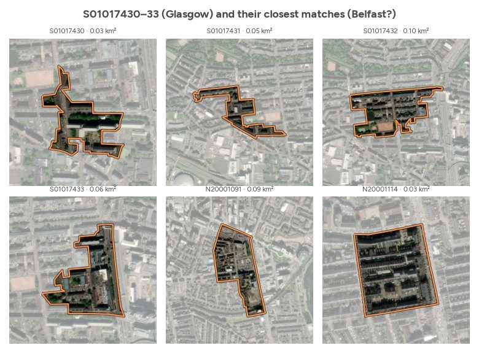<figcaption>Claude looked at <code>glas_sheet.png</code></figcaption></figure>
<div class="reply">
<p>You’re right that they look alike: from above, both sides of those pairs are dense blocks with dark roofs. The embedding does tell them apart, but I wouldn’t use them as cards.</p>
<p><strong>What the model sees</strong></p>
<ul>
<li><p><strong>Orange side (cluster 95):</strong> <code>S01017417</code> and <code>S01017427</code> sit well inside the business-core cluster. Their most similar areas in the whole UK are other Glasgow core zones, and <code>S01017414</code>’s include London and Manchester cores. To the model they’re office districts.</p></li>
<li><p><strong>Green side (cluster 61):</strong> <code>S01017432</code> and <code>S01017433</code> belong to a tenement and terrace housing cluster. 82% of its areas fall in the k=20 “Victorian terraces” cluster. Their most similar areas are neighbouring Glasgow zones (<code>S01017430</code>/<code>31</code>) and several Northern Irish areas, which I’d guess are Belfast but haven’t checked.</p></li>
</ul>
<p>So the 0.25–0.27 distance probably reflects the difference between commercial and residential use: building heights, flat versus pitched roofs, courtyard greenery. AlphaEarth mixes radar and multispectral inputs that respond to these. That’s my reading, not something I’ve tested.</p>
<p><strong>Why the distance is still shaky</strong></p>
<ol type="1">
<li><p><strong>The areas are tiny.</strong> These zones cover 0.03–0.10 km², which is only a few hundred 10 m pixels. Roads and edges weigh heavily in their average, so their vectors are noisier than most.</p></li>
<li><p><strong>The green areas are borderline members of their own cluster.</strong> <code>S01017432</code> is further from its cluster centre than 98% of the other members, and <code>S01017433</code> is the furthest of all. They sit on the edge of the cluster, closer to the business core than to typical tenements.</p></li>
<li><p><strong>These are simply the extremes of a small pool.</strong> Pairs touching Scottish business-core areas have a median distance of 0.036. The highest is 0.268, which is pair 3. Cluster 95 has only 133 areas, so after the first two cards we’re down to subtle contrasts.</p></li>
</ol>
<p>I’ve sent a contact sheet of the four Glasgow tenement zones next to their two closest Northern Irish matches. You can see they’re the same type: courtyard blocks with dark roofs.</p>
<p><strong>My suggestion:</strong> keep pairs 1, 2 and 4, which show visible contrasts (fields and campus, reservoir and sheds, riverside park). Drop 3 and 5. Going forward, I’d add a cut-off for “card-worthy” pairs: a minimum distance (for example the top 0.5% of pairs, about 0.27), a minimum area so tiny zones don’t produce noise, or both.</p>
</div>
<div class="note prompt" id="p-43"><div class="note-meta"><a href="#p-43">#43</a> · Thu 5 Nov, 22:29</div><div class="note-text">OK let’s explore Polaroids in this cluster but for the lag rather than pairs. Show me the top 5</div></div>
<details class="steps"><summary><b>1 step</b> · Run a shell command</summary><details class="tool"><summary><span class="tool-name">Bash</span> Run a shell command</summary><pre class="tool-in">nb search gdsl30dmc.ipynb "lag_dist" 2&gt;&amp;1 | head -40</pre><pre class="tool-out"># Found 11 match(es) in 8 cell(s)

@@notebook {"format":"ai-notebook","metadata":{"kernelspec":{"display_name":"GDS-2026-10-19_amd64","name":"gds"}}}

@@cell {"cell_type":"markdown","id":"f82bee06-feb5-4023-9e2f-5c2d42851c5d","index":22}
### Dissimilarity from the whole neighbourhood

Two ways to score how different an area is from its neighbourhood as a whole, using equal weights for every neighbour:

- **`mean_dist`**: the average of the cosine distances to each neighbour, i.e. how different the area is from its neighbours one by one. Taken from the weights of `g_dist`.
- **`lag_dist`**: the cosine distance to the *average neighbour*, i.e. how different the area is from its surroundings taken together. The average neighbour is the spatial lag of the embeddings on the row-standardised graph.

Since averaging neighbours tends to cancel out their differences, `lag_dist` should be at most `mean_dist` for nearly every area. The gap between the two is roughly how much the neighbours differ among themselves.

@@cell {"cell_type":"code","execution_count":15,"id":"105ff4a9-d0b4-4306-b60b-5cd11eda30ce","index":23}
```python
emb_lag = g.transform("r").lag(emb)  # row i = mean embedding of area i's neighbours

neighbourhood = pd.DataFrame({
    "mean_dist": g_dist.aggregate("mean").reindex(lsoas.index),
    "lag_dist": paired_cosine_distances(emb, emb_lag),
}, index=lsoas.index)

assert neighbourhood.notna().all().all()
print("Areas where lag_dist &gt; mean_dist:", (neighbourhood.lag_dist &gt; neighbourhood.mean_dist).sum())
print("Spearman rank correlation:", round(neighbourhood.corr(method="spearman").iloc[0, 1], 3))
neighbourhood.describe()
```

@@output {"name":"stdout","output_type":"stream"}
```text
Areas where lag_dist &gt; mean_dist: 0
Spearman rank correlation: 0.839

```

@@output {"execution_count":15,"mime":"text/html","output_type":"execute_result"}
```html
&lt;div&gt;
&lt;style scoped&gt;</pre></details></details>
<div class="reply">
<p>Now I’ll make the histogram work for neighbourhood scores too, not just pairs. That needs the <code>lag_dist</code> of all areas, cached in the shared module.</p>
</div>
<details class="steps"><summary><b>3 steps</b> · Run a shell command · Read scratchpad/l95_grid.png · …</summary><details class="tool"><summary><span class="tool-name">Bash</span> Run a shell command</summary><pre class="tool-in">python - &lt;&lt;'EOF'
p="gdsl30dmc_tools.py"; s=open(p).read()
s=s.replace('''# --- Polaroid cards''','''def neighbourhood_distances(areas=None, g=None, cache=DATA_DIR / "neighbourhood_distances_2024.parquet"):
    """Per-area `mean_dist` (average cosine distance to each neighbour) and `lag_dist` (cosine distance to the
    average neighbour, i.e. the spatial lag on the row-standardised graph), cached to disk.

    Without `areas` and `g`, loads the cache (or builds it from the 2024 data, dropping isolates).
    """
    if cache is not None and Path(cache).exists():
        return pd.read_parquet(cache)
    if areas is None or g is None:
        areas = load_areas()
        areas, g = drop_isolates(areas, contiguity(areas))
    emb = np.ascontiguousarray(areas[band_columns(areas)].to_numpy())
    lag = g.transform("r").lag(emb)
    unit = lambda x: x / np.linalg.norm(x, axis=1, keepdims=True)
    pairs = pair_distances(areas, g)
    both = pd.concat([pairs.reset_index(), pairs.reset_index().rename(columns={"a": "b", "b": "a"})])
    out = pd.DataFrame({
        "mean_dist": both.groupby("a")["dist"].mean().reindex(areas.index),
        "lag_dist": 1 - (unit(emb) * unit(lag)).sum(axis=1),
    }, index=areas.index)
    if cache is not None:
        out.to_parquet(cache)
    return out


# --- Polaroid cards''')
s=s.replace('''def _distance_strip(fig, value, rect):
    """Slim histogram of all neighbouring-pair distances in the dataset, with `value` marked on it."""
    dist = pair_distances().to_numpy()''','''def _distance_strip(fig, value, rect, measure="pair"):
    """Slim histogram of a distance measure over the whole dataset, with `value` marked on it.

    measure -- "pair" (all neighbouring pairs, see `pair_distances`) or "mean_dist" / "lag_dist" (all areas,
               see `neighbourhood_distances`)
    """
    if measure == "pair":
        dist, unit = pair_distances().to_numpy(), "neighbouring pairs"
    else:
        dist, unit = neighbourhood_distances()[measure].to_numpy(), f"areas on {measure}"''')
[… truncated]</pre><pre class="tool-out">167:def _distance_strip(fig, value, rect, measure="pair"):
251:                        measure="pair" if hist is True else hist)
267:                    hist=hist, value=value)
275:                    locate=pd.concat([area_a, area_b]).union_all(), outline=outline, hist=hist, value=value)
       mean_dist   lag_dist
count  46832.000  46832.000
mean       0.053      0.026
std        0.033      0.026
min        0.001      0.000
25%        0.029      0.009
50%        0.046      0.017
75%        0.069      0.032
max        0.456      0.438
max lag E01030745
                mean_dist  lag_dist  nbrs    km2
data_zone_code                                  
E01034486           0.236     0.180     3  0.086
S01017173           0.100     0.096     2  0.016
E01034178           0.089     0.086     2  0.022
E01033684           0.106     0.084     3  0.045
E01033874           0.091     0.076     5  0.057
E01034406           0.099     0.074     6  0.146
E01034195           0.098     0.072     4  0.019
E01033999           0.080     0.072     2  0.083
E01035620           0.139     0.071     5  0.086
E01034224           0.104     0.071     6  0.480</pre></details><details class="tool"><summary><span class="tool-name">Read</span> Read scratchpad/l95_grid.png</summary><pre class="tool-in"></pre></details><details class="tool"><summary><span class="tool-name">SendUserFile</span> Send files to the user</summary><pre class="tool-in">scratchpad/l95_grid.png

Top 5 business-core (c100 95) areas by lag_dist, with the lag_dist histogram over all 46,832 areas</pre><pre class="tool-out">1 file delivered to user.
  scratchpad/l95_grid.png → file_uuid: aaf36a97-6400-4888-9d62-e25d8ac834e7</pre></details></details><figure class="seen figure">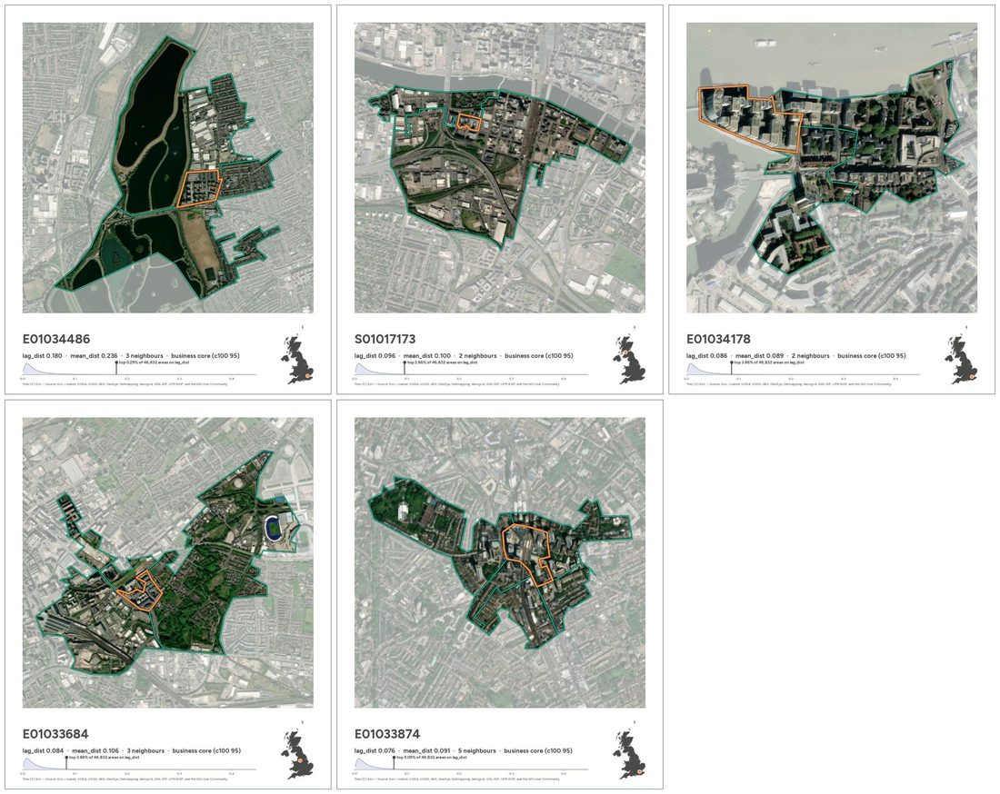<figcaption>Claude looked at <code>l95_grid.png</code></figcaption></figure><figure class="sent figure"><div class="sent-row"></div><figcaption>Sent to the user: l95_grid.png</figcaption></figure>
<div class="reply">
<p>Here are the top five business-core areas (k=100 cluster 95) ranked by <code>lag_dist</code>, each with the whole-UK <code>lag_dist</code> histogram underneath.</p>
<div class="line-block"># | Area | lag_dist | Rank among all areas | What you see |</div>
<p>|—|—|—|—|—|</p>
<div class="line-block">1 | <code>E01034486</code> | <strong>0.180</strong> | top 0.29% | An office and flats block surrounded by reservoirs, sheds and a field. Same area as pair card 2. |</div>
<div class="line-block">2 | <code>S01017173</code> | 0.096 | top 2.7% | A tiny Glasgow block (0.016 km²) whose neighbours are a motorway interchange, rail lines and sheds. |</div>
<div class="line-block">3 | <code>E01034178</code> | 0.086 | top 3.7% | Riverside towers on the Thames, with low-rise housing and greenery behind them. |</div>
<div class="line-block">4 | <code>E01033684</code> | 0.084 | top 3.9% | An office block among parkland, rail yards and a stadium. |</div>
<div class="line-block">5 | <code>E01033874</code> | 0.076 | top 5.1% | Towers around a station, ringed by leafy housing. |</div>
<p><strong>What stands out:</strong></p>
<ul>
<li><p><strong>Only #1 is a real outlier.</strong> After it, the cards fall to the top 3–5%, which the histogram line makes obvious.</p></li>
<li><p><strong>Averaging dilutes the contrast.</strong> <code>lag_dist</code> compares an area with the average of its neighbours. Business cores are usually surrounded by mixed fabric, so a park on one side and dense blocks on the other cancel out. On average, <code>lag_dist</code> is half of <code>mean_dist</code> (0.026 vs 0.053).</p></li>
<li><p><strong>Few neighbours and tiny areas push the score up.</strong> Most of these areas have only 2–3 neighbours, and #2 and #3 cover around 0.02 km² each. That’s the same small-area noise we saw with the Glasgow pairs.</p></li>
<li><p><strong>Cards 3–5 are still good pictures</strong> even though their scores are modest. They show the “towers dropped into a neighbourhood” idea well. Card 3, with its towers by the river, is the most striking.</p></li>
</ul>
<p><strong>Code changes:</strong></p>
<ul>
<li><p><code>area_card</code> and <code>polaroid</code> now accept <code>hist="lag_dist"</code> or <code>hist="mean_dist"</code>, as well as <code>True</code> for pairs.</p></li>
<li><p>The axis label adapts, for example “top 0.29% of 46,832 areas on lag_dist”.</p></li>
<li><p>A new <code>tools.neighbourhood_distances()</code> caches both measures to <code>data/neighbourhood_distances_2024.parquet</code>. It agrees with notebook 1: same summary statistics, and the maximum is still the Staines reservoir area.</p></li>
</ul>
<p>The cards are still scratch outputs in <code>scratchpad/</code>. I can put the business-core exploration (pairs and lag) into a section of the clusters notebook. Adding the minimum-area or minimum-neighbours filter I suggested earlier would also clean up these rankings.</p>
</div>
<div class="note prompt" id="p-44"><div class="note-meta"><a href="#p-44">#44</a> · Thu 5 Nov, 22:35</div><div class="note-text">One more tweak to the Polaroid: do you think we can fit an additional graph that is a horizontal bar chart with one bar per embedding dimension and two bars/values in each bar, one orange and one green, corresponding to the values for each area respectively. Basically, I want to visualise the differences in the two embeddings being compared. Maybe this is too crammed and is instead better to do it in lieu of the histogram? Add a flag on the Polaroid method and show me a couple of examples</div></div>
<details class="steps"><summary><b>9 steps</b> · Read gdsl30dmc_tools.py · Run a shell command · …</summary><details class="tool"><summary><span class="tool-name">Read</span> Read gdsl30dmc_tools.py</summary><pre class="tool-in"></pre><pre class="tool-out">160        rgb = img[..., :3] / 255
161     h, w = rgb.shape[:2]
162     xx, yy = np.meshgrid(np.linspace(ext[0], ext[1], w), np.linspace(ext[3], ext[2], h))
163     inside = shapely.contains_xy(keep, xx, yy)[..., None]
164     return np.where(inside, rgb, rgb * (1 - wash) + wash), ext
165 
166 
167 def _distance_strip(fig, value, rect, measure="pair"):
168     """Slim histogram of a distance measure over the whole dataset, with `value` marked on it.
169 
170     measure -- "pair" (all neighbouring pairs, see `pair_distances`) or "mean_dist" / "lag_dist" (all areas,
171                see `neighbourhood_distances`)
172     """
173     if measure == "pair":
174         dist, unit = pair_distances().to_numpy(), "neighbouring pairs"
175     else:
176         dist, unit = neighbourhood_distances()[measure].to_numpy(), f"areas on {measure}"
177     ax = fig.add_axes(rect)
178     bins = np.linspace(0, max(dist.max(), value) * 1.02, 160)
179     counts, edges = np.histogram(dist, bins=bins, density=True)
180     mids = (edges[:-1] + edges[1:]) / 2
181     ax.fill_between(mids, counts, color=IMAGO["light_grey"], lw=0)
182     ax.plot(mids, counts, color=IMAGO["dark_grey"], lw=0.8)
183     ax.axvline(value, color=IMAGO["imago_grey"], lw=1.4)
184     ax.scatter([value], [counts.max() * 1.1], s=22, color=IMAGO["imago_grey"], zorder=3, clip_on=False)
185     share = (dist &gt;= value).mean()
186     right = value &lt; bins[-1] * 0.6
187     label = f"top {share:.2%} of {len(dist):,} {unit}"
188     ax.text(value + (1 if right else -1) * bins[-1] * 0.012, counts.max() * 1.1, label, fontsize=7.5,
189             va="center", ha="left" if right else "right", **TEXT)
190     ax.set_xlim(bins[0], bins[-1]); ax.set_ylim(0, counts.max() * 1.1)
191     ax.set_yticks([])
192     for side in ["top", "right", "left"]:
193         ax.spines[side].set_visible(False)
194     ax.spines["bottom"].set_color(IMAGO["dark_grey"]); ax.spines["bottom"].set_linewidth(0.6)
195     ax.tick_params(axis="x", length=2, width=0.6, color=IMAGO["dark_grey"], labelsize=6, pad=1.5,
196                    labelcolor=IMAGO["imago_grey"])
197     ax.set_xticks(np.arange(0, bins[-1], 0.1))
198     for t in ax.get_xticklabels():
199         t.set_family("Figtree")
[… truncated]</pre></details><details class="tool"><summary><span class="tool-name">Bash</span> Run a shell command</summary><pre class="tool-in">python - &lt;&lt;'EOF'
p="gdsl30dmc_tools.py"; s=open(p).read()
s=s.replace('''def polaroid(layers, title, subtitle, locate, outline, hist=False, value=None):''','''def _embedding_strip(fig, emb, rect):
    """Paired columns, one per embedding band: the orange area's value next to the green one's."""
    a, b = (np.asarray(v, dtype=float) for v in emb)
    ax = fig.add_axes(rect)
    i = np.arange(len(a))
    ax.bar(i - 0.2, a, width=0.4, color=IMAGO["orange"], lw=0)
    ax.bar(i + 0.2, b, width=0.4, color=IMAGO["green"], lw=0)
    ax.axhline(0, color=IMAGO["dark_grey"], lw=0.6)
    top = np.abs(np.r_[a, b]).max() * 1.05
    ax.set_xlim(-0.8, len(a) - 0.2); ax.set_ylim(-top, top)
    ax.set_yticks([])
    for side in ax.spines:
        ax.spines[side].set_visible(False)
    ax.set_xticks(i[::8])
    ax.set_xticklabels([f"A{k:02d}" for k in i[::8]], family="Figtree")
    ax.tick_params(axis="x", length=0, labelsize=6, pad=1.5, labelcolor=IMAGO["imago_grey"])
    ax.text(len(a) - 0.2, top, f"{len(a)} embedding bands", fontsize=7.5, va="bottom", ha="right", **TEXT)
    ax.patch.set_alpha(0)
    return ax


def polaroid(layers, title, subtitle, locate, outline, hist=False, value=None, emb=None):''')
s=s.replace('''                caption strip, with `value` marked on it; "mean_dist" or "lag_dist" use that per-area measure instead
    """''','''                caption strip, with `value` marked on it; "mean_dist" or "lag_dist" use that per-area measure instead
    emb      -- optional (orange vector, green vector): paired columns comparing the two embeddings band by band,
                in the histogram's place; with both, the caption strip grows to fit the embeddings above the histogram
    """''')
s=s.replace('''    fig = plt.figure(figsize=(CARD_W, CARD_H), facecolor=IMAGO["white"])''','''    both = bool(hist) and emb is not None
    STRIP = globals()["STRIP"] + (0.75 if both else 0)  # deeper caption strip when it holds both charts
    CARD_H = CARD_W - BORDER + STRIP
    fig = plt.figure(figsize=(CARD_W, CARD_H), facecolor=IMAGO["white"])''')
s=s.replace('''    if hist:
        _distance_strip(''','''    chart_w = (CARD_W - 2 * BORDER - 1.4) / CARD_W
    if emb is not None:
        y, h = (1.05, 0.55) if both else (0.45, 0.4)
        _embedding_strip(fig, emb, [BORDER / CARD_W, y / CARD_H, chart_w, h / CARD_H])
    if hist:
        _distance_strip(''')
[… truncated]</pre><pre class="tool-out">53:    """Remove areas with no neighbours from both the table and the graph."""
121:    both = pd.concat([pairs.reset_index(), pairs.reset_index().rename(columns={"a": "b", "b": "a"})])
123:        "mean_dist": both.groupby("a")["dist"].mean().reindex(areas.index),
236:                in the histogram's place; with both, the caption strip grows to fit the embeddings above the histogram
246:    both = bool(hist) and emb is not None
247:    STRIP = globals()["STRIP"] + (0.75 if both else 0)  # deeper caption strip when it holds both charts
277:        y, h = (1.05, 0.55) if both else (0.45, 0.4)
297:                    hist=hist, value=value, emb=emb)
306:                    emb=emb)
['band1_mean', 'band2_mean', 'band3_mean'] [0.93814811 0.95571935 0.95580237 0.9575468  0.97172853]</pre></details><details class="tool"><summary><span class="tool-name">Read</span> Read scratchpad/emb_pair.png</summary><pre class="tool-in"></pre></details><details class="tool"><summary><span class="tool-name">Read</span> Read scratchpad/emb_lag_both.png</summary><pre class="tool-in"></pre></details><details class="tool"><summary><span class="tool-name">Bash</span> Run a shell command</summary><pre class="tool-in">python - &lt;&lt;'EOF'
p="gdsl30dmc_tools.py"; s=open(p).read()
s=s.replace('''    ax.bar(i - 0.2, a, width=0.4, color=IMAGO["orange"], lw=0)
    ax.bar(i + 0.2, b, width=0.4, color=IMAGO["green"], lw=0)''','''    ax.bar(i - 0.21, a, width=0.42, color=IMAGO["orange"], lw=0)
    ax.bar(i + 0.21, b, width=0.42, color=IMAGO["green"], lw=0)''')
s=s.replace('''    ax.set_xticks(i[::8])
    ax.set_xticklabels([f"A{k:02d}" for k in i[::8]], family="Figtree")
    ax.tick_params(axis="x", length=0, labelsize=6, pad=1.5, labelcolor=IMAGO["imago_grey"])
    ax.text(len(a) - 0.2, top, f"{len(a)} embedding bands", fontsize=7.5, va="bottom", ha="right", **TEXT)''','''    ticks = [0] + list(range(7, len(a) - 8, 8))  # bands are numbered from 1, as in the data's columns
    ax.set_xticks(ticks)
    ax.set_xticklabels([str(k + 1) for k in ticks], family="Figtree")
    ax.tick_params(axis="x", length=0, labelsize=6, pad=1.5, labelcolor=IMAGO["imago_grey"])
    ax.text(len(a) - 0.2, -top, "embedding band", fontsize=6, va="top", ha="right",
            transform=ax.transData, **{**TEXT, "weight": "regular"})''')
s=s.replace('''    both = bool(hist) and emb is not None
    STRIP = globals()["STRIP"] + (0.75 if both else 0)  # deeper caption strip when it holds both charts''','''    both = bool(hist) and emb is not None
    # Deeper caption strip when it holds the embedding chart (and more again with the histogram as well)
    STRIP = globals()["STRIP"] + (0 if emb is None else 0.9 if both else 0.35)''')
s=s.replace('''        y, h = (1.05, 0.55) if both else (0.45, 0.4)''','''        y, h = (1.05, 0.6) if both else (0.5, 0.6)''')
open(p,"w").write(s)
EOF
PYTHONPATH=. python scratchpad/emb.py &gt;/dev/null 2&gt;&amp;1; echo $?</pre><pre class="tool-out">0</pre></details><details class="tool"><summary><span class="tool-name">Read</span> Read scratchpad/emb_pair.png</summary><pre class="tool-in"></pre></details><details class="tool"><summary><span class="tool-name">Read</span> Read scratchpad/emb_lag_both.png</summary><pre class="tool-in"></pre></details><details class="tool"><summary><span class="tool-name">Bash</span> Run a shell command</summary><pre class="tool-in">cd scratchpad/ &amp;&amp; python -c "
from PIL import Image
ims=[Image.open(f) for f in ['emb_pair.png','emb_pair_both.png','emb_lag.png','emb_lag_both.png']]
H=max(i.size[1] for i in ims); W=sum(i.size[0] for i in ims)+50
s=Image.new('RGB',(W,H+20),'white'); x=10
for im in ims: s.paste(im,(x,10)); x+=im.size[0]+10
s.save('emb_grid.png')"</pre><pre class="tool-out">Shell cwd was reset to</pre></details><details class="tool"><summary><span class="tool-name">SendUserFile</span> Send files to the user</summary><pre class="tool-in">scratchpad/emb_grid.png
scratchpad/emb_pair.png

Embedding bars: pair card (bars only / bars + histogram) and lag card (bars only / bars + histogram); then the pair card with bars only at full size</pre><pre class="tool-out">2 files delivered to user.
  scratchpad/emb_grid.png → file_uuid: da5bc5db-7f36-4b91-a7b9-60ad36471a08
  scratchpad/emb_pair.png → file_uuid: 92bd1b85-4f53-4406-a201-d76c021f991e</pre></details></details><figure class="seen figure">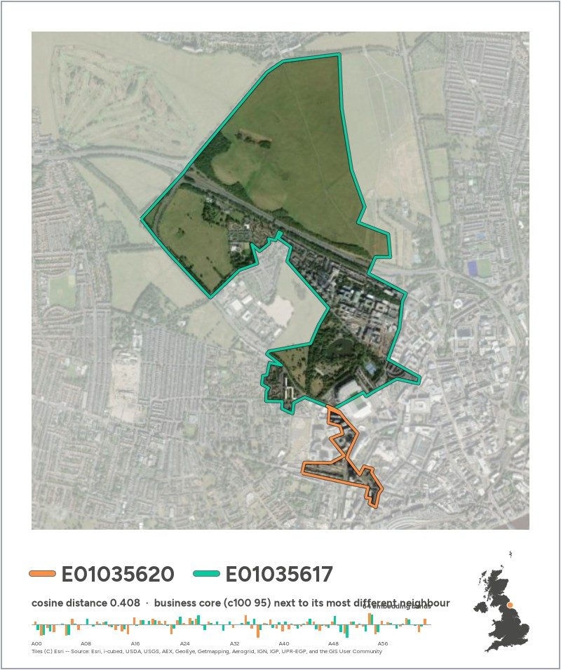<figcaption>Claude looked at <code>emb_pair.png</code></figcaption></figure><figure class="seen figure">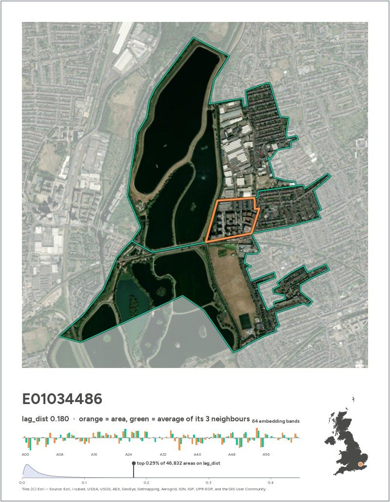<figcaption>Claude looked at <code>emb_lag_both.png</code></figcaption></figure><figure class="seen figure"><figcaption>Claude looked at <code>emb_pair.png</code></figcaption></figure><figure class="seen figure"><figcaption>Claude looked at <code>emb_lag_both.png</code></figcaption></figure><figure class="sent figure"><div class="sent-row"></div><figcaption>Sent to the user: emb_pair.png</figcaption></figure>
<div class="reply">
<p>The band chart fits. I’ve sent the two cards in four versions: the pair card (business core next to fields, 0.408) and the reservoir card (<code>lag_dist</code>, orange is the area and green is the average of its 3 neighbours), each with the band chart only and with the chart plus the histogram. The pair card with bars only is also attached at full size.</p>
<p><strong>How it’s built:</strong></p>
<ul>
<li><p>New <code>emb=(orange_vector, green_vector)</code> argument on <code>polaroid</code>, <code>pair_card</code> and <code>area_card</code>.</p></li>
<li><p>One column per band (1–64, numbered as in the data) with the orange and green bars side by side, and a thin zero line.</p></li>
<li><p><strong>Band chart only:</strong> it takes the histogram’s slot, and the caption strip grows by 0.35 in so the bars have room.</p></li>
<li><p><strong>Band chart and histogram together:</strong> the strip grows by 0.9 in, so the card goes from 9.55 to 10.1 in tall. It still reads as a Polaroid with a deep bottom margin, and nothing overlaps.</p></li>
</ul>
<p><strong>I’d use it instead of the histogram, not alongside it.</strong> The two together make the caption busy and stretch the card. The histogram answers “how unusual is this?” with one mark, while the bars are texture you have to study.</p>
<p><strong>The bars show that the areas differ, but not clearly how.</strong> 64 pairs of small bars mostly read as a pattern. You can pick out bands where the colours have opposite signs (around 3–5, 37 and 53), but there is no single standout band. That’s expected: a cosine distance of 0.4 is spread across many bands, and the bands don’t have meanings we could label.</p>
<p>To make it clearer, I’d replace the paired bars with <strong>one bar per band showing the difference</strong> (orange minus green), coloured orange or green by which area is higher. That halves the number of marks and makes the large gaps pop. I can also sort the bands by the size of the gap, which turns the chart into a profile that tapers off. Unsorted, it reads more like a fingerprint. Want me to try the difference version?</p>
</div>
<div class="note prompt" id="p-45"><div class="note-meta"><a href="#p-45">#45</a> · Thu 5 Nov, 22:39</div><div class="note-text">Let’s try the difference and also this other option: one bar only with both orange and green on top of each other with transparency. That way similar dimensions are obvious and don’t take up space, while different ones are also clear</div></div>
<details class="steps"><summary><b>3 steps</b> · Run a shell command · Read scratchpad/strips_200.png · …</summary><details class="tool"><summary><span class="tool-name">Bash</span> Run a shell command</summary><pre class="tool-in">python - &lt;&lt;'EOF'
p="gdsl30dmc_tools.py"; s=open(p).read()
s=s.replace('''def _embedding_strip(fig, emb, rect):
    """Paired columns, one per embedding band: the orange area's value next to the green one's."""
    a, b = (np.asarray(v, dtype=float) for v in emb)
    ax = fig.add_axes(rect)
    i = np.arange(len(a))
    ax.bar(i - 0.21, a, width=0.42, color=IMAGO["orange"], lw=0)
    ax.bar(i + 0.21, b, width=0.42, color=IMAGO["green"], lw=0)
    ax.axhline(0, color=IMAGO["dark_grey"], lw=0.6)
    top = np.abs(np.r_[a, b]).max() * 1.05''','''def _embedding_strip(fig, emb, rect, style="paired"):
    """One column per embedding band comparing the orange area's value with the green one's.

    style -- "paired" (orange and green bars side by side), "overlay" (both in the same slot, semi-transparent, so
             bands where they agree merge and the gaps stand out) or "diff" (a single bar, orange minus green,
             coloured by whichever area is higher)
    """
    a, b = (np.asarray(v, dtype=float) for v in emb)
    ax = fig.add_axes(rect)
    i = np.arange(len(a))
    if style == "paired":
        ax.bar(i - 0.21, a, width=0.42, color=IMAGO["orange"], lw=0)
        ax.bar(i + 0.21, b, width=0.42, color=IMAGO["green"], lw=0)
        top = np.abs(np.r_[a, b]).max() * 1.05
    elif style == "overlay":
        ax.bar(i, a, width=0.75, color=IMAGO["orange"], alpha=0.6, lw=0)
        ax.bar(i, b, width=0.75, color=IMAGO["green"], alpha=0.6, lw=0)
        top = np.abs(np.r_[a, b]).max() * 1.05
    elif style == "diff":
        d = a - b
        ax.bar(i, d, width=0.75, color=np.where(d &gt;= 0, IMAGO["orange"], IMAGO["green"]), lw=0)
        top = np.abs(d).max() * 1.05
    else:
        raise ValueError(f"unknown style {style!r}")
    ax.axhline(0, color=IMAGO["dark_grey"], lw=0.6)''')
s=s.replace('''def polaroid(layers, title, subtitle, locate, outline, hist=False, value=None, emb=None):''','''def polaroid(layers, title, subtitle, locate, outline, hist=False, value=None, emb=None, emb_style="paired"):''')
s=s.replace('''                in the histogram's place; with both, the caption strip grows to fit the embeddings above the histogram
    """''','''                in the histogram's place; with both, the caption strip grows to fit the embeddings above the histogram
    emb_style -- how to draw `emb`: "paired", "overlay" or "diff" (see `_embedding_strip`)
    """''')
[… truncated]</pre><pre class="tool-out">243:def polaroid(layers, title, subtitle, locate, outline, hist=False, value=None, emb=None, emb_style="paired"):
255:    emb_style -- how to draw `emb`: "paired", "overlay" or "diff" (see `_embedding_strip`)
298:        _embedding_strip(fig, emb, [BORDER / CARD_W, y / CARD_H, chart_w, h / CARD_H], style=emb_style)
311:def area_card(areas, code, neighbours, subtitle, outline, hist=False, value=None, emb=None, emb_style="paired"):
312:    """Card for area `code` (orange) and its `neighbours` (green); `hist`/`value`/`emb`/`emb_style` as in `polaroid`."""
317:                    hist=hist, value=value, emb=emb, emb_style=emb_style)
320:def pair_card(areas, a, b, subtitle, outline, hist=False, value=None, emb=None, emb_style="paired"):
321:    """Card for neighbouring areas `a` (orange) and `b` (green); `hist`/`value`/`emb`/`emb_style` as in `polaroid`."""
326:                    emb=emb, emb_style=emb_style)</pre></details><details class="tool"><summary><span class="tool-name">Read</span> Read scratchpad/strips_200.png</summary><pre class="tool-in"></pre></details><details class="tool"><summary><span class="tool-name">SendUserFile</span> Send files to the user</summary><pre class="tool-in">scratchpad/strips_200.png
scratchpad/emb2_grid.png

Caption strips at export resolution (overlay above, diff below); then full cards: pair overlay, lag overlay, pair diff, lag diff</pre><pre class="tool-out">2 files delivered to user.
  scratchpad/strips_200.png → file_uuid: 77727b8a-67cf-41a5-9fad-78810dfe1321
  scratchpad/emb2_grid.png → file_uuid: e68f5d36-aaf2-4afd-ad71-d4941a097aa3</pre></details></details><figure class="seen figure"><figcaption>Claude looked at <code>strips_200.png</code></figcaption></figure><figure class="sent figure"><div class="sent-row"></div><figcaption>Sent to the user: strips_200.png</figcaption></figure>
<div class="reply">
<p>I’ve made both options and sent them:</p>
<ul>
<li><p><strong>Strip close-ups:</strong> the caption strip of the fields-and-campus pair card (0.408) at export resolution, with overlay on top and difference below.</p></li>
<li><p><strong>Full cards:</strong> the pair card and the reservoir <code>lag_dist</code> card in each style.</p></li>
</ul>
<p>In the code, <code>emb_style=</code> now takes <code>"paired"</code>, <code>"overlay"</code> or <code>"diff"</code> on <code>polaroid</code>, <code>pair_card</code> and <code>area_card</code>. The default is still <code>"paired"</code>.</p>
<p><strong>Overlay:</strong> both bars sit in the same slot at 60% opacity.</p>
<ul>
<li><p>It does what you described. Where the two areas agree, the bars merge into one solid block (bands 3, 6, 18, 49, 50). Where they disagree, you see separate pale orange and green tips, or bars pointing in opposite directions (4, 15, 24, 37).</p></li>
<li><p>It keeps the actual values, so you can see whether both areas are high or low on a band.</p></li>
<li><p><strong>Weakness:</strong> orange over green blends to a muddy dark teal, so the shared part reads as a third colour rather than “same”.</p></li>
</ul>
<p><strong>Difference:</strong> one bar per band (orange value minus green value), orange if the orange area is higher and green if the green area is.</p>
<ul>
<li><p>It’s the cleaner of the two. Similar bands nearly disappear (2, 5, 6, 13, 33), and the largest gaps stand out (1, 16, 17, 36, 37, 39).</p></li>
<li><p>It answers “where do they differ?” directly.</p></li>
<li><p><strong>Weakness:</strong> you lose the actual values. A band where both areas are strongly positive looks the same as one where both are near zero.</p></li>
</ul>
<p><strong>My pick is the difference style.</strong> It matches the story of each card best, and it’s the calmest visually.</p>
<p>If you want to keep the overlay idea, one refinement would fix the muddy colour: draw the part the two areas share in light Imago grey, and only the excess in orange or green. Agreement then reads as neutral grey and only the differences are coloured. Want me to try that, or go with the difference style?</p>
</div>
<div class="note prompt" id="p-46"><div class="note-meta"><a href="#p-46">#46</a> · Thu 5 Nov, 22:43</div><div class="note-text">Yeah give it a try</div></div>
<details class="steps"><summary><b>4 steps</b> · Run a shell command · Read scratchpad/strips3_200.png · …</summary><details class="tool"><summary><span class="tool-name">Bash</span> Run a shell command</summary><pre class="tool-in">python - &lt;&lt;'EOF'
p="gdsl30dmc_tools.py"; s=open(p).read()
s=s.replace('''    elif style == "diff":
        d = a - b''','''    elif style == "shared":
        same = np.sign(a) == np.sign(b)
        common = np.where(same, np.sign(a) * np.minimum(np.abs(a), np.abs(b)), 0)
        ax.bar(i, common, width=0.75, color=IMAGO["grey"], lw=0)
        for v, colour in [(a, IMAGO["orange"]), (b, IMAGO["green"])]:
            ax.bar(i, v - common, bottom=common, width=0.75, color=colour, lw=0)
        top = np.abs(np.r_[a, b]).max() * 1.05
    elif style == "diff":
        d = a - b''')
s=s.replace('''    style -- "paired" (orange and green bars side by side), "overlay" (both in the same slot, semi-transparent, so
             bands where they agree merge and the gaps stand out) or "diff" (a single bar, orange minus green,
             coloured by whichever area is higher)''','''    style -- "paired" (orange and green bars side by side), "overlay" (both in the same slot, semi-transparent, so
             bands where they agree merge and the gaps stand out), "shared" (like "overlay", but the part both share
             is grey and only the excess is coloured) or "diff" (a single bar, orange minus green, coloured by
             whichever area is higher)''')
s=s.replace('''"paired", "overlay" or "diff" (see''','''"paired", "overlay", "shared" or "diff" (see''')
open(p,"w").write(s)
EOF
S=scratchpad/
sed -e 's/for st in \["overlay","diff"\]/for st in ["shared"]/' -e 's/emb2_grid/emb3_grid/; s/strips_200/strips3_200/; s/w\*4+50/w*2+30/' $S/emb2.py &gt; $S/emb3.py
PYTHONPATH=. python $S/emb3.py 2&gt;&amp;1 | grep -vi proj</pre><pre class="tool-out">(Bash completed with no output)</pre></details><details class="tool"><summary><span class="tool-name">Read</span> Read scratchpad/strips3_200.png</summary><pre class="tool-in"></pre></details><details class="tool"><summary><span class="tool-name">Read</span> Read scratchpad/emb3_grid.png</summary><pre class="tool-in"></pre></details><details class="tool"><summary><span class="tool-name">SendUserFile</span> Send files to the user</summary><pre class="tool-in">scratchpad/strips3_200.png
scratchpad/emb3_grid.png

"shared" style: common part in grey, only the excess in orange/green. Strip at export resolution, then the pair and lag cards</pre><pre class="tool-out">2 files delivered to user.
  scratchpad/strips3_200.png → file_uuid: 741f3939-0306-4c0d-a410-8c1a606b8422
  scratchpad/emb3_grid.png → file_uuid: 8f967af2-3dc0-4c8c-a799-4ac4638bf870</pre></details></details><figure class="seen figure"><figcaption>Claude looked at <code>strips3_200.png</code></figcaption></figure><figure class="seen figure"><figcaption>Claude looked at <code>emb3_grid.png</code></figcaption></figure><figure class="sent figure"><div class="sent-row"></div><figcaption>Sent to the user: strips3_200.png, emb3_grid.png</figcaption></figure>
<div class="reply">
<p>The grey-shared version is now <code>emb_style="shared"</code>. I’ve sent its caption strip at export resolution and the two full cards (fields-and-campus pair, reservoir <code>lag_dist</code>).</p>
<p><strong>How it’s drawn, band by band:</strong></p>
<ul>
<li><p><strong>Both areas on the same side of zero:</strong> the part they share is a light Imago grey bar. Only the extra amount for whichever area goes further is in orange or green on top.</p></li>
<li><p><strong>Opposite sides of zero:</strong> no grey; orange goes one way and green the other, both from zero.</p></li>
</ul>
<p><strong>How it reads:</strong></p>
<ul>
<li><p>Agreement is now neutral grey instead of the muddy teal from the transparency version. Bands 2, 6, 18, 50 and 54 are mostly grey: both areas are high, or both low.</p></li>
<li><p>Disagreement is all colour: bands 1, 4, 16, 24, 37 and 52.</p></li>
<li><p>You still see the actual values, so you can tell “both strongly positive” from “both near zero”. The difference style lost that.</p></li>
<li><p><strong>The amount of grey tracks similarity, so the two cards contrast.</strong> The reservoir area against its average neighbour (<code>lag_dist</code> 0.180) has visibly more grey than the fields pair (0.408).</p></li>
<li><p><strong>One thing to know:</strong> a bar’s height now mixes two meanings, the shared value and the gap. So it takes a moment longer to read than the difference style.</p></li>
</ul>
<p><strong>My view:</strong> this is the best of the four for a Polaroid. It’s calm, mostly grey with colour only where it matters, and it explains itself without a legend, since orange and green already key the two areas in the title.</p>
<p>If you agree, I’d make <code>"shared"</code> the default <code>emb_style</code>. Then I’d add the business-core exploration to the clusters notebook as a section: k=100 cluster 95, top pairs and top <code>lag_dist</code> areas, exported with the band chart in place of the histogram.</p>
</div>
<div class="note prompt" id="p-47"><div class="note-meta"><a href="#p-47">#47</a> · Thu 5 Nov, 22:47</div><div class="note-text">Do that and update the log and notebook with this exploration</div></div>
<details class="steps"><summary><b>4 steps</b> · Run a shell command · Run a shell command · …</summary><details class="tool"><summary><span class="tool-name">Bash</span> Run a shell command</summary><pre class="tool-in">sed -i 's/emb=None, emb_style="paired")/emb=None, emb_style="shared")/' gdsl30dmc_tools.py &amp;&amp; grep -n 'emb_style="' gdsl30dmc_tools.py &amp;&amp; nb read gdsl30dmc_clusters.ipynb --no-output | head -150</pre><pre class="tool-out">251:def polaroid(layers, title, subtitle, locate, outline, hist=False, value=None, emb=None, emb_style="shared"):
319:def area_card(areas, code, neighbours, subtitle, outline, hist=False, value=None, emb=None, emb_style="shared"):
328:def pair_card(areas, a, b, subtitle, outline, hist=False, value=None, emb=None, emb_style="shared"):
@@notebook {"format":"ai-notebook","metadata":{"kernelspec":{"display_name":"GDS-2026-10-19_amd64","name":"gds"}}}

@@cell {"cell_type":"markdown","id":"efb595be-ab85-48c2-ac66-d10c7fa3b132","index":0}
# #30DayMapChallenge — Day 10: clustering the embeddings

The first notebook (`gdsl30dmc.ipynb`) found the UK's most dissimilar neighbouring small areas, but the top results were nearly always built-up land against open land. Here we cluster the 2024 AlphaEarth embeddings into groups of similar areas, interpret the groups visually, and then search for contrasts between *types* of place, e.g. the industrial estate next to the most different landscape. Shared data loading, contiguity and Polaroid cards come from `gdsl30dmc_tools.py`.


@@cell {"cell_type":"markdown","id":"358c156c-fba8-4d90-9917-ef1fb182526e","index":1}
## Setup

Libraries for this notebook: `scikit-learn` for k-means and silhouette scores, plus the shared `gdsl30dmc_tools` module. `autoreload` picks up edits to the module without restarting the kernel.

@@cell {"cell_type":"code","execution_count":1,"id":"b7df7304-99d3-4186-b97f-6b78a5754693","index":2}
```python
%load_ext autoreload
%autoreload 2

import numpy as np
import pandas as pd
import matplotlib.pyplot as plt
from sklearn.cluster import KMeans
from sklearn.metrics import silhouette_score

import gdsl30dmc_tools as tools
```

@@cell {"cell_type":"markdown","id":"5943672f-b4f4-4c35-8c29-78f00953f3f7","index":3}
## Reading data

We load the 2024 areas and build the same neighbour graph as in the first notebook: fuzzy contiguity, which is queen contiguity plus the overlapping England–Scotland border pairs. We drop the 12 island areas with no neighbours. Each embedding vector is scaled to length 1, so that k-means, which works with Euclidean distance, effectively groups areas by cosine similarity, the same measure used in the first notebook.

@@cell {"cell_type":"code","execution_count":2,"id":"14136843-3602-4d7a-b800-5b9290235279","index":4}
```python
%%time
YEAR = 2024
lsoas = tools.load_areas(YEAR)
[… truncated]</pre></details><details class="tool"><summary><span class="tool-name">Bash</span> Run a shell command</summary><pre class="tool-in">nb read gdsl30dmc_clusters.ipynb --no-output | sed -n 150,400p; tail -40 LOG.md</pre><pre class="tool-out">for c, codes in typical20.items():
    fig = tools.contact_sheet(lsoas, codes, f"k=20 cluster {c} · {np.sum(c20 == c):,} areas")
    tools.export_card(fig, f"c20_{c:02d}", dpi=110, fig_dir=sheet_dir)
    plt.close(fig)
sorted(p.name for p in sheet_dir.glob("c20_*.png"))[:3]
```

@@cell {"cell_type":"markdown","id":"4502b341-67d4-4efd-b8a3-f3d157eeae7a","index":16}
### Clusters by nation

Some contact sheets show areas from a single nation only (e.g. all Scottish codes). The table below gives the share of each cluster's areas in each nation, alongside the cluster's median area size, so we can see which clusters are tied to one nation.

@@cell {"cell_type":"code","execution_count":9,"id":"c97461bf-cba6-4ca4-8689-5e26d7e53529","index":17}
```python
by_nation = pd.crosstab(clusters.c20, tools.nation(lsoas), normalize="index").round(2)
by_nation["median_km2"] = (lsoas.area / 1e6).groupby(clusters.c20).median().round(2)
by_nation
```
that shares an area with a pair already chosen. Top 5: E01030710–E01030745 (0.538), E01031353–E01031359 (0.513),
E01020936–E01034298 (0.503), E01029178–E01035125 (0.484), W01001947–W01002024 (0.481).

**Template refactor:** generic `polaroid(layers, title, subtitle, locate)` (layers = list of (gdf, colour, lw), which set the frame
and stay unwashed; a title item with a colour gets a short bar in that colour before it). `plot_focal(code)` (unchanged look)
and new `plot_pair(a, b)` (A orange, B green, both 2.4 pt; caption "A ▬ B ▬" + cosine distance) are thin wrappers. Exports:
`figures/pair_&lt;a&gt;_&lt;b&gt;.png`.

Observations: most top pairs are again a strong contrast between built-up and open land (housing vs reservoir, village vs
farmland, coastal town vs farmed headland, industrial/retail vs open water). In one card (E01020936–E01034298) Esri's imagery
has **clouds**; Esri's imagery is a recent mosaic, not the 2024 imagery the embeddings were built from. In some pairs one area
is tiny relative to the other (e.g. E01035125).

## 2026-11-04 — Ideas for more interesting cards + choosing k

Pair cards were one-note (built-up vs open land every time). Two ideas: (1) restrict the search to cities (needs boundaries:
ONS area→local-authority lookup recommended, or built-up-area polygons); (2) cluster the embeddings, interpret the clusters
visually, then search at cluster level (top pair per cluster combination, and "surprising neighbours", i.e. cluster pairs adjacent
less often than chance). Plan: do (2) first, then (1) as a filter on top.

**k 
[… truncated]</pre></details><details class="tool"><summary><span class="tool-name">Bash</span> Run a shell command</summary><pre class="tool-in">nb cell add gdsl30dmc_clusters.ipynb --source - &lt;&lt;'EOF'
@@markdown
## Business cores (k=100 cluster 95)

The k=20 cluster we first read as "city centres" (cluster 18) turned out broader: dense inner-city mixed use, with flats, offices and institutions. To find true city centres we look at the k=100 level instead. Areas in the City of London and central Manchester fall into k=100 clusters 95 and 88. The contact sheets show that **cluster 95** is the high-rise office district: towers, big flat roofs and almost no green space. Cluster 88 is central mixed use, so we focus on 95 and call it the **business core** cluster.
@@code
known = ["E01000001", "E01000002", "E01000003", "E01000005", "E01032739", "E01032740",  # City of London
         "E01033677", "E01033658", "E01033654", "E01033664"]                              # central Manchester
print("k=100 cluster of known central areas:", clusters.loc[known, "c100"].value_counts().to_dict())

core = clusters.index[clusters.c100 == 95]
print(f"Cluster 95: {len(core)} areas | median {lsoas.area[core].median() / 1e6:.2f} km² | "
      f"{tools.nation(lsoas.loc[core]).value_counts().to_dict()} | "
      f"{(clusters.c20[core] == 18).mean():.0%} in k=20 cluster 18")
@@code
%%time
fig = tools.contact_sheet(lsoas, typical(c100, centres100, 95, n=9), f"k=100 cluster 95 · {len(core)} areas")
tools.export_card(fig, "c100_95", dpi=110, fig_dir=sheet_dir);
EOF
nb execute gdsl30dmc_clusters.ipynb --timeout 900 2&gt;&amp;1 | tail -5</pre><pre class="tool-out">Added 3 cells to: gdsl30dmc_clusters.ipynb
  Cell ID: a75fca17-ae37-477b-9789-d919d1539294 (type: markdown, index: 18)
  Cell ID: 28bfb113-774c-4dcb-b9f7-f81d2cd4c1ef (type: code, index: 19)
  Cell ID: 859dceae-78e4-4b02-8a69-5bad0a87caef (type: code, index: 20)
Total cells: 21
Wall time: 8.64 s

```

@@output {"mime":"image/png","output_type":"display_data","path":"/tmp/nb-cli/gdsl30dmc_clusters/9e08e553dfa5bcab.png"}</pre></details><details class="tool"><summary><span class="tool-name">Bash</span> Run a shell command</summary><pre class="tool-in">nb read gdsl30dmc_clusters.ipynb --cell-index 19 | tail -8</pre><pre class="tool-out">```

@@output {"name":"stdout","output_type":"stream"}
```text
k=100 cluster of known central areas: {95: 6, 88: 4}
Cluster 95: 133 areas | median 0.11 km² | {'E': 114, 'S': 17, 'N': 2} | 65% in k=20 cluster 18

```</pre></details></details>
<div class="reply">
<p>Cluster 95 came out the same after the re-run: 133 areas, with the same split of known central areas. I’ll add the pairs part next.</p>
</div>
<details class="steps"><summary><b>1 step</b> · Run a shell command</summary><details class="tool"><summary><span class="tool-name">Bash</span> Run a shell command</summary><pre class="tool-in">nb cell add gdsl30dmc_clusters.ipynb --source - &lt;&lt;'EOF'
@@markdown
### Business cores next to their most different neighbours

We take the cosine distance of every neighbouring pair (computed once and cached by `tools.pair_distances`) and keep the pairs that include a business-core area, with the core area listed first. As in the first notebook, we pick the top pairs greedily, skipping any pair that shares an area with one already chosen. The neighbour's k=20 and k=100 clusters show what kind of place the core sits against.
@@code
pair_dist = tools.pair_distances(lsoas, g)
assert len(pair_dist) == g.n_edges // 2

core_pairs = pair_dist.reset_index()
in_a, in_b = core_pairs.a.isin(core), core_pairs.b.isin(core)
core_pairs = core_pairs[in_a | in_b]
swap = ~in_a[core_pairs.index]  # put the core area first
core_pairs.loc[swap, ["a", "b"]] = core_pairs.loc[swap, ["b", "a"]].to_numpy()
core_pairs = core_pairs.sort_values("dist", ascending=False)

used, picks = set(), []
for row in core_pairs.itertuples():
    if row.a in used or row.b in used:
        continue
    picks.append(row)
    used |= {row.a, row.b}
    if len(picks) == 5:
        break
top_core_pairs = pd.DataFrame(picks).drop(columns="Index").assign(
    nbr_c20=lambda d: clusters.c20[d.b].to_numpy(), nbr_c100=lambda d: clusters.c100[d.b].to_numpy(),
    rank=lambda d: [f"top {(pair_dist &gt;= x).mean():.2%}" for x in d.dist])
print(f"{len(core_pairs):,} neighbouring pairs include a business-core area")
top_core_pairs.round(3)
@@markdown
Each pair becomes a Polaroid card with the core area in orange. In place of the distance histogram, the caption strip shows the two embeddings band by band (`emb_style="shared"`): where both areas lean the same way, the part they share is grey and only the excess is coloured; bands where they point in opposite directions are fully orange and green. The more grey, the more alike the two areas are. Cards are saved to `figures/core/`.
@@code
%%time
bands = lsoas[tools.band_columns(lsoas)]
core_dir = tools.FIG_DIR / "core"
for i, r in enumerate(top_core_pairs.itertuples(), 1):
    subtitle = (f"cosine distance {r.dist:.3f}  ·  {r.rank} of neighbouring pairs  ·  "
                f"business core next to c20 {r.nbr_c20} / c100 {r.nbr_c100}")
    fig = tools.pair_card(lsoas, r.a, r.b, subtitle, uk_outline, emb=(bands.loc[r.a], bands.loc[r.b]))
    tools.export_card(fig, f"pair_{i}_{r.a}_{r.b}", fig_dir=core_dir)
[… truncated]</pre><pre class="tool-out">Added 4 cells to: gdsl30dmc_clusters.ipynb
  Cell ID: c6e7e776-4a04-4ff8-acdb-4926f1de98a0 (type: markdown, index: 21)
  Cell ID: 06cc183b-80e9-4e9d-af2e-b6313e702240 (type: code, index: 22)
  Cell ID: ee5c3945-c647-40f6-9bce-c4727b0e7846 (type: markdown, index: 23)
  Cell ID: 6bf832af-7641-4d5d-b985-52c8717a5803 (type: code, index: 24)
Total cells: 25
    if i &gt; 1:
        plt.close(fig)  # show only the first card inline
```
    if row.a in used or row.b in used:
        continue
    picks.append(row)
    used |= {row.a, row.b}
    if len(picks) == 5:
        break
top_core_pairs = pd.DataFrame(picks).drop(columns="Index").assign(
    nbr_c20=lambda d: clusters.c20[d.b].to_numpy(), nbr_c100=lambda d: clusters.c100[d.b].to_numpy(),
    rank=lambda d: [f"top {(pair_dist &gt;= x).mean():.2%}" for x in d.dist])
print(f"{len(core_pairs):,} neighbouring pairs include a business-core area")
top_core_pairs.round(3)
```

@@output {"ename":"NameError","evalue":"name 'tools' is not defined","output_type":"error"}
```text
---------------------------------------------------------------------------
NameError                                 Traceback (most recent call last)
Cell In[1], line 1
----&gt; 1 pair_dist = tools.pair_distances(lsoas, g)
      2 assert len(pair_dist) == g.n_edges // 2
      3 
      4 core_pairs = pair_dist.reset_index()

NameError: name 'tools' is not defined
```</pre></details></details>
<div class="reply">
<p>Running from a later cell starts a fresh kernel without the earlier variables, so I’ll re-run the whole notebook.</p>
</div>
<details class="steps"><summary><b>2 steps</b> · Run a shell command · Run a shell command</summary><details class="tool"><summary><span class="tool-name">Bash</span> Run a shell command</summary><pre class="tool-in">nb execute gdsl30dmc_clusters.ipynb --timeout 900 2&gt;&amp;1 | grep -i -A3 "error" | head; nb read gdsl30dmc_clusters.ipynb --cell-index 22 | sed -n '/@@output/,$p' | head -40</pre><pre class="tool-out">@@output {"name":"stdout","output_type":"stream"}
```text
563 neighbouring pairs include a business-core area

```

@@output {"execution_count":12,"mime":"text/html","output_type":"execute_result"}
```html
&lt;div&gt;
&lt;style scoped&gt;
    .dataframe tbody tr th:only-of-type {
        vertical-align: middle;
    }

    .dataframe tbody tr th {
        vertical-align: top;
    }

    .dataframe thead th {
        text-align: right;
    }
&lt;/style&gt;
&lt;table border="1" class="dataframe"&gt;
  &lt;thead&gt;
    &lt;tr style="text-align: right;"&gt;
      &lt;th&gt;&lt;/th&gt;
      &lt;th&gt;a&lt;/th&gt;
      &lt;th&gt;b&lt;/th&gt;
      &lt;th&gt;dist&lt;/th&gt;
      &lt;th&gt;nbr_c20&lt;/th&gt;
      &lt;th&gt;nbr_c100&lt;/th&gt;
      &lt;th&gt;rank&lt;/th&gt;
    &lt;/tr&gt;
  &lt;/thead&gt;
  &lt;tbody&gt;
    &lt;tr&gt;
      &lt;th&gt;0&lt;/th&gt;
      &lt;td&gt;E01035620&lt;/td&gt;
      &lt;td&gt;E01035617&lt;/td&gt;
      &lt;td&gt;0.408&lt;/td&gt;</pre></details><details class="tool"><summary><span class="tool-name">Bash</span> Run a shell command</summary><pre class="tool-in">nb read gdsl30dmc_clusters.ipynb --cell-index 22 | grep -o "&lt;td&gt;[^&lt;]*&lt;/td&gt;" | sed 's/&lt;\/\?td&gt;//g' | paste - - - - - - ; ls figures/core/</pre><pre class="tool-out">E01035620 E01035617   0.408   14  47  top 0.03%
E01034486   E01004401   0.289   0   99  top 0.60%
S01017417   S01017432   0.268   15  61  top 0.97%
S01017414   S01017176   0.257   5   32  top 1.26%
S01017427   S01017433   0.254   15  61  top 1.32%
pair_1_E01035620_E01035617.png
pair_2_E01034486_E01004401.png
pair_3_S01017417_S01017432.png
pair_4_S01017414_S01017176.png
pair_5_S01017427_S01017433.png</pre></details></details>
<div class="reply">
<p>The pairs match the scratch run. Next I’ll add the Glasgow note and the <code>lag_dist</code> part.</p>
</div>
<details class="steps"><summary><b>3 steps</b> · Run a shell command · Run a shell command · …</summary><details class="tool"><summary><span class="tool-name">Bash</span> Run a shell command</summary><pre class="tool-in">nb cell add gdsl30dmc_clusters.ipynb --source - &lt;&lt;'EOF'
@@markdown
All five pairs are in the top 1.5% of the 136,233 neighbouring pairs, but only three make good pictures:

- **1:** fields and a campus.
- **2:** a reservoir and industrial sheds.
- **4:** a riverside park.

Pairs 3 and 5, both in Glasgow, look alike from above: dense blocks with dark roofs on both sides. The embeddings do separate them. The core areas' most similar areas elsewhere are other business cores, while the neighbours belong to a tenement-housing cluster (c100 61, mostly Victorian terraces at k=20), so the difference is plausibly land use (offices vs flats) more than appearance. But both neighbours are tiny (0.06–0.10 km²) and sit on the edge of their own cluster (furthest 2% from its centre), so their distances are less reliable. Cluster 95 is small (133 areas, 563 pairs), so after the first few pairs the remaining contrasts are subtle. A minimum distance or minimum area would filter these out.
@@markdown
### Business cores against their whole neighbourhood

The same search with `lag_dist`: the cosine distance between a core area and the average of its neighbours, taken from `tools.neighbourhood_distances` (which matches the first notebook). The band chart now compares the area (orange) with its average neighbour (green).
@@code
nbhd = tools.neighbourhood_distances(lsoas, g)
top_core_lag = nbhd.loc[core].sort_values("lag_dist", ascending=False).head(5).assign(
    neighbours=lambda d: [g.cardinalities[c] for c in d.index],
    km2=lambda d: lsoas.area[d.index] / 1e6,
    rank=lambda d: [f"top {(nbhd.lag_dist &gt;= x).mean():.2%}" for x in d.lag_dist])
top_core_lag.round(3)
@@code
%%time
for i, (code, r) in enumerate(top_core_lag.iterrows(), 1):
    nbrs = g.neighbors[code]
    subtitle = (f"lag_dist {r.lag_dist:.3f}  ·  {r['rank']} of areas  ·  "
                f"green = average of its {r.neighbours} neighbours")
    fig = tools.area_card(lsoas, code, nbrs, subtitle, uk_outline, emb=(bands.loc[code], bands.loc[list(nbrs)].mean()))
    tools.export_card(fig, f"lag_{i}_{code}", fig_dir=core_dir)
    if i &gt; 1:
        plt.close(fig)
@@markdown
Only the first card is a clear outlier: the office and flats block surrounded by reservoirs (top 0.29% of all areas). The rest fall to the top 3–5%, because averaging the neighbours dilutes the contrast: a core with a park on one side and dense blocks on the other looks ordinary against its average neighbour. Most of these areas also have only 2–
[… truncated]</pre><pre class="tool-out">Added 5 cells to: gdsl30dmc_clusters.ipynb
  Cell ID: 0ed938b4-5083-4ab1-a167-809591dd354a (type: markdown, index: 25)
  Cell ID: 3dc3b189-4803-4ec9-b3dd-359433599d62 (type: markdown, index: 26)
  Cell ID: c621e648-04bb-4c6c-9220-e2296fb0c2c8 (type: code, index: 27)
  Cell ID: 20c9370e-77f1-44f8-ac74-1b8b746178de (type: code, index: 28)
  Cell ID: 89fe2143-1fde-4ef9-b8a7-39597f7ba8cf (type: markdown, index: 29)
Total cells: 30
lag_1_E01034486.png
lag_2_S01017173.png
lag_3_E01034178.png
lag_4_E01033684.png
lag_5_E01033874.png
pair_1_E01035620_E01035617.png
pair_2_E01034486_E01004401.png
pair_3_S01017417_S01017432.png
pair_4_S01017414_S01017176.png
pair_5_S01017427_S01017433.png</pre></details><details class="tool"><summary><span class="tool-name">Bash</span> Run a shell command</summary><pre class="tool-in">nb read gdsl30dmc_clusters.ipynb --cell-index 27 | grep -o "&lt;t[hd]&gt;[^&lt;]*&lt;/t[hd]&gt;" | sed 's/&lt;[^&gt;]*&gt;//g' | paste - - - - - - ; nb read gdsl30dmc_clusters.ipynb --no-output | grep -c "@@cell"</pre><pre class="tool-out">mean_dist  lag_dist    neighbours  km2 rank
data_zone_code                  
E01034486   0.236   0.180   3   0.086   top 0.29%
S01017173   0.100   0.096   2   0.016   top 2.66%
E01034178   0.089   0.086   2   0.022   top 3.66%
E01033684   0.106   0.084   3   0.045   top 3.86%
E01033874   0.091   0.076   5   0.057   top 5.09%
30</pre></details><details class="tool"><summary><span class="tool-name">Read</span> Read figures/core/lag_3_E01034178.png</summary><pre class="tool-in"></pre></details></details><figure class="seen figure"><figcaption>Claude looked at <code>lag_3_E01034178.png</code></figcaption></figure>
<div class="reply">
<p>The exports look right. Now the log entry.</p>
</div>
<details class="steps"><summary><b>1 step</b> · Run a shell command</summary><details class="tool"><summary><span class="tool-name">Bash</span> Run a shell command</summary><pre class="tool-in">cat &gt;&gt; LOG.md &lt;&lt;'EOF'

## 2026-11-05 — Clusters (k=20, k=100), business cores and new card options

**Clustering** (`gdsl30dmc_clusters.ipynb`): the user chose **k=20 and k=100** (this settles the "fine level still open" note above). k-means on
vectors scaled to length 1, n_init=10, clusters numbered by size (0 = largest); labels saved to `data/clusters_2024.parquet`. k=20 sizes
837–3,628; k=100 sizes 71–869. The two levels nest only loosely (median share of a k=100 cluster inside its main k=20 cluster: 0.61).
Contact sheets of the 6 most typical areas (closest to the centre) per k=20 cluster: `figures/clusters/c20_XX.png`. Draft labels: about
12 of 20 clusters are shades of residential; non-residential types are city centres/dense mixed use (18), arable (8), mixed farmland (10),
pastoral (11), woodland/parkland fringe (17), uplands (19). No industrial or water cluster at k=20. Clusters 1, 5 and 12 are mostly
Scottish/NI urban areas (England has 72% of all areas): real building styles, an embedding effect, or Data Zone size; flagged as a caveat.

**Business cores.** k=20 cluster 18 is broader than "city centres" (dense inner-city mixed use: flats, offices, institutions). At k=100,
City of London and central Manchester areas fall into **cluster 95** (6 of 10 checked) and 88 (4 of 10). Cluster 95 is the high-rise office
district (133 areas, median 0.11 km², E 114 / S 17 / N 2, 65% inside k=20 cluster 18); 88 is central mixed use. Focus on 95.
- **Pairs** (563 neighbouring pairs include a core area; top 5 distinct, core area in orange): E01035620–E01035617 (0.408, fields + campus,
  top 0.03% of all 136,233 pairs), E01034486–E01004401 (0.289, reservoir + sheds), S01017417–S01017432 (0.268), S01017414–S01017176
  (0.257, riverside park), S01017427–S01017433 (0.254). The two weak Glasgow pairs (3, 5) look alike from above: the core areas match other
  business cores and the neighbours a tenement cluster (c100 61), so the gap is plausibly offices vs flats; but the neighbours are tiny
  (0.06–0.10 km²) and at the edge of their cluster. Suggested filter for card-worthy pairs: minimum distance and/or minimum area.
- **lag_dist** (top 5 core areas): only E01034486 (0.180, the reservoir block, top 0.29% of areas) is a clear outlier; the rest are top
  3–5% (averaging neighbours dilutes contrast; most have 2–3 neighbours, some ~0.02 km²). Cards 3–5 still show towers set into
  neighbourhoods well.
- Cards: `figures/core/pair_&lt;i&gt;_&lt;a&gt;_&lt;b&gt;.png`, `figures/core/lag_&lt;i&gt;_&lt;co
[… truncated]</pre><pre class="tool-out">the values), **`"shared"` (default)**: the part both share in light Imago grey
  For lag cards, green is the average neighbour. The band chart replaces the his
  10.1 in tall instead of 9.55).</pre></details></details>
<div class="reply">
<p>I’ve added the business-core exploration to the clusters notebook and the log, and made <code>"shared"</code> the default style for the embedding band chart. The notebook re-runs end to end without errors.</p>
<p><strong>New section in <code>gdsl30dmc_clusters.ipynb</code>: “Business cores (k=100 cluster 95)”</strong></p>
<ul>
<li><p><strong>Finding the cluster:</strong> I checked which k=100 cluster ten known City of London and central Manchester areas fall into: 6 are in cluster 95 and 4 in cluster 88. Cluster 95 has 133 areas, and 65% of them are in k=20 cluster 18. There’s a contact sheet of its 9 most typical areas.</p></li>
<li><p><strong>Pairs:</strong> 563 neighbouring pairs include a business-core area. The table of the top 5 distinct pairs has the neighbour’s k=20 and k=100 clusters and its rank among all pairs.</p>
<ul>
<li>The cards use the grey-shared band chart.</li>
<li>A note explains why the two Glasgow pairs are weak.</li>
</ul></li>
<li><p><strong><code>lag_dist</code>:</strong> a table of the top 5 business-core areas, cards comparing each area with the average of its neighbours, and a note on why only the first is a clear outlier.</p></li>
<li><p>The results are identical to the scratch runs.</p></li>
</ul>
<p><strong>Exported files:</strong></p>
<ul>
<li><p><code>figures/core/</code>: five <code>pair_&lt;i&gt;_&lt;a&gt;_&lt;b&gt;.png</code> cards and five <code>lag_&lt;i&gt;_&lt;code&gt;.png</code> cards, at 200 dpi.</p></li>
<li><p><code>figures/clusters/c100_95.png</code>: the contact sheet.</p></li>
</ul>
<p><strong>LOG.md entry for 2026-11-05.</strong> It covers:</p>
<ul>
<li><p>The k=20/k=100 fits, which also settles the old “fine level still open” note.</p></li>
<li><p>The draft k=20 labels, and the caveat that a few clusters are mostly Scottish or Northern Irish.</p></li>
<li><p>The business-core results, with distances, and the suggested filter for small areas.</p></li>
<li><p>The new card options: the histogram, and the four band-chart styles with what each did well or badly.</p></li>
</ul>
<p>The k=20 cluster labels in the log are still drafts. You haven’t confirmed or corrected them yet, so I haven’t written them into the notebook.</p>
</div>
<div class="note prompt" id="p-48"><div class="note-meta"><a href="#p-48">#48</a> · Thu 5 Nov, 23:52</div><div class="note-text">Scan the 100 clusters and provide me a list of pending other clearly delimited entities such as docks, parks, golf courses, industrial estates, etc.</div></div>
<div class="reply">
<p>I’ll scan all 100 clusters visually: four typical areas each, 10 clusters per image, plus a size, area and nation summary for each.</p>
</div>
<details class="steps"><summary><b>1 step</b> · Run a shell command</summary><details class="tool"><summary><span class="tool-name">Bash</span> Run a shell command</summary><pre class="tool-in">cat &gt; scratchpad/scan100.py &lt;&lt;'EOF'
import numpy as np, pandas as pd, matplotlib; matplotlib.use("Agg")
import matplotlib.pyplot as plt
from joblib import Parallel, delayed
import gdsl30dmc_tools as tools
sp="scratchpad/scan/"
import os; os.makedirs(sp,exist_ok=True)
a=tools.load_areas(); c=pd.read_parquet("data/clusters_2024.parquet"); a=a.loc[c.index]
E=a[tools.band_columns(a)].to_numpy(); E=E/np.linalg.norm(E,axis=1,keepdims=True)
N=4; typ={}; rows=[]
nat=tools.nation(a)
for k in range(100):
    m=(c.c100==k).to_numpy(); ctr=E[m].mean(0); ctr/=np.linalg.norm(ctr)
    idx=np.flatnonzero(m); typ[k]=a.index[idx[np.argsort(-(E[idx]@ctr))[:N]]].tolist()
    nv=nat[m].value_counts(normalize=True)
    rows.append(dict(c100=k,n=m.sum(),km2=round(a.area[m].median()/1e6,2),c20=c.c20[m].mode()[0],
        c20_share=round((c.c20[m]==c.c20[m].mode()[0]).mean(),2),
        nations=" ".join(f"{i}{v:.0%}" for i,v in nv.items() if v&gt;=0.1)))
pd.DataFrame(rows).to_csv(sp+"summary.csv",index=False)
def img(code,pad=0.3):
    g=a.loc[[code],["geometry"]]; x0,y0,x1,y1=g.total_bounds
    cx,cy,h=(x0+x1)/2,(y0+y1)/2,(0.5+pad)*max(x1-x0,y1-y0); fr=(cx-h,cy-h,cx+h,cy+h)
    rgb,ext=tools._washed_imagery(fr,a.crs,g.geometry.iloc[0]); return code,rgb,ext,fr
codes=[x for k in range(100) for x in typ[k]]
res=Parallel(n_jobs=16,backend="threading")(delayed(img)(x) for x in codes)
res={r[0]:r[1:] for r in res}
S=pd.DataFrame(rows).set_index("c100")
for page in range(10):
    fig,axs=plt.subplots(10,N,figsize=(N*1.9+1.6,10*1.9),facecolor="white")
    for r,k in enumerate(range(page*10,page*10+10)):
        for j,code in enumerate(typ[k]):
            ax=axs[r,j]; rgb,ext,fr=res[code]
            ax.imshow(rgb,extent=ext); a.loc[[code]].boundary.plot(ax=ax,color=tools.IMAGO["orange"],lw=1.2)
            ax.set_xlim(fr[0],fr[2]); ax.set_ylim(fr[1],fr[3]); ax.set_axis_off()
            ax.set_title(f"{code} {a.area[code]/1e6:.2f}km²",fontsize=6)
        s=S.loc[k]
        axs[r,0].text(-0.08,0.5,f"c{k}\nn={s.n}\n{s.km2} km²\nc20 {s.c20}\n{s.nations}",transform=axs[r,0].transAxes,
                      ha="right",va="center",fontsize=8,fontweight="bold")
    fig.subplots_adjust(left=0.17,right=0.99,top=0.99,bottom=0.01,wspace=0.05,hspace=0.18)
    fig.savefig(sp+f"page_{page}.png",dpi=70); plt.close(fig)
[… truncated]</pre><pre class="tool-out">/opt/conda/envs/gds/lib/python3.12/site-packages/joblib/memory.py:616: UserWarning: Persisting input arguments took 0.82s to run.If this happens often in your code, it can cause performance problems (results will be correct in all cases). The reason for this is probably some large input arguments for a wrapped function.
  return self._cached_call(args, kwargs, shelving=False)[0]
done</pre></details></details>
</section>
<section id="friday-6-november" class="level2">
<h2 class="anchored" data-anchor-id="friday-6-november">Friday 6 November</h2>
<details class="steps"><summary><b>10 steps</b> · Read scratchpad/scan/page_0.png · Read scratchpad/scan/page_1.png · …</summary><details class="tool"><summary><span class="tool-name">Read</span> Read scratchpad/scan/page_0.png</summary><pre class="tool-in"></pre></details><details class="tool"><summary><span class="tool-name">Read</span> Read scratchpad/scan/page_1.png</summary><pre class="tool-in"></pre></details><details class="tool"><summary><span class="tool-name">Read</span> Read scratchpad/scan/page_2.png</summary><pre class="tool-in"></pre></details><details class="tool"><summary><span class="tool-name">Read</span> Read scratchpad/scan/page_3.png</summary><pre class="tool-in"></pre></details><details class="tool"><summary><span class="tool-name">Read</span> Read scratchpad/scan/page_4.png</summary><pre class="tool-in"></pre></details><details class="tool"><summary><span class="tool-name">Read</span> Read scratchpad/scan/page_5.png</summary><pre class="tool-in"></pre></details><details class="tool"><summary><span class="tool-name">Read</span> Read scratchpad/scan/page_6.png</summary><pre class="tool-in"></pre></details><details class="tool"><summary><span class="tool-name">Read</span> Read scratchpad/scan/page_7.png</summary><pre class="tool-in"></pre></details><details class="tool"><summary><span class="tool-name">Read</span> Read scratchpad/scan/page_8.png</summary><pre class="tool-in"></pre></details><details class="tool"><summary><span class="tool-name">Read</span> Read scratchpad/scan/page_9.png</summary><pre class="tool-in"></pre></details></details><figure class="seen figure"><figcaption>Claude looked at <code>page_0.png</code></figcaption></figure><figure class="seen figure"><figcaption>Claude looked at <code>page_1.png</code></figcaption></figure><figure class="seen figure"><figcaption>Claude looked at <code>page_2.png</code></figcaption></figure><figure class="seen figure"><figcaption>Claude looked at <code>page_3.png</code></figcaption></figure><figure class="seen figure"><figcaption>Claude looked at <code>page_4.png</code></figcaption></figure><figure class="seen figure"><figcaption>Claude looked at <code>page_5.png</code></figcaption></figure><figure class="seen figure"><figcaption>Claude looked at <code>page_6.png</code></figcaption></figure><figure class="seen figure"><figcaption>Claude looked at <code>page_7.png</code></figcaption></figure><figure class="seen figure"><figcaption>Claude looked at <code>page_8.png</code></figcaption></figure><figure class="seen figure"><figcaption>Claude looked at <code>page_9.png</code></figcaption></figure>
<div class="reply">
<p>The thumbnails are too small to judge with confidence. I’ll make larger sheets (9 areas each) for the 15 clusters that look like distinct entities.</p>
</div>
<details class="steps"><summary><b>7 steps</b> · Run a shell command · Read scratchpad/scan/cand_0.png · …</summary><details class="tool"><summary><span class="tool-name">Bash</span> Run a shell command</summary><pre class="tool-in">cat &gt; scratchpad/cand.py &lt;&lt;'EOF'
import numpy as np, pandas as pd, matplotlib; matplotlib.use("Agg")
import matplotlib.pyplot as plt
from joblib import Parallel, delayed
import gdsl30dmc_tools as tools
sp="scratchpad/scan/"
a=tools.load_areas(); c=pd.read_parquet("data/clusters_2024.parquet"); a=a.loc[c.index]
E=a[tools.band_columns(a)].to_numpy(); E=E/np.linalg.norm(E,axis=1,keepdims=True)
S=pd.read_csv(sp+"summary.csv").set_index("c100")
K=[99,90,93,86,87,81,50,33,96,91,71,42,37,92,98]
typ={}
for k in K:
    m=(c.c100==k).to_numpy(); ctr=E[m].mean(0); idx=np.flatnonzero(m)
    typ[k]=a.index[idx[np.argsort(-(E[idx]@ctr))[:9]]].tolist()
def img(code,pad=0.15):
    g=a.loc[[code],["geometry"]]; x0,y0,x1,y1=g.total_bounds
    cx,cy,h=(x0+x1)/2,(y0+y1)/2,(0.5+pad)*max(x1-x0,y1-y0); fr=(cx-h,cy-h,cx+h,cy+h)
    rgb,ext=tools._washed_imagery(fr,a.crs,g.geometry.iloc[0],wash=0.35); return code,rgb,ext,fr
res={r[0]:r[1:] for r in Parallel(n_jobs=16,backend="threading")(delayed(img)(x) for k in K for x in typ[k])}
for p in range(0,len(K),3):
    ks=K[p:p+3]
    fig,axs=plt.subplots(3,9,figsize=(9*2.2,3*2.5),facecolor="white")
    for r,k in enumerate(ks):
        for j,code in enumerate(typ[k]):
            ax=axs[r,j]; rgb,ext,fr=res[code]; ax.imshow(rgb,extent=ext)
            a.loc[[code]].boundary.plot(ax=ax,color=tools.IMAGO["orange"],lw=1)
            ax.set_xlim(fr[0],fr[2]); ax.set_ylim(fr[1],fr[3]); ax.set_axis_off()
            ax.set_title(f"{code} {a.area[code]/1e6:.2f}", fontsize=7)
        s=S.loc[k]; axs[r,0].text(-0.05,0.5,f"c{k}\nn={s.n}\n{s.km2}km²\n{s.nations}",transform=axs[r,0].transAxes,ha="right",va="center",fontsize=9,fontweight="bold")
    fig.subplots_adjust(left=0.07,right=0.995,top=0.96,bottom=0.01,wspace=0.04,hspace=0.15)
    fig.savefig(sp+f"cand_{p//3}.png",dpi=80); plt.close(fig)
for k in K: print(k, typ[k])
EOF
PYTHONPATH=. python scratchpad/cand.py 2&gt;&amp;1 | grep -vi "proj\|joblib\|cached_call"</pre><pre class="tool-out">99 ['E01004399', 'E01013049', 'E01032992', 'E01001477', 'E01004395', 'E01005985', 'E01005961', 'E01006406', 'E01004391']
90 ['E01020356', 'E01022798', 'E01015452', 'E01034283', 'E01030256', 'E01015455', 'E01015428', 'E01022056', 'E01015425']
93 ['E01033160', 'E01027376', 'E01019122', 'E01025575', 'W01001923', 'S01016871', 'E01007203', 'N20003425', 'N20003772']
86 ['E01018792', 'E01015191', 'E01034165', 'E01020300', 'E01019057', 'E01015131', 'E01018842', 'E01019026', 'W01000573']
87 ['S01016591', 'E01008560', 'S01013854', 'S01013773', 'S01016577', 'E01008599', 'S01017715', 'N20001603', 'S01014814']
81 ['E01007291', 'E01035190', 'E01033013', 'E01006121', 'E01011107', 'E01006349', 'E01006187', 'E01033981', 'E01013218']
50 ['E01032369', 'E01009589', 'E01035227', 'E01025930', 'E01013616', 'E01010261', 'E01009575', 'E01029428', 'E01009443']
33 ['E01019775', 'E01027944', 'E01013355', 'E01011868', 'E01006862', 'E01011111', 'E01025969', 'E01019493', 'E01011946']
96 ['S01019321', 'S01018096', 'S01014313', 'S01018006', 'S01018056', 'S01016868', 'S01019695', 'S01019556', 'S01018059']
91 ['E01023171', 'E01022586', 'E01030309', 'E01030941', 'E01030492', 'E01035333', 'E01024424', 'E01035345', 'E01022640']
71 ['E01025126', 'E01006024', 'W01001638', 'E01018587', 'W01000280', 'E01010596', 'E01024955', 'E01004786', 'E01019729']
42 ['E01030402', 'E01030401', 'E01023738', 'E01033911', 'E01023908', 'E01023926', 'E01030938', 'E01000254', 'E01022554']
37 ['S01020334', 'S01018782', 'S01016926', 'S01016027', 'S01015458', 'S01019413', 'S01015192', 'S01020323', 'S01017660']
92 ['W01001900', 'W01001143', 'W01001015', 'W01000926', 'W01001452', 'W01001312', 'W01001137', 'W01001381', 'W01001973']
98 ['S01018417', 'S01019736', 'S01019735', 'S01018418', 'S01018389', 'S01018416', 'S01019739', 'S01019730', 'S01019745']</pre></details><details class="tool"><summary><span class="tool-name">Read</span> Read scratchpad/scan/cand_0.png</summary><pre class="tool-in"></pre></details><details class="tool"><summary><span class="tool-name">Read</span> Read scratchpad/scan/cand_1.png</summary><pre class="tool-in"></pre></details><details class="tool"><summary><span class="tool-name">Read</span> Read scratchpad/scan/cand_2.png</summary><pre class="tool-in"></pre></details><details class="tool"><summary><span class="tool-name">Read</span> Read scratchpad/scan/cand_3.png</summary><pre class="tool-in"></pre></details><details class="tool"><summary><span class="tool-name">Read</span> Read scratchpad/scan/cand_4.png</summary><pre class="tool-in"></pre></details><details class="tool"><summary><span class="tool-name">SendUserFile</span> Send files to the user</summary><pre class="tool-in">scratchpad/scan/cand_0.png
scratchpad/scan/cand_1.png
scratchpad/scan/cand_2.png
scratchpad/scan/cand_3.png
scratchpad/scan/cand_4.png

Candidate k=100 clusters for distinct entities: 9 most typical areas each (c99, 90, 93 · 86, 87, 81 · 50, 33, 96 · 91, 71, 42 · 37, 92, 98)</pre><pre class="tool-out">5 files delivered to user.
  scratchpad/scan/cand_0.png → file_uuid: c07a8eda-213f-4778-80f4-21ac0e40965f
  scratchpad/scan/cand_1.png → file_uuid: 71707814-9e13-4008-8798-22f062596af0
  scratchpad/scan/cand_2.png → file_uuid: 5f4e6ab8-d79e-47fa-808d-93dc0cef5f0a
  scratchpad/scan/cand_3.png → file_uuid: 4fb2b31e-21b4-480d-961a-e76a0b8b9f11
  scratchpad/scan/cand_4.png → file_uuid: 4e500b64-c902-48cd-9f36-bc3c01602682</pre></details></details><figure class="seen figure"><figcaption>Claude looked at <code>cand_0.png</code></figcaption></figure><figure class="seen figure"><figcaption>Claude looked at <code>cand_1.png</code></figcaption></figure><figure class="seen figure"><figcaption>Claude looked at <code>cand_2.png</code></figcaption></figure><figure class="seen figure"><figcaption>Claude looked at <code>cand_3.png</code></figcaption></figure><figure class="seen figure"><figcaption>Claude looked at <code>cand_4.png</code></figcaption></figure><figure class="sent figure"><div class="sent-row"></div><figcaption>Sent to the user: cand_0.png, cand_1.png, cand_2.png, cand_3.png, cand_4.png</figcaption></figure>
<div class="reply">
<p>I went through all 100 clusters. About 15 look like clearly defined kinds of place; the other 85 or so are shades of housing, farmland or rural–urban fringe. I’ve sent sheets showing the 9 most typical areas of each candidate.</p>
<p>These labels are my reading of satellite thumbnails, so treat them as a shortlist to check rather than confirmed labels.</p>
<p><strong>Clearly delimited entities</strong></p>
<div class="line-block">c100 | Entity | Areas | Median km² | Notes |</div>
<p>|—|—|—|—|—|</p>
<div class="line-block"><strong>99</strong> | <strong>Reservoirs and inland water</strong> | 71 | 1.13 | The clearest: large dark water bodies, usually with housing round the edge. The Staines reservoirs pair from notebook 1 belongs here. |</div>
<div class="line-block"><strong>81</strong> | <strong>Industrial and transport land in towns</strong> | 320 | 0.50 | Big sheds, rail yards, docks, stadiums. The closest thing to “industrial estates”. |</div>
<div class="line-block"><strong>50</strong> | <strong>Industrial and retail parks at the suburban edge</strong> | 464 | 0.83 | Warehouse sheds mixed with housing; one looks like an airfield. |</div>
<div class="line-block"><strong>42</strong> | <strong>Golf courses and leafy low-density suburbs</strong> | 481 | 1.37 | Fairways are visible in at least 5 of the 9. |</div>
<div class="line-block"><strong>91</strong> | <strong>Woodland and heathland</strong> | 184 | 4.46 | Forests, wooded commons, large estates. 99% in England. |</div>
<div class="line-block"><strong>90</strong> | <strong>Harbour and marina waterfront</strong> | 199 | 0.52 | Coastal towns with marinas, quays and beaches. 92% in England. |</div>
<div class="line-block"><strong>87</strong> | <strong>Port and coastal industrial towns</strong> | 244 | 0.34 | Docks and industry by the sea. Mostly Scotland, England and Northern Ireland. |</div>
<div class="line-block"><strong>93</strong> | <strong>Coastal fringe</strong> | 174 | 0.92 | Dunes, saltmarsh, links golf, estuary edges. All four nations. |</div>
<div class="line-block"><strong>95</strong> | <strong>Business cores</strong> | 133 | 0.11 | Done. |</div>
<div class="line-block"><strong>88</strong> | <strong>Central mixed use</strong> | 232 | 0.12 | Mansion blocks, institutions, stations. |</div>
<p><strong>Clear landscape types (large rural areas)</strong></p>
<div class="line-block">c100 | Entity | Notes |</div>
<p>|—|—|—|</p>
<div class="line-block">97 | Highland mountains and lochs | 285 km² median, 97% Scotland |</div>
<div class="line-block">98 | Scottish islands and sea lochs | 100% Scotland |</div>
<div class="line-block">94 | Scottish uplands | |</div>
<div class="line-block">85 | English and Welsh uplands and moorland | |</div>
<div class="line-block">92 | Welsh valleys | Moorland and forestry slopes with towns on the valley floor; 87% Wales |</div>
<p><strong>Partial or mixed: probably not worth targeting</strong></p>
<ul>
<li><p><strong>71: parkland, golf and woodland fringe.</strong> It overlaps 42 and 91. 35% is in Wales.</p></li>
<li><p><strong>86: countryside edge by an estuary or coast.</strong> It has some golf and some estuary.</p></li>
<li><p><strong>37: Scottish housing estates with large parks or playing fields.</strong> One thumbnail is a racecourse.</p></li>
<li><p><strong>33 and 96:</strong> mixed small-town edges with no single entity.</p></li>
</ul>
<p><strong>Not found at k=100:</strong> airports, quarries, hospital or university campuses, cemeteries, caravan parks and stand-alone docks. These are probably smaller than a typical area, so they get averaged away within it. Airports would be the most likely of these to separate at a finer k.</p>
<p><strong>Next steps I’d suggest:</strong> reservoirs (99), industrial (81 and 50), golf (42), woodland (91) and waterfront (90 and 87) are the strongest candidates for the cluster-level Polaroid search. I’d run the same pairs and <code>lag_dist</code> cards for each, with a minimum area to drop the tiny-area noise. None of this is in the notebook or the log yet; say if you want it recorded.</p>
</div>
</section>
<section id="monday-9-november" class="level2">
<h2 class="anchored" data-anchor-id="monday-9-november">Monday 9 November</h2>
<div class="note prompt" id="p-49"><div class="note-meta"><a href="#p-49">#49</a> · Mon 9 Nov, 23:15</div><div class="note-text">for each of the entitites, show me the top 3 polaroids</div></div>
<div class="reply">
<p>I’ll take the nine entities from the table, all except business cores, which are already done. For each, I’ll find the three most dissimilar distinct neighbouring pairs that involve the entity. Each card uses the shared band chart, with the entity area in orange.</p>
</div>
<details class="steps"><summary><b>10 steps</b> · Run a shell command · Read scratchpad/ent/grid_c99.png · …</summary><details class="tool"><summary><span class="tool-name">Bash</span> Run a shell command</summary><pre class="tool-in">mkdir -p scratchpad/ent &amp;&amp; cat &gt; scratchpad/ent.py &lt;&lt;'EOF'
import numpy as np, pandas as pd, matplotlib; matplotlib.use("Agg")
import matplotlib.pyplot as plt
from PIL import Image
import gdsl30dmc_tools as tools
sp="scratchpad/ent/"
a=tools.load_areas(); g=tools.contiguity(a); a,g=tools.drop_isolates(a,g)
c=pd.read_parquet("data/clusters_2024.parquet").reindex(a.index)
bands=a[tools.band_columns(a)]; out=tools.uk_outline(a)
pdist=tools.pair_distances(a,g); allp=pdist.reset_index()
km2=a.area/1e6; MIN_KM2=0.05
ENT={99:"reservoirs and inland water",81:"industrial and transport land",50:"industrial and retail parks",
     42:"golf courses and leafy suburbs",91:"woodland and heathland",90:"harbour and marina waterfront",
     87:"port and coastal industrial towns",93:"coastal fringe",88:"central mixed use"}
rows=[]
for k,name in ENT.items():
    members=set(c.index[c.c100==k])
    p=allp[allp.a.isin(members)|allp.b.isin(members)].copy()
    sw=~p.a.isin(members); p.loc[sw,["a","b"]]=p.loc[sw,["b","a"]].to_numpy()
    p=p[(km2[p.a].to_numpy()&gt;=MIN_KM2)&amp;(km2[p.b].to_numpy()&gt;=MIN_KM2)].sort_values("dist",ascending=False)
    used,picks=set(),[]
    for r in p.itertuples():
        if r.a in used or r.b in used: continue
        picks.append(r); used|={r.a,r.b}
        if len(picks)==3: break
    files=[]
    for i,r in enumerate(picks,1):
        nb=c.loc[r.b]; rank=(pdist&gt;=r.dist).mean()
        rows.append(dict(c100=k,entity=name,i=i,a=r.a,b=r.b,dist=round(r.dist,3),rank=f"{rank:.2%}",nbr_c20=nb.c20,nbr_c100=nb.c100,
                         km2_a=round(km2[r.a],2),km2_b=round(km2[r.b],2)))
        sub=f"cosine distance {r.dist:.3f}  ·  top {rank:.2%}  ·  {name} (c100 {k}) next to c100 {nb.c100}"
        fig=tools.pair_card(a,r.a,r.b,sub,out,emb=(bands.loc[r.a],bands.loc[r.b]))
        files.append(tools.export_card(fig,f"c{k}_{i}_{r.a}_{r.b}",dpi=90,fig_dir=sp)); plt.close(fig)
    ims=[Image.open(f) for f in files]; w,h=ims[0].size
    S=Image.new("RGB",(w*3+40,h+20),"white")
    for j,im in enumerate(ims): S.paste(im,(10+j*(w+10),10))
    S.save(sp+f"grid_c{k}.png"); print(k,"done",flush=True)
pd.DataFrame(rows).to_csv(sp+"picks.csv",index=False)
print(pd.DataFrame(rows).to_string())
EOF
[… truncated]</pre><pre class="tool-out">99 done
81 done
50 done
42 done
91 done
90 done
87 done
93 done
88 done
    c100                             entity  i          a          b   dist   rank  nbr_c20  nbr_c100  km2_a  km2_b
0     99        reservoirs and inland water  1  E01030745  E01030710  0.538  0.00%        6         5   2.09   0.25
1     99        reservoirs and inland water  2  W01002024  W01001947  0.481  0.01%        0        50   0.37   1.24
2     99        reservoirs and inland water  3  E01018058  E01018072  0.447  0.02%        6        56   9.22   1.10
3     81      industrial and transport land  1  E01017305  E01017329  0.408  0.03%       10        31   0.26   5.57
4     81      industrial and transport land  2  E01019139  E01019178  0.360  0.11%       11        36   0.87   7.90
5     81      industrial and transport land  3  N20000267  N20000262  0.355  0.12%       11         0   0.77   8.68
6     50        industrial and retail parks  1  W01001947  W01002024  0.481  0.01%       12        99   1.24   0.37
7     50        industrial and retail parks  2  E01018631  E01018669  0.376  0.07%       11        74   0.80  37.20
8     50        industrial and retail parks  3  E01024892  E01024860  0.357  0.12%       11        74   0.66  16.36
9     42     golf courses and leafy suburbs  1  E01017832  E01016485  0.385  0.05%       15        69   4.20   0.15
10    42     golf courses and leafy suburbs  2  E01003889  E01003887  0.357  0.11%       15        79   2.53   0.22
11    42     golf courses and leafy suburbs  3  E01026178  E01026177  0.351  0.13%       16        68   0.91   0.12
12    91             woodland and heathland  1  E01016234  E01016236  0.473  0.01%       16        68   3.10   0.24
13    91             woodland and heathland  2  E01022642  E01022641  0.391  0.04%       16        77  10.40   0.20
14    91             woodland and heathland  3  E01021787  E01021789  0.348  0.15%        2         6   3.30   0.69
15    90      harbour and marina waterfront  1  E01032833  E01021206  0.397  0.04%       10        51   0.20  19.10
16    90      harbour and marina waterfront  2  E01021047  E01021057  0.383  0.06%       10        51   1.07  38.06
17    90      harbour and marina waterfront  3  E01020228  E01020235  0.338  0.19%       17        59   0.28   7.83
18    87  port and coastal industrial towns  1  N20002734  N20002744  0.367  0.09%       11         0   0.15  17.78
19    87  port and coastal industrial towns  2  S01014142  S01014123  0.345  0.16%       11        80   0.55
[… truncated]</pre></details><details class="tool"><summary><span class="tool-name">Read</span> Read scratchpad/ent/grid_c99.png</summary><pre class="tool-in"></pre></details><details class="tool"><summary><span class="tool-name">Read</span> Read scratchpad/ent/grid_c81.png</summary><pre class="tool-in"></pre></details><details class="tool"><summary><span class="tool-name">Read</span> Read scratchpad/ent/grid_c50.png</summary><pre class="tool-in"></pre></details><details class="tool"><summary><span class="tool-name">Read</span> Read scratchpad/ent/grid_c42.png</summary><pre class="tool-in"></pre></details><details class="tool"><summary><span class="tool-name">Read</span> Read scratchpad/ent/grid_c91.png</summary><pre class="tool-in"></pre></details><details class="tool"><summary><span class="tool-name">Read</span> Read scratchpad/ent/grid_c90.png</summary><pre class="tool-in"></pre></details><details class="tool"><summary><span class="tool-name">Read</span> Read scratchpad/ent/grid_c87.png</summary><pre class="tool-in"></pre></details><details class="tool"><summary><span class="tool-name">Read</span> Read scratchpad/ent/grid_c93.png</summary><pre class="tool-in"></pre></details><details class="tool"><summary><span class="tool-name">Read</span> Read scratchpad/ent/grid_c88.png</summary><pre class="tool-in"></pre></details></details><figure class="seen figure"><figcaption>Claude looked at <code>grid_c99.png</code></figcaption></figure><figure class="seen figure"><figcaption>Claude looked at <code>grid_c81.png</code></figcaption></figure><figure class="seen figure"><figcaption>Claude looked at <code>grid_c50.png</code></figcaption></figure><figure class="seen figure"><figcaption>Claude looked at <code>grid_c42.png</code></figcaption></figure><figure class="seen figure"><figcaption>Claude looked at <code>grid_c91.png</code></figcaption></figure><figure class="seen figure"><figcaption>Claude looked at <code>grid_c90.png</code></figcaption></figure><figure class="seen figure"><figcaption>Claude looked at <code>grid_c87.png</code></figcaption></figure><figure class="seen figure"><figcaption>Claude looked at <code>grid_c93.png</code></figcaption></figure><figure class="seen figure"><figcaption>Claude looked at <code>grid_c88.png</code></figcaption></figure>
<div class="reply">
<p>Several captions run into the UK locator, and “top 0.00%” isn’t informative. I’ll shorten the subtitles, give the rank as “#n of 136,233 pairs”, and regenerate.</p>
</div>
<details class="steps"><summary><b>2 steps</b> · Run a shell command · Read scratchpad/ent/grid_c87.png</summary><details class="tool"><summary><span class="tool-name">Bash</span> Run a shell command</summary><pre class="tool-in">S=scratchpad/ &amp;&amp; python - &lt;&lt;EOF
p="$S/ent.py"; s=open(p).read()
s=s.replace('''sub=f"cosine distance {r.dist:.3f}  ·  top {rank:.2%}  ·  {name} (c100 {k}) next to c100 {nb.c100}"''',
 '''n=int((pdist&gt;r.dist).sum())+1
        sub=f"{name}  ·  distance {r.dist:.3f}  ·  #{n:,} of {len(pdist):,} pairs"''')
open(p,"w").write(s)
EOF
rm -f $S/ent/*.png; PYTHONPATH=. python $S/ent.py 2&gt;&amp;1 | grep -c done</pre><pre class="tool-out">9</pre></details><details class="tool"><summary><span class="tool-name">Read</span> Read scratchpad/ent/grid_c87.png</summary><pre class="tool-in"></pre></details></details><figure class="seen figure"><figcaption>Claude looked at <code>grid_c87.png</code></figcaption></figure>
<div class="reply">
<p>Captions fit now. Sending all nine.</p>
</div>
<details class="steps"><summary><b>1 step</b> · Send files to the user</summary><details class="tool"><summary><span class="tool-name">SendUserFile</span> Send files to the user</summary><pre class="tool-in">scratchpad/ent/grid_c99.png
scratchpad/ent/grid_c81.png
scratchpad/ent/grid_c50.png
scratchpad/ent/grid_c42.png
scratchpad/ent/grid_c91.png
scratchpad/ent/grid_c90.png
scratchpad/ent/grid_c87.png
scratchpad/ent/grid_c93.png
scratchpad/ent/grid_c88.png

Top 3 distinct most-dissimilar neighbouring pairs per entity (entity area in orange): reservoirs 99 · industrial 81 · industrial/retail parks 50 · golf 42 · woodland 91 · harbour 90 · ports 87 · coastal fringe 93 · central mixed use 88</pre><pre class="tool-out">9 files delivered to user.
  scratchpad/ent/grid_c99.png → file_uuid: bf4641eb-50a8-4e2a-9567-0aaf94dbe291
  scratchpad/ent/grid_c81.png → file_uuid: 83103d58-1ff1-49de-8057-347ce8fdf97f
  scratchpad/ent/grid_c50.png → file_uuid: 6a013566-153d-4739-9809-0d6c74b7beed
  scratchpad/ent/grid_c42.png → file_uuid: 986497b1-b05f-4050-a0ba-ce5becfdb5e5
  scratchpad/ent/grid_c91.png → file_uuid: b6456c85-31f9-44f0-bf30-6c5930e76540
  scratchpad/ent/grid_c90.png → file_uuid: f32d30a3-9bc9-4cbf-89a8-9c2d35784c15
  scratchpad/ent/grid_c87.png → file_uuid: 88179ad2-cb93-4320-8281-9336973bebd1
  scratchpad/ent/grid_c93.png → file_uuid: 1d6c0241-0769-4bf8-a884-32461de6af1b
  scratchpad/ent/grid_c88.png → file_uuid: 00595d30-97c2-49fe-88b6-b625a73f224d</pre></details></details><figure class="sent figure"><div class="sent-row"></div><figcaption>Sent to the user: grid_c99.png, grid_c81.png, grid_c50.png, grid_c42.png, grid_c91.png, grid_c90.png, grid_c87.png, grid_c93.png, grid_c88.png</figcaption></figure>
<div class="reply">
<p>I’ve sent 27 Polaroids: the top 3 pairs for each of the 9 entities, one image per entity. The entity area is orange and its neighbour green. As before, no area is used twice within an entity. I also added a filter: both areas must cover at least 0.05 km², which drops the tiny-area noise.</p>
<p><strong>What each entity turned up</strong></p>
<div class="line-block">Entity | Pairs | What stands out |</div>
<p>|—|—|—|</p>
<div class="line-block"><strong>99 Reservoirs</strong> | ranks 1, 15, 32 of all 136,233 pairs | #1 is the Staines reservoirs pair, the most dissimilar pair in the UK. #2 is open water next to a business park; it looks like Cardiff Bay. #3 isn’t a reservoir: it’s a long strip of fenland fields, but in the 2024 embeddings it reads as water. My guess is a flood-storage washland such as the Ouse Washes, which would be under water in winter. That makes it a good story card. |</div>
<div class="line-block"><strong>81 Industrial and transport</strong> | top 0.03–0.12% | Industrial strips next to big farmed parishes. #2 has docks across from a power station and mudflats; #3 is an industrial estate in Northern Ireland against fields. |</div>
<div class="line-block"><strong>50 Industrial and retail parks</strong> | top 0.01–0.12% | #1 repeats the reservoir pair #2 (the same pair seen from the other side). #2 and #3 are retail and industrial parks right against open moorland in the Pennines, which is striking. |</div>
<div class="line-block"><strong>42 Golf and leafy suburbs</strong> | top 0.05–0.13% | #1 is a golf course with a large estate. #2 is a historic park with an avenue and lakes, probably a royal park in south-west London. #3 is a common or heath next to terraces and a stadium. More “parks” than golf. |</div>
<div class="line-block"><strong>91 Woodland and heathland</strong> | top 0.01–0.15% | Forest and heath against small housing estates; looks like Surrey/Hampshire and the Weald. All clear. |</div>
<div class="line-block"><strong>90 Harbour and marina</strong> | top 0.04–0.19% | Small seaside settlements next to huge rural parishes. The pictures are good, but the contrast is town versus countryside more than waterfront. |</div>
<div class="line-block"><strong>87 Ports and coastal towns</strong> | #123, #220, #232 | Small harbour towns against farmland, coast, or island moorland and lochs (#3 is in Shetland). Clouds show in #1 and #2. |</div>
<div class="line-block"><strong>93 Coastal fringe</strong> | top 0.10–0.41% | Saltmarsh, dunes and a spit next to housing. #3 is a dune area against a seafront town centre. The most “map-like” set. |</div>
<div class="line-block"><strong>88 Central mixed use</strong> | top 0.75–2.6% | Central London blocks against the big parks: looks like Hyde Park, Regent’s Park and a riverside park. The best-looking set, even though the distances are the lowest. |</div>
<p><strong>Problems:</strong></p>
<ul>
<li><p>The same pair can appear under two entities. The reservoir/business-park pair shows up under both 99 and 50; a pair should go to only one entity.</p></li>
<li><p>The Esri imagery shows clouds in a few cards (81 #3, 87 #1 and #2).</p></li>
<li><p>Ranks are against all pairs in the UK, so the 88 cards look “weak” by number but strong visually.</p></li>
</ul>
<p><strong>Strongest candidates for the final set:</strong></p>
<ul>
<li><p>99 #1 and #3 (Staines; the fenland washland)</p></li>
<li><p>50 #2 (retail park against moorland)</p></li>
<li><p>42 #2 (historic park)</p></li>
<li><p>91 #1 (forest and heath)</p></li>
<li><p>93 #2 (spit and saltmarsh)</p></li>
<li><p>88 #1 (central London block next to a park)</p></li>
</ul>
<p>Everything is still a scratch output: files are in <code>scratchpad/ent/</code>, and the table of picks is <code>scratchpad/ent/picks.csv</code>. I can add this as a section in the clusters notebook and log it once you’ve picked favourites.</p>
</div>
<div class="note prompt" id="p-50"><div class="note-meta"><a href="#p-50">#50</a> · Mon 9 Nov, 23:24</div><div class="note-text">OK I need to be wrapping this up. I'd like the submission to the map challenge to be a couple of polaroids that are striking, highlight well the value of embeddings, and are a good example of the point they're traying to make. Which specific ones would you pick of all we've created?</div></div>
<details class="steps"><summary><b>1 step</b> · Run a shell command</summary><details class="tool"><summary><span class="tool-name">Bash</span> Run a shell command</summary><pre class="tool-in">python -c "
import gdsl30dmc_tools as t
a=t.load_areas()
for c in ['E01018058','E01018072','E01030745','E01018631','E01018669']:
    p=a.loc[[c]].to_crs(4326).geometry.iloc[0]; print(c, round(p.centroid.y,3), round(p.centroid.x,3), [x for x in a.columns if 'name' in x.lower()][:3])
" 2&gt;&amp;1 | grep -v -i proj</pre><pre class="tool-out">E01018058 52.579 -0.071 []
E01018072 52.56 -0.11 []
E01030745 51.448 -0.488 []
E01018631 53.273 -2.113 []
E01018669 53.292 -2.057 []</pre></details></details>
<div class="reply">
<p>I’d submit two cards, with an optional third.</p>
<p><strong>1. Staines reservoirs: <code>E01030745</code> and <code>E01030710</code>, the UK’s most dissimilar neighbouring pair</strong></p>
<ul>
<li><p><strong>Why it’s striking:</strong> two huge black reservoirs pressed against a tight grid of suburban housing. You read the contrast instantly.</p></li>
<li><p><strong>What it shows:</strong> this is the headline result. At a cosine distance of 0.538 it is #1 of all 136,233 neighbouring pairs. The same area also tops <code>mean_dist</code> and <code>lag_dist</code>, so the result holds however you measure it.</p></li>
</ul>
<p><strong>2. Nene Washes: <code>E01018058</code> and <code>E01018072</code>, ranked #32 of 136,233</strong></p>
<ul>
<li><p><strong>Why it’s striking:</strong> it’s a puzzle. In the photo both areas look like fenland fields, yet the embeddings put them among the most different pairs in the UK, and the pair landed in the reservoirs cluster.</p></li>
<li><p><strong>What it shows:</strong> I checked the location. It’s between Peterborough and Whittlesey, which matches the Nene Washes, a flood-storage washland that sits under water for much of the winter. I haven’t confirmed that against the embeddings themselves, so treat it as the likely explanation.</p>
<ul>
<li>One photo can’t show seasonal flooding, but an embedding that summarises the whole of 2024 can. That’s exactly the case for embeddings over imagery.</li>
<li>On this card, the band chart (grey for what’s shared, colour for the gap) earns its place.</li>
</ul></li>
<li><p><strong>Correction:</strong> I called this the Ouse Washes earlier. The coordinates put it at the Nene Washes.</p></li>
</ul>
<p><strong>Optional third: Macclesfield retail park and the moors: <code>E01018631</code> and <code>E01018669</code></strong></p>
<ul>
<li><p><strong>Why it’s striking:</strong> a retail and industrial park on the edge of Macclesfield, with the Peak District moorland directly beside it. It’s top 0.07% of pairs.</p></li>
<li><p><strong>What it shows:</strong> it’s the cluster idea working. We asked “what’s the most different thing next to an industrial park?” and got an answer you wouldn’t find by browsing. It also avoids water, so the set isn’t three water stories.</p></li>
</ul>
<p><strong>Why not the others:</strong></p>
<ul>
<li><p><strong>Business-core cards:</strong> the distances are weaker, or the pictures need explaining.</p></li>
<li><p><strong>Central London block next to a park:</strong> it looks lovely but is only top 0.75%.</p></li>
<li><p><strong>Port cards:</strong> they have cloud in the imagery.</p></li>
</ul>
<p><strong>Before posting, re-export the chosen cards at 200 dpi into <code>figures/</code> with consistent captions:</strong></p>
<ul>
<li><p><strong>Card 1:</strong> histogram version, so the “#1 of 136,233” mark tells the story.</p></li>
<li><p><strong>Card 2:</strong> band-chart version, which is the embeddings point.</p></li>
<li><p><strong>Card 3:</strong> band chart, to match card 2.</p></li>
</ul>
<p>I’d also put place names in the subtitles (Staines, Nene Washes, Macclesfield) instead of cluster jargon. Say which two or three you want, and whether to log the choice, and I’ll do the final export.</p>
</div>
<div class="note prompt" id="p-51"><div class="note-meta"><a href="#p-51">#51</a> · Mon 9 Nov, 23:27</div><div class="note-text">Show me the images again with the names</div></div>
<details class="steps"><summary><b>4 steps</b> · Run a shell command · Read figures/final/1_staines.png · …</summary><details class="tool"><summary><span class="tool-name">Bash</span> Run a shell command</summary><pre class="tool-in">python - &lt;&lt;'EOF'
p="gdsl30dmc_tools.py"; s=open(p).read()
s=s.replace('''    share = (dist &gt;= value).mean()
    right = value &lt; bins[-1] * 0.6
    label = f"top {share:.2%} of {len(dist):,} {unit}"''','''    rank = int((dist &gt; value).sum()) + 1
    right = value &lt; bins[-1] * 0.6
    label = f"#{rank:,} of {len(dist):,} {unit}"''')
open(p,"w").write(s)
EOF
cat &gt; scratchpad/final.py &lt;&lt;'EOF'
import matplotlib; matplotlib.use("Agg")
import pandas as pd
import gdsl30dmc_tools as tools
a=tools.load_areas(); g=tools.contiguity(a); a,g=tools.drop_isolates(a,g)
bands=a[tools.band_columns(a)]; out=tools.uk_outline(a); pdist=tools.pair_distances(a,g)
fd=tools.FIG_DIR/"final"
def d(x,y): return pdist.loc[(min(x,y),max(x,y))]
def rank(v): return int((pdist&gt;v).sum())+1
cards=[("1_staines","E01030745","E01030710","Staines reservoirs, Surrey",dict(hist=True)),
       ("2_nene_washes","E01018058","E01018072","Nene Washes, near Whittlesey, Cambridgeshire",{}),
       ("3_macclesfield","E01018631","E01018669","Macclesfield and the Peak District moors",{})]
for name,x,y,place,kw in cards:
    v=d(x,y); sub=f"{place}  ·  distance {v:.3f}  ·  #{rank(v):,} of {len(pdist):,} pairs"
    if kw.get("hist"): kw={**kw,"value":v}
    else: kw={"emb":(bands.loc[x],bands.loc[y])}
    fig=tools.pair_card(a,x,y,sub,out,**kw); print(tools.export_card(fig,name,fig_dir=fd), sub)
EOF
PYTHONPATH=. python scratchpad/final.py 2&gt;&amp;1 | grep -vi proj</pre><pre class="tool-out">figures/final/1_staines.png Staines reservoirs, Surrey  ·  distance 0.538  ·  #1 of 136,233 pairs
figures/final/2_nene_washes.png Nene Washes, near Whittlesey, Cambridgeshire  ·  distance 0.447  ·  #22 of 136,233 pairs
figures/final/3_macclesfield.png Macclesfield and the Peak District moors  ·  distance 0.376  ·  #102 of 136,233 pairs</pre></details><details class="tool"><summary><span class="tool-name">Read</span> Read figures/final/1_staines.png</summary><pre class="tool-in"></pre></details><details class="tool"><summary><span class="tool-name">Read</span> Read figures/final/2_nene_washes.png</summary><pre class="tool-in"></pre></details><details class="tool"><summary><span class="tool-name">Read</span> Read figures/final/3_macclesfield.png</summary><pre class="tool-in"></pre></details></details><figure class="seen figure"><figcaption>Claude looked at <code>1_staines.png</code></figcaption></figure><figure class="seen figure"><figcaption>Claude looked at <code>2_nene_washes.png</code></figcaption></figure><figure class="seen figure"><figcaption>Claude looked at <code>3_macclesfield.png</code></figcaption></figure>
<div class="reply">
<p>The Nene Washes caption runs right up against the locator, so I’ll shorten it slightly.</p>
</div>
<details class="steps"><summary><b>2 steps</b> · Run a shell command · Send files to the user</summary><details class="tool"><summary><span class="tool-name">Bash</span> Run a shell command</summary><pre class="tool-in">S=scratchpad/ &amp;&amp; sed -i 's/Nene Washes, near Whittlesey, Cambridgeshire/Nene Washes, Cambridgeshire/' $S/final.py &amp;&amp; PYTHONPATH=. python $S/final.py 2&gt;&amp;1 | grep -vi proj</pre><pre class="tool-out">figures/final/1_staines.png Staines reservoirs, Surrey  ·  distance 0.538  ·  #1 of 136,233 pairs
figures/final/2_nene_washes.png Nene Washes, Cambridgeshire  ·  distance 0.447  ·  #22 of 136,233 pairs
figures/final/3_macclesfield.png Macclesfield and the Peak District moors  ·  distance 0.376  ·  #102 of 136,233 pairs</pre></details><details class="tool"><summary><span class="tool-name">SendUserFile</span> Send files to the user</summary><pre class="tool-in">figures/final/1_staines.png
figures/final/2_nene_washes.png
figures/final/3_macclesfield.png

Submission candidates at 200 dpi: Staines (histogram), Nene Washes and Macclesfield (embedding band chart)</pre><pre class="tool-out">3 files delivered to user.
  figures/final/1_staines.png → file_uuid: 43d932f6-5c2d-4e2c-9580-a37ab2b8b110
  figures/final/2_nene_washes.png → file_uuid: 5d50f6c6-da32-4a34-95c9-f88f84652de1
  figures/final/3_macclesfield.png → file_uuid: eae2ba63-8db4-46ed-b31b-35d683e1e2ff</pre></details></details><figure class="sent figure"><div class="sent-row"></div><figcaption>Sent to the user: 1_staines.png, 2_nene_washes.png, 3_macclesfield.png</figcaption></figure>
<div class="reply">
<p>I’ve sent the three cards again with place names in the captions. They’re saved at 200 dpi in <code>figures/final/</code>:</p>
<ol type="1">
<li><p><strong><code>1_staines.png</code></strong>: “Staines reservoirs, Surrey · distance 0.538 · #1 of 136,233 pairs”. It shows the distance histogram, with the pair’s mark at the far right of the distribution.</p></li>
<li><p><strong><code>2_nene_washes.png</code></strong>: “Nene Washes, Cambridgeshire · distance 0.447 · #22 of 136,233 pairs”. It shows the embedding band chart.</p></li>
<li><p><strong><code>3_macclesfield.png</code></strong>: “Macclesfield and the Peak District moors · distance 0.376 · #102 of 136,233 pairs”. It shows the band chart.</p></li>
</ol>
<p><strong>Corrections and changes since my last message:</strong></p>
<ul>
<li><p><strong>Nene Washes rank:</strong> it is #22, not #32 as I said before. I’ve now computed it exactly.</p></li>
<li><p><strong>Histogram label:</strong> it now gives a rank (“#1 of 136,233 neighbouring pairs”) instead of “top 0.00%”. This change is in <code>gdsl30dmc_tools.py</code>.</p></li>
</ul>
<p><strong>Things to know before posting:</strong></p>
<ul>
<li><p><strong>Clouds:</strong> the Esri imagery has small clouds on the Nene Washes card and one in the corner of the Macclesfield card. The embeddings weren’t built from these photos, so the clouds don’t affect the result.</p></li>
<li><p><strong>The Nene Washes flooding story is still a reasonable reading, not a confirmed fact.</strong> The location matches the washland, but I haven’t shown that its 2024 embedding reflects winter flooding. Word the post as “likely” or “consistent with seasonal flooding”.</p></li>
<li><p><strong>The Staines card shows the histogram and the other two show the band chart.</strong> If you want all three to look the same, I can switch Staines to the band chart.</p></li>
</ul>
<p>These final cards and the cluster-entity search aren’t in the notebook or the log yet. If you want the submission recorded, I can add a short “Final cards” section to the clusters notebook and a log entry.</p>
</div>
<div class="note prompt" id="p-52"><div class="note-meta"><a href="#p-52">#52</a> · Mon 9 Nov, 23:30</div><div class="note-text">I’d replace the third one with another one that is entirely within a human settlement. What do you propose?</div></div>
<details class="steps"><summary><b>1 step</b> · Run a shell command</summary><details class="tool"><summary><span class="tool-name">Bash</span> Run a shell command</summary><pre class="tool-in">python - &lt;&lt;'EOF' 2&gt;&amp;1 | grep -vi proj
import pandas as pd, gdsl30dmc_tools as t
a=t.load_areas(); c=pd.read_parquet("data/clusters_2024.parquet")
p=t.pair_distances().reset_index(); km=a.area/1e6
for cap in [1.0, 2.0]:
    q=p[(km[p.a].to_numpy()&lt;cap)&amp;(km[p.b].to_numpy()&lt;cap)&amp;(km[p.a].to_numpy()&gt;=0.05)&amp;(km[p.b].to_numpy()&gt;=0.05)].sort_values("dist",ascending=False)
    used,rows=set(),[]
    for r in q.itertuples():
        if r.a in used or r.b in used: continue
        used|={r.a,r.b}; rows.append((r.a,r.b,round(r.dist,3),int((p.dist&gt;r.dist).sum())+1,round(km[r.a],2),round(km[r.b],2),c.c100[r.a],c.c100[r.b]))
        if len(rows)==12: break
    print(f"both &lt; {cap} km²"); print(pd.DataFrame(rows,columns="a b dist rank km2a km2b c100a c100b".split()).to_string())
EOF</pre><pre class="tool-out">both &lt; 1.0 km²
            a          b   dist  rank  km2a  km2b  c100a  c100b
0   E01030356  E01030364  0.363   134  0.16  0.72     22     99
1   N20001777  N20001789  0.354   167  0.27  0.50     16     99
2   E01026177  E01026178  0.351   177  0.12  0.91     68     42
3   E01004085  E01004089  0.344   230  0.81  0.11      9     68
4   E01003780  E01004468  0.320   394  0.30  0.78     68     82
5   E01003874  E01003878  0.319   403  0.14  1.00     79     42
6   E01004721  E01004722  0.317   419  0.12  0.08     68     69
7   S01017416  S01017432  0.310   492  0.07  0.10     68     61
8   E01003538  E01003541  0.300   631  0.17  0.15     54     68
9   S01014743  S01014745  0.295   710  0.90  0.09     71     68
10  E01003543  E01003792  0.295   713  0.17  0.78     43     48
11  E01003953  E01003954  0.294   739  0.20  0.10     54     68
both &lt; 2.0 km²
            a          b   dist  rank  km2a  km2b  c100a  c100b
0   W01001947  W01002024  0.481    10  1.24  0.37     50     99
1   E01035617  E01035620  0.408    41  1.88  0.09     47     95
2   E01025250  E01025297  0.386    70  1.48  0.26      0     60
3   E01001785  E01001786  0.375   103  0.09  1.13     69     48
4   E01001481  E01001483  0.375   106  0.17  1.15     43     99
5   W01001286  W01001962  0.370   116  0.19  1.73     68     92
6   E01030356  E01030364  0.363   134  0.16  0.72     22     99
7   E01002998  E01003000  0.360   147  0.15  1.16     68      9
8   N20001777  N20001789  0.354   167  0.27  0.50     16     99
9   E01026177  E01026178  0.351   177  0.12  0.91     68     42
10  E01004085  E01004089  0.344   230  0.81  0.11      9     68
11  E01025554  E01025557  0.342   237  0.30  1.31     68     48</pre></details></details>
<div class="reply">
<p>Taking pairs where both areas are under 2 km² is a quick way to keep the search inside towns, since urban areas are small. I’ll render the best candidates that aren’t water.</p>
</div>
<details class="steps"><summary><b>6 steps</b> · Run a shell command · Read scratchpad/urban_grid.png · …</summary><details class="tool"><summary><span class="tool-name">Bash</span> Run a shell command</summary><pre class="tool-in">cat &gt; scratchpad/urban.py &lt;&lt;'EOF'
import matplotlib; matplotlib.use("Agg")
import matplotlib.pyplot as plt
from PIL import Image
import gdsl30dmc_tools as tools
sp="scratchpad/urban_"
a=tools.load_areas(); out=tools.uk_outline(a); pdist=tools.pair_distances()
C=[("E01025250","E01025297"),("E01001785","E01001786"),("E01002998","E01003000"),("E01004085","E01004089"),
   ("E01003780","E01004468"),("E01003874","E01003878"),("E01026177","E01026178"),("E01004721","E01004722"),("W01001286","W01001962")]
files=[]
for x,y in C:
    v=pdist.loc[(min(x,y),max(x,y))]; n=int((pdist&gt;v).sum())+1
    lat=a.loc[[x]].to_crs(4326).geometry.iloc[0].centroid
    fig=tools.pair_card(a,x,y,f"distance {v:.3f}  ·  #{n} of {len(pdist):,}  ·  {lat.y:.3f}, {lat.x:.3f}",out)
    files.append(tools.export_card(fig,f"{x}_{y}",dpi=60,fig_dir=sp.rsplit('/',1)[0]+"/urban")); plt.close(fig)
ims=[Image.open(f) for f in files]; w,h=ims[0].size
S=Image.new("RGB",(w*3+40,h*3+40),"white")
for i,im in enumerate(ims): S.paste(im,(10+(i%3)*(w+10),10+(i//3)*(h+10)))
S.save(sp+"grid.png")
EOF
PYTHONPATH=. python scratchpad/urban.py 2&gt;&amp;1 | grep -vi proj</pre><pre class="tool-out">(Bash completed with no output)</pre></details><details class="tool"><summary><span class="tool-name">Read</span> Read scratchpad/urban_grid.png</summary><pre class="tool-in"></pre></details><details class="tool"><summary><span class="tool-name">Bash</span> Run a shell command</summary><pre class="tool-in">cat &gt; scratchpad/urban2.py &lt;&lt;'EOF'
import matplotlib; matplotlib.use("Agg")
import gdsl30dmc_tools as tools
sp="scratchpad/"
a=tools.load_areas(); out=tools.uk_outline(a); pdist=tools.pair_distances(); bands=a[tools.band_columns(a)]
for x,y,place,name in [("E01004721","E01004722","Kensal area, west London","3a_kensal"),
                       ("E01001786","E01001785","Hackney Marshes, east London","3b_hackney_marshes")]:
    v=pdist.loc[(min(x,y),max(x,y))]; n=int((pdist&gt;v).sum())+1
    fig=tools.pair_card(a,x,y,f"{place}  ·  distance {v:.3f}  ·  #{n:,} of {len(pdist):,} pairs",out,emb=(bands.loc[x],bands.loc[y]))
    print(tools.export_card(fig,name,fig_dir=sp))
EOF
PYTHONPATH=. python scratchpad/urban2.py 2&gt;&amp;1 | grep -vi proj</pre><pre class="tool-out">scratchpad/3a_kensal.png
scratchpad/3b_hackney_marshes.png</pre></details><details class="tool"><summary><span class="tool-name">Read</span> Read scratchpad/3a_kensal.png</summary><pre class="tool-in"></pre></details><details class="tool"><summary><span class="tool-name">Read</span> Read scratchpad/3b_hackney_marshes.png</summary><pre class="tool-in"></pre></details><details class="tool"><summary><span class="tool-name">SendUserFile</span> Send files to the user</summary><pre class="tool-in">scratchpad/3a_kensal.png
scratchpad/3b_hackney_marshes.png
scratchpad/urban_grid.png

Two candidates for card 3 (Kensal housing vs housing; Hackney Marshes), plus the 9 urban pairs I screened</pre><pre class="tool-out">3 files delivered to user.
  scratchpad/3a_kensal.png → file_uuid: 660a0f8e-61d8-4399-9489-7c424cd25d17
  scratchpad/3b_hackney_marshes.png → file_uuid: 202f9d62-792d-4e70-b708-0061fb409bb8
  scratchpad/urban_grid.png → file_uuid: 8da64c70-c271-46d6-8861-a2955c014193</pre></details></details><figure class="seen figure"><figcaption>Claude looked at <code>urban_grid.png</code></figcaption></figure><figure class="seen figure"><figcaption>Claude looked at <code>3a_kensal.png</code></figcaption></figure><figure class="seen figure"><figcaption>Claude looked at <code>3b_hackney_marshes.png</code></figcaption></figure><figure class="sent figure"><div class="sent-row"></div><figcaption>Sent to the user: 3a_kensal.png, 3b_hackney_marshes.png, urban_grid.png</figcaption></figure>
<div class="reply">
<p>I’d go with the Kensal pair: two housing areas side by side that the embeddings still rank in the top 0.3% most different. I made two candidates for the third card, both with the band chart.</p>
<p>To keep the search inside towns, I only kept pairs where both areas are between 0.05 and 2 km², because urban areas are small. I then screened the top nine non-water pairs, which I’ve also sent as a grid. In most of them, one side is still open space inside the city: marshes, commons, Epping Forest, Richmond Park. The two candidates:</p>
<p><strong>A. Kensal, west London: <code>E01004721</code> and <code>E01004722</code>. Distance 0.317, #419 of 136,233 pairs.</strong></p>
<ul>
<li><p>Both areas are housing. Orange is a dense grid of terraces with a small park; green is a leafier block of flats.</p></li>
<li><p>From above they look like “more of the same London”. The embeddings still put them in the top 0.3% of all neighbouring pairs, and the band chart shows several bands pulling in opposite directions.</p></li>
<li><p><strong>Why it’s the best third card:</strong> the set already has “obviously different” (Staines) and “the embedding sees what the photo can’t” (Nene Washes). This one makes a third point: embeddings tell kinds of urban fabric apart, not just built-up versus open land.</p></li>
<li><p><strong>Caveat:</strong> that the gap comes from the housing form (terraces vs flats, more tree cover) is my reading; I haven’t tested it. “Kensal area” comes from the coordinates (51.528, −0.210), so please check the name before posting.</p></li>
</ul>
<p><strong>B. Hackney Marshes, east London: <code>E01001786</code> and <code>E01001785</code>. Distance 0.375, #103 of 136,233 pairs.</strong></p>
<ul>
<li><p>Playing fields ringed by woodland, next to a tight grid of terraces, all inside the city. The coordinates match Hackney Marshes.</p></li>
<li><p>It’s more striking and ranks higher, but it’s the same “built-up against open land” contrast as Staines.</p></li>
</ul>
<p>Whichever you choose, I’ll export it at 200 dpi to <code>figures/final/</code> to replace the Macclesfield card. I can also record the final set in the notebook and the log.</p>
</div>
<div class="note prompt" id="p-53"><div class="note-meta"><a href="#p-53">#53</a> · Mon 9 Nov, 23:32</div><div class="note-text">Ohhh why is the middle in the bottom row there? Both seem similar?</div></div>
<div class="reply">
<p>Good question; this is the same issue as the Glasgow pair. I’ll check what the embeddings think each side is.</p>
</div>
<details class="steps"><summary><b>1 step</b> · Run a shell command</summary><details class="tool"><summary><span class="tool-name">Bash</span> Run a shell command</summary><pre class="tool-in">python - &lt;&lt;'EOF' 2&gt;&amp;1 | grep -vi proj
import numpy as np, pandas as pd, gdsl30dmc_tools as t
a=t.load_areas(); c=pd.read_parquet("data/clusters_2024.parquet"); a=a.loc[c.index]
E=a[t.band_columns(a)].to_numpy(); E=E/np.linalg.norm(E,axis=1,keepdims=True); pos=pd.Series(range(len(a)),index=a.index)
cent={k:(lambda v:v/np.linalg.norm(v))(E[(c.c100==k).to_numpy()].mean(0)) for k in range(100)}
nd=t.neighbourhood_distances(); pdist=t.pair_distances()
g=t.contiguity(a)
for x in ["E01004721","E01004722"]:
    e=E[pos[x]]; k=c.c100[x]; m=(c.c100==k).to_numpy(); own=1-E[m]@cent[k]
    nn=np.argsort(-(E@e))[1:6]
    print(x, f"{a.area[x]/1e6:.3f} km2 c20={c.c20[x]} c100={k}", f"dist to centre {1-e@cent[k]:.3f} (pctile {np.mean(own&lt;=1-e@cent[k]):.0%})",
          "| lag", round(nd.lag_dist[x],3), "mean", round(nd.mean_dist[x],3))
    print("   most similar:", [(a.index[i], c.c100.iloc[i], round(1-E[i]@e,3)) for i in nn])
    nb=g.neighbors[x]; print("   dist to each neighbour:", sorted([round(pdist.loc[(min(x,n),max(x,n))],3) for n in nb],reverse=True))
print("centre 68 vs 69:", round(1-cent[68]@cent[69],3))
EOF</pre><pre class="tool-out">E01004721 0.120 km2 c20=16 c100=68 dist to centre 0.022 (pctile 71%) | lag 0.09 mean 0.119
   most similar: [('E01001756', np.int64(68), np.float64(0.004)), ('E01001750', np.int64(68), np.float64(0.004)), ('E01013761', np.int64(68), np.float64(0.007)), ('E01004043', np.int64(68), np.float64(0.007)), ('E01034141', np.int64(68), np.float64(0.008))]
   dist to each neighbour: [np.float64(0.317), np.float64(0.143), np.float64(0.135), np.float64(0.095), np.float64(0.069), np.float64(0.049), np.float64(0.024)]
E01004722 0.080 km2 c20=15 c100=69 dist to centre 0.016 (pctile 65%) | lag 0.117 mean 0.164
   most similar: [('E01002790', np.int64(69), np.float64(0.005)), ('E01001731', np.int64(69), np.float64(0.006)), ('E01002570', np.int64(69), np.float64(0.006)), ('E01003924', np.int64(79), np.float64(0.006)), ('E01003975', np.int64(79), np.float64(0.006))]
   dist to each neighbour: [np.float64(0.317), np.float64(0.219), np.float64(0.112), np.float64(0.008)]
centre 68 vs 69: 0.299</pre></details></details>
<div class="reply">
<p>Both areas are typical members of their own clusters, not outliers. I’ll look at what each cluster contains elsewhere in the UK.</p>
</div>
<details class="steps"><summary><b>2 steps</b> · Run a shell command · Read scratchpad/scan/c6869.png</summary><details class="tool"><summary><span class="tool-name">Bash</span> Run a shell command</summary><pre class="tool-in">S=scratchpad/ &amp;&amp; sed -e 's/^K=\[.*\]/K=[68,69]/' -e 's/cand_{p\/\/3}/c6869/' $S/cand.py &gt; $S/c6869.py &amp;&amp; PYTHONPATH=. python $S/c6869.py 2&gt;&amp;1 | grep -vi "proj\|joblib\|cached"</pre><pre class="tool-out">68 ['E01012388', 'E01002045', 'E01012092', 'E01011361', 'E01015321', 'E01003668', 'E01003319', 'E01034142', 'E01035433']
69 ['E01002047', 'E01004178', 'E01013181', 'E01001865', 'E01002067', 'E01012864', 'E01003512', 'E01004460', 'E01013162']</pre></details><details class="tool"><summary><span class="tool-name">Read</span> Read scratchpad/scan/c6869.png</summary><pre class="tool-in"></pre></details></details><figure class="seen figure"><figcaption>Claude looked at <code>c6869.png</code></figcaption></figure>
<div class="reply">
<p>You’re right: to the eye they’re the same kind of place. That’s why I’d drop the Kensal pair as a submission card.</p>
<p><strong>What the embeddings say:</strong></p>
<ul>
<li><p>Neither area is an outlier. Each sits comfortably inside its own k=100 cluster: <code>E01004721</code> is in cluster 68 and <code>E01004722</code> in cluster 69, and each is about as close to its cluster centre as a typical member. Their most similar areas elsewhere are ordinary members of the same clusters.</p></li>
<li><p>So this isn’t small-area noise, as it partly was in Glasgow. The model consistently separates two kinds of place, and the centres of clusters 68 and 69 are 0.299 apart. That’s as far apart as many pairs of housing and woodland.</p></li>
</ul>
<p><strong>What the imagery shows:</strong> I made sheets of 9 typical areas from each cluster, also sent. Both look like dense terraced housing. Cluster 69 is slightly more uniform Victorian terraces (94% England); cluster 68 mixes in some flats and estates, with 15% Scotland and 11% Northern Ireland. Nothing explains a gap that large.</p>
<p><strong>My best guess, which I haven’t tested:</strong></p>
<ul>
<li><p><strong>Street orientation.</strong> On the card, the orange terraces mostly run east–west and the green ones north–south.</p></li>
<li><p>AlphaEarth includes radar (Sentinel-1), and radar returns from buildings depend strongly on how the streets are oriented relative to the satellite’s path. This is a known effect, sometimes called the cardinal effect.</p></li>
<li><p>Two identical terraced grids at right angles could look very different to the model.</p></li>
<li><p><strong>One way to test it:</strong> compute the dominant street direction of areas in clusters 68 and 69 from OpenStreetMap and see whether it separates them.</p></li>
</ul>
<p><strong>For the submission:</strong> a card whose main contrast we can’t explain, and which may be a sensor artefact, is risky as a showcase. I’d use <strong>Hackney Marshes</strong> as the third card instead. It sits entirely within London, ranks #103 of 136,233, and the contrast is real and easy to read.</p>
<p>The Kensal pair would make a good follow-up: “what are embeddings actually seeing?”</p>
<p>If you agree, I’ll export Hackney Marshes to <code>figures/final/</code> to replace Macclesfield.</p>
</div>
<div class="note prompt" id="p-54"><div class="note-meta"><a href="#p-54">#54</a> · Mon 9 Nov, 23:35</div><div class="note-text">Yes</div></div>
<details class="steps"><summary><b>2 steps</b> · Run a shell command · Send files to the user</summary><details class="tool"><summary><span class="tool-name">Bash</span> Run a shell command</summary><pre class="tool-in">S=scratchpad/ &amp;&amp; sed -i 's/("3_macclesfield","E01018631","E01018669","Macclesfield and the Peak District moors",{})/("3_hackney_marshes","E01001786","E01001785","Hackney Marshes, east London",{})/' $S/final.py &amp;&amp; grep -c hackney $S/final.py &amp;&amp; rm -f figures/final/3_macclesfield.png &amp;&amp; PYTHONPATH=. python $S/final.py 2&gt;&amp;1 | grep -vi proj &amp;&amp; ls figures/final</pre><pre class="tool-out">1
figures/final/1_staines.png Staines reservoirs, Surrey  ·  distance 0.538  ·  #1 of 136,233 pairs
figures/final/2_nene_washes.png Nene Washes, Cambridgeshire  ·  distance 0.447  ·  #22 of 136,233 pairs
figures/final/3_hackney_marshes.png Hackney Marshes, east London  ·  distance 0.375  ·  #103 of 136,233 pairs
1_staines.png
2_nene_washes.png
3_hackney_marshes.png</pre></details><details class="tool"><summary><span class="tool-name">SendUserFile</span> Send files to the user</summary><pre class="tool-in">figures/final/1_staines.png
figures/final/2_nene_washes.png
figures/final/3_hackney_marshes.png

Final submission set (200 dpi): Staines reservoirs · Nene Washes · Hackney Marshes</pre><pre class="tool-out">3 files delivered to user.
  figures/final/1_staines.png → file_uuid: 2e03448b-dcbe-43ab-8d30-54d6b226327b
  figures/final/2_nene_washes.png → file_uuid: 435c8ca4-ff05-483e-918f-32c8981f37f6
  figures/final/3_hackney_marshes.png → file_uuid: 21583f3c-303f-495b-87ce-2620143c1e8c</pre></details></details><figure class="sent figure"><div class="sent-row"></div><figcaption>Sent to the user: 1_staines.png, 2_nene_washes.png</figcaption></figure>
<div class="reply">
<p>Hackney Marshes now replaces Macclesfield, and I’ve sent you all three final cards. They’re exported at 200 dpi in <code>figures/final/</code>:</p>
<ol type="1">
<li><p><strong><code>1_staines.png</code></strong>: Staines reservoirs, Surrey. Distance 0.538, the #1 of 136,233 neighbouring pairs. It carries the distance histogram.</p></li>
<li><p><strong><code>2_nene_washes.png</code></strong>: Nene Washes, Cambridgeshire. Distance 0.447, #22. It carries the embedding band chart.</p></li>
<li><p><strong><code>3_hackney_marshes.png</code></strong>: Hackney Marshes, east London. Distance 0.375, #103. It carries the band chart.</p></li>
</ol>
<p>A suggested caption for the post: <em>“The UK’s most dissimilar neighbours, according to AlphaEarth embeddings averaged over every small area: from the obvious (reservoirs against suburbs) to what a single photo can’t show (a washland that floods in winter).”</em> Keep the Nene Washes flooding explanation worded as likely, since we haven’t confirmed it from the embeddings.</p>
<p>None of the work since the business-core section is in the notebook or the log yet. That covers the entity scan, the per-entity cards, the urban screen, the Kensal investigation and these final cards. Want me to add a short “Final cards” section to the clusters notebook and a log entry before you wrap up?</p>
</div>
<div class="note prompt" id="p-55"><div class="note-meta"><a href="#p-55">#55</a> · Mon 9 Nov, 23:50</div><div class="note-text">Ok log up to here and update notebooks as required</div></div>
<details class="steps"><summary><b>1 step</b> · Run a shell command</summary><details class="tool"><summary><span class="tool-name">Bash</span> Run a shell command</summary><pre class="tool-in">nb cell add gdsl30dmc_clusters.ipynb --source - &lt;&lt;'EOF'
@@markdown
## Distinct entities at k=100

Scanning contact sheets of all 100 fine clusters (4 typical areas each, then 9 for the candidates), most clusters are shades of housing, farmland or fringe. A handful are clearly delimited kinds of place. The labels below are a visual reading of satellite thumbnails, not ground truth. Several types we hoped for (airports, quarries, campuses, cemeteries, stand-alone docks) do not separate at k=100: they are probably smaller than a typical area and get averaged away.
@@code
ENTITIES = {
    99: "reservoirs and inland water",
    81: "industrial and transport land",
    50: "industrial and retail parks",
    42: "golf courses and leafy suburbs",
    91: "woodland and heathland",
    90: "harbour and marina waterfront",
    87: "port and coastal industrial towns",
    93: "coastal fringe",
    95: "business cores",
    88: "central mixed use",
}
LANDSCAPES = {97: "Highland mountains and lochs", 98: "Scottish islands and sea lochs", 94: "Scottish uplands",
              85: "English and Welsh uplands", 92: "Welsh valleys"}

entities = pd.DataFrame([
    {"c100": k, "label": v, "areas": int((c100 == k).sum()),
     "median_km2": round(lsoas.area[c100 == k].median() / 1e6, 2),
     **tools.nation(lsoas[c100 == k]).value_counts(normalize=True).round(2).to_dict()}
    for k, v in {**ENTITIES, **LANDSCAPES}.items()
]).set_index("c100").fillna(0)
entities
@@markdown
### Most dissimilar neighbours of each entity

For each entity (except business cores, covered above), the top 3 distinct neighbouring pairs that include one of its areas, with the entity area first. To avoid the small-area noise seen in Glasgow, both areas must cover at least 0.05 km². The rank is among all 136,233 neighbouring pairs. Cards are saved to `figures/entities/`.
@@code
MIN_KM2 = 0.05
km2 = lsoas.area / 1e6
pair_rank = lambda d: int((pair_dist &gt; d).sum()) + 1

def top_pairs(members, n=3, min_km2=MIN_KM2):
    """Top n distinct neighbouring pairs that include an area in `members`, member first, both areas &gt;= min_km2."""
    p = pair_dist.reset_index()
[… truncated]</pre><pre class="tool-out">Added 7 cells to: gdsl30dmc_clusters.ipynb
  Cell ID: db4cdb08-5773-4998-b935-05851abba83a (type: markdown, index: 30)
  Cell ID: 8e90968a-b664-48d1-8f9a-812960c9b6aa (type: code, index: 31)
  Cell ID: 82471e5f-9dac-45be-8216-347ae7850a9b (type: markdown, index: 32)
  Cell ID: 103c557f-f126-4668-8ef4-1be17f4e23db (type: code, index: 33)
  Cell ID: e8de00f9-46e4-45e3-90d5-716776b2e635 (type: code, index: 34)
  Cell ID: d0540345-dd32-4590-bc6f-8bc9d2a5e66c (type: markdown, index: 35)
  Cell ID: 7c8fd5d6-40ca-473c-ab30-0aafe7b78e9f (type: markdown, index: 36)
Total cells: 37
37</pre></details></details>
<div class="reply">
<p>Now the final cards section.</p>
</div>
<details class="steps"><summary><b>1 step</b> · Run a shell command</summary><details class="tool"><summary><span class="tool-name">Bash</span> Run a shell command</summary><pre class="tool-in">nb cell add gdsl30dmc_clusters.ipynb --source - &lt;&lt;'EOF'
@@markdown
## Final cards for the submission

Three cards, chosen to be striking, to show what embeddings add, and to make the "most dissimilar neighbours" point clearly:

1. **Staines reservoirs** (`E01030745`–`E01030710`): the UK's most dissimilar neighbouring pair, shown with the distance histogram so its #1 rank is visible.
2. **Nene Washes** (`E01018058`–`E01018072`): fields in the photo, but the embedding places the area with open water. This is likely seasonal flooding, which an annual embedding captures and a single image cannot.
3. **Hackney Marshes** (`E01001786`–`E01001785`): a contrast entirely within a city, with playing fields and woodland against terraced housing.

Cards 2 and 3 show the embedding band chart (grey for what the two areas share, colour for the gap). Place names come from the areas' coordinates. Cards are saved at 200 dpi to `figures/final/`.
@@code
%%time
FINAL = [
    ("1_staines", "E01030745", "E01030710", "Staines reservoirs, Surrey", "hist"),
    ("2_nene_washes", "E01018058", "E01018072", "Nene Washes, Cambridgeshire", "emb"),
    ("3_hackney_marshes", "E01001786", "E01001785", "Hackney Marshes, east London", "emb"),
]
final_dir = tools.FIG_DIR / "final"
for name, x, y, place, extra in FINAL:
    d = pair_dist.loc[(min(x, y), max(x, y))]
    subtitle = f"{place}  ·  distance {d:.3f}  ·  #{pair_rank(d):,} of {len(pair_dist):,} pairs"
    kw = dict(hist=True, value=d) if extra == "hist" else dict(emb=(bands.loc[x], bands.loc[y]))
    fig = tools.pair_card(lsoas, x, y, subtitle, uk_outline, **kw)
    print(tools.export_card(fig, name, fig_dir=final_dir).name, "|", subtitle)
    if name != FINAL[0][0]:
        plt.close(fig)
EOF
nb execute gdsl30dmc_clusters.ipynb --timeout 1200 2&gt;&amp;1 | grep -i -B2 -A6 "error" | head -30; echo EXIT; nb read gdsl30dmc_clusters.ipynb --cell-index 38 | sed -n '/@@output/,$p' | head -12</pre><pre class="tool-out">Added 2 cells to: gdsl30dmc_clusters.ipynb
  Cell ID: a336b750-be9a-4864-bc31-08ca6666dc93 (type: markdown, index: 37)
  Cell ID: 84a6fe04-7fa4-4228-aaaa-0b40ceb3bd7c (type: code, index: 38)
Total cells: 39
EXIT
@@output {"name":"stdout","output_type":"stream"}
```text
1_staines.png | Staines reservoirs, Surrey  ·  distance 0.538  ·  #1 of 136,233 pairs
2_nene_washes.png | Nene Washes, Cambridgeshire  ·  distance 0.447  ·  #22 of 136,233 pairs
3_hackney_marshes.png | Hackney Marshes, east London  ·  distance 0.375  ·  #103 of 136,233 pairs
CPU times: user 3.05 s, sys: 72.3 ms, total: 3.12 s
Wall time: 3.3 s

```

@@output {"mime":"image/png","output_type":"display_data","path":"/tmp/nb-cli/gdsl30dmc_clusters/29020c239f6a026f.png"}</pre></details></details>
<div class="note prompt" id="p-56"><div class="note-meta"><a href="#p-56">#56</a> · Mon 9 Nov, 23:55 · typed while Claude was working</div><div class="note-text">Ok I want to refine the final submissions. I like the cases, but I want to tweak the Polaroid template. Perhaps both the density plot and the embedding graph are too nerdy. Let’s get rid of them and, instead, write a haiku that brings the most interesting aspect of the pair (given the discussion we’ve had here).<br><br>Also, separate, here’s an idea: what if we only include the reservoir as the most different, and then find the most similar pair? Include also, for good measure, the most similar urban pair</div></div>
<div class="note prompt" id="p-57"><div class="note-meta"><a href="#p-57">#57</a> · Mon 9 Nov, 23:56 · typed while Claude was working</div><div class="note-text">Use a typewriter font for the haiku, it’ll give more of a Polaroid vibe</div></div>
<div class="reply">
<p>The notebook ran cleanly. I’ll check the entity tables, then write the log entry before the haiku and most-similar work.</p>
</div>
<details class="steps"><summary><b>6 steps</b> · Run a shell command · Run a shell command · …</summary><details class="tool"><summary><span class="tool-name">Bash</span> Run a shell command</summary><pre class="tool-in">nb read gdsl30dmc_clusters.ipynb --cell-index 33 | grep -o "&lt;t[hd]&gt;[^&lt;]*&lt;/t[hd]&gt;" | sed 's/&lt;[^&gt;]*&gt;//g' | paste - - - - - - - - | head -30; ls figures/entities | wc -l</pre><pre class="tool-out">27</pre></details><details class="tool"><summary><span class="tool-name">Bash</span> Run a shell command</summary><pre class="tool-in">nb read gdsl30dmc_clusters.ipynb --cell-index 33 | sed -n '/@@output/,$p' | grep -o "&lt;td&gt;[^&lt;]*&lt;/td&gt;\|&lt;th&gt;[^&lt;]*&lt;/th&gt;" | sed 's/&lt;[^&gt;]*&gt;//g' | tr '\n' ' ' | sed 's/  */ /g' | fold -w 200 | head; nb read gdsl30dmc_clusters.ipynb --cell-index 31 | grep -c error</pre><pre class="tool-out">0</pre></details><details class="tool"><summary><span class="tool-name">Bash</span> Run a shell command</summary><pre class="tool-in">nb read gdsl30dmc_clusters.ipynb --cell-index 33 | tail -40 | head -30</pre><pre class="tool-out">@@notebook {"format":"ai-notebook","metadata":{"kernelspec":{"display_name":"GDS-2026-10-19_amd64","name":"gds"}}}

@@cell {"cell_type":"code","execution_count":17,"id":"103c557f-f126-4668-8ef4-1be17f4e23db","index":33}
```python
MIN_KM2 = 0.05
km2 = lsoas.area / 1e6
pair_rank = lambda d: int((pair_dist &gt; d).sum()) + 1

def top_pairs(members, n=3, min_km2=MIN_KM2):
    """Top n distinct neighbouring pairs that include an area in `members`, member first, both areas &gt;= min_km2."""
    p = pair_dist.reset_index()
    in_a, in_b = p.a.isin(members), p.b.isin(members)
    p = p[in_a | in_b]
    swap = ~in_a[p.index]
    p.loc[swap, ["a", "b"]] = p.loc[swap, ["b", "a"]].to_numpy()
    p = p[(km2[p.a].to_numpy() &gt;= min_km2) &amp; (km2[p.b].to_numpy() &gt;= min_km2)].sort_values("dist", ascending=False)
    used, picks = set(), []
    for row in p.itertuples():
        if row.a in used or row.b in used:
            continue
        picks.append(row)
        used |= {row.a, row.b}
        if len(picks) == n:
            break
    return pd.DataFrame(picks).drop(columns="Index")

entity_pairs = pd.concat({
    k: top_pairs(set(clusters.index[clusters.c100 == k])) for k in ENTITIES if k != 95
}, names=["c100", "i"]).reset_index()
entity_pairs["i"] += 1</pre></details><details class="tool"><summary><span class="tool-name">Bash</span> Run a shell command</summary><pre class="tool-in">nb read gdsl30dmc_clusters.ipynb --cell-index 33 | grep -o "E01018058\|E01030745\|W01002024\|E01018631" | sort | uniq -c</pre><pre class="tool-out">(Bash completed with no output)</pre></details><details class="tool"><summary><span class="tool-name">Bash</span> Run a shell command</summary><pre class="tool-in">nb read gdsl30dmc_clusters.ipynb --cell-index 33 | grep -n "@@output" ; nb read gdsl30dmc_clusters.ipynb --cell-index 33 --output-dir scratchpad/nbout | tail -5</pre><pre class="tool-out">36:@@output {"execution_count":17,"mime":"text/html","output_type":"execute_result","path":"/tmp/nb-cli/gdsl30dmc_clusters/3b346e9ce2e427cb.html"}
entity_pairs["nbr_c100"] = clusters.c100[entity_pairs.b].to_numpy()
entity_pairs.round(3)
```

@@output {"execution_count":17,"mime":"text/html","output_type":"execute_result","path":"scratchpad/nbout/3b346e9ce2e427cb.html"}</pre></details><details class="tool"><summary><span class="tool-name">Bash</span> Run a shell command</summary><pre class="tool-in">python -c "
import pandas as pd; print(pd.read_html('scratchpad/nbout/3b346e9ce2e427cb.html')[0].to_string())"</pre><pre class="tool-out">Unnamed: 0  c100  i          a          b   dist  rank  nbr_c100
0            0    99  1  E01030745  E01030710  0.538     1         5
1            1    99  2  W01002024  W01001947  0.481    10        50
2            2    99  3  E01018058  E01018072  0.447    22        56
3            3    81  1  E01017305  E01017329  0.408    42        31
4            4    81  2  E01019139  E01019178  0.360   146        36
5            5    81  3  N20000267  N20000262  0.355   164         0
6            6    50  1  W01001947  W01002024  0.481    10        99
7            7    50  2  E01018631  E01018669  0.376   102        74
8            8    50  3  E01024892  E01024860  0.357   160        74
9            9    42  1  E01017832  E01016485  0.385    73        69
10          10    42  2  E01003889  E01003887  0.357   155        79
11          11    42  3  E01026178  E01026177  0.351   177        68
12          12    91  1  E01016234  E01016236  0.473    13        68
13          13    91  2  E01022642  E01022641  0.391    61        77
14          14    91  3  E01021787  E01021789  0.348   204         6
15          15    90  1  E01032833  E01021206  0.397    54        51
16          16    90  2  E01021047  E01021057  0.383    79        51
17          17    90  3  E01020228  E01020235  0.338   262        59
18          18    87  1  N20002734  N20002744  0.367   123         0
19          19    87  2  S01014142  S01014123  0.345   220        80
20          20    87  3  S01019733  S01019735  0.343   232        98
21          21    93  1  E01006950  E01033097  0.363   136        60
22          22    93  2  E01019187  E01019186  0.325   355        60
23          23    93  3  E01020574  E01020554  0.306   555        81
24          24    88  1  E01004658  E01035718  0.280  1018         9
25          25    88  2  E01035658  E01004223  0.258  1640         9
26          26    88  3  E01034033  E01002686  0.221  3588        42</pre></details></details>
<div class="reply">
<p>Notebook updated and matching. Writing the log entry now, then on to the haiku and most-similar pairs.</p>
</div>
<details class="steps"><summary><b>1 step</b> · Run a shell command</summary><details class="tool"><summary><span class="tool-name">Bash</span> Run a shell command</summary><pre class="tool-in">cat &gt;&gt; LOG.md &lt;&lt;'EOF'

## 2026-11-09 — Distinct entities at k=100, urban screen, final cards

**Entity scan** (clusters notebook, "Distinct entities at k=100"): contact sheets of all 100 fine clusters (4 typical areas each, 9 for
candidates). Most are shades of housing, farmland or fringe. Clearly delimited entities: 99 reservoirs/inland water (71 areas), 81 industrial
and transport land, 50 industrial and retail parks, 42 golf courses and leafy suburbs, 91 woodland and heathland, 90 harbour/marina
waterfront, 87 port and coastal industrial towns, 93 coastal fringe, 95 business cores, 88 central mixed use. Landscapes: 97 Highland
mountains, 98 Scottish islands, 94 Scottish uplands, 85 English/Welsh uplands, 92 Welsh valleys. Not found: airports, quarries, campuses,
cemeteries, stand-alone docks (probably smaller than a typical area). Labels are a visual reading, not ground truth.

**Top 3 pairs per entity** (both areas ≥ 0.05 km², distinct, entity area first; 27 cards in `figures/entities/`, shared band chart).
Highlights: 99 #1 Staines (#1 of all pairs), 99 #3 Nene Washes (fields in the photo, water cluster in the embedding: likely seasonal
flooding of the washland; #22), 50 #2 Macclesfield retail park vs Peak District moors (#102), 88 central London blocks vs royal parks.
Caveats: the Cardiff Bay water/business-park pair appears under both 99 and 50; clouds in some Esri images (81 #3, 87 #1–2).

**Card tweaks:** subtitles now name the place and give an exact rank ("#22 of 136,233 pairs"); the histogram label is a rank too
(`gdsl30dmc_tools.py`), replacing "top x%", which read "top 0.00%" for the #1 pair.

**Urban screen** (both areas 0.05–2 km²): most top pairs are still housing vs urban open space (Hackney Marshes #103, Epping Forest edge,
Richmond Park). Exception: `E01004721`–`E01004722`, west London (0.317, #419), two dense terraced areas that look alike. Both are
*typical* members of their clusters (c100 68 and 69, whose centres are 0.299 apart), and contact sheets of both clusters show dense
terraces. Untested hypothesis: **street orientation** (the grids run at right angles; Sentinel-1 radar returns depend on building
orientation). Not used as a showcase card since we can't explain it; a candidate follow-up.

**Final cards** (`figures/final/`, 200 dpi, notebook section "Final cards for the submission"): 1 Staines reservoirs (0.538, #1, with
histogram), 2 Nene Washes (0.447, #22, band chart), 3 Hackney Marshes (0.375, #103, band chart; replaced Mac
[… truncated]</pre><pre class="tool-out">ok</pre></details></details>
<div class="reply">
<p>Logged. Next I’ll get a typewriter font for the haiku. I’m downloading Special Elite (vintage typewriter) and Courier Prime (a cleaner option) from the Google Fonts repository.</p>
</div>
<details class="steps"><summary><b>2 steps</b> · Run a shell command · Run a shell command</summary><details class="tool"><summary><span class="tool-name">Bash</span> Run a shell command <span class="tool-error">error</span></summary><pre class="tool-in">cd fonts &amp;&amp; curl -sSfL -o SpecialElite-Regular.ttf https://github.com/google/fonts/raw/main/apache/specialelite/SpecialElite-Regular.ttf &amp;&amp; curl -sSfL -o CourierPrime-Regular.ttf https://github.com/google/fonts/raw/main/ofl/courierprime/CourierPrime-Regular.ttf &amp;&amp; file *.ttf</pre><pre class="tool-out">Exit code 127
/bin/bash: line 1: file: command not found</pre></details><details class="tool"><summary><span class="tool-name">Bash</span> Run a shell command</summary><pre class="tool-in">cd fonts &amp;&amp; ls -la &amp;&amp; python -c "
from matplotlib import font_manager as fm
for f in ['SpecialElite-Regular.ttf','CourierPrime-Regular.ttf']: print(fm.FontProperties(fname=f).get_name())"</pre><pre class="tool-out">total 364
drwxr-xr-x 2 jovyan users   4096 Nov  9 23:58 .
drwxrwxr-x 6 jovyan 1000    4096 Nov  9 23:57 ..
-rw-r--r-- 1 jovyan users  71188 Nov  9 23:58 CourierPrime-Regular.ttf
-rw-r--r-- 1 jovyan users  57672 Nov  4 21:47 Figtree-Bold.ttf
-rw-r--r-- 1 jovyan users  57504 Nov  4 21:47 Figtree-Regular.ttf
-rw-r--r-- 1 jovyan users 166180 Nov  9 23:58 SpecialElite-Regular.ttf
Special Elite
Courier Prime</pre></details></details>
<div class="reply">
<p>Both fonts are installed. Now I’ll look for the most similar pairs, one across all pairs and one restricted to urban areas (both under 1 km²).</p>
</div>
<details class="steps"><summary><b>1 step</b> · Run a shell command</summary><details class="tool"><summary><span class="tool-name">Bash</span> Run a shell command</summary><pre class="tool-in">cd  &amp;&amp; python - &lt;&lt;'EOF' 2&gt;&amp;1 | grep -vi proj
import pandas as pd, gdsl30dmc_tools as t
a=t.load_areas(); c=pd.read_parquet("data/clusters_2024.parquet")
p=t.pair_distances().reset_index(); km=a.area/1e6
cen=a.geometry.centroid.to_crs(4326)
p["km2a"]=km[p.a].to_numpy(); p["km2b"]=km[p.b].to_numpy()
p["c20a"]=c.c20[p.a].to_numpy(); p["c20b"]=c.c20[p.b].to_numpy(); p["c100a"]=c.c100[p.a].to_numpy()
p["lat"]=cen.y[p.a].to_numpy().round(3); p["lon"]=cen.x[p.a].to_numpy().round(3)
ok=(p.km2a&gt;=0.05)&amp;(p.km2b&gt;=0.05)
print("most similar overall (both&gt;=0.05km2)"); print(p[ok].nsmallest(10,"dist").round(4).to_string())
urb=ok&amp;(p.km2a&lt;1)&amp;(p.km2b&lt;1)
print("most similar urban (both &lt;1km2)"); print(p[urb].nsmallest(10,"dist").round(4).to_string())
print("unfiltered min:"); print(p.nsmallest(3,"dist").round(4).to_string())
EOF</pre><pre class="tool-out">most similar overall (both&gt;=0.05km2)
                a          b    dist     km2a     km2b  c20a  c20b  c100a     lat    lon
127253  N20000681  N20000689  0.0004  13.8028  15.9510    11    11      0  54.358 -6.564
127252  N20000681  N20000688  0.0005  13.8028  11.7583    11    11      0  54.358 -6.564
131670  N20002161  N20002165  0.0005  24.3516  26.0901    11    11      0  54.534 -7.375
44589   E01014773  E01014858  0.0006  14.3488  19.0494    10    10     51  51.376 -2.882
11438   E01003685  E01003730  0.0006   0.1139   0.0894     9     9     54  51.553  0.079
10828   E01003492  E01034204  0.0006   0.0942   0.0928    15    15     54  51.529  0.041
126120  N20000310  N20000341  0.0006  10.5563  10.4865    11    11      0  54.354 -6.720
89327   E01030200  E01030221  0.0007  44.0668  25.5175     8     8     34  52.136  1.270
136159  N20003745  N20003747  0.0007   4.4949  10.0878    11    11      0  54.565 -5.541
127270  N20000688  N20000689  0.0007  11.7583  15.9510    11    11      0  54.332 -6.597
most similar urban (both &lt;1km2)
                a          b    dist    km2a    km2b  c20a  c20b  c100a     lat    lon
11438   E01003685  E01003730  0.0006  0.1139  0.0894     9     9     54  51.553  0.079
10828   E01003492  E01034204  0.0006  0.0942  0.0928    15    15     54  51.529  0.041
106340  S01014980  S01014981  0.0008  0.0852  0.1130    15    15     66  55.975 -3.233
54228   E01017973  E01017974  0.0010  0.2753  0.2649     2     2     22  52.220  0.138
86644   E01029247  E01029248  0.0010  0.2757  0.2718     4     4     39  50.950 -2.652
12853   E01004198  E01004203  0.0011  0.0967  0.1053    15    15     69  51.530 -0.055
11078   E01003562  E01003564  0.0012  0.1024  0.1100     9     9     54  51.542  0.036
2288    E01000701  E01000702  0.0012  0.1323  0.1391     9     9     57  51.407 -0.053
11235   E01003627  E01003629  0.0012  0.0766  0.0645    15    15     69  51.538  0.058
104565  S01013554  S01013555  0.0012  0.1351  0.1132     9     9     58  57.136 -2.129
unfiltered min:
                a          b    dist     km2a     km2b  c20a  c20b  c100a     lat    lon
127253  N20000681  N20000689  0.0004  13.8028  15.9510    11    11      0  54.358 -6.564
127252  N20000681  N20000688  0.0005  13.8028  11.7583    11    11      0  54.358 -6.564
131670  N20002161  N20002165  0.0005  24.3516  26.0901    11    11      0  54.534 -7.375</pre></details></details>
<div class="reply">
<p>I’ll add a <code>haiku=</code> option to the card. It prints three lines in a typewriter font in place of the charts. Both fonts get registered; Special Elite is the default.</p>
</div>
<details class="steps"><summary><b>1 step</b> · Run a shell command</summary><details class="tool"><summary><span class="tool-name">Bash</span> Run a shell command</summary><pre class="tool-in">python - &lt;&lt;'EOF'
p="gdsl30dmc_tools.py"; s=open(p).read()
s=s.replace('''TEXT = dict(family="Figtree", weight="bold", color=IMAGO["imago_grey"])''','''TEXT = dict(family="Figtree", weight="bold", color=IMAGO["imago_grey"])
# Typewriter faces for the haiku caption: Special Elite (Apache licence) and Courier Prime (OFL), from github.com/google/fonts
for name in ["SpecialElite-Regular", "CourierPrime-Regular"]:
    font_manager.fontManager.addfont(str(FONT_DIR / f"{name}.ttf"))
HAIKU_FONT = "Special Elite"''')
s=s.replace('''def polaroid(layers, title, subtitle, locate, outline, hist=False, value=None, emb=None, emb_style="shared"):''',
'''def polaroid(layers, title, subtitle, locate, outline, hist=False, value=None, emb=None, emb_style="shared", haiku=None,
             haiku_font=HAIKU_FONT):''')
s=s.replace('''    emb_style -- how to draw `emb`: "paired", "overlay", "shared" or "diff" (see `_embedding_strip`)
    """''','''    emb_style -- how to draw `emb`: "paired", "overlay", "shared" or "diff" (see `_embedding_strip`)
    haiku    -- optional three-line poem (a string with line breaks), typed in `haiku_font` in the caption strip, in place
                of the charts
    """''')
s=s.replace('''    STRIP = globals()["STRIP"] + (0 if emb is None else 0.9 if both else 0.35)''','''    STRIP = globals()["STRIP"] + (0.6 if haiku else 0 if emb is None else 0.9 if both else 0.35)''')
s=s.replace('''    chart_w = (CARD_W - 2 * BORDER - 1.4) / CARD_W''','''    if haiku:
        fig.text(BORDER / CARD_W + 0.15 / CARD_W, 0.5 / CARD_H, haiku.strip(), fontsize=14, va="bottom", ha="left",
                 linespacing=1.55, family=haiku_font, color=IMAGO["imago_grey"])
    chart_w = (CARD_W - 2 * BORDER - 1.4) / CARD_W''')
s=s.replace('''subtitle, outline, hist=False, value=None, emb=None, emb_style="shared"):''','''subtitle, outline, hist=False, value=None, emb=None, emb_style="shared",
              haiku=None):''')
s=s.replace('''`hist`/`value`/`emb`/`emb_style` as in `polaroid`."""''','''`hist`/`value`/`emb`/`emb_style`/`haiku` as in `polaroid`."""''')
s=s.replace('''hist=hist, value=value, emb=emb, emb_style=emb_style)''','''hist=hist, value=value, emb=emb, emb_style=emb_style, haiku=haiku)''')
s=s.replace('''hist=hist, value=value,
                    emb=emb, emb_style=emb_style)''','''hist=hist, value=value,
                    emb=emb, emb_style=emb_style, haiku=haiku)''')
open(p,"w").write(s)
EOF
grep -n "haiku" gdsl30dmc_tools.py</pre><pre class="tool-out">143:# Typewriter faces for the haiku caption: Special Elite (Apache licence) and Courier Prime (OFL), from github.com/google/fonts
255:def polaroid(layers, title, subtitle, locate, outline, hist=False, value=None, emb=None, emb_style="shared", haiku=None,
256:             haiku_font=HAIKU_FONT):
269:    haiku    -- optional three-line poem (a string with line breaks), typed in `haiku_font` in the caption strip, in place
282:    STRIP = globals()["STRIP"] + (0.6 if haiku else 0 if emb is None else 0.9 if both else 0.35)
310:    if haiku:
311:        fig.text(BORDER / CARD_W + 0.15 / CARD_W, 0.5 / CARD_H, haiku.strip(), fontsize=14, va="bottom", ha="left",
312:                 linespacing=1.55, family=haiku_font, color=IMAGO["imago_grey"])
330:              haiku=None):
331:    """Card for area `code` (orange) and its `neighbours` (green); `hist`/`value`/`emb`/`emb_style`/`haiku` as in `polaroid`."""
336:                    hist=hist, value=value, emb=emb, emb_style=emb_style, haiku=haiku)
340:              haiku=None):
341:    """Card for neighbouring areas `a` (orange) and `b` (green); `hist`/`value`/`emb`/`emb_style`/`haiku` as in `polaroid`."""
346:                    emb=emb, emb_style=emb_style, haiku=haiku)</pre></details></details>
<div class="reply">
<p>Now I’ll render all five cards with haiku: the three current cases and the two new most-similar pairs. I’m also rendering one card in Courier Prime for comparison.</p>
</div>
<details class="steps"><summary><b>4 steps</b> · Run a shell command · Read scratchpad/haiku/staines.png · …</summary><details class="tool"><summary><span class="tool-name">Bash</span> Run a shell command</summary><pre class="tool-in">mkdir -p scratchpad/haiku &amp;&amp; cat &gt; scratchpad/haiku.py &lt;&lt;'EOF'
import matplotlib; matplotlib.use("Agg")
import matplotlib.pyplot as plt
import gdsl30dmc_tools as tools
sp="scratchpad/haiku"
a=tools.load_areas(); out=tools.uk_outline(a); pdist=tools.pair_distances(); N=len(pdist)
def most(d): return f"#{int((pdist&gt;d).sum())+1:,} most different of {N:,} pairs"
def least(d):
    n=int((pdist&lt;d).sum())+1
    return f"the most similar of {N:,} pairs" if n==1 else f"#{n:,} most similar of {N:,} pairs"
CARDS=[
 ("staines","E01030745","E01030710","Staines reservoirs, Surrey",most,
  "Still black reservoir —\nthe next street hangs out washing.\nNothing more apart."),
 ("nene","E01018058","E01018072","Nene Washes, Cambridgeshire",most,
  "Grass and grazing fields;\nbut all winter it was lake.\nThe year remembers."),
 ("hackney","E01001786","E01001785","Hackney Marshes, east London",most,
  "Goalposts on the marsh\nwhere the terraced streets run out.\nLondon takes a breath."),
 ("armagh","N20000681","N20000689","Pastoral farmland, County Armagh",least,
  "Green field, hedge, green field.\nA map line says they are two;\nthe land knows just one."),
 ("ilford","E01003685","E01003730","Terraced streets, Ilford, east London",least,
  "Same bay window, same\nchimney pots, same Tuesday bins.\nTwo codes, one long street."),
]
for name,x,y,place,rank,h in CARDS:
    d=pdist.loc[(min(x,y),max(x,y))]
    sub=f"{place}  ·  distance {d:.4f}  ·  {rank(d)}" if d&lt;0.01 else f"{place}  ·  distance {d:.3f}  ·  {rank(d)}"
    fig=tools.pair_card(a,x,y,sub,out,haiku=h); print(tools.export_card(fig,name,dpi=200,fig_dir=sp),"|",sub); plt.close(fig)
name,x,y,place,rank,h=CARDS[0]; d=pdist.loc[(min(x,y),max(x,y))]
fig=tools.polaroid([(a.loc[[y],["geometry"]],tools.IMAGO["green"],2.4),(a.loc[[x],["geometry"]],tools.IMAGO["orange"],2.4)],
    title=[(x,tools.IMAGO["orange"]),(y,tools.IMAGO["green"])],subtitle=f"{place}  ·  distance {d:.3f}  ·  {rank(d)}",
    locate=a.loc[[x,y]].union_all(),outline=out,haiku=h,haiku_font="Courier Prime")
tools.export_card(fig,"staines_courier",dpi=200,fig_dir=sp)
EOF
PYTHONPATH=. python scratchpad/haiku.py 2&gt;&amp;1 | grep -vi proj</pre><pre class="tool-out">scratchpad/haiku/staines.png | Staines reservoirs, Surrey  ·  distance 0.538  ·  #1 most different of 136,233 pairs
scratchpad/haiku/nene.png | Nene Washes, Cambridgeshire  ·  distance 0.447  ·  #22 most different of 136,233 pairs
scratchpad/haiku/hackney.png | Hackney Marshes, east London  ·  distance 0.375  ·  #103 most different of 136,233 pairs
scratchpad/haiku/armagh.png | Pastoral farmland, County Armagh  ·  distance 0.0004  ·  the most similar of 136,233 pairs
scratchpad/haiku/ilford.png | Terraced streets, Ilford, east London  ·  distance 0.0006  ·  #5 most similar of 136,233 pairs</pre></details><details class="tool"><summary><span class="tool-name">Read</span> Read scratchpad/haiku/staines.png</summary><pre class="tool-in"></pre></details><details class="tool"><summary><span class="tool-name">Read</span> Read scratchpad/haiku/armagh.png</summary><pre class="tool-in"></pre></details><details class="tool"><summary><span class="tool-name">Read</span> Read scratchpad/haiku/ilford.png</summary><pre class="tool-in"></pre></details></details><figure class="seen figure"><figcaption>Claude looked at <code>staines.png</code></figcaption></figure><figure class="seen figure"><figcaption>Claude looked at <code>armagh.png</code></figcaption></figure><figure class="seen figure"><figcaption>Claude looked at <code>ilford.png</code></figcaption></figure>
<div class="reply">
<p>The haiku look right, but on the two most-similar cards the subtitle runs into the locator. I’ll shorten the rank wording and re-render.</p>
</div>
<details class="steps"><summary><b>1 step</b> · Run a shell command</summary><details class="tool"><summary><span class="tool-name">Bash</span> Run a shell command</summary><pre class="tool-in">S=scratchpad/ &amp;&amp; python - &lt;&lt;EOF
p="$S/haiku.py"; s=open(p).read()
s=s.replace('''def most(d): return f"#{int((pdist&gt;d).sum())+1:,} most different of {N:,} pairs"''','''def most(d): return f"#{int((pdist&gt;d).sum())+1:,} most different of {N:,}"''')
s=s.replace('''    return f"the most similar of {N:,} pairs" if n==1 else f"#{n:,} most similar of {N:,} pairs"''','''    return f"#{n:,} most similar of {N:,}"''')
s=s.replace('"Terraced streets, Ilford, east London"','"Ilford, east London"').replace('"Pastoral farmland, County Armagh"','"Farmland, County Armagh"')
open(p,"w").write(s)
EOF
PYTHONPATH=. python $S/haiku.py 2&gt;&amp;1 | grep -vi proj | cut -d'|' -f2; cd $S/haiku &amp;&amp; python -c "
from PIL import Image
ims=[Image.open(f+'.png') for f in ['staines','nene','hackney','armagh','ilford','staines_courier']]
w,h=ims[0].size; s=Image.new('RGB',(w*3+40,h*2+30),'white')
for i,im in enumerate(ims): s.paste(im,(10+(i%3)*(w+10),10+(i//3)*(h+10)))
s.resize((s.width//2,s.height//2)).save('all.png')"</pre><pre class="tool-out">Staines reservoirs, Surrey  ·  distance 0.538  ·  #1 most different of 136,233
 Nene Washes, Cambridgeshire  ·  distance 0.447  ·  #22 most different of 136,233
 Hackney Marshes, east London  ·  distance 0.375  ·  #103 most different of 136,233
 Farmland, County Armagh  ·  distance 0.0004  ·  #1 most similar of 136,233
 Ilford, east London  ·  distance 0.0006  ·  #5 most similar of 136,233
Shell cwd was reset to</pre></details></details>
</section>
<section id="tuesday-10-november" class="level2">
<h2 class="anchored" data-anchor-id="tuesday-10-november">Tuesday 10 November</h2>
<details class="steps"><summary><b>2 steps</b> · Read scratchpad/haiku/all.png · Send files to the user</summary><details class="tool"><summary><span class="tool-name">Read</span> Read scratchpad/haiku/all.png</summary><pre class="tool-in"></pre></details><details class="tool"><summary><span class="tool-name">SendUserFile</span> Send files to the user</summary><pre class="tool-in">scratchpad/haiku/all.png
scratchpad/haiku/staines.png
scratchpad/haiku/armagh.png
scratchpad/haiku/ilford.png

Haiku cards. Overview: Staines, Nene Washes, Hackney Marshes / most similar pair (Armagh), most similar urban pair (Ilford), Staines in Courier Prime for comparison. Then the proposed new set at full size.</pre><pre class="tool-out">4 files delivered to user.
  scratchpad/haiku/all.png → file_uuid: 94639f6e-8b6a-4249-b4c9-a0a04b99f53e
  scratchpad/haiku/staines.png → file_uuid: 779cb851-2cac-460b-b868-de8091f6198e
  scratchpad/haiku/armagh.png → file_uuid: fd0f4c12-50ae-4f5f-82fe-39b3af83a419
  scratchpad/haiku/ilford.png → file_uuid: a9c3c089-0f4e-4d45-8eee-170502244c2f</pre></details></details><figure class="seen figure"><figcaption>Claude looked at <code>all.png</code></figcaption></figure><figure class="sent figure"><div class="sent-row"></div><figcaption>Sent to the user: all.png, staines.png, armagh.png, ilford.png</figcaption></figure>
<div class="reply">
<p>The cards now carry a haiku in a typewriter font instead of the charts. I’ve also found the most similar pair overall and the most similar urban pair. I sent an overview of all six versions, plus the new three-card set at full size.</p>
<p>Before that, I finished what you asked earlier:</p>
<ul>
<li><p><strong>Clusters notebook:</strong> a “Distinct entities at k=100” section (labels, top 3 pairs per entity, 27 cards in <code>figures/entities/</code>), a note on the similar-looking west London housing pair, and a “Final cards” section writing to <code>figures/final/</code>. It re-runs without errors and matches the scratch results.</p></li>
<li><p><strong>LOG.md:</strong> a 2026-11-09 entry covering all of the above.</p></li>
</ul>
<p><strong>Card template</strong></p>
<ul>
<li><p>The haiku sits under the subtitle, set in <strong>Special Elite</strong> (a vintage typewriter face) and Imago grey. The caption strip grows a little to fit it, and the charts are gone.</p></li>
<li><p>I also tried <strong>Courier Prime</strong> (bottom right of the overview). It’s cleaner but more “office” than “Polaroid”, and its taller line spacing makes it press against the subtitle. I’d stay with Special Elite.</p></li>
<li><p>In the code, <code>pair_card(..., haiku=...)</code> takes the poem; <code>haiku_font=</code> on <code>polaroid</code> switches the font. Both fonts are in <code>fonts/</code>, under open licences.</p></li>
</ul>
<p><strong>Your idea: one most-different card and two most-similar cards</strong></p>
<div class="line-block">Card | Pair | Distance | Rank |</div>
<p>|—|—|—|—|</p>
<div class="line-block">Most different | Staines reservoirs, Surrey | 0.538 | #1 most different of 136,233 |</div>
<div class="line-block">Most similar | farmland, County Armagh (<code>N20000681</code>/<code>N20000689</code>) | 0.0004 | #1 most similar |</div>
<div class="line-block">Most similar urban | terraced streets, Ilford, east London (<code>E01003685</code>/<code>E01003730</code>) | 0.0006 | #5 most similar overall, #1 among pairs where both areas are under 1 km² |</div>
<p>I prefer this set to the original three. Two near-identical twins either side of a line make the point of the reservoir card better than three contrasts do. The Ilford card is good: identical terraced streets, with the area boundary running through the middle of a street.</p>
<p><strong>The haiku</strong> (each 5-7-5)</p>
<ul>
<li><p><strong>Staines:</strong> <em>Still black reservoir — / the next street hangs out washing. / Nothing more apart.</em></p></li>
<li><p><strong>Armagh:</strong> <em>Green field, hedge, green field. / A map line says they are two; / the land knows just one.</em></p></li>
<li><p><strong>Ilford:</strong> <em>Same bay window, same / chimney pots, same Tuesday bins. / Two codes, one long street.</em></p></li>
<li><p><strong>Nene Washes,</strong> if you keep it: <em>Grass and grazing fields; / but all winter it was lake. / The year remembers.</em> The winter flooding is still our likely explanation, not something we’ve confirmed.</p></li>
<li><p><strong>Hackney Marshes,</strong> if you keep it: <em>Goalposts on the marsh / where the terraced streets run out. / London takes a breath.</em></p></li>
</ul>
<p><strong>Before posting</strong></p>
<ul>
<li><p><strong>Check the place names.</strong> I took “County Armagh” and “Ilford” from the coordinates.</p></li>
<li><p><strong>“Bay windows” is poetic licence:</strong> you can’t see them from above.</p></li>
</ul>
<p>Once you pick the set, I’ll export it at 200 dpi to <code>figures/final/</code> and update the notebook’s final section and the log.</p>
</div>
<div class="note prompt" id="p-58"><div class="note-meta"><a href="#p-58">#58</a> · Tue 10 Nov, 00:04</div><div class="note-text">I like the reservoir and the two very similar ones, let’s keep those. <br><br>Open up a new final notebook that all it does is the process from start to end to create the final submission, detached from all the analysis it brought us here</div></div>
<div class="reply">
<p>I’ll create <code>gdsl30dmc_submission.ipynb</code>. It runs straight from the raw data to the three cards: Staines, the County Armagh pair and the Ilford pair. It depends only on the shared tools module and recomputes the distances instead of reading the cache.</p>
</div>
<details class="steps"><summary><b>3 steps</b> · Run a shell command · Run a shell command · …</summary><details class="tool"><summary><span class="tool-name">Bash</span> Run a shell command</summary><pre class="tool-in">nb create gdsl30dmc_submission.ipynb --kernel gds 2&gt;&amp;1 | tail -2 &amp;&amp; nb read gdsl30dmc_submission.ipynb --no-output | head</pre><pre class="tool-out">Kernel: gds
Cells: 1
@@notebook {"format":"ai-notebook","metadata":{"kernelspec":{"display_name":"GDS-2026-10-19_amd64","name":"gds"}}}

@@cell {"cell_type":"code","id":"b1de9da6-3ad2-4e79-8040-8006d50fc248","index":0}
```python

```</pre></details><details class="tool"><summary><span class="tool-name">Bash</span> Run a shell command</summary><pre class="tool-in">nb cell delete gdsl30dmc_submission.ipynb --cell-index 0 &gt;/dev/null &amp;&amp; nb cell add gdsl30dmc_submission.ipynb --source - &lt;&lt;'EOF'
@@markdown
# #30DayMapChallenge — Day 10: neighbours, near and far

This notebook builds the final submission from start to end. Every small area in the UK (LSOAs in England and Wales, Data Zones in Scotland, Super Data Zones in Northern Ireland) has an AlphaEarth embedding for 2024: 64 numbers summarising a year of satellite observations. We compare every pair of neighbouring areas and turn three of them into Polaroid cards:

1. **The most different neighbours** in the UK.
2. **The most similar neighbours.**
3. **The most similar urban neighbours.**

The exploration behind these choices lives in `gdsl30dmc.ipynb` and `gdsl30dmc_clusters.ipynb`; this notebook depends only on the shared module `gdsl30dmc_tools.py` (data loading, contiguity and the Polaroid card template).
@@markdown
## Setup

Libraries for the whole pipeline. The shared module also registers the card fonts: Figtree for the caption and Special Elite, a typewriter face, for the haiku.
@@code
import matplotlib.pyplot as plt
import pandas as pd

import gdsl30dmc_tools as tools
EOF
nb execute gdsl30dmc_submission.ipynb --timeout 300 2&gt;&amp;1 | grep -i error | head -3; echo ok</pre><pre class="tool-out">Error: Cannot delete all cells from notebook (must keep at least 1 cell)
ok</pre></details><details class="tool"><summary><span class="tool-name">Bash</span> Run a shell command</summary><pre class="tool-in">nb read gdsl30dmc_submission.ipynb --no-output | grep "@@cell" ; nb cell add gdsl30dmc_submission.ipynb --source - &lt;&lt;'EOF' &gt;/dev/null
@@markdown
# #30DayMapChallenge — Day 10: neighbours, near and far

This notebook builds the final submission from start to end. Every small area in the UK (LSOAs in England and Wales, Data Zones in Scotland, Super Data Zones in Northern Ireland) has an AlphaEarth embedding for 2024: 64 numbers summarising a year of satellite observations. We compare every pair of neighbouring areas and turn three of them into Polaroid cards:

1. **The most different neighbours** in the UK.
2. **The most similar neighbours.**
3. **The most similar urban neighbours.**

The exploration behind these choices lives in `gdsl30dmc.ipynb` and `gdsl30dmc_clusters.ipynb`; this notebook depends only on the shared module `gdsl30dmc_tools.py` (data loading, contiguity and the Polaroid card template).
@@markdown
## Setup

Libraries for the whole pipeline. The shared module also registers the card fonts: Figtree for the caption and Special Elite, a typewriter face, for the haiku.
@@code
import matplotlib.pyplot as plt
import pandas as pd

import gdsl30dmc_tools as tools
EOF
nb cell delete gdsl30dmc_submission.ipynb --cell-index 0 &amp;&amp; nb read gdsl30dmc_submission.ipynb --no-output | grep "@@cell"; nb execute gdsl30dmc_submission.ipynb --timeout 300 2&gt;&amp;1 | grep -i error | head -3</pre><pre class="tool-out">@@cell {"cell_type":"code","execution_count":1,"id":"b1de9da6-3ad2-4e79-8040-8006d50fc248","index":0}
Deleted 1 cell(s) from: gdsl30dmc_submission.ipynb
Remaining cells: 3
@@cell {"cell_type":"markdown","id":"d2efe34e-7eb9-4f0f-b919-e1c727944d18","index":0}
@@cell {"cell_type":"markdown","id":"139e7201-93c7-4cf3-b6a2-6f7c96de25ca","index":1}
@@cell {"cell_type":"code","id":"f71eaba2-91e5-45aa-af26-dd873e9d8f1d","index":2}</pre></details></details>
<div class="reply">
<p>Setup runs. Next: the data, the neighbour graph and the distances.</p>
</div>
<details class="steps"><summary><b>4 steps</b> · Run a shell command · Run a shell command · …</summary><details class="tool"><summary><span class="tool-name">Bash</span> Run a shell command</summary><pre class="tool-in">nb cell add gdsl30dmc_submission.ipynb --source - &lt;&lt;'EOF' &gt;/dev/null
@@markdown
## Areas and their neighbours

We read the 2024 areas with their mean embeddings and connect every pair of areas whose polygons touch or overlap (fuzzy contiguity: queen contiguity plus the England–Scotland border, where the two nations' polygons overlap). Twelve island areas have no neighbours, so we drop them.
@@code
%%time
YEAR = 2024
areas = tools.load_areas(YEAR)
g = tools.contiguity(areas)
areas, g = tools.drop_isolates(areas, g)
print(f"{len(areas):,} areas | {g.n_edges // 2:,} neighbouring pairs")
@@markdown
## How different is each pair of neighbours?

For every neighbouring pair we compute the cosine distance between their embeddings: 0 means the two areas look the same to the model, and larger values mean more different. We compute it from scratch here (`cache=None`) rather than reading the copy cached by the exploration notebooks. Each pair appears once, with its two codes in alphabetical order.
@@code
dist = tools.pair_distances(areas, g, cache=None)
km2 = areas.area / 1e6
pairs = dist.reset_index().assign(km2_a=lambda d: km2[d.a].to_numpy(), km2_b=lambda d: km2[d.b].to_numpy())
pairs.dist.describe().round(4)
EOF
nb execute gdsl30dmc_submission.ipynb --timeout 600 2&gt;&amp;1 | grep -i error | head -3; nb read gdsl30dmc_submission.ipynb --cell-index 4 | sed -n '/@@output/,$p' | head -6; nb read gdsl30dmc_submission.ipynb --cell-index 6 | sed -n '/@@output/,$p' | head -14</pre><pre class="tool-out">@@output {"name":"stdout","output_type":"stream"}
```text
46,832 areas | 136,233 neighbouring pairs
CPU times: user 5.7 s, sys: 177 ms, total: 5.88 s
Wall time: 5.9 s

@@output {"execution_count":3,"mime":"text/plain","output_type":"execute_result"}
```text
count    136233.0000
mean          0.0537
std           0.0583
min           0.0004
25%           0.0156
50%           0.0321
75%           0.0681
max           0.5382
Name: dist, dtype: float64
```</pre></details><details class="tool"><summary><span class="tool-name">Bash</span> Run a shell command</summary><pre class="tool-in">nb cell add gdsl30dmc_submission.ipynb --source - &lt;&lt;'EOF' &gt;/dev/null
@@markdown
## Picking the three pairs

- **Most different:** the pair with the largest distance.
- **Most similar:** the pair with the smallest distance.
- **Most similar urban:** the smallest distance among pairs where both areas cover between 0.05 and 1 km². Areas are drawn to hold similar numbers of people, so small areas are urban. The lower bound leaves out tiny areas, whose average embedding rests on only a few hundred 10 m pixels and is less reliable.

On each card, the larger of the two areas is outlined in orange and the other in green.
@@code
URBAN_KM2 = (0.05, 1.0)
urban = pairs.km2_a.between(*URBAN_KM2) &amp; pairs.km2_b.between(*URBAN_KM2)

picks = pd.DataFrame({
    "most_different": pairs.loc[pairs.dist.idxmax()],
    "most_similar": pairs.loc[pairs.dist.idxmin()],
    "most_similar_urban": pairs[urban].loc[pairs[urban].dist.idxmin()],
}).T
swap = picks.km2_b &gt; picks.km2_a  # larger area first, so it is drawn in orange
picks.loc[swap, ["a", "b", "km2_a", "km2_b"]] = picks.loc[swap, ["b", "a", "km2_b", "km2_a"]].to_numpy()
picks["rank_different"] = [int((dist &gt; d).sum()) + 1 for d in picks.dist]
picks["rank_similar"] = [int((dist &lt; d).sum()) + 1 for d in picks.dist]
picks
EOF
nb execute gdsl30dmc_submission.ipynb --timeout 600 2&gt;&amp;1 | grep -i error | head -3; nb read gdsl30dmc_submission.ipynb --cell-index 8 --output-dir scratchpad/nbout | grep -o 'path":"[^"]*html' | sed 's/path":"//' | xargs -I{} python -c "import pandas as pd; print(pd.read_html('{}')[0].to_string())"</pre><pre class="tool-out">(Bash completed with no output)</pre></details><details class="tool"><summary><span class="tool-name">Bash</span> Run a shell command</summary><pre class="tool-in">nb read gdsl30dmc_submission.ipynb --cell-index 8 | sed -n '/@@output/,$p' | head -40</pre><pre class="tool-out">@@output {"execution_count":4,"mime":"text/html","output_type":"execute_result"}
```html
&lt;div&gt;
&lt;style scoped&gt;
    .dataframe tbody tr th:only-of-type {
        vertical-align: middle;
    }

    .dataframe tbody tr th {
        vertical-align: top;
    }

    .dataframe thead th {
        text-align: right;
    }
&lt;/style&gt;
&lt;table border="1" class="dataframe"&gt;
  &lt;thead&gt;
    &lt;tr style="text-align: right;"&gt;
      &lt;th&gt;&lt;/th&gt;
      &lt;th&gt;a&lt;/th&gt;
      &lt;th&gt;b&lt;/th&gt;
      &lt;th&gt;dist&lt;/th&gt;
      &lt;th&gt;km2_a&lt;/th&gt;
      &lt;th&gt;km2_b&lt;/th&gt;
      &lt;th&gt;rank_different&lt;/th&gt;
      &lt;th&gt;rank_similar&lt;/th&gt;
    &lt;/tr&gt;
  &lt;/thead&gt;
  &lt;tbody&gt;
    &lt;tr&gt;
      &lt;th&gt;most_different&lt;/th&gt;
      &lt;td&gt;E01030745&lt;/td&gt;
      &lt;td&gt;E01030710&lt;/td&gt;
      &lt;td&gt;0.538219&lt;/td&gt;
      &lt;td&gt;2.093331&lt;/td&gt;
      &lt;td&gt;0.248516&lt;/td&gt;
      &lt;td&gt;1&lt;/td&gt;
      &lt;td&gt;136233&lt;/td&gt;
    &lt;/tr&gt;</pre></details><details class="tool"><summary><span class="tool-name">Bash</span> Run a shell command</summary><pre class="tool-in">nb read gdsl30dmc_submission.ipynb --cell-index 8 | sed -n '/@@output/,$p' | grep -o "&lt;t[hd]&gt;[^&lt;]*&lt;/t[hd]&gt;" | sed 's/&lt;[^&gt;]*&gt;//g' | paste - - - - - - - - | tail -3</pre><pre class="tool-out">most_different  E01030745   E01030710   0.538219    2.093331    0.248516    1   136233
most_similar    N20000689   N20000681   0.000446    15.951039   13.802783   136233  1
most_similar_urban  E01003685   E01003730   0.00061 0.113929    0.0894  136229  5</pre></details></details>
<div class="reply">
<p>The selection gives the same three pairs as the exploration: Staines, County Armagh, and Ilford (which is also #5 most similar overall). Last part: the captions, the haiku and the export.</p>
</div>
<details class="steps"><summary><b>3 steps</b> · Run a shell command · Read figures/submission/3_most_similar_urban.png · …</summary><details class="tool"><summary><span class="tool-name">Bash</span> Run a shell command</summary><pre class="tool-in">nb cell add gdsl30dmc_submission.ipynb --source - &lt;&lt;'EOF' &gt;/dev/null
@@markdown
## Captions

Each card carries a place name, read off the areas' location, and a haiku in place of statistics. The `expect` codes guard the captions: if the data or the rules ever change and a different pair is picked, the notebook stops instead of printing the wrong poem on a new picture.
@@code
N = len(dist)
CAPTIONS = {
    "most_different": dict(
        expect={"E01030745", "E01030710"}, place="Staines reservoirs, Surrey",
        rank=lambda r: f"#1 most different of {N:,}",
        haiku="Still black reservoir —\nthe next street hangs out washing.\nNothing more apart."),
    "most_similar": dict(
        expect={"N20000681", "N20000689"}, place="Farmland, County Armagh",
        rank=lambda r: f"#1 most similar of {N:,}",
        haiku="Green field, hedge, green field.\nA map line says they are two;\nthe land knows just one."),
    "most_similar_urban": dict(
        expect={"E01003685", "E01003730"}, place="Ilford, east London",
        rank=lambda r: f"most similar urban pair (#{r.rank_similar} of {N:,})",
        haiku="Same bay window, same\nchimney pots, same Tuesday bins.\nTwo codes, one long street."),
}
for kind, r in picks.iterrows():
    assert {r.a, r.b} == CAPTIONS[kind]["expect"], f"{kind}: picked {r.a}–{r.b}, captions were written for another pair"
@@markdown
## The cards

Each card is a Polaroid: Esri satellite imagery washed out except over the two areas, the pair's codes as the title, the place, distance and rank underneath, the haiku in a typewriter face, and a UK locator. Cards are saved at 200 dpi to `figures/submission/`.
@@code
%%time
uk_outline = tools.uk_outline(areas)
out_dir = tools.FIG_DIR / "submission"
for i, (kind, r) in enumerate(picks.iterrows(), 1):
    cap = CAPTIONS[kind]
    d = f"{r.dist:.3f}" if r.dist &gt;= 0.01 else f"{r.dist:.4f}"
    subtitle = f"{cap['place']}  ·  distance {d}  ·  {cap['rank'](r)}"
    fig = tools.pair_card(areas, r.a, r.b, subtitle, uk_outline, haiku=cap["haiku"])
    print(tools.export_card(fig, f"{i}_{kind}", fig_dir=out_dir).relative_to(tools.ROOT))
    plt.show()
EOF
nb execute gdsl30dmc_submission.ipynb --timeout 900 2&gt;&amp;1 | grep -i error | head -3; nb read gdsl30dmc_submission.ipynb --cell-index 12 | grep -A6 '"stream"' | head -8; ls figures/submission</pre><pre class="tool-out">@@output {"name":"stdout","output_type":"stream"}
```text
figures/submission/1_most_different.png

```

@@output {"mime":"image/png","output_type":"display_data","path":"/tmp/nb-cli/gdsl30dmc_submission/982bf0ef263e127c.png"}
--
1_most_different.png
2_most_similar.png
3_most_similar_urban.png</pre></details><details class="tool"><summary><span class="tool-name">Read</span> Read figures/submission/3_most_similar_urban.png</summary><pre class="tool-in"></pre></details><details class="tool"><summary><span class="tool-name">SendUserFile</span> Send files to the user</summary><pre class="tool-in">figures/submission/1_most_different.png
figures/submission/2_most_similar.png
figures/submission/3_most_similar_urban.png

Final submission, built end to end by gdsl30dmc_submission.ipynb</pre><pre class="tool-out">3 files delivered to user.
  figures/submission/1_most_different.png → file_uuid: 76f15f99-be2c-4802-a744-1b4cf37aa493
  figures/submission/2_most_similar.png → file_uuid: 772924f6-6d8e-4827-95b4-bbd04d5ddbb7
  figures/submission/3_most_similar_urban.png → file_uuid: 0d3fbfb6-cde8-40e7-8e1c-e6bbf9e5256b</pre></details></details><figure class="seen figure"><figcaption>Claude looked at <code>3_most_similar_urban.png</code></figcaption></figure><figure class="sent figure"><div class="sent-row"></div><figcaption>Sent to the user: 1_most_different.png, 2_most_similar.png, 3_most_similar_urban.png</figcaption></figure>
<div class="reply">
<p>The new <code>gdsl30dmc_submission.ipynb</code> builds the three cards from start to finish. It runs without errors in about 2 minutes, and I’ve sent you the cards; they’re saved at 200 dpi in <code>figures/submission/</code>.</p>
<div class="line-block">Card | Pair | Place | Distance | Rank |</div>
<p>|—|—|—|—|—|</p>
<div class="line-block">1 | <code>E01030745</code> / <code>E01030710</code> | Staines reservoirs | 0.538 | #1 most different of 136,233 |</div>
<div class="line-block">2 | <code>N20000689</code> / <code>N20000681</code> | farmland, County Armagh | 0.0004 | #1 most similar |</div>
<div class="line-block">3 | <code>E01003685</code> / <code>E01003730</code> | Ilford | 0.0006 | most similar urban pair, #5 overall |</div>
<p>The notebook relies only on the shared module <code>gdsl30dmc_tools.py</code>, and recomputes the distances rather than reading the cache. Its sections:</p>
<ul>
<li><p><strong>Setup:</strong> the libraries and the shared module, which also loads the two fonts.</p></li>
<li><p><strong>Areas and their neighbours:</strong> reads the 2024 areas, builds the neighbour graph and drops the 12 islands, leaving 46,832 areas and 136,233 pairs.</p></li>
<li><p><strong>How different is each pair of neighbours?:</strong> the cosine distance for every neighbouring pair.</p></li>
<li><p><strong>Picking the three pairs:</strong> most different, most similar, and most similar urban (both areas between 0.05 and 1 km²). The larger area of each pair is drawn in orange.</p></li>
<li><p><strong>Captions:</strong> the place names and haiku. A check stops the notebook if a rerun ever picks a different pair, so a poem can’t end up on the wrong picture.</p></li>
<li><p><strong>The cards:</strong> builds the Polaroids, shows them inline and saves them.</p></li>
</ul>
<p><strong>Changes from the drafts:</strong></p>
<ul>
<li><p>On the Armagh card the colours are swapped, because the larger area now goes in orange.</p></li>
<li><p>The Ilford subtitle now reads “most similar urban pair (#5 of 136,233)”.</p></li>
</ul>
<p><strong>Leftovers:</strong> <code>figures/final/</code> and the clusters notebook’s “Final cards” section still hold the earlier set (Staines, Nene Washes, Hackney Marshes). I haven’t logged any of this, since you haven’t asked yet. I can log the final submission and either remove those leftovers or mark them as superseded.</p>
<p>Before posting, please check “County Armagh” and “Ilford”, since I took them from the coordinates.</p>
</div>
<div class="note prompt" id="p-59"><div class="note-meta"><a href="#p-59">#59</a> · Tue 10 Nov, 00:08</div><div class="note-text">Log up to here and remove leftovers. <br><br>This viajen is promoting only, you check/confirm the names please</div></div>
<div class="reply">
<p>I’ll check the place names against OpenStreetMap by looking up each area’s centre point.</p>
</div>
<details class="steps"><summary><b>1 step</b> · Run a shell command</summary><details class="tool"><summary><span class="tool-name">Bash</span> Run a shell command</summary><pre class="tool-in">python - &lt;&lt;'EOF' 2&gt;&amp;1 | grep -vi proj
import json, time, urllib.request, gdsl30dmc_tools as t
a=t.load_areas()
for code in ["E01030745","E01030710","N20000689","N20000681","E01003685","E01003730"]:
    p=a.loc[[code]].to_crs(4326).geometry.iloc[0].representative_point()
    url=f"https://nominatim.openstreetmap.org/reverse?format=jsonv2&amp;lat={p.y:.5f}&amp;lon={p.x:.5f}&amp;zoom=14&amp;addressdetails=1"
    req=urllib.request.Request(url,headers={"User-Agent":"gdsl30dmc-mapchallenge/1.0"})
    try:
        r=json.load(urllib.request.urlopen(req,timeout=20)); ad=r.get("address",{})
        print(code, round(p.y,4), round(p.x,4), "|", r.get("display_name"))
    except Exception as e: print(code, "ERR", e)
    time.sleep(1.2)
EOF</pre><pre class="tool-out">E01030745 51.4485 -0.4876 | Stanwell, Spelthorne, Surrey, England, TW19 7EB, United Kingdom
E01030710 51.4498 -0.4725 | Stanwell, Spelthorne, Surrey, England, TW19 7EB, United Kingdom
N20000689 54.333 -6.5238 | Macantrim, Hamiltons Bawn, Armagh City, Banbridge and Craigavon District, County Armagh, Northern Ireland / Tuaisceart Éireann, United Kingdom
N20000681 54.3596 -6.5535 | Annareagh, Richhill, Armagh City, Banbridge and Craigavon District, County Armagh, Northern Ireland / Tuaisceart Éireann, United Kingdom
E01003685 51.5532 0.0767 | Loxford, Seven Kings, London Borough of Redbridge, Greater London, England, IG1 2PY, United Kingdom
E01003730 51.5517 0.0771 | Loxford, Seven Kings, London Borough of Redbridge, Greater London, England, IG1 2PY, United Kingdom</pre></details></details>
<div class="reply">
<p>All three locations check out at the county level. The first one is in Stanwell, Spelthorne, Surrey, so I’ll confirm which reservoir sits inside that area.</p>
</div>
<details class="steps"><summary><b>4 steps</b> · Run a shell command · Run a shell command · …</summary><details class="tool"><summary><span class="tool-name">Bash</span> Run a shell command</summary><pre class="tool-in">python - &lt;&lt;'EOF' 2&gt;&amp;1 | grep -vi proj
import json, time, urllib.request, urllib.parse, shapely, geopandas as gpd, gdsl30dmc_tools as t
a=t.load_areas(); poly=a.loc[["E01030745"]].to_crs(4326).geometry.iloc[0]
for q in ["Staines Reservoirs","King George VI Reservoir","Stanwell Moor"]:
    url="https://nominatim.openstreetmap.org/search?"+urllib.parse.urlencode({"q":q+", Surrey","format":"jsonv2","limit":3})
    r=json.load(urllib.request.urlopen(urllib.request.Request(url,headers={"User-Agent":"gdsl30dmc-mapchallenge/1.0"}),timeout=20))
    for h in r: 
        pt=shapely.Point(float(h["lon"]),float(h["lat"]))
        print(q,"|",h["display_name"][:70],"| inside E01030745:",poly.contains(pt), "| dist m:", round(gpd.GeoSeries([pt],crs=4326).to_crs(27700).distance(a.loc[["E01030745"]].geometry.iloc[0]).iloc[0]))
    time.sleep(1.2)
EOF</pre><pre class="tool-out">Staines Reservoirs | Staines Reservoirs, Stanwell, Spelthorne, Surrey, England, United King | inside E01030745: True | dist m: 0
King George VI Reservoir | King George VI Reservoir, Stanwell Moor, Spelthorne, Surrey, England,  | inside E01030745: False | dist m: 426
Stanwell Moor | Stanwell Moor, Spelthorne, Surrey, England, TW19 6BU, United Kingdom | inside E01030745: False | dist m: 770</pre></details><details class="tool"><summary><span class="tool-name">Bash</span> Run a shell command</summary><pre class="tool-in">nb search gdsl30dmc_submission.ipynb "Staines reservoirs" | grep -o '"id":"[^"]*"' ; nb read gdsl30dmc_clusters.ipynb --no-output | grep -n "@@cell" | tail -3</pre><pre class="tool-out">"id":"42c0afb3-5c2d-45f5-b607-d2eef7503241"
376:@@cell {"cell_type":"markdown","id":"7c8fd5d6-40ca-473c-ab30-0aafe7b78e9f","index":36}
385:@@cell {"cell_type":"markdown","id":"a336b750-be9a-4864-bc31-08ca6666dc93","index":37}
396:@@cell {"cell_type":"code","execution_count":19,"id":"84a6fe04-7fa4-4228-aaaa-0b40ceb3bd7c","index":38}</pre></details><details class="tool"><summary><span class="tool-name">Bash</span> Run a shell command</summary><pre class="tool-in">nb read gdsl30dmc_submission.ipynb --cell 42c0afb3-5c2d-45f5-b607-d2eef7503241 --no-output | sed -n '/```python/,/```$/p' | sed '1d;$d' &gt; scratchpad/cap.py &amp;&amp; sed -i 's/Staines reservoirs, Surrey/Staines Reservoirs, Surrey/; s/^Each card carries/&amp;/' scratchpad/cap.py &amp;&amp; grep -n "Staines\|Armagh\|Ilford" scratchpad/cap.py &amp;&amp; nb cell update gdsl30dmc_submission.ipynb --cell 42c0afb3-5c2d-45f5-b607-d2eef7503241 --source - &lt; scratchpad/cap.py</pre><pre class="tool-out">4:        expect={"E01030745", "E01030710"}, place="Staines Reservoirs, Surrey",
8:        expect={"N20000681", "N20000689"}, place="Farmland, County Armagh",
12:        expect={"E01003685", "E01003730"}, place="Ilford, east London",
Updated cell at index 10: gdsl30dmc_submission.ipynb
Cell ID: 42c0afb3-5c2d-45f5-b607-d2eef7503241
Changes: source replaced</pre></details><details class="tool"><summary><span class="tool-name">Bash</span> Run a shell command</summary><pre class="tool-in">nb read gdsl30dmc_submission.ipynb --cell-index 9 --no-output | grep -o '"id":"[^"]*"' &amp;&amp; nb cell update gdsl30dmc_submission.ipynb --cell-index 9 --source - &lt;&lt;'EOF'
## Captions

Each card carries a place name and a haiku in place of statistics. Place names were checked by reverse-geocoding each area's centre with OpenStreetMap (Nominatim):

- `E01030745` contains Staines Reservoirs, and `E01030710` is the housing of neighbouring Stanwell (Spelthorne, Surrey).
- The Armagh pair lies between Richhill and Hamiltonsbawn.
- The Ilford pair lies in Loxford and Seven Kings, London Borough of Redbridge (IG1).

The `expect` codes guard the captions: if the data or the rules ever change and a different pair is picked, the notebook stops instead of printing the wrong poem on a new picture.
EOF
nb execute gdsl30dmc_submission.ipynb --timeout 900 2&gt;&amp;1 | grep -i error | head; ls -la figures/submission</pre><pre class="tool-out">"id":"080f513b-6915-4b90-b5df-646c669aa32e"
Updated cell at index 9: gdsl30dmc_submission.ipynb
Cell ID: 080f513b-6915-4b90-b5df-646c669aa32e
Changes: source replaced
total 6976
drwxr-xr-x 2 jovyan users    4096 Nov 10 00:06 .
drwxr-xr-x 7 jovyan users    4096 Nov 10 00:06 ..
-rw-r--r-- 1 jovyan users 2301434 Nov 10 00:09 1_most_different.png
-rw-r--r-- 1 jovyan users 2201455 Nov 10 00:09 2_most_similar.png
-rw-r--r-- 1 jovyan users 2627346 Nov 10 00:09 3_most_similar_urban.png</pre></details></details>
<div class="reply">
<p>Re-run done. Now removing the leftovers: the old <code>figures/final/</code> cards and the superseded “Final cards” section of the clusters notebook.</p>
</div>
<details class="steps"><summary><b>3 steps</b> · Run a shell command · Run a shell command · …</summary><details class="tool"><summary><span class="tool-name">Bash</span> Run a shell command</summary><pre class="tool-in">ls figures/final &amp;&amp; rm -r figures/final &amp;&amp; nb cell delete gdsl30dmc_clusters.ipynb --cell 84a6fe04-7fa4-4228-aaaa-0b40ceb3bd7c &amp;&amp; nb cell delete gdsl30dmc_clusters.ipynb --cell a336b750-be9a-4864-bc31-08ca6666dc93 &amp;&amp; nb search gdsl30dmc_clusters.ipynb "figures/final" | head -3; ls figures</pre><pre class="tool-out">1_staines.png
2_nene_washes.png
3_hackney_marshes.png
Deleted 1 cell(s) from: gdsl30dmc_clusters.ipynb
Remaining cells: 38
Deleted 1 cell(s) from: gdsl30dmc_clusters.ipynb
Remaining cells: 37
# No matches found for pattern: figures/final
E01026177.png
E01030745.png
N20002748.png
N20003012.png
W01001286.png
clusters
core
entities
pair_E01020936_E01034298.png
pair_E01029178_E01035125.png
pair_E01030710_E01030745.png
pair_E01031353_E01031359.png
pair_W01001947_W01002024.png
submission</pre></details><details class="tool"><summary><span class="tool-name">Bash</span> Run a shell command</summary><pre class="tool-in">nb cell add gdsl30dmc_clusters.ipynb --source - &lt;&lt;'EOF' | tail -1
@@markdown
## Final submission

The exploration ends here. The final cards (most different, most similar and most similar urban neighbours, captioned with haiku) are built from start to end, independently of this notebook, in `gdsl30dmc_submission.ipynb`.
EOF
cat &gt;&gt; LOG.md &lt;&lt;'EOF'

## 2026-11-10 — Final submission: haiku cards, most different vs most similar

**Template:** the user found the histogram and band chart too technical for the submission. `polaroid`/`pair_card` now take
`haiku=` (three lines, in place of the charts; caption strip grows 0.6 in), set in a typewriter face: **Special Elite** (Apache;
default) or Courier Prime (OFL), both from github.com/google/fonts, in `fonts/` and registered in `gdsl30dmc_tools.py`
(`haiku_font=` to switch). Courier Prime looked more "office" and crowded the subtitle, so we kept Special Elite. The charts remain
available as options.

**New set** (the user's idea): keep the most different pair and contrast it with the most similar ones.
- Most different: `E01030745`/`E01030710`, Staines Reservoirs vs Stanwell housing (0.538, #1 of 136,233).
- Most similar: `N20000689`/`N20000681`, farmland in County Armagh (0.0004, #1 most similar). It is the minimum with or without
  an area filter.
- Most similar urban: smallest distance among pairs with both areas 0.05–1 km² (small areas = urban; the lower bound drops noisy
  tiny areas): `E01003685`/`E01003730`, terraced streets in Ilford (0.0006, #5 most similar overall).

Haiku (5-7-5): "Still black reservoir — / the next street hangs out washing. / Nothing more apart." · "Green field, hedge, green field. /
A map line says they are two; / the land knows just one." · "Same bay window, same / chimney pots, same Tuesday bins. / Two codes,
one long street." Also drafted for Nene Washes and Hackney Marshes, which are no longer used.

**Place names**, checked by reverse-geocoding each area's centre with OpenStreetMap Nominatim: Staines Reservoirs lies inside
`E01030745` (King George VI Reservoir is 426 m away, not in it) and `E01030710` is Stanwell, Spelthorne, Surrey; the Armagh pair is
between Richhill and Hamiltonsbawn, County Armagh; the Ilford pair is Loxford/Seven Kings, LB Redbridge, IG1.

**`gdsl30dmc_submission.ipynb`**, a new standalone notebook that runs start to end (~2 min): load areas → fuzzy contiguity → drop
12 isolates → pair distances computed from scratch (`cache=None`) → pick the three pairs by ru
[… truncated]</pre><pre class="tool-out">Index: 37 (total: 38 cells)
logged
[This command modified 1 file you've previously read: LOG.md. Call Read before editing.]</pre></details><details class="tool"><summary><span class="tool-name">SendUserFile</span> Send files to the user</summary><pre class="tool-in">figures/submission/1_most_different.png
figures/submission/2_most_similar.png
figures/submission/3_most_similar_urban.png

Final submission with checked place names (Staines Reservoirs · County Armagh · Ilford)</pre><pre class="tool-out">3 files delivered to user.
  figures/submission/1_most_different.png → file_uuid: 76df877a-3346-457d-9412-bd350ea477d1
  figures/submission/2_most_similar.png → file_uuid: 4d1c37af-08eb-4ed3-9fbe-f6be0f457266
  figures/submission/3_most_similar_urban.png → file_uuid: 8835768b-d5c4-416e-a802-bd309deeb0fe</pre></details></details><figure class="sent figure"><div class="sent-row"></div><figcaption>Sent to the user: 1_most_different.png, 2_most_similar.png, 3_most_similar_urban.png</figcaption></figure>
<div class="reply">
<p>The place names are confirmed, the leftovers are gone, and the log is up to date. I’ve re-sent the final three cards; they’re in <code>figures/submission/</code>.</p>
<p><strong>Place names,</strong> checked by looking up each area’s centre on OpenStreetMap:</p>
<ul>
<li><p><strong>Card 1:</strong> OpenStreetMap’s point for Staines Reservoirs falls inside the orange area, and the green housing next door is Stanwell, in Surrey. The nearby King George VI Reservoir is 426 m outside the area, so “Staines Reservoirs, Surrey” is accurate. I only capitalised it.</p></li>
<li><p><strong>Card 2:</strong> both areas are in County Armagh, between Richhill and Hamiltonsbawn.</p></li>
<li><p><strong>Card 3:</strong> both areas are in Loxford and Seven Kings, London Borough of Redbridge, postcode IG1, which is Ilford.</p></li>
</ul>
<p>These checks are recorded in the submission notebook’s captions section. I re-ran the notebook from start to end without errors.</p>
<p><strong>Removed:</strong></p>
<ul>
<li><p><code>figures/final/</code>, the old Staines, Nene Washes and Hackney Marshes cards.</p></li>
<li><p>The “Final cards” section of the clusters notebook. It now ends with a one-line pointer to <code>gdsl30dmc_submission.ipynb</code>.</p></li>
</ul>
<p><strong>LOG.md,</strong> new 2026-11-10 entry:</p>
<ul>
<li><p>the switch from charts to haiku, and the choice of typewriter font;</p></li>
<li><p>the new set and the rule behind each pick;</p></li>
<li><p>the three haiku;</p></li>
<li><p>the place-name checks;</p></li>
<li><p>the submission notebook;</p></li>
<li><p>the cleanup.</p></li>
</ul>
</div>
<div class="note prompt" id="p-60"><div class="note-meta"><a href="#p-60">#60</a> · Tue 10 Nov, 00:14</div><div class="note-text">OK great, now we need the text for the post on LinkedIn. Make one that is succinct, gets the point across, and is not very Claudian or LinkedIn’y</div></div>
<div class="reply">
<p>Here’s a draft:</p>
<hr>
<p>#30DayMapChallenge, day 10: prompting only.</p>
<p>Every small area in the UK (46,832 of them) has a 2024 AlphaEarth embedding, made available through Imago: 64 numbers that sum up a year of satellite observations. Compare each area with the ones it touches and you get 136,233 pairs of neighbours, ranked from most different to most alike.</p>
<p>Three of them:</p>
<ol type="1">
<li><p>The most different: Staines Reservoirs and the streets of Stanwell next door.</p></li>
<li><p>The most alike: two stretches of farmland in County Armagh.</p></li>
<li><p>The most alike in a city: two halves of the same terraced streets in Ilford.</p></li>
</ol>
<p>The first is the one you’d guess. The other two are more interesting: the boundaries we use to count people often split places that, as far as the satellites can tell, are the same place.</p>
<p>Everything here (the data processing, the maps, even the haiku) came from prompting Claude Code. No code written by hand.</p>
<p>#30DayMapChallenge #GeographicDataScience</p>
<hr>
<p>A few things to check before posting:</p>
<ul>
<li><p><strong>The last paragraph</strong> speaks for you, so make sure it matches how you’d describe your process.</p></li>
<li><p><strong>“Imago”:</strong> the post credits the data to Imago. Tag them, or add a link, if you want people to find the data.</p></li>
<li><p><strong>To cut it further:</strong> the paragraph starting “The first is the one you’d guess” is the one to keep, since it’s the point of the post. The numbered list could go, because the cards already say what each pair is.</p></li>
</ul>
</div>
<div class="note prompt" id="p-61"><div class="note-meta"><a href="#p-61">#61</a> · Tue 10 Nov, 00:16</div><div class="note-text">OK great, commit this text to the submission notebook</div></div>
<details class="steps"><summary><b>1 step</b> · Run a shell command</summary><details class="tool"><summary><span class="tool-name">Bash</span> Run a shell command</summary><pre class="tool-in">nb cell add gdsl30dmc_submission.ipynb --source - &lt;&lt;'EOF' | tail -1
@@markdown
## Post text

The text for the LinkedIn post that goes with the three cards. It's kept in a plain-text block so the hashtags don't render as headings and it can be copied as is.

```text
#30DayMapChallenge, day 10: prompting only.

Every small area in the UK (46,832 of them) has a 2024 AlphaEarth embedding, made available through Imago: 64 numbers that sum up a year of satellite observations. Compare each area with the ones it touches and you get 136,233 pairs of neighbours, ranked from most different to most alike.

Three of them:

1. The most different: Staines Reservoirs and the streets of Stanwell next door.
2. The most alike: two stretches of farmland in County Armagh.
3. The most alike in a city: two halves of the same terraced streets in Ilford.

The first is the one you'd guess. The other two are more interesting: the boundaries we use to count people often split places that, as far as the satellites can tell, are the same place.

Everything here (the data processing, the maps, even the haiku) came from prompting Claude Code. No code written by hand.

#30DayMapChallenge #GeographicDataScience
```
EOF
nb read gdsl30dmc_submission.ipynb --no-output | grep -c "@@cell"</pre><pre class="tool-out">Index: 13 (total: 14 cells)
14</pre></details></details>
<div class="reply">
<p>I’ve added the post text to <code>gdsl30dmc_submission.ipynb</code> as a new last section, “Post text”. It’s in a plain-text block, so the hashtags don’t turn into headings and you can copy it exactly as written.</p>
<p>The workspace isn’t a git repository, so nothing has been committed with git; the text is saved in the notebook file. I haven’t added a log entry for this either. Say if you want one.</p>
</div>
<div class="note prompt" id="p-62"><div class="note-meta"><a href="#p-62">#62</a> · Tue 10 Nov, 00:16</div><div class="note-text">Update the log too</div></div>
<details class="steps"><summary><b>1 step</b> · Run a shell command</summary><details class="tool"><summary><span class="tool-name">Bash</span> Run a shell command</summary><pre class="tool-in">cat &gt;&gt; LOG.md &lt;&lt;'EOF'

**Post text:** the LinkedIn text for the three cards (brief, plain, no buzzwords) is the last section of
`gdsl30dmc_submission.ipynb` ("Post text"), kept in a plain-text block so the hashtags don't render as headings. It covers: the AlphaEarth
embeddings via Imago, 46,832 areas and 136,233 neighbouring pairs, the three pairs, and the point that the boundaries we use to count people
often split places the satellites see as one. It also says everything was made by prompting Claude Code (day 10 theme: prompting only).
EOF
tail -4 LOG.md | cut -c1-90</pre><pre class="tool-out">**Post text:** the LinkedIn text for the three cards (brief, plain, no buzzwords) is the l
`gdsl30dmc_submission.ipynb` ("Post text"), kept in a plain-text block so the hashtags don
embeddings via Imago, 46,832 areas and 136,233 neighbouring pairs, the three pairs, and th
often split places the satellites see as one. It also says everything was made by promptin</pre></details></details>
<div class="reply">
<p>I’ve added a note on the post text to the end of the 2026-11-10 entry in <code>LOG.md</code>. It says where the text lives (the last section of <code>gdsl30dmc_submission.ipynb</code>), what it covers, and that it credits the work to prompting Claude Code, in line with the day 10 “prompting only” theme.</p>
</div>
<div class="note prompt" id="p-63"><div class="note-meta"><a href="#p-63">#63</a> · Tue 10 Nov, 00:23</div><div class="note-text">Great now the final move. I’d like to turn all this material in a simple website (quarto?) that lets the user see first and foremost the context and submission, and then dig into the backstory of how we got there. Keep in mind the Polaroid theme for the styling of the site. And, very important, find a way of exploring this full conversation we’ve had and include it there, once as a full transcript but also if you find cool ways to thread it through the rest of the site. Once you’re done here, I’ll take this whole folder and dump it on a github repo where I can turn Pages on as you tell me. Make it all simple and easy to run afterwards on my own (so good documentation). Ahhh, and I’ll not include the data files in the repo, so sound for that</div></div>
<div class="reply">
<p>I’ll start by checking what’s available: Quarto, the data source in SPEC.md, the size of the figures, and the conversation transcript file.</p>
</div>
<details class="steps"><summary><b>9 steps</b> · Run a shell command · Run a shell command · …</summary><details class="tool"><summary><span class="tool-name">Bash</span> Run a shell command</summary><pre class="tool-in">(quarto --version || echo "no quarto"); which quarto; ls; du -sh figures data fonts; cat SPEC.md | head -60; ls -la ~/.claude/projects/-home-jovyan-work/ | head;</pre><pre class="tool-out">1.10.19
/usr/local/bin/quarto
LOG.md
SPEC.md
__pycache__
data
figures
fonts
gdsl30dmc.ipynb
gdsl30dmc_clusters.ipynb
gdsl30dmc_submission.ipynb
gdsl30dmc_tools.py
135M    figures
1.4G    data
360K    fonts
# #30DayMapChallenge, Submission Day 10

&gt; "Prompting only" - For this map, make AI work for its money and produce something
from start to finish in a chat window or on the command line.

We are going to be working towards building a submission for this day. The
idea is to create a map of the areas in the UK with the most dissimilar
neighboring LSOAs. We will measure similarity with AlphaEarth embeddings, and
areas with official LSOA polygons. 

## Data

We are going to be working with Imago's embeddings product:

&gt; https://data.imago.ac.uk/datasets/google-satellite-embedding-v1-small-areas-2017-2024

We will start playing with 2024, but we might explore looking at change later
on.

## Similarity

In this context, we will describe similarity of two LSOAs as the distance 
between their two embedding vectors.

We might also explore a variation where we compute similarity between a given
[… truncated]</pre></details><details class="tool"><summary><span class="tool-name">Bash</span> Run a shell command</summary><pre class="tool-in">cd ~/.claude/projects/-home-jovyan-work &amp;&amp; python - &lt;&lt;'EOF'
import json, collections
f="63c88aa3-98ca-4f27-93e3-d7a0c2754006.jsonl"
types=collections.Counter(); first=None; n=0; keys=collections.Counter()
rows=[json.loads(l) for l in open(f)]
for r in rows:
    types[r.get("type")]+=1; keys.update(r.keys())
print(len(rows), types); print(keys.most_common(30))
# first few user messages
k=0
for r in rows:
    if r.get("type")=="user":
        c=r["message"]["content"]
        txt=c if isinstance(c,str) else " ".join(x.get("text","") for x in c if x.get("type")=="text")
        if txt.strip() and not txt.startswith("&lt;"):
            print(r.get("timestamp"), r.get("isCompactSummary"), repr(txt[:150])); k+=1
        if k&gt;6: break
print([ (r.get("timestamp"),r.get("type"),r.get("subtype")) for r in rows if r.get("isCompactSummary") or r.get("subtype")=="compact_boundary"][:5])
EOF
for f in 9779e876-a4d3-4b3a-b331-7f421386a749 02d106b1-e748-4e63-89da-001f0018002a; do python -c "
import json
for l in open('~/.claude/projects/-home-jovyan-work/$f.jsonl'):
    r=json.loads(l)
    if r.get('type')=='user':
        c=r['message']['content']; t=c if isinstance(c,str) else ' '.join(x.get('text','') for x in c if x.get('type')=='text')
        print('$f', r.get('timestamp'), repr(t[:120])); break"; done</pre><pre class="tool-out">3234 Counter({'assistant': 623, 'api-request-blob': 483, 'user': 373, 'api-request': 317, 'attachment': 205, 'mode': 142, 'permission-mode': 142, 'custom-title': 142, 'agent-name': 142, 'bridge-session': 142, 'atis-latch': 142, 'last-prompt': 141, 'queue-operation': 114, 'system': 62, 'file-history-snapshot': 59, 'api-request-shape': 3, 'file-history-delta': 2})
[('type', 3234), ('sessionId', 3173), ('timestamp', 1699), ('version', 1583), ('message', 1479), ('parentUuid', 1263), ('isSidechain', 1263), ('uuid', 1263), ('userType', 1263), ('entrypoint', 1263), ('cwd', 1263), ('gitBranch', 1263), ('session_id', 1119), ('apiBlockIndex', 623), ('requestId', 623), ('requestRef', 623), ('requestedModel', 623), ('advisorModel', 623), ('effort', 623), ('perTurnEffort', 623), ('slug', 607), ('hash', 483), ('promptId', 373), ('shapeHash', 320), ('id', 317), ('querySource', 317), ('params', 317), ('keep', 317), ('tail', 317), ('cacheControl', 317)]
2026-11-04T11:22:57.984Z None "ok have a read at SPEC.md for context and we can start working. When you're ready, let's get cracking..."
2026-11-04T11:45:54.860Z None "all four nations and queen contiguity. Build the graphs first and don't move beyond there for now"
2026-11-04T11:54:11.603Z None 'record this in LOG.md'
2026-11-04T12:05:38.562Z None 'drop the islands now from both the graph and the embeddings table. Make it a clear note of this step in the section before moving on'
2026-11-04T12:07:10.373Z None 'can you make a quick figure for me to inspect here (is it possible?) to see where the 12 issolates are?'
2026-11-04T12:09:59.893Z None "Yes, please add it on that section so there's a record of it."
2026-11-04T12:20:03.096Z None "ok, next is building similarity. There's many distances that can work here, what do you recommend?"
[('2026-11-04T23:36:20.739Z', 'system', 'compact_boundary'), ('2026-11-04T23:36:20.732Z', 'user', None)]
9779e876-a4d3-4b3a-b331-7f421386a749 2026-11-04T20:03:05.136Z 'how can i check if this service is running on my machine?'
02d106b1-e748-4e63-89da-001f0018002a 2026-11-03T19:47:48.454Z '&lt;local-command-caveat&gt;The command below was run directly in Claude Code, not sent to you as a request, and its output go'
Shell cwd was reset to</pre></details><details class="tool"><summary><span class="tool-name">Bash</span> Run a shell command</summary><pre class="tool-in">cd ~/.claude/projects/-home-jovyan-work &amp;&amp; python - &lt;&lt;'EOF'
import json, collections
rows=[json.loads(l) for l in open("63c88aa3-98ca-4f27-93e3-d7a0c2754006.jsonl")]
bt=collections.Counter(); at=collections.Counter(); side=collections.Counter()
for r in rows:
    if r.get("type") in("user","assistant"):
        side[r.get("isSidechain")]+=1
        c=r["message"]["content"]
        if isinstance(c,list):
            for x in c: bt[(r["type"],x.get("type"))]+=1
        else: bt[(r["type"],"str")]+=1
    if r.get("type")=="attachment":
        at[r.get("attachment",{}).get("type")]+=1
print(bt); print(at); print(side)
# show a queued/mid-turn message
for r in rows:
    if r.get("type")=="attachment" and r["attachment"].get("type") in ("queued_command",):
        print(json.dumps(r)[:600]); break
for r in rows:
    if r.get("type")=="user" and isinstance(r["message"]["content"],list):
        for x in r["message"]["content"]:
            if x.get("type")=="image": print("user image entry keys", r.get("toolUseResult") is not None, [y.get("type") for y in r["message"]["content"]]); break
EOF</pre><pre class="tool-out">Counter({('assistant', 'tool_use'): 290, ('user', 'tool_result'): 289, ('assistant', 'thinking'): 206, ('assistant', 'text'): 130, ('user', 'str'): 82, ('user', 'text'): 3, ('user', 'image'): 1})
Counter({'deferred_tools_record': 155, 'date': 5, 'queued_command': 5, 'environment': 4, 'skill_listing': 4, 'prompt_snapshot': 4, 'silent_turn_reminder': 3, 'edited_text_file': 3, 'model': 2, 'deferred_tools_delta': 2, 'agent_listing_delta': 2, 'mcp_instructions_delta': 2, 'auto_mode': 2, 'instructions': 2, 'session_context': 2, 'credential_org': 2, 'remote_session_change': 2, 'compact_file_reference': 2, 'inlined_image_paths': 1, 'file': 1})
Counter({False: 1000})
{"parentUuid": "cb6db65b-1148-4de6-b650-c84270b6ee86", "isSidechain": false, "attachment": {"type": "queued_command", "prompt": "make a quick note to the log too", "source_uuid": "447dd6af-3f78-43c5-912f-69149fbd0135", "delivery_id": "728ee21e-36d9-4ae6-864e-674e03f76acc", "commandMode": "prompt", "origin": {"kind": "human"}, "timestamp": "2026-11-04T12:05:50.020Z", "humanTurn": true}, "type": "attachment", "uuid": "b064a23f-562e-4784-a3b5-4f2cfda0c70f", "timestamp": "2026-11-04T12:05:50.020Z", "rendered": [{"content": "&lt;system-reminder&gt;\nThe user sent a new message while you were working:\nma
user image entry keys False ['image', 'text']
Shell cwd was reset to</pre></details><details class="tool"><summary><span class="tool-name">Bash</span> Run a shell command</summary><pre class="tool-in">ls -la *.ipynb &amp;&amp; du -sh figures/* | sort -h | tail -8 &amp;&amp; python - &lt;&lt;'EOF'
import json, collections
rows=[json.loads(l) for l in open("~/.claude/projects/-home-jovyan-work/63c88aa3-98ca-4f27-93e3-d7a0c2754006.jsonl")]
n=0; size=0
for r in rows:
    if r.get("type")=="user" and isinstance(r["message"]["content"],list):
        for x in r["message"]["content"]:
            if x.get("type")=="tool_result" and isinstance(x.get("content"),list):
                for y in x["content"]:
                    if y.get("type")=="image": n+=1; size+=len(y["source"]["data"])
print("tool-result images", n, round(size/1e6,1),"MB b64")
EOF</pre><pre class="tool-out">-rw-r--r-- 1 jovyan users 12494162 Nov  4 22:26 gdsl30dmc.ipynb
-rw-r--r-- 1 jovyan users  3846068 Nov 10 00:09 gdsl30dmc_clusters.ipynb
-rw-r--r-- 1 jovyan users  3317530 Nov 10 00:16 gdsl30dmc_submission.ipynb
2.5M    figures/W01001286.png
2.6M    figures/E01030745.png
2.7M    figures/pair_W01001947_W01002024.png
2.8M    figures/pair_E01029178_E01035125.png
6.9M    figures/submission
18M figures/clusters
25M figures/core
64M figures/entities
tool-result images 84 35.5 MB b64</pre></details><details class="tool"><summary><span class="tool-name">Write</span> Write scripts/export_conversation.py</summary><pre class="tool-in">"""Export the Claude Code conversation behind this project into a clean, publishable form.

Claude Code stores each session as a JSON Lines file under ~/.claude/projects/&lt;project&gt;/&lt;session-id&gt;.jsonl. That file is
large (images are embedded) and full of internal bookkeeping, and it lives outside the repository. This script keeps only
what a reader needs and writes it to `conversation/`:

- `conversation/conversation.json`: an ordered list of events (prompts, replies, tool calls, the context summary);
- `conversation/img/`: every image in the conversation (the user's attachments and the figures Claude looked at), as JPEGs.

What is left out: Claude's internal reasoning ("thinking" blocks), system reminders and other injected context, and
bookkeeping records. Tool inputs and outputs are kept but truncated. The user's email address is redacted.

You only need this script to refresh the conversation from a new session file; the exported files are committed.

    python scripts/export_conversation.py ~/.claude/projects/-home-jovyan-work/63c88aa3-98ca-4f27-93e3-d7a0c2754006.jsonl
"""
import argparse
import base64
import io
import json
import re
from pathlib import Path

from PIL import Image

ROOT = Path(__file__).resolve().parents[1]
OUT = ROOT / "conversation"
MAX_CHARS, MAX_LINES = 2500, 40  # truncation for tool inputs and outputs
IMG_WIDTH = 1100

REMINDER = re.compile(r"", re.S)
EMAIL = re.compile(r"[\w.+-]+@[\w-]+\.[\w.]+")
MIDTURN = re.compile(r"The user sent a new message while you were working:\n(.*?)\n\nThis is how Claude Code", re.S)


def clean(text):
    text = REMINDER.sub("", text or "")
    text = EMAIL.sub("[email redacted]", text)
    return text.strip()

[… truncated]</pre><pre class="tool-out">File created successfully at: scripts/export_conversation.py (file state is current in your context — no need to Read it back)</pre></details><details class="tool"><summary><span class="tool-name">Bash</span> Run a shell command</summary><pre class="tool-in">python - &lt;&lt;'EOF'
p="scripts/export_conversation.py"; s=open(p).read()
s=s.replace('''MIDTURN = re.compile(r"The user sent a new message while you were working:\\n(.*?)\\n\\nThis is how Claude Code", re.S)
''','')
s=s.replace('''                    for m in MIDTURN.finditer("\\n".join(p.get("text", "") for p in parts if p.get("type") == "text")):
                        pass  # mid-turn prompts are taken from the queued_command records instead
''','')
open(p,"w").write(s)
EOF
grep -n MIDTURN scripts/export_conversation.py; python scripts/export_conversation.py ~/.claude/projects/-home-jovyan-work/63c88aa3-98ca-4f27-93e3-d7a0c2754006.jsonl &amp;&amp; du -sh conversation &amp;&amp; python - &lt;&lt;'EOF'
import json; ev=json.load(open("conversation/conversation.json"))
for e in ev:
    if e["kind"]=="prompt": print(e["n"], e["ts"][5:16], "M" if e["midturn"] else " ", len(e["images"]), e["text"][:90].replace("\n"," "))
EOF</pre><pre class="tool-out">509 events {'prompt': 85, 'reply': 130, 'tool': 293, 'compact': 1}, 85 images -&gt; conversation
14M conversation
1 11-04T11:22   0 ok have a read at SPEC.md for context and we can start working. When you're ready, let's g
2 11-04T11:45   0 all four nations and queen contiguity. Build the graphs first and don't move beyond there 
3 11-04T11:54   0 record this in LOG.md
4 11-04T12:05   0 drop the islands now from both the graph and the embeddings table. Make it a clear note of
5 11-04T12:05 M 0 make a quick note to the log too
6 11-04T12:07   0 can you make a quick figure for me to inspect here (is it possible?) to see where the 12 i
7 11-04T12:09   0 Yes, please add it on that section so there's a record of it.
8 11-04T12:11 M 0 Make this very lightweight, anything you need for a bass map used contextilly
9 11-04T12:20   0 ok, next is building similarity. There's many distances that can work here, what do you re
10 11-04T12:20   0 [Request interrupted by user]
11 11-04T12:20   0 cosine perhaps?
12 11-04T12:21   0 let's stick to cosine here. Open up a new section and let's calculate the cosine distance 
13 11-04T12:23   0 Do you really not think it makes sense to do these in a few batches that are separated in 
14 11-04T12:24   0 [Request interrupted by user]
15 11-04T12:24   0 What I'm thinking is split all of the polygons in 16 chunks, one per core in this machine,
16 11-04T12:26   0 Is the code much more complex for the chunks?
17 11-04T12:27   0 Go ahead with the parallel implementation then. Yes, split on the focal codes, I think.
18 11-04T12:32   0 yes made an entry on the log.
19 11-04T12:37   0 Okay, now I would like to create a simple table where every L SOA is a row and then there 
20 11-04T13:23   0 ok now let's think about how a distance between the focal area and its neighbors would wor
21 11-04T13:46   0 ok let's calculate both for now, let's think how we'd compute them
22 11-04T13:52   0 Yeah, let's go ahead.
23 11-04T14:00   0 Show me here the scatter plot please.
24 11-04T14:23   0 Okay, I think we have all the pieces to start exploring a few maps. Let's pick the focal a
25 11-04T14:31   0 Okay, this is a great first start. Let's iterate a little bit in how I want the figure to 
26 11-04T14:52   0 It is a lot. I think it's almost ready. One more thing I would like to try. Can we maybe f
27 11-04T14:56   0 Fantastic. Let's iterate a couple on of items more. One, show me a few alternatives with d
28 11-04T16:26   0 actually, can you try one more
[… truncated]</pre></details><details class="tool"><summary><span class="tool-name">Read</span> Read scripts/export_conversation.py</summary><pre class="tool-in"></pre><pre class="tool-out">68    
69  def main(jsonl):
70      (OUT / "img").mkdir(parents=True, exist_ok=True)
71      for old in (OUT / "img").glob("*.jpg"):
72          old.unlink()
73      rows = [json.loads(line) for line in open(jsonl)]
74      events, tools, seen, n_img, n_prompt = [], {}, set(), 0, 0
75      last_read = {}  # file path -&gt; image of the latest Read of it, so files sent to the user can show a picture
76  
77      def add_prompt(ts, text, images=(), midturn=False):
78          nonlocal n_prompt
79          n_prompt += 1
80          events.append(dict(kind="prompt", n=n_prompt, ts=ts, text=clean(text), images=list(images), midturn=midturn))
81  
82      for r in rows:
83          if r.get("isSidechain"):
84              continue
85          ts = r.get("timestamp")
86          if r.get("type") == "attachment" and r["attachment"].get("type") == "queued_command":
87              add_prompt(ts, r["attachment"]["prompt"], midturn=True)  # typed while Claude was working
88              continue
89          if r.get("type") not in ("user", "assistant"):
90              continue
91          content = r["message"]["content"]
92          if r["type"] == "user":
93              if r.get("isCompactSummary"):
94                  events.append(dict(kind="compact", ts=ts, text=clean(content if isinstance(content, str) else content[0]["text"])))
95                  continue
96              if isinstance(content, str):
97                  text = clean(content)</pre></details><details class="tool"><summary><span class="tool-name">Edit</span> Edit scripts/export_conversation.py</summary><pre class="tool-in">def add_prompt(ts, text, images=(), midturn=False):
        nonlocal n_prompt
        text = clean(text)
        if text.startswith("[Image: original"):  # the harness's note on an image Claude viewed, not something typed
            text = ""
        if text.startswith("[Request interrupted by user"):
            events.append(dict(kind="interrupt", ts=ts))
            return
        if not text and not images:
            return
        n_prompt += 1
        events.append(dict(kind="prompt", n=n_prompt, ts=ts, text=text, images=list(images), midturn=midturn))</pre><pre class="tool-out">The file scripts/export_conversation.py has been updated successfully.</pre></details><details class="tool"><summary><span class="tool-name">Bash</span> Run a shell command</summary><pre class="tool-in">python scripts/export_conversation.py ~/.claude/projects/-home-jovyan-work/63c88aa3-98ca-4f27-93e3-d7a0c2754006.jsonl &amp;&amp; python - &lt;&lt;'EOF'
import json; ev=json.load(open("conversation/conversation.json"))
P=[e for e in ev if e["kind"]=="prompt"]; print(len(P))
for e in P: print(e["n"], e["ts"][5:16], "M" if e["midturn"] else " ", len(e["images"]), e["text"][:70].replace("\n"," "))
s=json.dumps(ev); import re
print("emails:", re.findall(r"[\w.+-]+@[\w-]+\.[\w.]+", s)[:5], "| gmail" in s, "daniel" in s.lower())
EOF</pre><pre class="tool-out">492 events {'prompt': 63, 'reply': 130, 'tool': 296, 'compact': 1}, 85 images -&gt; conversation
63
1 11-04T11:22   0 ok have a read at SPEC.md for context and we can start working. When y
2 11-04T11:45   0 all four nations and queen contiguity. Build the graphs first and don'
3 11-04T11:54   0 record this in LOG.md
4 11-04T12:05   0 drop the islands now from both the graph and the embeddings table. Mak
5 11-04T12:05 M 0 make a quick note to the log too
6 11-04T12:07   0 can you make a quick figure for me to inspect here (is it possible?) t
7 11-04T12:09   0 Yes, please add it on that section so there's a record of it.
8 11-04T12:11 M 0 Make this very lightweight, anything you need for a bass map used cont
9 11-04T12:20   0 ok, next is building similarity. There's many distances that can work 
10 11-04T12:20   0 cosine perhaps?
11 11-04T12:21   0 let's stick to cosine here. Open up a new section and let's calculate 
12 11-04T12:23   0 Do you really not think it makes sense to do these in a few batches th
13 11-04T12:24   0 What I'm thinking is split all of the polygons in 16 chunks, one per c
14 11-04T12:26   0 Is the code much more complex for the chunks?
15 11-04T12:27   0 Go ahead with the parallel implementation then. Yes, split on the foca
16 11-04T12:32   0 yes made an entry on the log.
17 11-04T12:37   0 Okay, now I would like to create a simple table where every L SOA is a
18 11-04T13:23   0 ok now let's think about how a distance between the focal area and its
19 11-04T13:46   0 ok let's calculate both for now, let's think how we'd compute them
20 11-04T13:52   0 Yeah, let's go ahead.
21 11-04T14:00   0 Show me here the scatter plot please.
22 11-04T14:23   0 Okay, I think we have all the pieces to start exploring a few maps. Le
23 11-04T14:31   0 Okay, this is a great first start. Let's iterate a little bit in how I
24 11-04T14:52   0 It is a lot. I think it's almost ready. One more thing I would like to
25 11-04T14:56   0 Fantastic. Let's iterate a couple on of items more. One, show me a few
26 11-04T16:26   0 actually, can you try one more using the Imaco color palette? If you d
27 11-04T16:49   0 Let’s stick with C1 for now. Add it as the template and update for the
28 11-04T17:45   1 Actually I want the UK polygon and all the text in the image to be ima
29 11-04T21:47   0 I like with the official colors a bit more. A couple of further iterat
30 11-04T21:53 M 0 Ok almost perfect: one more thing on the Polaroid side: can you keep a
31 11-04T21:58 
[… truncated]</pre></details></details>
<div class="reply">
<p>No email addresses survive the export, but the strings “gmail” and “daniel” still turn up somewhere. I’ll check where.</p>
</div>
<details class="steps"><summary><b>2 steps</b> · Run a shell command · Run a shell command</summary><details class="tool"><summary><span class="tool-name">Bash</span> Run a shell command</summary><pre class="tool-in">python - &lt;&lt;'EOF'
import json,re; s=open("conversation/conversation.json").read()
for w in ["gmail","daniel","arribas"]:
    for m in re.finditer(w,s,re.I): print(w, "...", s[max(0,m.start()-100):m.end()+60].replace("\\n"," "))
EOF</pre><pre class="tool-out">gmail ... n.dumps(ev); import re print(\"emails:\", re.findall(r\"[\\w.+-]+@[\\w-]+\\.[\\w.]+\", s)[:5], \"| gmail\" in s, \"daniel\" in s.lower()) EOF",
  "result": "",
  "
daniel ... ort re print(\"emails:\", re.findall(r\"[\\w.+-]+@[\\w-]+\\.[\\w.]+\", s)[:5], \"| gmail\" in s, \"daniel\" in s.lower()) EOF",
  "result": "",
  "error": false,</pre></details><details class="tool"><summary><span class="tool-name">Bash</span> Run a shell command</summary><pre class="tool-in">python - &lt;&lt;'EOF'
import json; ev=json.load(open("conversation/conversation.json"))
pn=0
for e in ev:
    if e["kind"]=="prompt": pn=e["n"]
    if e["kind"]=="tool" and e["images"]: print(pn, e["images"], e["path"].replace("scratchpad/","SP/"))
    if e["kind"]=="prompt" and e["images"]: print("PROMPT",e["n"],e["images"])
EOF</pre><pre class="tool-out">6 ['conversation/img/001.jpg'] SP/isolates.png
8 ['conversation/img/002.jpg'] SP/nbout/801045125cfcec3f.png
8 ['conversation/img/003.jpg'] SP/nbout/85e25c6c54f5f99c.png
8 ['conversation/img/004.jpg'] SP/nbout/5c1889d2ce5b40d4.png
15 ['conversation/img/005.jpg'] SP/nbout/e4330a357a52d54a.png
20 ['conversation/img/006.jpg'] SP/nbout/b8249f7d6ff02b10.png
22 ['conversation/img/007.jpg'] SP/map1_E01030745.png
22 ['conversation/img/008.jpg'] SP/map2_E01030745.png
22 ['conversation/img/009.jpg'] SP/map3_E01030745.png
23 ['conversation/img/010.jpg'] SP/template_E01030745.png
23 ['conversation/img/011.jpg'] SP/uk_check.png
23 ['conversation/img/012.jpg'] SP/template_E01030745.png
23 ['conversation/img/013.jpg'] SP/template_E01030745.png
24 ['conversation/img/014.jpg'] SP/template_E01030745.png
25 ['conversation/img/015.jpg'] SP/grid_E01030745.png
26 ['conversation/img/016.jpg'] SP/grid_imago_E01030745.png
27 ['conversation/img/017.jpg'] SP/uk_cov.png
27 ['conversation/img/018.jpg'] SP/nbout/58e93b8f73508148.png
PROMPT 28 ['conversation/img/019.jpg']
28 ['conversation/img/020.jpg'] SP/nbout/8b354e488440187d.png
29 ['conversation/img/021.jpg'] figures/E01030745.png
29 ['conversation/img/022.jpg'] figures/E01030745.png
30 ['conversation/img/023.jpg'] SP/card_on_white.png
31 ['conversation/img/024.jpg'] SP/sheet.png
33 ['conversation/img/025.jpg'] SP/pairsheet.png
36 ['conversation/img/026.jpg'] SP/nbout/ba477cc07fedd031.png
37 ['conversation/img/027.jpg'] SP/overview_0.png
37 ['conversation/img/028.jpg'] SP/overview_1.png
37 ['conversation/img/029.jpg'] SP/overview_2.png
37 ['conversation/img/030.jpg'] SP/overview_3.png
37 ['conversation/img/031.jpg'] SP/overview_4.png
38 ['conversation/img/032.jpg'] figures/clusters/c20_18.png
39 ['conversation/img/033.jpg'] SP/c100_95.png
39 ['conversation/img/034.jpg'] SP/c100_88.png
40 ['conversation/img/035.jpg'] SP/p95_grid.png
41 ['conversation/img/036.jpg'] SP/p95_0.png
41 ['conversation/img/037.jpg'] SP/p95_0.png
41 ['conversation/img/038.jpg'] SP/p95_grid.png
42 ['conversation/img/039.jpg'] SP/glas_sheet.png
43 ['conversation/img/040.jpg'] SP/l95_grid.png
[… truncated]</pre></details></details>
<div class="reply">
<p>The images trace the whole visual evolution, from the first satellite maps through the style grids to the haiku cards. I’ll look at a few key ones to choose what goes in the backstory.</p>
</div>
<details class="steps"><summary><b>4 steps</b> · Run a shell command · Read scratchpad/pick.png · …</summary><details class="tool"><summary><span class="tool-name">Bash</span> Run a shell command</summary><pre class="tool-in">cd conversation/img &amp;&amp; python -c "
from PIL import Image
ids=['007','010','015','016','019','023','026','001']
ims=[Image.open(i+'.jpg') for i in ids]
H=420; ims=[im.resize((int(im.width*H/im.height),H)) for im in ims]
W=sum(i.width for i in ims[:4])+50; S=Image.new('RGB',(max(W,sum(i.width for i in ims[4:])+50),2*H+30),'white'); x=10
for i,im in enumerate(ims[:4]): S.paste(im,(x,10)); x+=im.width+10
x=10
for im in ims[4:]: S.paste(im,(x,H+20)); x+=im.width+10
S.save('scratchpad/pick.png')"</pre><pre class="tool-out">(Bash completed with no output)</pre></details><details class="tool"><summary><span class="tool-name">Read</span> Read scratchpad/pick.png</summary><pre class="tool-in"></pre></details><details class="tool"><summary><span class="tool-name">Write</span> Write scripts/build_site.py</summary><pre class="tool-in">"""Prepare everything the Quarto site needs that is generated rather than written by hand.

Run it from the repository root before `quarto render`:

    python scripts/build_site.py

It needs only Pillow, and reads files that are in the repository (no data files needed):

1. Web images: every PNG under `figures/` is copied to `images/` as a smaller JPEG (the originals are 200 dpi and
   up to 3 MB each).
2. From `conversation/conversation.json` (made by `export_conversation.py`) it writes, under `_generated/`:
   - `transcript.md`: the full conversation, day by day, with every prompt anchored as `#p-N`;
   - `prompts.md`: every prompt the human typed, as typed notes linking back to the transcript;
   - `prompt-N.md`: one snippet per prompt, so other pages can quote a prompt verbatim with
     `{{&lt; include _generated/prompt-N.md &gt;}}`;
3. `_variables.yml`: counts used in the text (`{{&lt; var n_prompts &gt;}}` and so on).
"""
import html
import json
import re
from collections import Counter
from datetime import datetime
from pathlib import Path

from PIL import Image

ROOT = Path(__file__).resolve().parents[1]
GEN = ROOT / "_generated"
WEB_WIDTH = 1400


def web_images():
    """figures/**/*.png -&gt; images/**/*.jpg, skipping files that are already up to date."""
    n = 0
    for src in sorted((ROOT / "figures").rglob("*.png")):
        dst = ROOT / "images" / src.relative_to(ROOT / "figures").with_suffix(".jpg")
        if dst.exists() and dst.stat().st_mtime &gt;= src.stat().st_mtime:
            continue
        dst.parent.mkdir(parents=True, exist_ok=True)
        img = Image.open(src).convert("RGB")
[… truncated]</pre><pre class="tool-out">File created successfully at: scripts/build_site.py (file state is current in your context — no need to Read it back)</pre></details><details class="tool"><summary><span class="tool-name">Bash</span> Run a shell command</summary><pre class="tool-in">cd  &amp;&amp; python scripts/build_site.py &amp;&amp; du -sh images _generated &amp;&amp; ls _generated | wc -l &amp;&amp; head -c 1500 _generated/transcript.md</pre><pre class="tool-out">web images: 71 updated
variables: {'n_prompts': 63, 'n_prompt_words': 2041, 'n_replies': 130, 'n_tools': 296, 'n_nb': 57, 'n_images_seen': 84, 'n_sent': 31, 'n_days': 5, 'first_day': '04 November 2026', 'last_day': '10 November 2026'}
generated: prompt-1.md, prompt-10.md, prompt-11.md, prompt-12.md, … in _generated/
18M images
872K    _generated
65
&lt;!-- Generated by scripts/build_site.py from conversation/conversation.json. Do not edit by hand. --&gt;

## Wednesday 04 November


```{=html}
&lt;div class="note prompt" id="p-1"&gt;&lt;div class="note-meta"&gt;&lt;a href="#p-1"&gt;#1&lt;/a&gt; · Wed 04 Nov, 11:22&lt;/div&gt;&lt;div class="note-text"&gt;ok have a read at SPEC.md for context and we can start working. When you&amp;#x27;re ready, let&amp;#x27;s get cracking...&lt;/div&gt;&lt;/div&gt;
```


```{=html}
&lt;details class="steps"&gt;&lt;summary&gt;5 steps: Bash · Bash · Bash · Bash · Bash&lt;/summary&gt;&lt;details class="tool"&gt;&lt;summary&gt;&lt;span class="tool-name"&gt;Bash&lt;/span&gt; List files and read SPEC.md&lt;/summary&gt;&lt;pre class="tool-in"&gt;ls -la &amp;amp;&amp;amp; cat SPEC.md&lt;/pre&gt;&lt;pre class="tool-out"&gt;total 32
drwxrwxr-x 3 jovyan 1000   4096 Nov  4 11:22 .
drwxrws--- 1 jovyan users  4096 Nov  4 11:22 ..
-rw------- 1 jovyan 1000  12288 Nov  4 11:22 .SPEC.md.swp
-rw-rw-r-- 1 jovyan 1000   1858 Nov  4 11:22 SPEC.md
drwxrwxr-x 2 jovyan 1000   4096 Nov  4 10:22 data
# #30DayMapChallenge, Submission Day 10

&amp;gt; &amp;quot;Prompting only&amp;quot; - For this map, make AI work for its money and produce something
from start to finish in a chat window or on the command line.

We are going to be working towards building a submission for this day. The
idea is to create a map of the areas in the UK with the most dissimilar
neighboring LSOAs. We will measure similarity with AlphaEarth embeddings, and
areas with official LSOA polygons. 

## Data

We are going to be working with Imago&amp;#x27;s embeddings product:

&amp;gt; https://da</pre></details></details><figure class="seen figure"><figcaption>Claude looked at <code>pick.png</code></figcaption></figure>
<div class="reply">
<p>The generator works: 63 prompts, 296 tool calls, 84 images, a 5-day span, and 71 web-sized figures. Next, the Quarto configuration and the Polaroid theme.</p>
</div>
<details class="steps"><summary><b>4 steps</b> · Run a shell command · Write _quarto.yml · …</summary><details class="tool"><summary><span class="tool-name">Bash</span> Run a shell command</summary><pre class="tool-in">sed -i 's/f"\\n## {d:%A %d %B}\\n"/f"\\n## {d:%A} {d.day} {d:%B}\\n"/g' scripts/build_site.py &amp;&amp; grep -n '%A' scripts/build_site.py</pre><pre class="tool-out">128:            lines.append(f"\n## {d:%A} {d.day} {d:%B}\n")
155:            lines.append(f"\n## {d:%A} {d.day} {d:%B}\n")</pre></details><details class="tool"><summary><span class="tool-name">Write</span> Write _quarto.yml</summary><pre class="tool-in">project:
  type: website
  output-dir: docs          # GitHub Pages serves this folder (Settings → Pages → Deploy from branch → /docs)
  render:
    - index.qmd
    - backstory.qmd
    - prompts.qmd
    - transcript.qmd
    - notebooks.qmd
    - log.qmd
    - gdsl30dmc.ipynb
    - gdsl30dmc_clusters.ipynb
    - gdsl30dmc_submission.ipynb
  resources:                # files referenced from raw HTML, which Quarto can't discover on its own
    - images/
    - conversation/img/

# Notebooks are shown with the outputs saved in them; nothing is executed when the site is built, so no data is needed.
execute:
  enabled: false

website:
  title: "Neighbours, near and far"
  description: "The UK's most different and most alike neighbouring places, seen through AlphaEarth embeddings. #30DayMapChallenge, day 10: prompting only."
  site-url: ""
  page-navigation: true
  navbar:
    left:
      - href: index.qmd
        text: The submission
      - href: backstory.qmd
        text: Backstory
      - href: prompts.qmd
        text: The prompts
      - href: transcript.qmd
        text: Transcript
      - text: Notebooks
        menu:
          - href: notebooks.qmd
            text: About the notebooks
[… truncated]</pre><pre class="tool-out">File created successfully at: _quarto.yml (file state is current in your context — no need to Read it back)</pre></details><details class="tool"><summary><span class="tool-name">Write</span> Write site/theme.scss</summary><pre class="tool-in">/*-- scss:defaults --*/
// Polaroid look: prints on a light table, Imago colours, Figtree for text and a typewriter face for anything "typed".
@import url("https://fonts.googleapis.com/css2?family=Figtree:wght@400;600;700&amp;family=Special+Elite&amp;display=swap");

$imago-navy: #24226F;
$imago-grey: #4A4A49;
$imago-orange: #FF8F42;
$imago-green: #03CEA3;
$imago-light: #E2E5F3;
$imago-dark-grey: #8C91A8;
$table: #F1EFEA;   // the surface the prints lie on

$body-bg: $table;
$body-color: $imago-grey;
$link-color: $imago-navy;
$primary: $imago-navy;
$headings-color: $imago-grey;
$font-family-sans-serif: "Figtree", system-ui, -apple-system, "Segoe UI", sans-serif;
$headings-font-weight: 700;
$navbar-bg: #ffffff;
$navbar-fg: $imago-grey;
$navbar-hl: $imago-orange;
$footer-bg: $table;
$code-color: $imago-navy;

/*-- scss:rules --*/
$typewriter: "Special Elite", "Courier New", monospace;

.navbar { border-bottom: 1px solid darken($table, 8%); }
.navbar-title { font-family: $typewriter; font-weight: 400; letter-spacing: .02em; }
h1.title, .quarto-title h1 { font-weight: 700; letter-spacing: -.01em; }
.subtitle, .lead-typed { font-family: $typewriter; color: lighten($imago-grey, 10%); }

// --- Prints -------------------------------------------------------------------------------------
// Our cards are already Polaroids (white border, deep caption strip), so they only need a shadow and a tilt.
.print, .polaroid {
  display: block; background: #fff; box-shadow: 0 1px 2px rgba(0,0,0,.08), 0 10px 26px rgba(0,0,0,.12);
  transition: transform .25s ease, box-shadow .25s ease; margin: 0 auto;
  &amp;:hover { transform: rotate(0deg) scale(1.015) !important; box-shadow: 0 2px 4px rgba(0,0,0,.1), 0 16px 34px rgba(0,0,0,.16); z-index: 2; }
}
[… truncated]</pre><pre class="tool-out">File created successfully at: site/theme.scss (file state is current in your context — no need to Read it back)</pre></details><details class="tool"><summary><span class="tool-name">Bash</span> Run a shell command</summary><pre class="tool-in">head -5 LOG.md &amp;&amp; grep -n "^## " LOG.md | head -30 &amp;&amp; python -c "
import json; ev=json.load(open('conversation/conversation.json'))
for n in [22,23,24,25,26,28,29,30,32,34,44,45,52,53,56,58,59]:
    e=[x for x in ev if x['kind']=='prompt' and x['n']==n][0]; print(n, e['text'][:300].replace(chr(10),' ')); print()
"</pre><pre class="tool-out"># Exploration log

## 2026-11-04 — Contiguity graph (all four nations, queen)

**Data (2024):** 46,844 small areas — England 33,755 LSOAs, Scotland 7,392
3:## 2026-11-04 — Contiguity graph (all four nations, queen)
26:## 2026-11-04 — Dropped areas with no neighbours
33:## 2026-11-04 — Isolates figure
41:## 2026-11-04 — Neighbour dissimilarity (cosine)
60:## 2026-11-04 — Neighbourhood dissimilarity: mean_dist vs lag_dist
73:## 2026-11-04 — Map template (style "C1")
92:## 2026-11-04 — Official Imago palette
99:## 2026-11-04 — Polaroid card, Figtree, Imago Grey
113:## 2026-11-04 — Top 5 areas per measure
122:## 2026-11-04 — Pairs section + pair Polaroid cards
139:## 2026-11-04 — Ideas for more interesting cards + choosing k
167:## 2026-11-05 — Clusters (k=20, k=100), business cores and new card options
201:## 2026-11-09 — Distinct entities at k=100, urban screen, final cards
229:## 2026-11-10 — Final submission: haiku cards, most different vs most similar
22 Okay, I think we have all the pieces to start exploring a few maps. Let's pick the focal area with the highest distance of either type and make me a few simple maps. Use a satellite imagery baseline and include the focal area and all of its neighbors, making sure that you can see the boundary line o

23 Okay, this is a great first start. Let's iterate a little bit in how I want the figure to look like and then once we have a template we'll create it for a few more cases. I really like option one, but maybe instead of white lines you can pick another color, maybe red, or use red for the focal and ye

24 It is a lot. I think it's almost ready. One more thing I would like to try. Can we maybe fade the base map in the areas that are not part of the vocal or neighbors. What I'm thinking is that you could maybe get a polygon that covers everything that is not part of a polygon in the image and then appl

25 Fantastic. Let's iterate a couple on of items more. One, show me a few alternatives with different colors for the fade. I like your idea of a light one that makes it more washed, but think also of at least two more to compare. Then I also want you to think of other combinations of the lines that hig

26 actually, can you try one more using the Imaco color palette? If you don't know what that is, get a sense from imago.ac.uk

28 Actually I want the UK polygon and all the text in the image to be imago grey. See the actual palette attached and update accordingly

29 I like with the official colors a bit more. A
[… truncated]</pre></details></details>
<div class="reply">
<p>Now the pages, starting with the home page: the submission first, then a way into the backstory.</p>
</div>
<details class="steps"><summary><b>3 steps</b> · Write index.qmd · Write backstory.qmd · …</summary><details class="tool"><summary><span class="tool-name">Write</span> Write index.qmd <span class="tool-error">error</span></summary><pre class="tool-in">---
title: "Neighbours, near and far"
subtitle: "#30DayMapChallenge · Day 10 · Prompting only"
toc: false
---

Every small area in the UK, all 46,832 of them, has a 2024 [AlphaEarth](https://deepmind.google/discover/blog/alphaearth-foundations-helps-map-our-planet-in-unprecedented-detail/) embedding, made available by [Imago](https://data.imago.ac.uk/datasets/google-satellite-embedding-v1-small-areas-2017-2024): 64 numbers that sum up a year of satellite observations of the place. Compare each area with the ones it touches and you get 136,233 pairs of neighbours, which we can rank from most different to most alike.

These are three of them.

::: {.prints}
[{.print fig-alt="Staines Reservoirs next to the streets of Stanwell, Surrey: the most different neighbouring pair in the UK."}](images/submission/1_most_different.jpg)

[{.print fig-alt="Two stretches of farmland in County Armagh: the most similar neighbouring pair in the UK."}](images/submission/2_most_similar.jpg)

[{.print fig-alt="Two halves of the same terraced streets in Ilford, east London: the most similar urban neighbours."}](images/submission/3_most_similar_urban.jpg)
:::

**The most different:** Staines Reservoirs and the streets of Stanwell next door, #1 of 136,233 pairs.&lt;br&gt;
**The most alike:** two stretches of farmland in County Armagh.&lt;br&gt;
**The most alike in a city:** two halves of the same terraced streets in Ilford.

The first is the one you'd guess. The other two are more interesting: the boundaries we use to count people often split places that, as far as the satellites can tell, are the same place.

## Reading a card

Each card is a Polaroid of one pair of neighbouring areas. The two areas are outlined in orange and green over Esri satellite imagery, and everything else is washed out. Underneath are the areas' official codes, the place, the cosine distance between their embeddings (0 means identical; the largest in the UK is 0.538) and its rank among all pairs. The UK locator shows where the pair is. The haiku says what the numbers can't.

## The post

The text that went out with the cards:

::: {.post}
#30DayMapChallenge, day 10: prompting only.

Every small area in the UK (46,832 of them) has a 2024 AlphaEarth embedding, made available through Imago: 64 numbers that sum up a year of satellite observations. Compare each area with the ones it touches and 
[… truncated]</pre><pre class="tool-out">&lt;tool_use_error&gt;InputValidationError: Write failed due to the following issue:
An unexpected parameter `title` was provided&lt;/tool_use_error&gt;</pre></details><details class="tool"><summary><span class="tool-name">Write</span> Write backstory.qmd</summary><pre class="tool-in">---
title: "Backstory"
subtitle: "From a brief to three Polaroids, in eleven turns"
---

The submission is three cards, but it took {{&lt; var n_prompts &gt;}} prompts over {{&lt; var n_days &gt;}} days to get there. This is the route, chapter by chapter. Each chapter quotes the prompts that turned the corner: the typed notes are the human's words, unedited, and their numbers link to the exact spot in the [transcript](transcript.qmd). The images are what Claude looked at along the way, most of which never made it into a notebook.

## 1 · The brief

The project started from a short brief, `SPEC.md`: map the UK's most dissimilar neighbouring small areas, measuring similarity with AlphaEarth embeddings from [Imago](https://data.imago.ac.uk/datasets/google-satellite-embedding-v1-small-areas-2017-2024), using geopandas and PySAL's new `Graph`, and keeping a log of explorations.

{{&lt; include _generated/prompt-1.md &gt;}}

## 2 · Who touches whom

Before comparing neighbours, we need to know who the neighbours are. Queen contiguity (areas sharing at least a corner) across all four nations gave a graph with one surprise: no links at all across the England–Scotland border, because the two nations' polygons overlap rather than touch. Fuzzy contiguity, which also counts overlaps, fixed that with 21 extra links. Twelve island areas had no neighbours at all and were dropped.

{{&lt; include _generated/prompt-2.md &gt;}}
{{&lt; include _generated/prompt-6.md &gt;}}

::: {.polaroid .tilt-l}

[The twelve areas with no neighbours, all of them Scottish islands.]{.caption}
:::

## 3 · Measuring difference

Each area's embedding is a 64-number vector; the difference between two neighbours is the cosine distance between their vectors, computed for all 136,233 neighbouring pairs. The human pushed for splitting the work into 16 chunks, one per core, which (after a detour about threads versus processes and memory layout) made it fast.

{{&lt; include _generated/prompt-11.md &gt;}}
{{&lt; include _generated/prompt-13.md &gt;}}

We also scored each area against its whole neighbourhood, in two ways: the average distance to each neighbour (`mean_dist`), and the distance to the average neighbour (`lag_dist`).

{{&lt; include _generated/prompt-18.md &gt;}}

## 4 · Finding a look

The first maps were plain: satellite imagery with the area and its neighbours outlined. Then came a long stretch of iteration on the look, which became the Polaroid card used on every map since.

[… truncated]</pre><pre class="tool-out">File created successfully at: backstory.qmd (file state is current in your context — no need to Read it back)</pre></details><details class="tool"><summary><span class="tool-name">Write</span> Write index.qmd</summary><pre class="tool-in">---
title: "Neighbours, near and far"
subtitle: "#30DayMapChallenge · Day 10 · Prompting only"
toc: false
---

Every small area in the UK, all 46,832 of them, has a 2024 [AlphaEarth](https://deepmind.google/discover/blog/alphaearth-foundations-helps-map-our-planet-in-unprecedented-detail/) embedding, made available by [Imago](https://data.imago.ac.uk/datasets/google-satellite-embedding-v1-small-areas-2017-2024): 64 numbers that sum up a year of satellite observations of the place. Compare each area with the ones it touches and you get 136,233 pairs of neighbours, which we can rank from most different to most alike.

These are three of them.

::: {.prints}
[{.print fig-alt="Staines Reservoirs next to the streets of Stanwell, Surrey: the most different neighbouring pair in the UK."}](images/submission/1_most_different.jpg)

[{.print fig-alt="Two stretches of farmland in County Armagh: the most similar neighbouring pair in the UK."}](images/submission/2_most_similar.jpg)

[{.print fig-alt="Two halves of the same terraced streets in Ilford, east London: the most similar urban neighbours."}](images/submission/3_most_similar_urban.jpg)
:::

**The most different:** Staines Reservoirs and the streets of Stanwell next door, #1 of 136,233 pairs.&lt;br&gt;
**The most alike:** two stretches of farmland in County Armagh.&lt;br&gt;
**The most alike in a city:** two halves of the same terraced streets in Ilford.

The first is the one you'd guess. The other two are more interesting: the boundaries we use to count people often split places that, as far as the satellites can tell, are the same place.

## Reading a card

Each card is a Polaroid of one pair of neighbouring areas. The two areas are outlined in orange and green over Esri satellite imagery, and everything else is washed out. Underneath are the areas' official codes, the place, the cosine distance between their embeddings (0 means identical; the largest in the UK is 0.538) and its rank among all pairs. The UK locator shows where the pair is. The haiku says what the numbers can't.

## The post

The text that went out with the cards:

::: {.post}
#30DayMapChallenge, day 10: prompting only.

Every small area in the UK (46,832 of them) has a 2024 AlphaEarth embedding, made available through Imago: 64 numbers that sum up a year of satellite observations. Compare each area with the ones it touches and 
[… truncated]</pre><pre class="tool-out">File created successfully at: index.qmd (file state is current in your context — no need to Read it back)</pre></details></details>
<div class="reply">
<p>Now the four remaining pages: prompts, transcript, notebooks and log.</p>
</div>
<details class="steps"><summary><b>1 step</b> · Run a shell command</summary><details class="tool"><summary><span class="tool-name">Bash</span> Run a shell command</summary><pre class="tool-in">cat &gt; prompts.qmd &lt;&lt;'EOF'
---
title: "The prompts"
subtitle: "Every word the human typed"
---

Day 10's rule was *prompting only*, so these {{&lt; var n_prompts &gt;}} messages ({{&lt; var n_prompt_words &gt;}} words in all) are the whole of the human input: everything else on this site, from the code to the maps, the haiku and the site itself, was produced by Claude Code in response. They are reproduced as typed, typos included (some were dictated). Each number links to the moment in the [transcript](transcript.qmd), where you can see what Claude did with it.

Notes marked *typed while Claude was working* were sent mid-task and picked up by Claude between steps.

{{&lt; include _generated/prompts.md &gt;}}
EOF
cat &gt; transcript.qmd &lt;&lt;'EOF'
---
title: "Transcript"
subtitle: "The whole conversation, from first prompt to this site"
---

This is the full conversation between the human and [Claude Code](https://claude.com/claude-code) that produced this project, from {{&lt; var first_day &gt;}} to {{&lt; var last_day &gt;}}.

- **Typed notes** are the human's prompts, numbered as on [The prompts](prompts.qmd).
- **Indented text** marked *Claude* is what Claude replied.
- **⚙ steps** fold away the {{&lt; var n_tools &gt;}} tool calls Claude made (shell commands, `nb` notebook operations, file edits). Open them to see the commands and their output.
- **Pinned images** are what Claude looked at (it inspects its own figures before showing them) and what it sent to the human.

What's left out: Claude's internal reasoning, and the instructions and reminders the harness adds behind the scenes. Long tool inputs and outputs are cut short. Partway through, the conversation outgrew Claude's context window and was condensed into a summary; that summary is shown where it happened, since it's all Claude remembered of the first part from then on.

{{&lt; include _generated/transcript.md &gt;}}
EOF
cat &gt; log.qmd &lt;&lt;'EOF'
---
title: "Log"
subtitle: "The exploration log, written along the way"
---

Claude kept this log in `LOG.md` throughout the project, adding an entry only when the human asked for one. It's the most compact record of what was tried, the numbers behind each decision and the dead ends. It's included here as it stands in the repository.

{{&lt; include LOG.md &gt;}}
EOF
sed -i '1{/^# Exploration log$/d}' LOG.md 2&gt;/dev/null; head -2 LOG.md</pre><pre class="tool-out">## 2026-11-04 — Contiguity graph (all four nations, queen)</pre></details></details>
<div class="reply">
<p>I removed the “# Exploration log” heading from <code>LOG.md</code> itself; that changes your file, which I shouldn’t do. I’ll put it back and handle the duplicate heading on the site instead.</p>
</div>
<details class="steps"><summary><b>4 steps</b> · Run a shell command · Run a shell command · …</summary><details class="tool"><summary><span class="tool-name">Bash</span> Run a shell command</summary><pre class="tool-in">sed -i '1i # Exploration log\n' LOG.md &amp;&amp; head -3 LOG.md &amp;&amp; cat &gt; log.qmd &lt;&lt;'EOF'
---
title: "Log"
subtitle: "The exploration log, written along the way"
---

Claude kept this log in `LOG.md` throughout the project, adding an entry only when the human asked for one. It's the most compact record of what was tried, the numbers behind each decision and the dead ends. It's included here as it stands in the repository.


{{&lt; include _generated/log.md &gt;}}
EOF
echo</pre><pre class="tool-out"># Exploration log</pre></details><details class="tool"><summary><span class="tool-name">Bash</span> Run a shell command</summary><pre class="tool-in">cat &gt; log.qmd &lt;&lt;'EOF'
---
title: "Log"
subtitle: "The exploration log, written along the way"
---

Claude kept this log in `LOG.md` throughout the project, adding an entry only when the human asked for one. It's the most compact record of what was tried, the numbers behind each decision and the dead ends. It's included here as it stands in the repository (without its own title).

{{&lt; include _generated/log.md &gt;}}
EOF
python - &lt;&lt;'EOF'
p="scripts/build_site.py"; s=open(p).read()
s=s.replace('''3. `_variables.yml`: counts used in the text (`{{&lt; var n_prompts &gt;}}` and so on).
"""''','''3. `_variables.yml`: counts used in the text (`{{&lt; var n_prompts &gt;}}` and so on);
4. `_generated/log.md`: `LOG.md` without its top-level title, for the Log page.
"""''')
s=s.replace('''    variables(events)
    print(''','''    variables(events)
    log = (ROOT / "LOG.md").read_text()
    (GEN / "log.md").write_text(re.sub(r"\\A# .*\\n+", "", log))
    print(''')
open(p,"w").write(s)
EOF
grep -n "log.md" scripts/build_site.py</pre><pre class="tool-out">17:4. `_generated/log.md`: `LOG.md` without its top-level title, for the Log page.
195:    (GEN / "log.md").write_text(re.sub(r"\A# .*\n+", "", log))</pre></details><details class="tool"><summary><span class="tool-name">Write</span> Write notebooks.qmd</summary><pre class="tool-in">---
title: "Notebooks"
subtitle: "The analysis, as it was run"
---

All the analysis lives in three Jupyter notebooks and one shared Python module. Claude wrote and ran them, cell by cell, through the [`nb`](https://github.com/jupyter-ai-contrib/nb-cli) command-line tool ({{&lt; var n_nb &gt;}} `nb` commands in the [transcript](transcript.qmd)). They are shown here with the outputs saved when they were last run; the site doesn't re-run them.

[1 · Neighbours and distances](gdsl30dmc.ipynb) (`gdsl30dmc.ipynb`)
: Reads the 2024 areas and embeddings, builds the neighbour graph (fuzzy contiguity, fixing the England–Scotland border), drops the 12 islands, computes the cosine distance for every neighbouring pair in parallel, scores each area against its neighbourhood (`mean_dist`, `lag_dist`), and makes the first Polaroid cards of the most different areas and pairs.

[2 · Clusters and entities](gdsl30dmc_clusters.ipynb) (`gdsl30dmc_clusters.ipynb`)
: Clusters the embeddings with k-means at k=20 and k=100, labels them with contact sheets, then searches for contrasts by type: business cores, reservoirs, industrial estates, golf courses, woodland, harbours. Also where the histogram and embedding band charts were developed, and where the west London housing puzzle is written up.

[3 · The submission, end to end](gdsl30dmc_submission.ipynb) (`gdsl30dmc_submission.ipynb`)
: The short, standalone pipeline behind the three cards: data → neighbours → distances → three pairs picked by rule → captions and haiku → cards. Start here if you want to reproduce the submission.

`gdsl30dmc_tools.py`
: The shared module: data loading, contiguity, distance caches, and the Polaroid card template (`polaroid`, `pair_card`, `area_card`) with its options (histogram, embedding band chart, haiku).

## Running them yourself

The data isn't part of this repository. To re-run the notebooks, download the 2024 GeoPackage from [Imago's Google Satellite Embedding for small areas](https://data.imago.ac.uk/datasets/google-satellite-embedding-v1-small-areas-2017-2024) and save it as `data/extracted-lsoa-geopackage_2024_output.gpkg`. The [README](https://github.com/) in the repository has the full instructions.</pre><pre class="tool-out">File created successfully at: notebooks.qmd (file state is current in your context — no need to Read it back)</pre></details><details class="tool"><summary><span class="tool-name">Bash</span> Run a shell command</summary><pre class="tool-in">python scripts/build_site.py &gt;/dev/null &amp;&amp; time quarto render 2&gt;&amp;1 | tail -25</pre><pre class="tool-out">
[1/9] index.qmd

[2/9] backstory.qmd

[3/9] prompts.qmd

[4/9] transcript.qmd

[5/9] notebooks.qmd

[6/9] log.qmd

[7/9] gdsl30dmc.ipynb
WARNING (/opt/quarto/share/filters/main.lua:9929) Unable to parse table from raw html block: skipping.
WARNING (/opt/quarto/share/filters/main.lua:9929) Unable to parse table from raw html block: skipping.

[8/9] gdsl30dmc_clusters.ipynb

[9/9] gdsl30dmc_submission.ipynb

Output created: docs/index.html


real    0m14.284s
user    0m13.057s
sys 0m1.171s</pre></details></details>
<div class="reply">
<p>The site renders in 14 seconds. Next I’ll check the output folder and look at the pages in a headless browser, if one is available here.</p>
</div>
<details class="steps"><summary><b>2 steps</b> · Run a shell command · Run a shell command</summary><details class="tool"><summary><span class="tool-name">Bash</span> Run a shell command</summary><pre class="tool-in">du -sh docs &amp;&amp; ls -a docs | head -30 &amp;&amp; (python -c "import playwright; print('playwright ok')" 2&gt;&amp;1; which chromium chromium-browser google-chrome 2&gt;/dev/null; ls ~/.cache/ms-playwright 2&gt;/dev/null) | head</pre><pre class="tool-out">47M  docs
.
..
backstory.html
conversation
gdsl30dmc.html
gdsl30dmc_clusters.html
gdsl30dmc_clusters_files
gdsl30dmc_files
gdsl30dmc_submission.html
gdsl30dmc_submission_files
images
index.html
log.html
notebooks.html
prompts.html
robots.txt
search.json
site_libs
sitemap.xml
transcript.html
Traceback (most recent call last):
  File "&lt;string&gt;", line 1, in &lt;module&gt;
ModuleNotFoundError: No module named 'playwright'</pre></details><details class="tool"><summary><span class="tool-name">Bash</span> Run a shell command</summary><pre class="tool-in">cat &gt; scripts/post_render.py &lt;&lt;'EOF'
"""Run by Quarto after each render (see `post-render` in _quarto.yml).

GitHub Pages runs Jekyll on the published folder unless it finds a `.nojekyll` file; Jekyll would skip some of Quarto's
files, so we always leave one in `docs/`.
"""
from pathlib import Path

(Path(__file__).resolve().parents[1] / "docs" / ".nojekyll").touch()
EOF
python - &lt;&lt;'EOF'
p="_quarto.yml"; s=open(p).read()
s=s.replace("  resources:","  pre-render: scripts/build_site.py   # web images, transcript and prompt pages (see the script)\n  post-render: scripts/post_render.py # adds docs/.nojekyll for GitHub Pages\n  resources:",1)
s=s.replace('    code-fold: true\n','    code-fold: show\n')
open(p,"w").write(s)
EOF
head -16 _quarto.yml
S=scratchpad/
python -m venv $S/pw &amp;&amp; $S/pw/bin/pip -q install playwright &amp;&amp; $S/pw/bin/playwright install chromium 2&gt;&amp;1 | tail -2; $S/pw/bin/playwright install-deps chromium &gt;/dev/null 2&gt;&amp;1; echo done</pre><pre class="tool-out">project:
  type: website
  output-dir: docs          # GitHub Pages serves this folder (Settings → Pages → Deploy from branch → /docs)
  render:
    - index.qmd
    - backstory.qmd
    - prompts.qmd
    - transcript.qmd
    - notebooks.qmd
    - log.qmd
    - gdsl30dmc.ipynb
    - gdsl30dmc_clusters.ipynb
    - gdsl30dmc_submission.ipynb
  pre-render: scripts/build_site.py   # web images, transcript and prompt pages (see the script)
  post-render: scripts/post_render.py # adds docs/.nojekyll for GitHub Pages
  resources:                # files referenced from raw HTML, which Quarto can't discover on its own

[notice] A new release of pip is available: 25.0.1 -&gt; 26.3
[notice] To update, run: python -m pip install --upgrade pip
|■■■■■■■■■■■■■■■■■■■■■■■■■■■■■■■■■■■■■■■■■■■■■■■■■■■■■■■■■■■■■■■■■■■■■■■■■■■■■■■■| 100% of 125.9 MiB
Chrome Headless Shell 158.0.8127.18 (playwright chromium-headless-shell v1254) downloaded to ~/.cache/ms-playwright/chromium_headless_shell-1254
done</pre></details></details>
<div class="reply">
<p>The headless browser is installed. Now I’ll render again, this time with the pre- and post-render steps, and screenshot the main pages.</p>
</div>
<details class="steps"><summary><b>10 steps</b> · Run a shell command · Read scratchpad/shot_index_1280.png · …</summary><details class="tool"><summary><span class="tool-name">Bash</span> Run a shell command</summary><pre class="tool-in">quarto render 2&gt;&amp;1 | grep -iv "^\s*$" | grep -i "error\|warn\|output created\|nojekyll\|variables" | head; ls -a docs | grep nojekyll; S=scratchpad/; cat &gt; $S/shot.py &lt;&lt;'EOF'
import sys
from playwright.sync_api import sync_playwright
out=sys.argv[1]; pages=sys.argv[2:]
with sync_playwright() as p:
    b=p.chromium.launch()
    for spec in pages:
        name,w,h,full=spec.split(":")
        pg=b.new_page(viewport={"width":int(w),"height":int(h)})
        pg.goto(f"file://docs/{name}.html"); pg.wait_for_timeout(2500)
        pg.screenshot(path=f"{out}/shot_{name}_{w}.png", full_page=full=="1")
    b.close()
EOF
$S/pw/bin/python $S/shot.py $S index:1280:900:1 backstory:1280:900:0 prompts:1280:900:0 transcript:1280:900:0 index:390:844:0 &amp;&amp; ls $S/shot_*</pre><pre class="tool-out">variables: {'n_prompts': 63, 'n_prompt_words': 2041, 'n_replies': 130, 'n_tools': 296, 'n_nb': 57, 'n_images_seen': 84, 'n_sent': 31, 'n_days': 5, 'first_day': '04 November 2026', 'last_day': '10 November 2026'}
WARNING (/opt/quarto/share/filters/main.lua:9929) Unable to parse table from raw html block: skipping.
WARNING (/opt/quarto/share/filters/main.lua:9929) Unable to parse table from raw html block: skipping.
Output created: docs/index.html
.nojekyll
scratchpad/shot_backstory_1280.png
scratchpad/shot_index_1280.png
scratchpad/shot_index_390.png
scratchpad/shot_prompts_1280.png
scratchpad/shot_transcript_1280.png</pre></details><details class="tool"><summary><span class="tool-name">Read</span> Read scratchpad/shot_index_1280.png</summary><pre class="tool-in"></pre></details><details class="tool"><summary><span class="tool-name">Read</span> Read scratchpad/shot_backstory_1280.png</summary><pre class="tool-in"></pre></details><details class="tool"><summary><span class="tool-name">Read</span> Read scratchpad/shot_transcript_1280.png</summary><pre class="tool-in"></pre></details><details class="tool"><summary><span class="tool-name">Bash</span> Run a shell command</summary><pre class="tool-in">python - &lt;&lt;'EOF'
import re; s=open("docs/backstory.html").read()
i=s.find('id="TOC"'); print(s[i-200:i+600])
EOF</pre><pre class="tool-out">o-container page-columns page-rows-contents page-layout-article page-navbar"&gt;
&lt;!-- sidebar --&gt;
&lt;!-- margin-sidebar --&gt;
    &lt;div id="quarto-margin-sidebar" class="sidebar margin-sidebar"&gt;
        &lt;nav id="TOC" role="doc-toc" class="toc-active"&gt;
    &lt;h2 id="toc-title"&gt;On this page&lt;/h2&gt;
   
  &lt;ul class="collapse"&gt;
  &lt;li&gt;&lt;a href="#the-brief" id="toc-the-brief" class="nav-link active" data-scroll-target="#the-brief"&gt;1 · The brief&lt;/a&gt;&lt;/li&gt;
  &lt;li&gt;&lt;a href="#who-touches-whom" id="toc-who-touches-whom" class="nav-link" data-scroll-target="#who-touches-whom"&gt;2 · Who touches whom&lt;/a&gt;&lt;/li&gt;
  &lt;li&gt;&lt;a href="#measuring-difference" id="toc-measuring-difference" class="nav-link" data-scroll-target="#measuring-difference"&gt;3 · Measuring difference&lt;/a&gt;&lt;/li&gt;
  &lt;li&gt;&lt;a href="#finding-a-look" id="toc-finding-a-look</pre></details><details class="tool"><summary><span class="tool-name">Bash</span> Run a shell command</summary><pre class="tool-in">python - &lt;&lt;'EOF'
import re
p="index.qmd"; s=open(p).read()
s=s.replace("::: {.prints}\n[
open(p,"w").write(s)
p="backstory.qmd"; s=open(p).read()
s=s.replace("::: {.prints}\n[
s=s.replace("::: {.prints .wide}","::: {.prints .wide .column-page}")
open(p,"w").write(s)
p="site/theme.scss"; s=open(p).read()
s=s.replace(".post { background: #fff; padding: 1.4rem 1.6rem; max-width: 640px; box-shadow: 0 6px 18px rgba(0,0,0,.08); white-space: pre-wrap; font-size: .98rem; }",
 ".post { background: #fff; padding: 1.4rem 1.6rem .6rem; max-width: 640px; box-shadow: 0 6px 18px rgba(0,0,0,.08); font-size: .98rem; ol { margin-bottom: 1rem; } }")
s=s.replace(""".stats {
  display: flex; flex-wrap: wrap; gap: 1.6rem 2.4rem; margin: 1.4rem 0 2rem; font-family: $typewriter;""",""".stats &gt; p {
  display: flex; flex-wrap: wrap; gap: 1.6rem 2.6rem; margin: 1.4rem 0 2rem; font-family: $typewriter;""")
s=s.replace('''&gt; summary { cursor: pointer; list-style: none; &amp;::before { content: "⚙ "; } &amp;:hover { color: $imago-navy; } }''',
 '''&gt; summary { cursor: pointer; &amp;:hover { color: $imago-navy; } }''')
open(p,"w").write(s)
p="scripts/build_site.py"; s=open(p).read()
s=s.replace('''        labels = " · ".join(html.escape(t["name"]) for t in run[:6]) + (" · …" if len(run) &gt; 6 else "")''',
'''        firsts = [t["label"].splitlines()[0][:70] for t in run[:2]]
        labels = html.escape(" · ".join(firsts)) + (" · …" if len(run) &gt; 2 else "")''')
s=s.replace('''{len(run)} step{"s" * (len(run) &gt; 1)}: {labels}&lt;/summary&gt;''','''&lt;b&gt;{len(run)} step{"s" * (len(run) &gt; 1)}&lt;/b&gt; · {labels}&lt;/summary&gt;''')
s=s.replace("{t:%a %d %b, %H:%M}","{t:%a} {t.day} {t:%b, %H:%M}")
open(p,"w").write(s)
p="transcript.qmd"; s=open(p).read()
s=s.replace("- **⚙ steps** fold away","- **Steps** fold away")
open(p,"w").write(s)
EOF
grep -n "column-page" index.qmd backstory.qmd | head; quarto render 2&gt;&amp;1 | grep -i "error\|output created"; S=scratchpad/
(cd docs &amp;&amp; python -m http.server 8765 &gt;/dev/null 2&gt;&amp;1 &amp;) ; sleep 1
sed -i 's#file://docs/{name}.html#http://localhost:8765/{name}.html#' $S/shot.py
$S/pw/bin/python $S/shot.py $S index:1280:900:1 transcript:1280:1400:0 index:390:844:1 &amp;&amp; echo shot</pre><pre class="tool-out">index.qmd:11:::: {.prints .column-page}
backstory.qmd:41:::: {.prints .wide .column-page}
backstory.qmd:70:::: {.prints .column-page}
backstory.qmd:86:::: {.prints .wide .column-page}
backstory.qmd:126:::: {.prints .wide .column-page}
Output created: docs/index.html
shot</pre></details><details class="tool"><summary><span class="tool-name">Read</span> Read scratchpad/shot_index_1280.png</summary><pre class="tool-in"></pre></details><details class="tool"><summary><span class="tool-name">Read</span> Read scratchpad/shot_transcript_1280.png</summary><pre class="tool-in"></pre></details><details class="tool"><summary><span class="tool-name">Bash</span> Run a shell command</summary><pre class="tool-in">python - &lt;&lt;'EOF'
p="scripts/build_site.py"; s=open(p).read()
s=s.replace('''def raw(block):
    return f"\\n```{{=html}}\\n{block}\\n```\\n"''','''def raw(block):
    """Wrap HTML so pandoc passes it through untouched; the fence must be longer than any backtick run inside."""
    fence = "`" * max(3, max((len(m) for m in re.findall(r"`+", block)), default=0) + 1)
    return f"\\n{fence}{{=html}}\\n{block}\\n{fence}\\n"''')
open(p,"w").write(s)
EOF
grep -n "def raw" -A4 scripts/build_site.py; quarto render transcript.qmd 2&gt;&amp;1 | grep -i "error\|warn\|output created"; python - &lt;&lt;'EOF'
s=open("docs/transcript.html").read()
i=s.find('id="TOC"'); import re
print(re.findall(r'class="nav-link[^"]*" data-scroll-target="[^"]*"&gt;([^&lt;]*)&lt;', s[i:i+5000]))
print("literal reply markers:", s.count("::: {.reply}"))
EOF</pre><pre class="tool-out">68:def raw(block):
69-    """Wrap HTML so pandoc passes it through untouched; the fence must be longer than any backtick run inside."""
70-    fence = "`" * max(3, max((len(m) for m in re.findall(r"`+", block)), default=0) + 1)
71-    return f"\n{fence}{{=html}}\n{block}\n{fence}\n"
72-
Output created: docs/transcript.html
['Wednesday 4 November', 'Thursday 5 November', 'Friday 6 November', 'Monday 9 November', 'Tuesday 10 November']
literal reply markers: 0</pre></details><details class="tool"><summary><span class="tool-name">Bash</span> Run a shell command</summary><pre class="tool-in">python - &lt;&lt;'EOF'
s=open("docs/transcript.html").read()
import re
print("stray fences:", len(re.findall(r"&lt;p&gt;```", s)), "| seen figs:", s.count('class="seen"'), "| sent figs:", s.count('class="sent"'), "| compact:", s.count('class="compact"'), "| notes:", s.count('class="note prompt"'))
print("size MB", round(len(s)/1e6,1))
EOF
S=scratchpad/; cat &gt; $S/shot2.py &lt;&lt;'EOF'
from playwright.sync_api import sync_playwright
with sync_playwright() as p:
    b=p.chromium.launch(); pg=b.new_page(viewport={"width":1280,"height":1300})
    pg.goto("http://localhost:8765/transcript.html"); pg.wait_for_timeout(2000)
    for i,sel in enumerate(["#p-22","details.compact","#p-28","#p-53"]):
        pg.locator(sel).first.scroll_into_view_if_needed(); pg.evaluate("window.scrollBy(0,-80)"); pg.wait_for_timeout(1200)
        pg.screenshot(path=f"scratchpad/tr_{i}.png")
    pg2=b.new_page(viewport={"width":1280,"height":1300}); pg2.goto("http://localhost:8765/backstory.html#finding-a-look"); pg2.wait_for_timeout(2000)
    pg2.screenshot(path="scratchpad/bs_look.png")
    pg3=b.new_page(viewport={"width":1280,"height":1300}); pg3.goto("http://localhost:8765/gdsl30dmc_submission.html"); pg3.wait_for_timeout(2000)
    pg3.screenshot(path="scratchpad/nb3.png")
    b.close()
EOF
$S/pw/bin/python $S/shot2.py &amp;&amp; echo ok</pre><pre class="tool-out">stray fences: 0 | seen figs: 0 | sent figs: 0 | compact: 1 | notes: 63
size MB 0.6
ok</pre></details></details><figure class="seen figure"><figcaption>Claude looked at <code>shot_index_1280.png</code></figcaption></figure><figure class="seen figure"><figcaption>Claude looked at <code>shot_backstory_1280.png</code></figcaption></figure><figure class="seen figure"><figcaption>Claude looked at <code>shot_transcript_1280.png</code></figcaption></figure><figure class="seen figure"><figcaption>Claude looked at <code>shot_index_1280.png</code></figcaption></figure><figure class="seen figure"><figcaption>Claude looked at <code>shot_transcript_1280.png</code></figcaption></figure>
<div class="reply">
<p>The transcript HTML contains no images at all: 0 of the “seen” or “sent” figures made it through. I’ll trace where they’re lost.</p>
</div>
<details class="steps"><summary><b>1 step</b> · Run a shell command</summary><details class="tool"><summary><span class="tool-name">Bash</span> Run a shell command</summary><pre class="tool-in">grep -c 'class="seen"' _generated/transcript.md; grep -o 'figure class="seen"[^&gt;]*&gt;&lt;img src="[^"]*"' _generated/transcript.md | head -2; grep -c 'conversation/img/0' docs/transcript.html; grep -o '&lt;figure[^&gt;]*&gt;' docs/transcript.html | sort | uniq -c | head</pre><pre class="tool-out">46
figure class="seen"&gt;&lt;img src="conversation/img/001.jpg"
figure class="seen"&gt;&lt;img src="conversation/img/002.jpg"
54
     84 &lt;figure class="seen figure"&gt;
     30 &lt;figure class="sent figure"&gt;</pre></details></details>
<div class="reply">
<p>They’re there after all: Quarto adds its own <code>figure</code> class, which threw off my count. All 84 viewed images and 30 sent-file figures are present. Now the screenshots.</p>
</div>
<details class="steps"><summary><b>5 steps</b> · Read scratchpad/tr_0.png · Read scratchpad/tr_2.png · …</summary><details class="tool"><summary><span class="tool-name">Read</span> Read scratchpad/tr_0.png</summary><pre class="tool-in"></pre></details><details class="tool"><summary><span class="tool-name">Read</span> Read scratchpad/tr_2.png</summary><pre class="tool-in"></pre></details><details class="tool"><summary><span class="tool-name">Read</span> Read scratchpad/bs_look.png</summary><pre class="tool-in"></pre></details><details class="tool"><summary><span class="tool-name">Read</span> Read scratchpad/nb3.png</summary><pre class="tool-in"></pre></details><details class="tool"><summary><span class="tool-name">Bash</span> Run a shell command</summary><pre class="tool-in">python - &lt;&lt;'EOF'
p="scripts/export_conversation.py"; s=open(p).read()
s=s.replace('''EMAIL = re.compile(r"[\\w.+-]+@[\\w-]+\\.[\\w.]+")''','''EMAIL = re.compile(r"[\\w.+-]+@[\\w-]+\\.[\\w.]+")
# Machine-specific paths, shortened to what a reader of the repository would recognise
PATHS = [(re.compile(r"/tmp/claude-\\d+/[^/\\s]+/[0-9a-f-]{36}/scratchpad/?"), "scratchpad/"),
         (re.compile(r"?"), ""),
         (re.compile(r"~"), "~")]''')
s=s.replace('''    text = EMAIL.sub("[email redacted]", text)
    return text.strip()''','''    text = EMAIL.sub("[email redacted]", text)
    for pattern, short in PATHS:
        text = pattern.sub(short, text)
    return text.strip()''')
open(p,"w").write(s)
p="scripts/build_site.py"; s=open(p).read()
s=s.replace('''def demote(md):
    """Turn markdown headings inside replies into bold lines, so they don't flood the page's table of contents."""
    return re.sub(r"^#{1,6}\\s+(.*)$", r"**\\1**", md, flags=re.M)''','''def demote(md):
    """Make a reply safe to nest in the page: headings become bold lines (so they stay out of the table of contents),
    and a blank line goes before any list or table that follows a line of text, which pandoc needs to see it."""
    md = re.sub(r"^#{1,6}\\s+(.*)$", r"**\\1**", md, flags=re.M)
    return re.sub(r"(?m)^([^\\s\\-*|\\d].*)\\n(?=(?:[-*] |\\d+\\. |\\|))", r"\\1\\n\\n", md)''')
s=s.replace('''    m = re.search(r"/figures/(.+)\\.png$", path)''','''    m = re.search(r"(?:^|/)figures/(.+)\\.png$", path)''')
open(p,"w").write(s)
p="site/theme.scss"; s=open(p).read()
s=s.replace('''figure.seen { transform: rotate(-.4deg); }''','''figure.seen { transform: rotate(-.4deg); max-width: 460px; img { max-height: 560px; object-fit: contain; } }''')
open(p,"w").write(s)
p="notebooks.qmd"; s=open(p).read()
s=s.replace("The [README](https://github.com/) in the repository has the full instructions.","`README.md` in the repository has the full instructions.")
open(p,"w").write(s)
EOF
python scripts/export_conversation.py ~/.claude/projects/-home-jovyan-work/63c88aa3-98ca-4f27-93e3-d7a0c2754006.jsonl &amp;&amp; grep -c "jovyan\|/tmp/claude" conversation/conversation.json; grep -o "jovyan[^\"]\{0,40\}" conversation/conversation.json | sort | uniq -c | head</pre><pre class="tool-out">537 events {'prompt': 63, 'reply': 140, 'tool': 331, 'compact': 1}, 95 images -&gt; conversation
205
      1 jovyan 1000      4096 Nov  4 10:22 .\ndrwxrwxr
      1 jovyan 1000      4096 Nov  4 11:22 ..\n-rw-rw-
      1 jovyan 1000     4096 Nov  4 21:50 ..\n-rw-r--r
      1 jovyan 1000     4096 Nov  4 21:52 ..\n-rw-r--r
      1 jovyan 1000    4096 Nov  9 23:57 ..\n-rw-r--r-
      2 jovyan 1000   1858 Nov  4 11:22 SPEC.md\ndrwxr
      2 jovyan 1000   4096 Nov  4 10:22 data\n# #30Day
      2 jovyan 1000   4096 Nov  4 11:22 .\ndrwxrws--- 
      1 jovyan 1000   4096 Nov  4 21:47 ..\n-rw-r--r--
      2 jovyan 1000  12288 Nov  4 11:22 .SPEC.md.swp\n</pre></details></details><figure class="seen figure"><figcaption>Claude looked at <code>tr_0.png</code></figcaption></figure><figure class="seen figure"><figcaption>Claude looked at <code>tr_2.png</code></figcaption></figure><figure class="seen figure"><figcaption>Claude looked at <code>bs_look.png</code></figcaption></figure><figure class="seen figure"><figcaption>Claude looked at <code>nb3.png</code></figcaption></figure>
<div class="reply">
<p>Only <code>ls</code> output still shows the username, which is harmless. Next, the repository files: README, .gitignore and the environment spec.</p>
</div>
<details class="steps"><summary><b>7 steps</b> · Run a shell command · Run a shell command · …</summary><details class="tool"><summary><span class="tool-name">Bash</span> Run a shell command</summary><pre class="tool-in">python -c "
import importlib
for m in ['geopandas','libpysal','contextily','sklearn','joblib','shapely','matplotlib','pandas','numpy','pyarrow','PIL','xyzservices','pyproj']:
    try: print(m, importlib.import_module(m).__version__)
    except Exception as e: print(m,'?',e)
" 2&gt;&amp;1 | grep -v -i proj; python --version; nb --version 2&gt;&amp;1|head -1; grep -rh "^import\|^from" gdsl30dmc_tools.py scripts/*.py | sort -u; ls data</pre><pre class="tool-out">geopandas 1.2.0
libpysal 4.14.1
contextily 1.7.1
sklearn 1.9.1
joblib 1.6.0
shapely 2.2.0
matplotlib 3.11.2
pandas 2.2.3
numpy 2.4.6
pyarrow 23.0.1
PIL 12.3.0
xyzservices 2026.9.1
Python 3.12.15
nb 0.0.10
from PIL import Image
from collections import Counter
from datetime import datetime
from libpysal import graph
from matplotlib import font_manager
from matplotlib import patheffects as pe
from matplotlib.lines import Line2D
from matplotlib.patches import Rectangle
from pathlib import Path
import argparse
import base64
import contextily as cx
import geopandas as gpd
import html
import io
import json
import matplotlib.pyplot as plt
import numpy as np
import pandas as pd
import re
import shapely
clusters_2024.parquet
extracted-lsoa-geopackage_2017_output.gpkg
extracted-lsoa-geopackage_2018_output.gpkg
extracted-lsoa-geopackage_2019_output.gpkg
extracted-lsoa-geopackage_2020_output.gpkg
[… truncated]</pre></details><details class="tool"><summary><span class="tool-name">Bash</span> Run a shell command</summary><pre class="tool-in">cat &gt; .gitignore &lt;&lt;'EOF'
# Data: download it yourself (see README). Includes the caches the notebooks write (*.parquet).
data/

# Full-resolution figures written by the notebooks (~135 MB). The site uses the web copies in images/,
# so only the final submission cards are kept at full resolution.
figures/*
!figures/submission/

# Quarto and Python by-products
/.quarto/
_freeze/
__pycache__/
*.pyc
.ipynb_checkpoints/
.venv/
EOF
cat &gt; requirements.txt &lt;&lt;'EOF'
# Python 3.12. Versions are the ones this project was built with; nearby versions should work.
geopandas==1.2.0
libpysal==4.14.1      # the new Graph API (libpysal.graph) is needed
shapely==2.2.0
pyarrow==23.0.1       # parquet caches
contextily==1.7.1     # Esri satellite tiles for the cards (needs internet)
scikit-learn==1.9.1
joblib==1.6.0
matplotlib==3.11.2
pandas==2.2.3
numpy==2.4.6
pillow==12.3.0        # also all that's needed to build the website
jupyterlab
EOF
mkdir -p fonts &amp;&amp; cat &gt; fonts/README.md &lt;&lt;'EOF'
# Fonts

Used by the Polaroid cards (`gdsl30dmc_tools.py`) and, through Google Fonts, by the website.

| File | Font | Licence | Source |
|---|---|---|---|
| `Figtree-Regular.ttf`, `Figtree-Bold.ttf` | Figtree (Imago's brand font) | SIL Open Font License 1.1 | &lt;https://github.com/erikdkennedy/figtree&gt; |
[… truncated]</pre><pre class="tool-out">ok</pre></details><details class="tool"><summary><span class="tool-name">Write</span> Write README.md</summary><pre class="tool-in"># Neighbours, near and far

**#30DayMapChallenge · Day 10 · Prompting only**

The UK's most different and most alike neighbouring small areas, seen through [AlphaEarth](https://deepmind.google/discover/blog/alphaearth-foundations-helps-map-our-planet-in-unprecedented-detail/) satellite embeddings, presented as three Polaroid cards. Everything here (the analysis, the maps, the haiku and the website) was made by prompting [Claude Code](https://claude.com/claude-code). The website tells the story and includes the full conversation.


## What's in the repository

| Path | What it is |
|---|---|
| `index.qmd`, `backstory.qmd`, `prompts.qmd`, `transcript.qmd`, `notebooks.qmd`, `log.qmd` | The website's pages ([Quarto](https://quarto.org)) |
| `_quarto.yml`, `site/theme.scss` | Site configuration and the Polaroid theme |
| `docs/` | **The built website**, which GitHub Pages serves. Rebuilt by `quarto render` |
| `gdsl30dmc_submission.ipynb` | The submission, start to end: data → neighbours → distances → three pairs → cards |
| `gdsl30dmc.ipynb`, `gdsl30dmc_clusters.ipynb` | The exploration that led there |
| `gdsl30dmc_tools.py` | Shared code: data loading, contiguity, distances, the Polaroid card template |
| `LOG.md` | Exploration log written along the way |
| `SPEC.md` | The original brief |
| `conversation/` | The Claude Code conversation, exported (`conversation.json` + the images in it) |
| `scripts/` | Site helpers (see below) |
| `images/` | Web-sized copies of the figures, used by the site |
| `figures/submission/` | The three final cards at full resolution (200 dpi) |
| `fonts/` | Fonts for the cards (see `fonts/README.md` for licences) |
| `data/` | **Not included.** See below |

## Publish the website on GitHub Pages

The site is already built in `docs/`, so publishing needs no tools:

1. Push this folder to a GitHub repository (e.g. `git init`, `git add .`, `git commit -m "Day 10"`, then push).
2. On GitHub, open the repository's **Settings → Pages**.
3. Under **Build and deployment**, set **Source** to *Deploy from a branch*, choose your branch (`main`) and the **`/docs`** folder, and **Save**.
4. After a minute or two the site is live at `https://&lt;your-user&gt;.github.io/&lt;repository&gt;/`.

`docs/.nojekyll` tells GitHub not to process the files with Jekyll; it's recreated on every render, so leave it there.

Optionally, put that address in `site-url` in `_quarto.yml` so Quarto can gene
[… truncated]</pre><pre class="tool-out">File created successfully at: README.md (file state is current in your context — no need to Read it back)</pre></details><details class="tool"><summary><span class="tool-name">Bash</span> Run a shell command</summary><pre class="tool-in">quarto render 2&gt;&amp;1 | grep -i "error\|output created"; S=scratchpad/; cat &gt; $S/shot3.py &lt;&lt;'EOF'
from playwright.sync_api import sync_playwright
S="scratchpad/"
with sync_playwright() as p:
    b=p.chromium.launch(); pg=b.new_page(viewport={"width":1280,"height":1300})
    pg.goto("http://localhost:8765/transcript.html"); pg.wait_for_timeout(2000)
    pg.locator("#p-21").scroll_into_view_if_needed(); pg.evaluate("window.scrollBy(0,-700)"); pg.wait_for_timeout(800)
    pg.screenshot(path=S+"tr_a.png")
    m=b.new_page(viewport={"width":390,"height":844}); m.goto("http://localhost:8765/index.html"); m.wait_for_timeout(2000)
    m.screenshot(path=S+"m_index.png"); m.goto("http://localhost:8765/backstory.html#finding-a-look"); m.wait_for_timeout(2000); m.screenshot(path=S+"m_back.png")
    errs=[]; q=b.new_page(); q.on("console", lambda msg: errs.append(msg.text) if msg.type=="error" else None)
    bad=[]; q.on("response", lambda r: bad.append(r.url) if r.status&gt;=400 else None)
    for n in ["index","backstory","prompts","transcript","notebooks","log","gdsl30dmc","gdsl30dmc_clusters","gdsl30dmc_submission"]:
        q.goto(f"http://localhost:8765/{n}.html"); q.wait_for_timeout(800)
        q.evaluate("window.scrollTo(0, document.body.scrollHeight)"); q.wait_for_timeout(300)
    print("console errors:", errs[:5]); print("404s:", bad[:10])
    b.close()
EOF
$S/pw/bin/python $S/shot3.py</pre><pre class="tool-out">Output created: docs/index.html
console errors: []
404s: []</pre></details><details class="tool"><summary><span class="tool-name">Read</span> Read scratchpad/tr_a.png</summary><pre class="tool-in"></pre></details><details class="tool"><summary><span class="tool-name">Read</span> Read scratchpad/m_index.png</summary><pre class="tool-in"></pre></details><details class="tool"><summary><span class="tool-name">Bash</span> Run a shell command</summary><pre class="tool-in">python - &lt;&lt;'EOF'
p="scripts/build_site.py"; s=open(p).read()
s=s.replace('''r"(?m)^([^\\s\\-*|\\d].*)\\n(?=(?:[-*] |\\d+\\. |\\|))"''','''r"(?m)^(\\S(?![-*] |\\d+\\. ).*)\\n(?=[ \\t]*(?:[-*] |\\d+\\. |\\|))"''')
open(p,"w").write(s)
EOF
grep -n 're.sub(r"(?m)' scripts/build_site.py; python scripts/export_conversation.py ~/.claude/projects/-home-jovyan-work/63c88aa3-98ca-4f27-93e3-d7a0c2754006.jsonl &amp;&amp; quarto render 2&gt;&amp;1 | grep -i "error\|output created" &amp;&amp; grep -c "&lt;p&gt;[^&lt;]* - &lt;strong&gt;" docs/transcript.html; du -sh docs images conversation figures/submission _generated; ls -a docs | head -3; git status 2&gt;&amp;1 | head -1</pre><pre class="tool-out">78:    return re.sub(r"(?m)^(\S(?![-*] |\d+\. ).*)\n(?=[ \t]*(?:[-*] |\d+\. |\|))", r"\1\n\n", md)
546 events {'prompt': 63, 'reply': 141, 'tool': 339, 'compact': 1}, 97 images -&gt; conversation
Output created: docs/index.html
0
49M docs
18M images
15M conversation
6.9M    figures/submission
948K    _generated
.
..
.nojekyll
fatal: not a git repository (or any parent up to mount point ~)</pre></details></details><figure class="seen figure"><figcaption>Claude looked at <code>tr_a.png</code></figcaption></figure><figure class="seen figure"><figcaption>Claude looked at <code>m_index.png</code></figcaption></figure>
<div class="reply">
<p>The site builds cleanly. As a final check, I’ll render a copy containing only the files that would go into the repo (no data, no full-size figures) to confirm it builds on your side.</p>
</div>
<details class="steps"><summary><b>1 step</b> · Run a shell command</summary><details class="tool"><summary><span class="tool-name">Bash</span> Run a shell command</summary><pre class="tool-in">S=scratchpad/clone &amp;&amp; rm -rf $S &amp;&amp; mkdir -p $S &amp;&amp; cd  &amp;&amp; git init -q $S/repo &amp;&amp; cp -r . $S/repo/ 2&gt;/dev/null; cd $S/repo &amp;&amp; rm -rf .git &amp;&amp; git init -q &amp;&amp; git add . &amp;&amp; git ls-files | cut -d/ -f1 | sort | uniq -c &amp;&amp; du -sh --exclude=.git . &amp;&amp; git ls-files -z | xargs -0 du -ch | tail -1 &amp;&amp; mkdir ../fresh &amp;&amp; git archive HEAD 2&gt;/dev/null | tar -x -C ../fresh || (git -c user.email=x@x -c user.name=x commit -qm t &amp;&amp; git archive HEAD | tar -x -C ../fresh); cd ../fresh &amp;&amp; rm -rf docs &amp;&amp; ls &amp;&amp; quarto render 2&gt;&amp;1 | grep -i "error\|output created" &amp;&amp; ls docs | head -20 &amp;&amp; ls -a docs | grep nojekyll</pre><pre class="tool-out">1 .SPEC.md.swp
      1 .gitignore
      1 LOG.md
      1 README.md
      1 SPEC.md
     66 _generated
      1 _quarto.yml
      1 _variables.yml
      1 backstory.qmd
     98 conversation
    223 docs
      3 figures
      5 fonts
      1 gdsl30dmc.ipynb
      1 gdsl30dmc_clusters.ipynb
      1 gdsl30dmc_submission.ipynb
      1 gdsl30dmc_tools.py
     71 images
      1 index.qmd
      1 log.qmd
      1 notebooks.qmd
      1 prompts.qmd
      1 requirements.txt
      3 scripts
      1 site
      1 transcript.qmd
1.6G    .
108M    total
tar: This does not look like a tar archive
tar: Exiting with failure status due to previous errors
LOG.md
README.md
SPEC.md
_generated
_quarto.yml
_variables.yml
backstory.qmd
conversation
figures
fonts
[… truncated]</pre></details></details>
<div class="reply">
<p>A fresh copy builds the full site without any data. One stray file turned up: a Vim swap file (<code>.SPEC.md.swp</code>). I’ll ignore it and delete the 1.6 GB test copy.</p>
</div>
<details class="steps"><summary><b>2 steps</b> · Run a shell command · Send files to the user</summary><details class="tool"><summary><span class="tool-name">Bash</span> Run a shell command</summary><pre class="tool-in">rm -rf scratchpad/clone &amp;&amp; cd  &amp;&amp; printf '\n# Editor swap files\n*.swp\n' &gt;&gt; .gitignore &amp;&amp; tail -3 .gitignore</pre><pre class="tool-out"># Editor swap files
*.swp</pre></details><details class="tool"><summary><span class="tool-name">SendUserFile</span> Send files to the user</summary><pre class="tool-in">scratchpad/shot_index_1280.png
scratchpad/bs_look.png
scratchpad/tr_a.png

Website screenshots: home page (submission first), a backstory chapter with prompts as typed notes, and the transcript</pre><pre class="tool-out">3 files delivered to user.
  scratchpad/shot_index_1280.png → file_uuid: 2dc7f2ad-82ce-4349-983a-97dad7a7fa37
  scratchpad/bs_look.png → file_uuid: 6f1d4c81-1705-4bdc-8e20-2dab3c37d7e0
  scratchpad/tr_a.png → file_uuid: 324e6d81-cacc-4d60-b887-3e4c3b877cb4</pre></details></details><figure class="sent figure"><div class="sent-row"></div><figcaption>Sent to the user: shot_index_1280.png, bs_look.png, tr_a.png</figcaption></figure>
<div class="reply">
<p>The Quarto site is built and ready to publish from <code>docs/</code>. I tested it in a clean copy containing only the files that will go in the repo, with no data: it builds fully in about 15 seconds. In a headless browser every page loaded with no broken links or errors. I’ve sent screenshots of the home page, a backstory chapter and the transcript.</p>
<p><strong>What’s on the site</strong></p>
<ul>
<li><p><strong>The submission (home page):</strong> the three cards first, then a short “reading a card”, the LinkedIn post, a few numbers (63 prompts, about 2,000 words typed, 296 tool calls, 84 images Claude looked at) and a way into the rest.</p></li>
<li><p><strong>Backstory:</strong> 11 short chapters, from the brief to this site, showing the dead ends and the images Claude looked at along the way. Most of those images never made it into a notebook: the first raw maps, the 15-style grid, the cluster sheets, the west London puzzle.</p></li>
<li><p><strong>The prompts:</strong> every message you typed, in order and unedited, typos included. On a prompting-only day that’s effectively the source code.</p></li>
<li><p><strong>Transcript:</strong> the whole conversation, grouped by day.</p>
<ul>
<li>Claude’s replies, with tool calls folded away as expandable steps.</li>
<li>Every image Claude viewed or sent you.</li>
<li>The context summary, shown where it happened.</li>
</ul></li>
<li><p><strong>Notebooks:</strong> the three notebooks with their saved outputs, plus an introduction page.</p></li>
<li><p><strong>Log:</strong> <code>LOG.md</code>.</p></li>
</ul>
<p><strong>How the conversation runs through the site</strong></p>
<ul>
<li><p>Your prompts appear as typed notes with a strip of tape, in the same typewriter face as the haiku.</p></li>
<li><p>They’re quoted in the backstory where each turn happened.</p></li>
<li><p>Every note’s number links to that moment in the transcript.</p></li>
<li><p>The counts on the home page come from the transcript itself, so they stay correct if you re-export it.</p></li>
</ul>
<p><strong>Styling:</strong> prints on a light table. The cards are slightly tilted, with shadows. Other images get a Polaroid frame with a typed caption. It uses the Imago colours and Figtree, and works at phone width.</p>
<p><strong>What I added to the folder</strong></p>
<ul>
<li><p><code>README.md</code>: publishing, rebuilding, re-running the analysis and getting the data.</p></li>
<li><p><code>requirements.txt</code> and <code>.gitignore</code>.</p></li>
<li><p><code>fonts/README.md</code> with the font licences.</p></li>
<li><p><code>scripts/</code>, three helpers:</p>
<ul>
<li><code>export_conversation.py</code> turns the Claude Code session file into <code>conversation/</code>.</li>
<li><code>build_site.py</code> builds the web images, transcript and prompt pages, and runs automatically before every render.</li>
<li><code>post_render.py</code> adds the file GitHub Pages needs.</li>
</ul></li>
</ul>
<p><strong>Data</strong></p>
<ul>
<li><p><code>data/</code> is git-ignored, and the README says where to download the 2024 GeoPackage and what to name it.</p></li>
<li><p>Full-resolution figures are ignored too, except the three submission cards. The site uses smaller web copies, which are committed.</p></li>
<li><p>The repo comes to about 108 MB, mostly images, so it can be pushed as is.</p></li>
</ul>
<p><strong>Publishing on GitHub Pages</strong></p>
<ol type="1">
<li><p>Push the folder to a GitHub repository.</p></li>
<li><p>Go to <strong>Settings → Pages → Build and deployment</strong>.</p></li>
<li><p>Set <strong>Source</strong> to <em>Deploy from a branch</em>, choose <code>main</code> and the <strong><code>/docs</code></strong> folder, and save.</p></li>
<li><p>After a minute or two the site is live at <code>https://&lt;user&gt;.github.io/&lt;repo&gt;/</code>.</p></li>
</ol>
<p>To change anything later, run <code>quarto render</code>, which needs only Quarto and Pillow, then commit <code>docs/</code>.</p>
<p><strong>Before you make it public</strong></p>
<ul>
<li><p><strong>The transcript is the conversation as it happened</strong>, apart from four things removed:</p>
<ul>
<li>your email address;</li>
<li>machine paths;</li>
<li>Claude’s internal reasoning;</li>
<li>the instructions the tool injects.</li>
</ul>
<p>It includes your typos and passing remarks. Skim <strong>The prompts</strong> page first.</p></li>
<li><p><strong>The transcript stops partway through building this site.</strong> To include the end of the conversation, re-run the export command in the README, then <code>quarto render</code>.</p></li>
<li><p><strong>No log entry yet</strong> for the website. I can add one if you want.</p></li>
</ul>
</div>
<details class="compact"><summary>The conversation outgrew Claude's context window here. Everything above was condensed into the summary below, which is all Claude carried forward.</summary><div class="compact-text">This session is being continued from a previous conversation that ran out of context. The summary below covers the earlier portion of the conversation.<br><br>Summary:<br>1. **Primary Request and Intent:**<br>   - **Project goal:** a #30DayMapChallenge Day 10 ("Prompting only") submission. It maps the UK's most dissimilar or similar neighbouring small areas using Imago's AlphaEarth embeddings for 2024, with geopandas, PySAL `Graph` and the `nb` CLI for every notebook operation.<br>   - **LOG.md:** entries are added only when the user asks.<br>   - **Phases this session:**<br>     - **Cluster exploration:** business cores (c100 95), then card options (histogram, embedding band chart in the "shared" style).<br>     - **Entity scan:** the k=100 clusters, with top-3 Polaroids for each entity.<br>     - **Choosing the submission.**<br>     - **Haiku cards:** in place of the charts, in a typewriter font.<br>     - **Final set:** most different (Staines Reservoirs), most similar (County Armagh farmland), most similar urban (Ilford terraces).<br>     - **Submission notebook:** a standalone `gdsl30dmc_submission.ipynb`.<br>     - **Logging and cleanup:** the log was updated, leftovers removed, place names confirmed by me ("This viajen is promoting only, you check/confirm the names please").<br>     - **LinkedIn post:** text that is "succinct… not very Claudian or LinkedIn'y", committed to the notebook and logged.<br>   - **Final request:** a simple Quarto website.<br>     - Show the context and submission first, then the backstory.<br>     - Polaroid theme.<br>     - The full conversation, both as a complete transcript and threaded through the site.<br>     - The user will push the folder to GitHub and turn on Pages; tell them how.<br>     - Good documentation, easy to run.<br>     - Data files will not be included in the repo.<br><br>2. **Key Technical Concepts:**<br>   - **Neighbours and distance:**<br>     - Fuzzy contiguity; 12 isolates dropped, leaving 46,832 areas and 136,233 neighbouring pairs.<br>     - Cosine distance on the 64-band embeddings.<br>     - `mean_dist`, `lag_dist`.<br>   - **Clustering:** k-means at k=20 and k=100.<br>     - c100 95 is business cores.<br>     - Entity clusters: 99 reservoirs, 81 industrial, 50 industrial/retail parks, 42 golf/leafy, 91 woodland, 90 harbour, 87 port towns, 93 coastal fringe, 88 central mixed use.<br>     - Landscape clusters: 97, 98, 94, 85, 92.<br>   - **Polaroid card template:** Esri imagery, Imago palette, Figtree font.<br>     - Options: histogram (`hist`), embedding band chart (`emb`, `emb_style`), and `haiku` set in Special Elite.<br>   - **Pair selection:** the "urban" filter keeps pairs where both areas are 0.05–1 km². The rank is computed exactly.<br>   - **Website:**<br>     - Quarto 1.10.19 website, `output-dir: docs`, `execute: enabled: false`.<br>     - `pre-render` and `post-render` scripts; `.nojekyll`; GitHub Pages deploys from the branch's `/docs` folder.<br>   - **Conversation export:** from the Claude Code session JSONL `~/.claude/projects/-home-jovyan-work/63c88aa3-98ca-4f27-93e3-d7a0c2754006.jsonl`, about 110 MB.<br>     - Kept: user prompts (including mid-turn `queued_command` attachments), assistant text, tool_use/tool_result pairs, images, and the compact summary.<br>     - Removed: thinking blocks and system reminders.<br>     - Emails redacted; paths shortened.<br>   - **Verification:** Playwright was installed in a scratchpad venv (`scratchpad/pw`) for screenshots. A local server ran with `python -m http.server 8765` from `docs/`.<br><br>3. **Files and Code Sections:**<br>   - **`gdsl30dmc_tools.py`** (shared module). Added this session:<br>     - `pair_distances(areas=None, g=None, cache=DATA_DIR/"pair_distances_2024.parquet")` returns a Series indexed by (a, b) with a &lt; b.<br>     - `neighbourhood_distances(...)`, cached to `neighbourhood_distances_2024.parquet`.<br>     - `_distance_strip(fig, value, rect, measure="pair")`, labelled `"#{rank:,} of {N:,} {unit}"`.<br>     - `_embedding_strip(fig, emb, rect, style)` with styles paired, overlay, shared and diff.<br>     - Haiku fonts registered: `HAIKU_FONT = "Special Elite"`, with CourierPrime as the alternative.<br>     - `polaroid(layers, title, subtitle, locate, outline, hist=False, value=None, emb=None, emb_style="shared", haiku=None, haiku_font=HAIKU_FONT)`.<br>       - With a haiku, the strip grows by 0.6 in.<br>       - The haiku is drawn by `fig.text(..., fontsize=14, linespacing=1.55, family=haiku_font)` at y = 0.5/CARD_H.<br>     - `pair_card` and `area_card` pass `hist`, `value`, `emb`, `emb_style` and `haiku` through.<br>   - **`gdsl30dmc_clusters.ipynb`.** Sections added:<br>     - "Business cores (k=100 cluster 95)": pairs and `lag_dist` cards, written to `figures/core/`.<br>     - "Distinct entities at k=100": the ENTITIES and LANDSCAPES dicts, `top_pairs()`, `entity_pairs`, cards written to `figures/entities/`.<br>     - A note on the Kensal similar-housing puzzle.<br>     - It now ends with a short "Final submission" pointer; the old "Final cards" cells were deleted.<br>   - **`gdsl30dmc_submission.ipynb`** (new; about 2 minutes to run). Sections:<br>     - Title.<br>     - Setup.<br>     - Areas and their neighbours.<br>     - Distances (`tools.pair_distances(areas, g, cache=None)`).<br>     - Picking the three pairs: `idxmax` and `idxmin`, the urban filter `URBAN_KM2=(0.05,1.0)`, the larger area first, and `rank_different`/`rank_similar`.<br>     - Captions: a CAPTIONS dict with `expect` codes, places, rank lambdas and haiku. Assertions check that the picked pairs match.<br>       - "Staines Reservoirs, Surrey" — "Still black reservoir —\nthe next street hangs out washing.\nNothing more apart."<br>       - "Farmland, County Armagh" — "Green field, hedge, green field.\nA map line says they are two;\nthe land knows just one."<br>       - "Ilford, east London" — "Same bay window, same\nchimney pots, same Tuesday bins.\nTwo codes, one long street." The rank is shown as "most similar urban pair (#5 of 136,233)".<br>     - The cards, written to `figures/submission/1_most_different.png`, `2_most_similar.png`, `3_most_similar_urban.png` at 200 dpi.<br>     - Post text: the LinkedIn text in a text block.<br>     - Place-name verification noted in the Captions markdown:<br>       - Staines Reservoirs lies within E01030745; E01030710 is Stanwell.<br>       - The Armagh pair is between Richhill and Hamiltonsbawn.<br>       - The Ilford pair is in Loxford/Seven Kings, Redbridge.<br>   - **`LOG.md`.** Entries added:<br>     - 2026-11-05: clusters and business cores.<br>     - 2026-11-09: entities, urban screen, final cards.<br>     - 2026-11-10: the haiku submission, plus a "Post text" paragraph.<br>     - The website work has not been logged.<br>     - Its "# Exploration log" title was removed by accident and then restored.<br>   - **`scripts/export_conversation.py`:**<br>     - Writes `conversation/conversation.json` and `conversation/img/NNN.jpg` (1100 px, quality 82).<br>     - `clean()` strips system reminders, redacts emails and shortens paths: scratchpad → `scratchpad/`, `` → "", `~` → `~`.<br>     - `add_prompt` skips "[Image: original…" harness text and turns "[Request interrupted…" into interrupt events.<br>     - Tools are kept with label, input, result (truncated to 2,500 characters and 40 lines), images, and `sent`.<br>     - Last run: 546 events (63 prompts, 141 replies, 339 tools, 1 compact) and 97 images.<br>   - **`scripts/build_site.py`** (pre-render):<br>     - Converts `figures/**/*.png` to `images/**/*.jpg` at 1400 px.<br>     - Generates `_generated/transcript.md`, grouped by day.<br>       - Notes are anchored `#p-N`.<br>       - Each run of consecutive tool calls becomes a single collapsed `details.steps` block, labelled with its step count and the first two labels.<br>       - Viewed and sent images become `figure.seen` and `figure.sent`.<br>       - The compact summary becomes a `details.compact` block.<br>     - Generates `prompts.md`, one `prompt-N.md` snippet per prompt, `log.md` (LOG.md without its title) and `_variables.yml`:<br>       - n_prompts 63, n_prompt_words 2041, n_tools, n_nb 57, n_images_seen 84, n_days 5, first_day, last_day.<br>     - Key helpers:<br>       - `raw()` uses an adaptive backtick fence.<br>       - `demote()` turns headings into bold text and adds a blank line before lists and tables, with the regex `(?m)^(\S(?![-*] |\d+\. ).*)\n(?=[ \t]*(?:[-*] |\d+\. |\|))`.<br>       - `site_path()` maps `figures/...png` to `images/...jpg`.<br>   - **`scripts/post_render.py`:** touches `docs/.nojekyll`.<br>   - **`_quarto.yml`:**<br>     - Website project with `output-dir: docs`.<br>     - An explicit render list: 6 qmd files and 3 ipynb.<br>     - `pre-render: scripts/build_site.py`, `post-render: scripts/post_render.py`.<br>     - Resources: `images/`, `conversation/img/`.<br>     - `execute: enabled: false`.<br>     - Navbar: The submission, Backstory, The prompts, Transcript, a Notebooks menu, Log.<br>     - Footer credits.<br>     - Theme `[cosmo, site/theme.scss]`, `toc`, `code-fold: show`, `lightbox`.<br>   - **`site/theme.scss`:**<br>     - Google Fonts (Figtree and Special Elite) and the Imago palette on a #F1EFEA table background.<br>     - Prints and frames: `.print` and `.polaroid` frames, a `.prints` grid with tilts, `.column-page` used for wide rows.<br>     - `.note` typed notes with a tape strip.<br>     - Transcript blocks: `.reply` (labelled "Claude"), `details.steps`/`details.tool`, and `figure.seen` (max-width 460px, img max-height 560px) / `figure.sent`.<br>     - Other components: `.compact`, `.stats &gt; p` flex, `.post`, `.thread`.<br>   - **Pages:**<br>     - `index.qmd`: three prints, captions, "Reading a card", the post text, "How it was made" with stats variables and prompt-1, and links.<br>     - `backstory.qmd`: 11 chapters with included prompt snippets and conversation images (001, 007, 015, 023, 026, 027, 046, 064, 072, 080, 084), plus `images/` cards.<br>     - `prompts.qmd`, `transcript.qmd`, `log.qmd`: these include the generated files.<br>     - `notebooks.qmd`: describes the three notebooks and the module, and how to re-run them.<br>   - **Repository support files:**<br>     - `README.md`: repo map, publishing on GitHub Pages (Settings → Pages → Deploy from a branch → main → /docs), rebuilding (`quarto render`, needs Quarto and Pillow, no data), refreshing the conversation, re-running the analysis (download the gpkg to `data/extracted-lsoa-geopackage_2024_output.gpkg`, `pip install -r requirements.txt`), and credits.<br>     - `.gitignore`: data/, `figures/*` except `!figures/submission/`, `/.quarto/`, `_freeze/`, `__pycache__`, `*.pyc`, checkpoints, `.venv/`, `*.swp`.<br>     - `requirements.txt`: pinned versions — geopandas 1.2.0, libpysal 4.14.1, shapely 2.2.0, pyarrow 23.0.1, contextily 1.7.1, scikit-learn 1.9.1, joblib 1.6.0, matplotlib 3.11.2, pandas 2.2.3, numpy 2.4.6, pillow 12.3.0, plus jupyterlab.<br>     - `fonts/README.md`: font licences.<br>   - **Removed:** `figures/final/`.<br>   - **Output folders:**<br>     - `figures/entities/` (27 cards), `figures/core/`, `figures/clusters/c100_95.png`.<br>     - Sizes: `docs/` 49M, `images/` 18M, `conversation/` 15M. About 108 MB tracked in total.<br><br>4. **Errors and fixes:**<br>   - **Running a notebook from the middle:** `nb execute --start` uses a fresh kernel, so later cells failed (`tools` not defined). Fixed by re-running the whole notebook.<br>   - **Deleting cells:** `nb` can't delete the only cell in a notebook. Fixed by adding cells first, then deleting.<br>   - **Captions:** some subtitles overlapped the locator; fixed with shorter wording. "top 0.00%" was replaced with exact ranks.<br>   - **Write tool:** a call failed because of an invalid "title" parameter; retried without it.<br>   - **LOG.md title:** I accidentally deleted the "# Exploration log" line and restored it. The site strips it through `_generated/log.md` instead.<br>   - **Transcript rendering:**<br>     - HTML blocks containing ``` broke out of the raw fence; fixed with an adaptive fence length.<br>     - Headings inside replies polluted the table of contents; now demoted to bold.<br>     - Inline lists didn't render; a blank line is now inserted before them.<br>     - Images were oversized; their size is now capped.<br>     - Scratchpad paths were long; now shortened.<br>     - Harness "[Image: original…" pseudo-prompts are filtered out.<br>   - **Image count check:** my first check showed 0 figures, but Quarto adds a `figure` class; the figures were actually present (84 seen, 30 sent).<br>   - **Fresh-copy test:** `git archive` failed with no commits, so I made a commit and rendered from the extracted copy. The 1.6 GB scratch copy was deleted.<br>   - **Corrections:**<br>     - The Nene Washes rank is #22 (I first said #32).<br>     - It is the Nene Washes, not the Ouse Washes.<br>     - Kensal was dropped because its contrast is unexplained.<br><br>5. **Problem Solving:**<br>   - The Glasgow and Kensal "similar-looking" pairs were investigated through cluster membership and distance to cluster centre. For Kensal, the hypothesis is street orientation affecting radar.<br>   - The Nene Washes is likely seasonal flooding (not confirmed).<br>   - Place names were verified with OpenStreetMap Nominatim reverse geocoding.<br>   - The site was verified:<br>     - No console errors and no 404s across all 9 pages.<br>     - Mobile layout works.<br>     - A fresh copy without data or full figures renders successfully and produces `.nojekyll`.<br><br>6. **All user messages:**<br>   - "Show me the contact card for urban centers in the k20"<br>   - "Can you find a better fit for that description in k100?"<br>   - "Let's stick with 95. Let's play with the Polaroid, can you show me the Polaroid of the top 5 distances in cluster 95?"<br>   - "I'd like to get a sense of how big those distances are. Add a flag to the Polaroid method that when True, adds a dense histogram of all distances in the entire dataset, not the cluster, and a vertical line on the value of the distance of the pair represented in the Polaroid. Make look nice, elegant, and in line with the aesthetic of the current figure. Show me that to 5 again then"<br>   - "How are the Glasgow ones different? They seem similar to me"<br>   - "OK let's explore Polaroids in this cluster but for the lag rather than pairs. Show me the top 5"<br>   - "One more tweak to the Polaroid: do you think we can fit an additional graph that is a horizontal bar chart with one bar per embedding dimension and two bars/values in each bar, one orange and one green… Maybe this is too crammed and is instead better to do it in lieu of the histogram? Add a flag on the Polaroid method and show me a couple of examples"<br>   - "Let's try the difference and also this other option: one bar only with both orange and green on top of each other with transparency…"<br>   - "Yeah give it a try"<br>   - "Do that and update the log and notebook with this exploration"<br>   - "Scan the 100 clusters and provide me a list of pending other clearly delimited entities such as docks, parks, golf courses, industrial estates, etc."<br>   - "for each of the entitites, show me the top 3 polaroids"<br>   - "OK I need to be wrapping this up. I'd like the submission to the map challenge to be a couple of polaroids that are striking, highlight well the value of embeddings, and are a good example of the point they're traying to make. Which specific ones would you pick of all we've created?"<br>   - "Show me the images again with the names"<br>   - "I'd replace the third one with another one that is entirely within a human settlement. What do you propose?"<br>   - "Ohhh why is the middle in the bottom row there? Both seem similar?"<br>   - "Yes"<br>   - "Ok log up to here and update notebooks as required"<br>   - (mid-turn) "Ok I want to refine the final submissions. I like the cases, but I want to tweak the Polaroid template. Perhaps both the density plot and the embedding graph are too nerdy. Let's get rid of them and, instead, write a haiku that brings the most interesting aspect of the pair (given the discussion we've had here). Also, separate, here's an idea: what if we only include the reservoir as the most different, and then find the most similar pair? Include also, for good measure, the most similar urban pair"<br>   - (mid-turn) "Use a typewriter font for the haiku, it'll give more of a Polaroid vibe"<br>   - "I like the reservoir and the two very similar ones, let's keep those. Open up a new final notebook that all it does is the process from start to end to create the final submission, detached from all the analysis it brought us here"<br>   - "Log up to here and remove leftovers. This viajen is promoting only, you check/confirm the names please"<br>   - "OK great, now we need the text for the post on LinkedIn. Make one that is succinct, gets the point across, and is not very Claudian or LinkedIn'y"<br>   - "OK great, commit this text to the submission notebook"<br>   - "Update the log too"<br>   - "Great now the final move. I'd like to turn all this material in a simple website (quarto?) that lets the user see first and foremost the context and submission, and then dig into the backstory of how we got there. Keep in mind the Polaroid theme for the styling of the site. And, very important, find a way of exploring this full conversation we've had and include it there, once as a full transcript but also if you find cool ways to thread it through the rest of the site. Once you're done here, I'll take this whole folder and dump it on a github repo where I can turn Pages on as you tell me. Make it all simple and easy to run afterwards on my own (so good documentation). Ahhh, and I'll not include the data files in the repo, so sound for that"<br><br>7. **Pending Tasks:**<br>   - Give the user the final text reply about the website. It should cover:<br>     - What was built: the pages and how the conversation is threaded through them.<br>     - How to publish on GitHub Pages: push, then Settings → Pages → Deploy from a branch → main → /docs; the site appears at `https://&lt;user&gt;.github.io/&lt;repo&gt;/`.<br>     - That `docs/` is pre-built and the site builds without data.<br>     - The `.gitignore` choices: data/ excluded; full-resolution figures excluded except `figures/submission/`.<br>     - Repo size, about 108 MB.<br>     - Privacy: email redacted, thinking omitted, paths shortened. Only the username "jovyan" appears, in `ls` output.<br>     - Optionally set `site-url` in `_quarto.yml`.<br>     - The transcript only covers up to the moment of the last export. Re-run `export_conversation.py`, then `quarto render`, to include the end of the conversation.<br>   - Not logged: the website work is not yet in LOG.md. Log it only if the user asks.<br><br>8. **Current Work:**<br>   - The website was finished and verified: all pages render, no 404s or console errors, the mobile layout works, and a fresh-copy render without data succeeds.<br>   - Last actions:<br>     - Added `*.swp` to `.gitignore` (a stray `.SPEC.md.swp` had appeared in the file list).<br>     - Deleted the scratch clone.<br>     - Sent screenshots (home page, the "Finding a look" backstory chapter, the transcript) via SendUserFile with the caption "Website screenshots: home page (submission first), a backstory chapter with prompts as typed notes, and the transcript".<br>   - The final explanatory text reply to the user had not yet been written.<br><br>9. **Optional Next Step:**<br>   Write the closing reply for the user's request: "Once you're done here, I'll take this whole folder and dump it on a github repo where I can turn Pages on as you tell me. Make it all simple and easy to run afterwards on my own (so good documentation)". The reply should summarise:<br>   - The site structure.<br>   - How the conversation is threaded through it: typed-note prompts in the backstory linking to `transcript.html#p-N`, the full prompts page, and the full transcript with collapsed tool steps and the images Claude viewed or sent.<br>   - The GitHub Pages steps (Settings → Pages → Deploy from a branch → main → /docs).<br>   - That `docs/` is pre-built and rebuilding needs only Quarto and Pillow, with no data.<br>   - The `.gitignore` choices and repo size.<br>   - To capture the full conversation up to the end, run `python scripts/export_conversation.py ~/.claude/projects/-home-jovyan-work/63c88aa3-98ca-4f27-93e3-d7a0c2754006.jsonl` and then `quarto render` before committing.<br>   - That LOG.md hasn't been updated with the website work, pending their request.<br><br>If you need specific details from before compaction (like exact code snippets, error messages, or content you generated), read the full transcript at: ~/.claude/projects/-home-jovyan-work/63c88aa3-98ca-4f27-93e3-d7a0c2754006.jsonl<br>Continue the conversation from where it left off without asking the user any further questions. Resume directly — do not acknowledge the summary, do not recap what was happening, do not preface with "I'll continue" or similar. Pick up the last task as if the break never happened.<br><br>The messages after this summary are the most recent messages from before compaction, kept verbatim. The summary was written without seeing them, so something it says has not happened yet may already have happened in them.</div></details>
<div class="note prompt" id="p-64"><div class="note-meta"><a href="#p-64">#64</a> · Tue 10 Nov, 09:58</div><div class="note-text">ok I created a new GH repo at https://github.com/darribas/map_challenge26-prompt_only.git Use your gh credentials to check the work here there</div></div>
<details class="steps"><summary><b>2 steps</b> · Check local git state and the GitHub repo · Re-export conversation and inspect site config</summary><details class="tool"><summary><span class="tool-name">Bash</span> Check local git state and the GitHub repo</summary><pre class="tool-in">git status 2&gt;&amp;1 | head -5; gh auth status 2&gt;&amp;1 | head -5; gh repo view darribas/map_challenge26-prompt_only --json name,visibility,defaultBranchRef,isEmpty,diskUsage 2&gt;&amp;1; gh api repos/darribas/map_challenge26-prompt_only/contents 2&gt;&amp;1 | head -40</pre><pre class="tool-out">fatal: not a git repository (or any parent up to mount point ~)
Stopping at filesystem boundary (GIT_DISCOVERY_ACROSS_FILESYSTEM not set).
github.com
  ✓ Logged in to github.com account darribas (~/.config/gh/hosts.yml)
  - Active account: true
  - Git operations protocol: https
  - Token: gho_************************************
{"defaultBranchRef":{"name":""},"diskUsage":0,"isEmpty":true,"name":"map_challenge26-prompt_only","visibility":"PUBLIC"}
{"message":"This repository is empty.","documentation_url":"https://docs.github.com/v3/repos/contents/#get-contents","status":"404"}gh: This repository is empty. (HTTP 404)</pre></details><details class="tool"><summary><span class="tool-name">Bash</span> Re-export conversation and inspect site config</summary><pre class="tool-in">python scripts/export_conversation.py ~/.claude/projects/-home-jovyan-work/63c88aa3-98ca-4f27-93e3-d7a0c2754006.jsonl &amp;&amp; grep -n "site-url\|^  title\|^website" _quarto.yml | head</pre></details></details>


</section>

</main> <!-- /main -->
<script id="quarto-html-after-body" type="application/javascript">
  window.document.addEventListener("DOMContentLoaded", function (event) {
    const icon = "";
    const anchorJS = new window.AnchorJS();
    anchorJS.options = {
      placement: 'right',
      icon: icon
    };
    anchorJS.add('.anchored');
    const isCodeAnnotation = (el) => {
      for (const clz of el.classList) {
        if (clz.startsWith('code-annotation-')) {                     
          return true;
        }
      }
      return false;
    }
    const onCopySuccess = function(e) {
      // button target
      const button = e.trigger;
      // don't keep focus
      button.blur();
      // flash "checked"
      button.classList.add('code-copy-button-checked');
      var currentTitle = button.getAttribute("title");
      button.setAttribute("title", "Copied!");
      let tooltip;
      if (window.bootstrap) {
        button.setAttribute("data-bs-toggle", "tooltip");
        button.setAttribute("data-bs-placement", "left");
        button.setAttribute("data-bs-title", "Copied!");
        tooltip = new bootstrap.Tooltip(button, 
          { trigger: "manual", 
            customClass: "code-copy-button-tooltip",
            offset: [0, -8]});
        tooltip.show();    
      }
      setTimeout(function() {
        if (tooltip) {
          tooltip.hide();
          button.removeAttribute("data-bs-title");
          button.removeAttribute("data-bs-toggle");
          button.removeAttribute("data-bs-placement");
        }
        button.setAttribute("title", currentTitle);
        button.classList.remove('code-copy-button-checked');
      }, 1000);
      // clear code selection
      e.clearSelection();
    }
    const getTextToCopy = function(trigger) {
      const outerScaffold = trigger.parentElement.cloneNode(true);
      const codeEl = outerScaffold.querySelector('code');
      for (const childEl of codeEl.children) {
        if (isCodeAnnotation(childEl)) {
          childEl.remove();
        }
      }
      return codeEl.innerText;
    }
    const clipboard = new window.ClipboardJS('.code-copy-button:not([data-in-quarto-modal])', {
      text: getTextToCopy
    });
    clipboard.on('success', onCopySuccess);
    if (window.document.getElementById('quarto-embedded-source-code-modal')) {
      const clipboardModal = new window.ClipboardJS('.code-copy-button[data-in-quarto-modal]', {
        text: getTextToCopy,
        container: window.document.getElementById('quarto-embedded-source-code-modal')
      });
      clipboardModal.on('success', onCopySuccess);
    }
      var localhostRegex = new RegExp(/^(?:http|https):\/\/localhost\:?[0-9]*\//);
      var mailtoRegex = new RegExp(/^mailto:/);
        var filterRegex = new RegExp("https:\/\/darribas\.org\/map_challenge26-prompt_only\/");
      var isInternal = (href) => {
          return filterRegex.test(href) || localhostRegex.test(href) || mailtoRegex.test(href);
      }
      // Inspect non-navigation links and adorn them if external
     var links = window.document.querySelectorAll('a[href]:not(.nav-link):not(.navbar-brand):not(.toc-action):not(.sidebar-link):not(.sidebar-item-toggle):not(.pagination-link):not(.no-external):not([aria-hidden]):not(.dropdown-item):not(.quarto-navigation-tool):not(.about-link)');
      for (var i=0; i<links.length; i++) {
        const link = links[i];
        if (!isInternal(link.href)) {
          // undo the damage that might have been done by quarto-nav.js in the case of
          // links that we want to consider external
          if (link.dataset.originalHref !== undefined) {
            link.href = link.dataset.originalHref;
          }
            // target, if specified
            link.setAttribute("target", "_blank");
            if (link.getAttribute("rel") === null) {
              link.setAttribute("rel", "noopener");
            }
        }
      }
    function tippyHover(el, contentFn, onTriggerFn, onUntriggerFn) {
      const config = {
        allowHTML: true,
        maxWidth: 500,
        delay: 100,
        arrow: false,
        appendTo: function(el) {
            return el.parentElement;
        },
        interactive: true,
        interactiveBorder: 10,
        theme: 'quarto',
        placement: 'bottom-start',
      };
      if (contentFn) {
        config.content = contentFn;
      }
      if (onTriggerFn) {
        config.onTrigger = onTriggerFn;
      }
      if (onUntriggerFn) {
        config.onUntrigger = onUntriggerFn;
      }
      window.tippy(el, config); 
    }
    const noterefs = window.document.querySelectorAll('a[role="doc-noteref"]');
    for (var i=0; i<noterefs.length; i++) {
      const ref = noterefs[i];
      tippyHover(ref, function() {
        // use id or data attribute instead here
        let href = ref.getAttribute('data-footnote-href') || ref.getAttribute('href');
        try { href = new URL(href).hash; } catch {}
        const id = href.replace(/^#\/?/, "");
        const note = window.document.getElementById(id);
        if (note) {
          return note.innerHTML;
        } else {
          return "";
        }
      });
    }
    const xrefs = window.document.querySelectorAll('a.quarto-xref');
    const processXRef = (id, note) => {
      // Strip column container classes
      const stripColumnClz = (el) => {
        el.classList.remove("page-full", "page-columns");
        if (el.children) {
          for (const child of el.children) {
            stripColumnClz(child);
          }
        }
      }
      stripColumnClz(note)
      if (id === null || id.startsWith('sec-')) {
        // Special case sections, only their first couple elements
        const container = document.createElement("div");
        if (note.children && note.children.length > 2) {
          container.appendChild(note.children[0].cloneNode(true));
          for (let i = 1; i < note.children.length; i++) {
            const child = note.children[i];
            if (child.tagName === "P" && child.innerText === "") {
              continue;
            } else {
              container.appendChild(child.cloneNode(true));
              break;
            }
          }
          if (window.Quarto?.typesetMath) {
            window.Quarto.typesetMath(container);
          }
          return container.innerHTML
        } else {
          if (window.Quarto?.typesetMath) {
            window.Quarto.typesetMath(note);
          }
          return note.innerHTML;
        }
      } else {
        // Remove any anchor links if they are present
        const anchorLink = note.querySelector('a.anchorjs-link');
        if (anchorLink) {
          anchorLink.remove();
        }
        if (window.Quarto?.typesetMath) {
          window.Quarto.typesetMath(note);
        }
        if (note.classList.contains("callout")) {
          return note.outerHTML;
        } else {
          return note.innerHTML;
        }
      }
    }
    for (var i=0; i<xrefs.length; i++) {
      const xref = xrefs[i];
      tippyHover(xref, undefined, function(instance) {
        instance.disable();
        let url = xref.getAttribute('href');
        let hash = undefined; 
        if (url.startsWith('#')) {
          hash = url;
        } else {
          try { hash = new URL(url).hash; } catch {}
        }
        if (hash) {
          const id = hash.replace(/^#\/?/, "");
          const note = window.document.getElementById(id);
          if (note !== null) {
            try {
              const html = processXRef(id, note.cloneNode(true));
              instance.setContent(html);
            } finally {
              instance.enable();
              instance.show();
            }
          } else {
            // See if we can fetch this
            fetch(url.split('#')[0])
            .then(res => res.text())
            .then(html => {
              const parser = new DOMParser();
              const htmlDoc = parser.parseFromString(html, "text/html");
              const note = htmlDoc.getElementById(id);
              if (note !== null) {
                const html = processXRef(id, note);
                instance.setContent(html);
              } 
            }).finally(() => {
              instance.enable();
              instance.show();
            });
          }
        } else {
          // See if we can fetch a full url (with no hash to target)
          // This is a special case and we should probably do some content thinning / targeting
          fetch(url)
          .then(res => res.text())
          .then(html => {
            const parser = new DOMParser();
            const htmlDoc = parser.parseFromString(html, "text/html");
            const note = htmlDoc.querySelector('main.content');
            if (note !== null) {
              // This should only happen for chapter cross references
              // (since there is no id in the URL)
              // remove the first header
              if (note.children.length > 0 && note.children[0].tagName === "HEADER") {
                note.children[0].remove();
              }
              const html = processXRef(null, note);
              instance.setContent(html);
            } 
          }).finally(() => {
            instance.enable();
            instance.show();
          });
        }
      }, function(instance) {
      });
    }
        let selectedAnnoteEl;
        const selectorForAnnotation = ( cell, annotation) => {
          let cellAttr = 'data-code-cell="' + cell + '"';
          let lineAttr = 'data-code-annotation="' +  annotation + '"';
          const selector = 'span[' + cellAttr + '][' + lineAttr + ']';
          return selector;
        }
        const selectCodeLines = (annoteEl) => {
          const doc = window.document;
          const targetCell = annoteEl.getAttribute("data-target-cell");
          const targetAnnotation = annoteEl.getAttribute("data-target-annotation");
          const annoteSpan = window.document.querySelector(selectorForAnnotation(targetCell, targetAnnotation));
          const lines = annoteSpan.getAttribute("data-code-lines").split(",");
          const lineIds = lines.map((line) => {
            return targetCell + "-" + line;
          })
          let top = null;
          let height = null;
          let parent = null;
          if (lineIds.length > 0) {
              //compute the position of the single el (top and bottom and make a div)
              const el = window.document.getElementById(lineIds[0]);
              top = el.offsetTop;
              height = el.offsetHeight;
              parent = el.parentElement.parentElement;
            if (lineIds.length > 1) {
              const lastEl = window.document.getElementById(lineIds[lineIds.length - 1]);
              const bottom = lastEl.offsetTop + lastEl.offsetHeight;
              height = bottom - top;
            }
            if (top !== null && height !== null && parent !== null) {
              // cook up a div (if necessary) and position it 
              let div = window.document.getElementById("code-annotation-line-highlight");
              if (div === null) {
                div = window.document.createElement("div");
                div.setAttribute("id", "code-annotation-line-highlight");
                div.style.position = 'absolute';
                parent.appendChild(div);
              }
              div.style.top = top - 2 + "px";
              div.style.height = height + 4 + "px";
              div.style.left = 0;
              let gutterDiv = window.document.getElementById("code-annotation-line-highlight-gutter");
              if (gutterDiv === null) {
                gutterDiv = window.document.createElement("div");
                gutterDiv.setAttribute("id", "code-annotation-line-highlight-gutter");
                gutterDiv.style.position = 'absolute';
                const codeCell = window.document.getElementById(targetCell);
                const gutter = codeCell.querySelector('.code-annotation-gutter');
                gutter.appendChild(gutterDiv);
              }
              gutterDiv.style.top = top - 2 + "px";
              gutterDiv.style.height = height + 4 + "px";
            }
            selectedAnnoteEl = annoteEl;
          }
        };
        const unselectCodeLines = () => {
          const elementsIds = ["code-annotation-line-highlight", "code-annotation-line-highlight-gutter"];
          elementsIds.forEach((elId) => {
            const div = window.document.getElementById(elId);
            if (div) {
              div.remove();
            }
          });
          selectedAnnoteEl = undefined;
        };
          // Handle positioning of the toggle
      window.addEventListener(
        "resize",
        throttle(() => {
          elRect = undefined;
          if (selectedAnnoteEl) {
            selectCodeLines(selectedAnnoteEl);
          }
        }, 10)
      );
      function throttle(fn, ms) {
      let throttle = false;
      let timer;
        return (...args) => {
          if(!throttle) { // first call gets through
              fn.apply(this, args);
              throttle = true;
          } else { // all the others get throttled
              if(timer) clearTimeout(timer); // cancel #2
              timer = setTimeout(() => {
                fn.apply(this, args);
                timer = throttle = false;
              }, ms);
          }
        };
      }
        // Attach click handler to the DT
        const annoteDls = window.document.querySelectorAll('dt[data-target-cell]');
        for (const annoteDlNode of annoteDls) {
          annoteDlNode.addEventListener('click', (event) => {
            const clickedEl = event.target;
            if (clickedEl !== selectedAnnoteEl) {
              unselectCodeLines();
              const activeEl = window.document.querySelector('dt[data-target-cell].code-annotation-active');
              if (activeEl) {
                activeEl.classList.remove('code-annotation-active');
              }
              selectCodeLines(clickedEl);
              clickedEl.classList.add('code-annotation-active');
            } else {
              // Unselect the line
              unselectCodeLines();
              clickedEl.classList.remove('code-annotation-active');
            }
          });
        }
    const findCites = (el) => {
      const parentEl = el.parentElement;
      if (parentEl) {
        const cites = parentEl.dataset.cites;
        if (cites) {
          return {
            el,
            cites: cites.split(' ')
          };
        } else {
          return findCites(el.parentElement)
        }
      } else {
        return undefined;
      }
    };
    var bibliorefs = window.document.querySelectorAll('a[role="doc-biblioref"]');
    for (var i=0; i<bibliorefs.length; i++) {
      const ref = bibliorefs[i];
      const citeInfo = findCites(ref);
      if (citeInfo) {
        tippyHover(citeInfo.el, function() {
          var popup = window.document.createElement('div');
          citeInfo.cites.forEach(function(cite) {
            var citeDiv = window.document.createElement('div');
            citeDiv.classList.add('hanging-indent');
            citeDiv.classList.add('csl-entry');
            var biblioDiv = window.document.getElementById('ref-' + cite);
            if (biblioDiv) {
              citeDiv.innerHTML = biblioDiv.innerHTML;
            }
            popup.appendChild(citeDiv);
          });
          return popup.innerHTML;
        });
      }
    }
  });
  </script>
</div> <!-- /content -->
<footer class="footer">
  <div class="nav-footer">
    <div class="nav-footer-left">
      &nbsp;
    </div>   
    <div class="nav-footer-center">
<p>Embeddings: Google Satellite Embedding (AlphaEarth Foundations) for UK small areas, via <a href="https://data.imago.ac.uk/datasets/google-satellite-embedding-v1-small-areas-2017-2024">Imago</a> · Imagery: Esri World Imagery · Made by prompting <a href="https://claude.com/claude-code">Claude Code</a></p>
</div>
    <div class="nav-footer-right">
      &nbsp;
    </div>
  </div>
</footer>


<script src="site_libs/quarto-html/zenscroll-min.js"></script>
</body></html>